| ベン・トー 05 北海道産炭火焼き秋鮭弁当２８５円 | |
| アサウラ | |
| 集英社 (2013) | |

ベン・トー ５
北海道産炭火焼き秋鮭弁当２８５円
アサウラ
この本は縦書きでレイアウトされています。
また、ご覧になる機種により、表示の差が認められることがあります。
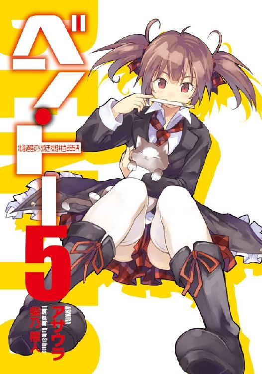
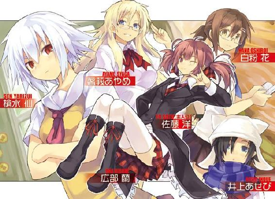
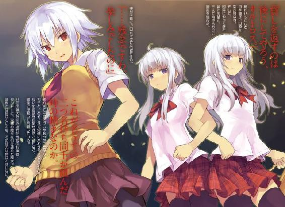
主要登場人物
佐藤 洋（さとう・よう）
烏田高校一年。体力とバカには自信がある。ゲームはセガ派。ハーフプライサー同好会所属。
槍水 仙（やりずい・せん）
烏田高校二年。ハーフプライサー同好会会長。二つ名は『氷結の魔女』。
著莪あやめ（しゃが・あやめ）
丸富大学付属高校一年。佐藤洋と同じ生年月日の従姉。イタリア人の母を持つハーフ。ゲームはセガ派。二つ名は『湖の麗人』。
白粉 花（おしろい・はな）
烏田高校一年。小説執筆が趣味な女の子。ライトノベル研究会とハーフプライサー同好会に所属。実は一部ネットでは名が知られた存在だったりする。
広部 蘭（ひろべ・らん）
芸名『鬼灯ラン』。現在売り出し中の妹系アイドル。小・中学校は佐藤のクラスメイトで、数多くの男子からマドンナ的扱いを受けていた。意外に努力家。
大谷 昌義（おおたに・まさよし）
アイドル好きな大学生の狼。小柄な体格を活かした機敏な動きに定評がある。二つ名は『ホブヤー』
壇堂 健治（だんどう・けんじ）
烏田高校の国語教師、剣道部顧問。学生時代よりスーパーを駆け、現在は剣道部員から成る『ダンドーと猟犬群』の総指揮を執っている。
山原（やまはら）
烏田高校三年、剣道部主将。『ダンドーと猟犬群』のリーダー格。ＨＰ同好会とは何かと因縁がある。
沢桔姉妹（さわぎしまい）
姉の梗と妹の鏡。丸富大学付属高校の二年。かつてスーパーを荒らし回った名うての狼コンビ。二つ名は『オルトロス』。
三沢（みさわ）
佐藤の残念な中学時代の友人。かの有名な『三沢の乱』の中心となった人物であり、これにより度重なる圧政から人々を解き放った。立ち向かう勇気の素晴らしさを世に伝えた英雄的人物。
イラスト／柴乃櫂人
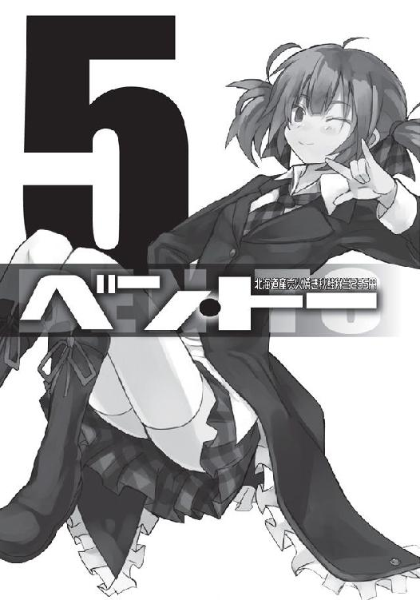
需要と供給、これら二つは商売における絶対の要素である。
これら二つの要素が寄り添う流通バランスのクロスポイント......その前後に於いて必ず発生するかすかな、ずれ。
その僅かな領域に生きる者たちがいる。
己の資金、生活、そして誇りを懸けてカオスと化す極狭領域を狩り場とする者たち。
――人は彼らを《狼》と呼んだ。
１章 ホブヤー
「フェフェフェフェフェフェ......」
大谷昌義
０
『彼』は帰ってきた。生まれ育った地方都市......閑静な家々が並ぶだけで何もない、そんな土地。ここはつまらない所だとかつての『彼』は思っていた。しかし、今は違う。その町にもまた刺激はあったのだ。それを今の『彼』は感づくことができるようになっていた。
『彼』は空を見上げた。夜空だ。街灯の明かりが星々を消し去ってしまっているが、それでもなお、半月は見て取れた。『彼』は瞼を閉じその月を隠し、耳を澄ます。風に乗ってきた町の声を聞く。公園の木々のざわめき、遠くを走る車のエンジン音、喧嘩をする猫の唸り声......そして、夜に似つかわしくないハイテンションな音楽が聞こえてくる。
「おぉ、ワルキューレが聞こえる」
成人男性にしてはやや甲高い、子どものような声で『彼』は言い、ニタニタと不気味な笑みを浮かべて瞼を開いた。そして、その音楽に誘われるように夜の町を歩み行く。
〝安い、安い、今日も安い♪ 昨日も安くて明日も安くて、毎日安い♪〟
軽快な歌声が大きくなってくる。黒く塗りつぶされた町を白く塗り替えんとする強い光が見えてくる。戦いの野、狩猟場の、運命の舞台......スーパーマーケット。
入店すれば研ぎ澄まされた冷風が迎えてくれる。未だ八月、夜とはいえ夏は色濃い。そんな場からスーパーへの入店は、冷たい北国の海に飛び込んだような衝撃に似ていた。
『彼』は今し方くぐり抜けた自動ドアを見やる。透明なガラスは、鏡でも張ったように店内と『彼』を映していた。ジーンズに黒のサマーパーカ、白色灯のせいだけではない白い肌。その顔がフッと小さく笑った。
「さぁ、行くぜ、俺。激戦区帰りの腕前、田舎の狼どもに見せてやれ。二つ名を、轟かせ」
自分に向けて呟く『彼』の耳にはすでに半額神のものとおぼしき足音が聞こえていた。弁当のチェックは終えていなかったが、構わなかった。空腹はある。それだけで、こんな地方のスーパーでなら十分戦える、そう『彼』は判断したのだった。
スーパーを疾駆してから数分、『彼』はレジ袋を手に提げてトボトボと夜の町を歩いていた。その袋の中にはソイジョイと半額シールの『キノコとハムのサラダ』が収められていた。
別に『彼』はダイエットしているとか、サラダが好きで好きでたまらない、というわけではない。単に、負けたのだ。幼稚園の頃から一緒で、今現在も同じ大学に通っている同級生に、激しく薙ぎ払われたのだ。スーパーの床で数秒伏せり、慌てて立ち上がった時にはすでに半額弁当は奪い尽くされ、状況は残りの総菜の奪い合いになってしまっていた。
アイツ、あの二つ名すら持たぬ狼......牧め。普段から俺の邪魔をするだけでは飽きたらず、夏休みの間すら......。何も俺と時を同じくして地元に帰ってくることはないだろうに。おまけに同じスーパーで出くわすとは。争奪戦終了時「何なら、分けてあげようか？」と奴に言われた時は屈辱の極みだった。
くそ、と『彼』は顔を歪め、そして、気持ちを入れ替えるようにため息を吐いた。
「......やっぱ事前に弁当見ておかないとダメだな、うん。いくらこの俺が二つ名持ちとはいえ、何があるのかわからないんじゃ腹の虫の力が出し切れないよなぁ......」
『彼』は苦笑いを浮かべながら自分を納得させるように一人呟き続けた。だが、前から人が来たので慌てて口を閉じる。場所はちょうど住宅街、猫たちが縄張り争いをしている声しか聞こえてこない閑静な場所だ。『彼』は独り言を聞かれたかもしれないと思い、パーカの薄いフードを被り、俯き加減で前からやってきた者とすれ違う。その瞬間、独り言を聞かれたかどうかを確認するため、チラリとその人物を見やった。
その人物はお菓子とジュースがたっぷり入ったレジ袋を手に提げ、音楽を聴いているのか、イヤホンをしていた。独り言は聞かれてはいない、一瞬安堵するものの、直後『彼』は思わず息を呑む。それは眼鏡をかけ、それ自体が光を放っているかのように街灯を照り返す金髪を揺らす女だった。ピチっとしたジーンズとは対照的なサイズの大きいＴシャツを着た彼女。そういうデザインなのか、襟が大きく取られており片方のタンクトップからスポーツブラの肩紐が見えていたが、いやらしさはなく、化粧っけのない顔や、少しボサボサの髪などと相まって、むしろそのラフな自然体の印象がどこか清潔感のようなものを『彼』に感じさせた。
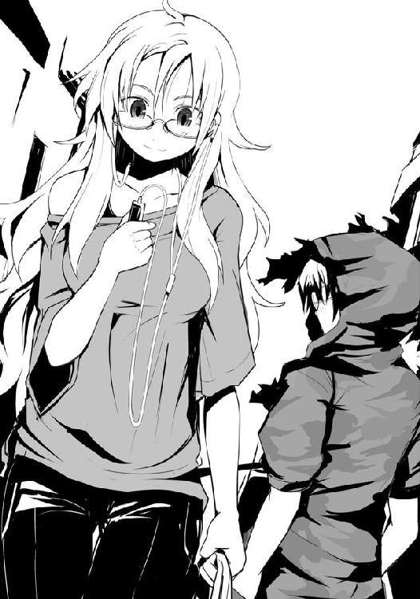
彼女は一軒の家へと入っていく。チャイムは押していない。自宅か？ 『彼』は数秒をおいてからそれとなく踵を返し、その家の表札を見る。佐藤、とあった。
そこでようやく『彼』は思い出す。そういえば、いた。田舎ではとても珍しい外国人の美女が一人、この町に住んでいたはずだ。そしてその美女には娘がおり、その子と、二十歳になる『彼』とは四、五歳離れていたものの、小学校で一緒だった記憶がある。あの時はまだ幼かったせいもあって美少女という印象はなく、良い意味で動く人形のようにしか見えなかった。
そんな母子には親戚がおり、それが町内では何かと有名な佐藤家だったはずだ。佐藤家、特にその大黒柱を知らぬ者はこの近辺ではいない。吹雪の日に全身から湯気を立ち昇らせながら全裸で自動販売機でジュースを買っていたとか、体格関係なく歩幅が一緒の若者数十人を率いて町中を全力疾走していたとか、早朝に「かぁ〜め〜は〜め〜ッ......波あぁあぁああああ！」と月を吹き飛ばしかねないパワーを込めて叫んでいるとか、愛車のトヨタ・カローラを凶悪な殺人兵器に魔改造しているとか、まことしやかな......いや、まことしやかではなく、普通に聞けば一発で嘘だとわかる都市伝説を地元の人間なら一度は聞いたことがあるはずだ。
そんな変わり者（？）と、今し方見た異国人の血を引く美女とはイマイチ結びつかないが、何か複雑な家庭の事情があるのだろう。
「そうか、彼女が......。昔とは随分変わったなぁ」
『彼』は佐藤家を見上げながら、思わず呟く。昔見た彼女の母親に随分と似てきていた。何より人形のようだった昔とは印象が大きく違う。
ウォン、と野太い犬の声が聞こえ、『彼』はビクリと背を震わせる。慌ててその声の方を見やると、散歩中の黒いラブラドールが電柱の陰に隠れている猫を威嚇していた。犬が猫に飛びかかろうとするも飼い主に綱を引かれ、止められる。猫が走り去っていく。
夜中に他人の家を見上げていると不審に思われるな。『彼』はそう思い、フードを被ったまま少し早足で歩き出す。
「あの娘も〝犬〟だったら......」
『彼』はフェフェフェッと不気味に小さく笑い、彼女が狼たちに蹂躙される様を想像する。もちろん、倒される直前には二つ名を持つ『彼』が颯爽と現れて狼たちを薙ぎ払い、その後近くの公園で一緒に夕餉を摂る......という妄想を付け加えた。いや、新米の彼女を二つ名を持つ自分が徐々に一人前の狼に育て上げるのもいいな、と別案も思いつく。どちらも、悪くない。
『彼』は走り去った猫の後を追うように、大きな犬から逃げるように、不気味な笑い声だけを残して夜の闇の中へと消えていくのだった。
『彼』の名は大谷昌義。その名を出せば誰もが知っているであろう有名国立大学の二年生。その小柄な体格を活かした機敏な動きに定評を有する、絶滅したとされる人喰いにして娘攫いのゴブリンの名を持つ、若い狼。
人は『彼』を――《ホブヤー》と呼んだ。
１
ぼんやりとした意識のまま上半身を起こした僕、佐藤洋は、自分が実家の自室の床で寝ていたのだとわかった。カーテンが閉められた薄暗い部屋、広がる食べ散らかしたお菓子袋と空っぽのペットボトル類、光を放つテレビ、そこに繋がっているＳＳ、そのコントローラーを握りしめたまま万歳するように俯せで倒れている......僕と同じ生年月日の従姉、著莪あやめ。
彼女の姿を見て、僕はようやく今の自分の状況を思い出す。ＨＰ同好会恒例強化合宿から僕と著莪はそのまま寮やアパートには戻らずに、実家へと帰った。それから三日が過ぎた頃、夜中にレジ袋一杯のお菓子とペットボトルのドリンクを手にした著莪がやってきて、いきなり「今日は徹夜ね」と言い放つと、僕の部屋でくつろぎ、ゲームを始めたのだった。
僕の部屋に平然と居座ること自体はいつものことではあるが、彼女がお菓子類を持ち込むというのはあまりない。たまにあるのは、暗黙の了解というわけではないものの、僕に何かを相談したい時である。例えば誰それからラブレターをもらったとか、中学校に入ってからどうも父親の視線がヤバイとか、最近では――とはいっても一年ぐらい前になるけど――僕が烏田高校に進学を決めた際に揉めた時とか......そういう時だ。だからその日も何かあるのだろうか、と思っていたものの、特に彼女は何も相談してこず、上機嫌にＳＳの『ダイナマイト刑事』の最終ステージで僕をタコ殴りにし続けていた。
こういう気前のいい日もあるのだろう、と僕も特に怪しむことなく彼女とのゲームを楽しんでいたのだが......明け方近くに、二人協力プレイ可能で選択キャラによっては同性愛エンドのあるカオスなＳＳのＳＴＧ『戦国ブレード』をやり始めた辺りからどうも記憶が曖昧だ。
自身のボリュームのある髪に埋もれるように、うつ伏せになっている著莪の顔をのぞき込む。指先で彼女の髪をそっと払うと、案の定眼鏡をかけたまま、右の頬を絨毯に押しつけている寝顔が現れた。プレイしたまま、寝落ちしたのだろう。
ベッドの脇にある窓を見ると、カーテンの隙間から弱々しい光......暁光が差し込んでいた。僕はどのくらい寝ていたのかわからないが、床だったせいか、どうも身体の節々が痛む。そのくせして寝不足の頭がスッキリしているのは何故だろう？
テレビとＳＳの電源を落とすと、僕は著莪の眼鏡を外す。そして、彼女を仰向けにさせると、いわゆるお姫様だっこでベッドに運んだ。一応気をつかったつもりだったが、頭を枕に置く際に「ぅん」と著莪は声を漏らし、花のつぼみが綻びるように、穏やかだった寝顔にゆっくりと、二つの碧眼が現れてしまう。
「あ、ごめん、起こしちゃった？」
僕は言うが、まだ著莪は夢うつつという様子で反応がない。
普段は意識しないが、こういう時の表情は彼女の母親のリタによく似ていて、思わずドキリとする。叔父さんがヤバイ目つきで最近の著莪を見るのもわからないでもなかった。
「......あれ、寝落ちしちゃってたんだ、アタシ。......えーっと、佐藤、今、何時？」
「わかんない。でも、まだ夜明け前だよ」
「いや、それはおかしい」
ガバっと起き上がると、著莪はカーテンを開けた。暁の空が当然のようにそこにあって......あれ？ この窓、西向きだったような......。
「ほら、佐藤。これ、夕焼けだよ」
思わず息を呑む。何故体感時間と実際時間に約一二時間も差が!? まさか――
「あー、もう『キングクリムゾン......ボスかっ!?』とかはいいから。佐藤おまえさ、確か朝方に寝落ちして、ずっとそのままだったんだよ」
......なるほど、どうりで体が痛いくせに頭はスッキリしているはずだ。
著莪はベッドから降りると両腕を上げ、「んーッ」と声を出して伸びをする。僕がベッド脇に置いといた眼鏡を拾い上げる。
「お腹減ったなぁ。お菓子もないし、もう半日何も食べてないや。朝ご飯、ってか、晩ご飯、どうする？ うちは今誰もいないけど」
著莪の両親は共働きなので、家にいないことが多い。同様に僕の家の親父も職業柄頻繁に家を空けるし、たまに一、二カ月ぐらい帰ってこない時すらある。そして母もまたあの趣味のせいでかなりの頻度で家を空ける。そのため、僕らは親がいるどちらかの家で一緒に食事を摂ることが普通に多いのだが......ただ今日は、どうだろ。
「うーん、一応訊いてみるかな。......まぁ、結果は予想できるんだけど」
僕はボサボサになっていた頭をポリポリ掻きつつ、著莪とともに一階にある母の部屋へと向かった。扉の前に立つと部屋の中から安っぽい音楽と軽快な母の声が聞こえてくる。
『えー！ これから深淵の洞窟へ行かれるんですかっ!? そんな一人でなんて危険ですよ〜。......うん、ネネもご一緒いたします、ご主人様！ 大丈夫ですよ、二日寝ないぐらい！』
......はぁ〜、と僕と著莪は扉の前で深くため息を吐いた。......どうやら母もまた、ネットという広大な世界に旅立ってしまい、留守らしい。今この扉の向こうにいるのはネネ（一四歳・♀）だけだ。今はメイドかケモノ娘あたりの職業らしい。
どうしよっか、と著莪は苦笑いを浮かべつつ、言う。僕もまた苦笑いで肩をすかす。とりあえず何か食べ物がないかと思い、台所に行くと、冷蔵庫の扉にマグネットで押さえられた母からのメモがあるのを見つけた。それには『コレで何か適当に食べてくるべし。ネネの邪魔をしたら許さないんだからね！――母より』とあり、四〇過ぎた母からのメモにナチュラルにこんな文面がある時点で死にたくなる。ちなみにメモにあった〝コレ〟とは、メモと一緒に貼り付けてあった一〇〇〇円札のことだろう。二人分の夕食とするにはやや微妙な金額だった。
「どうする、著莪。どこか食べに行く？ マックとか」
「うーん。昨日からずっとお菓子ばっかだし、アタシ的にはご飯系が食べたいかな」
「うん、確かに。でも、一人頭五〇〇円となるとちょっと厳しくない？」
著莪はどこか得意げな顔で、僕同様に――といってもコイツの場合は基本いつもだが――ボサボサの頭をポリポリと掻く。
「それだけあれば十分じゃん。佐藤、いつも夕飯にいくら使ってる？」
え〜っと......と、一瞬考えて、僕は指をパチンと鳴らす。実家に帰ってきたせいでどうも中学生までの感覚に戻っていたらしい。この五ヶ月、毎日のようにそうして生きてきたのに、何故かそのことが頭に思い浮かばなかった。そう、僕らはもう過去の僕らとは違うのだ。需要と供給の狭間に身を置き、誇りを賭け、命を懸け、夜を駆ける獣――狼なのだ。
「全国どこのスーパーにだって需要と供給の狭間は存在する。そして神が存在する領域なら半値印証時刻だって生まれるはず。なら、この町にも......。なるほど、確かに」
「ま、正確な半値印証時刻はわからないけどね。何軒か回って調べてみようよ」
僕らは互いの目を見て、フッと笑い、共に頷いた。
「よし。そうと決まれば、まずはお菓子の袋とかで散らかっている僕の部屋を片――」
「んじゃちょっと家戻ってシャワー浴びて、着替えてくるわ。あとよろしく！」
そう言って著莪は颯爽と去っていく。僕は一人萎えていく心とゴミ袋を手に部屋に戻った。
●
日が暮れると、大谷は家族に一言告げてから、家を出る。家の前に停めてある昨年中古で買った軽自動車に乗っていこうかとも思ったが、やめた。どうせ大した距離ではない。
彼は最初にスーパーではない方に向かった。先週からレンタルしていた新人アイドルユニット、フラワー・ガーデンのＤＶＤ『フラワー・ガーデンコレクションVol.7―芽吹きの刻―』を返却するためだ。今回は大谷と同郷にして、フラワー・ガーデンの中でもソロ活動が多い、今ブームになりつつある妹系アイドル〝鬼灯ラン〟にメインスポットが当たっていたため、大満足の一本だった。大谷をはじめとした地元の男子生徒の間では昔から有名な美少女で、大ファンなのだ。彼女はまじめで、かわいくて、何より小柄な大谷より小さかった。
家から数分のレンタルビデオ店に行き、返却ボックスの中にＤＶＤを投げ込むと、大谷はまたフラフラと夜の町を歩き始める。
自分は、狼だ。今日はどこの狩り場で暴れようか。......どこに行くにしてもまだ少し時間があるな、よし散歩でもしよう......彼は誰に言い訳するでもないのに、そう独りブツブツと喋り、時折「フェフェフェ」と小さくも不気味な笑い声を漏らしながら住宅街の一角に足を向けた。行く先は鬼灯ランの実家である。
果たして、見えてくるのは、周りを壁で囲まれた広い庭を持つ少し古風な家と、それに隣接している二階建ての比較的新しい家。だが、もちろん大谷は敷地内に入ることはせず、家の回りを少し徘徊するだけだ。時期は夏休み。地元を離れ、仕事をしながら都会の高校に通うランラン――鬼灯ランの愛称――とて、学業とアイドル業から離れ、実家へ戻るはずだ。家の近くを歩いていると偶然、彼女と出会い、そこから二人の運命のドラマが始まったりするかもしれない。最近の大谷の頭の中でブームになっている妄想の一つだった。
大谷はゆっくりと五回、鬼灯ランの実家を周回した後、少し離れた小さな公園のベンチに腰を落ち着けた。さすがに何度も回っていると怪しまれる。
彼が座ったベンチはちょうど鬼灯ランの家の玄関ドアが見える場所だ。待ち伏せ......ではなく、〝偶然の出会い〟を待つには最適の場所である。
座ってから三〇分ほど過ぎた頃、大谷はベンチから腰を上げた。普段ならもう少しゆっくりしているが、公園の前をパトカーが徐行していたので、もしかしたら姿を見られ、不審者に思われたかもしれない。チッ、と彼は舌打ちしつつ、少し早いが、スーパーに向かうことにした。念のため、パーカの薄いフードも被る。
住宅街をフラフラ歩いていると、ふと、彼はデジャヴを覚える。昨日の今頃に見た光景とそっくりなものが、目前にあった。
金髪を有した麗人が、自分に向かって歩いてきていた。昨日と違うのはレジ袋とイヤホンがなく、服装がタンクトップになり昨日はあまり確認できなかったその胸元の、神が作られし芸術的な球形が明確化され、髪型がポニーテールとなっていることぐらいだ。
すれ違う瞬間、レンズ越しの碧眼が大谷をチラリと見てくる。街灯があるとはいえ薄暗い夜道、それなのに清水のように美しく透き通った目が見て取れる。
大谷から視線を外し、歩調を変えることなく、彼女は過ぎ去っていく。入浴直後だったのか、彼女の長い髪は少し湿り気を帯びており、シャンプーかリンスの素朴で優しい花の香りがそっと辺りを漂った。大谷は思わず足を止め息を呑む。その瞳に、その艶やかな髪に、かすかな残り香に......。どれもが卓出しているのに、どこにも嫌みな感じ、作られた感じがしない。
昨日と同じく、大谷は歩き去っていく彼女の後ろ姿に呆然と見とれていた。彼女もまた昨日と同じように、佐藤家の前に行くとチャイムも鳴らさずに玄関の扉を開ける。......だが、閉めない。おや？ と思った大谷は電柱の陰に身を隠し、その様子を窺う。しばらくすると家の中から黒いカーゴパンツに黒いＴシャツを着た少年が現れた。
「ごめん、佐藤。ちょっと遅くなっちゃった。さっきじいちゃんから電話がかかってきてさ」
「あぁ、うん、わかってる。僕の方にもきたよ......。ま、とりあえずは気を取り直していこう。どこのスーパーに行く？」
「とりあえず駅前の店を見ておきたいな。この辺りじゃ一番大きかったはずだから、自然と弁当コーナー、そして弁当の数自体多くなる。さっきネットで閉店時間を調べたんだ。まだ半値印証時刻には早いと思うけど......でもだからこそ、先に見ておきたい」
佐藤と呼ばれた黒ずくめの男が「そうか。安全策か」と呟き、頷き合った。
大谷は目と耳を疑った。まさか、と何度も胸の中で繰り返す。自分が望んだことが今現実として目の前に存在している。余計な黒ずくめの少年こそいるが、ほとんど昨日の妄想通り。
大谷は電柱の陰で、俯きながら自分に与えられたこの奇跡に興奮する。この後の展開の妄想が目まぐるしいほどに彼の頭の中を駆け巡る。その間に麗人たちはその場から姿を消していたのだが、大谷が気づくのはもうしばらく経ってからだった。
◯
駅ビルではないのだが、駅前にはちょっとした総合デパートがある。有名チェーン店舗だが、ここの規模は少し小さめ。それでもこの近辺では一番大きい店。けれど、地元の人間以外にはまず利用者がいない......そんな場所だった。
一九時一二分、デパートに入店。僕と著莪はまっすぐに地下の食料品売り場を目指した。下りのエスカレーターに乗ると、徐々に全身の産毛が逆立つような感覚。半値印証時刻を目前にした狼たちの殺気ではない。冷気のせいだ。夏には気持ちがいい。
地下食品売り場に到着。僕らはまばらな客に交じりつつ、店内最奥にあるであろう総菜・弁当コーナーを真っ直ぐに目指した。このデパートの閉店時間は二二時。そこから計算するに、今の時間はまだ半値印証時刻には至っていないことが予想された。僕と著莪の経験からすると、半値印証時刻は閉店一時間前に設定される場合が多い。槍水先輩が以前教えてくれたように、季節によっても変動するらしいが、それを踏まえても今はその時間ではない。そのため今回のは偵察というか、滑り止め確保というか、最悪他の店で半値印証時刻を見定めることができなかった場合に来店するための下見である。
「やっぱり時間帯のせいかな？ 特に何も感じないや」
著莪の言う通りだ。時間が早いせいかな、そう言おうとした時、ふと、目に入った天井から下がる広告に僕は立ち止まってしまう。著莪は「佐藤？」とふり返るものの、僕の驚愕した様子に状況を察し、表情を硬くする。彼女もまたその広告を見やり、僕と同じ顔をした。
天井からぶら下がる少し端々が破れた紙広告には〝価格破壊推進派！ お弁当三〇〇円！〟とあった。推進派があるということは反対派が存在するのだろうか？ という疑問が浮かんだりもしたが、それより何よりその弁当の値段である。不況の昨今、客眼を引こうと、集客力の高い総菜・弁当の値を下げることはよくある話だ。しかしながら三〇〇円とは......。
「えーっと、これで半額弁当を狙う必要がなくな......る？」
僕は言うものの、著莪は無言のまま店の奥へと小走りに行ってしまう。後を追うも、彼女はすぐに立ち止まった。僕もまた、彼女と肩を並べ、目線を追い......今一度愕然とする。
比較的大きな店。まだ閉店まで二時間半もある。仕事帰りの人間がピークに達するであろう時間にしても、まだ早い、そんな時刻である。なのに......それなのに、弁当が一つもない！
著莪は忌々しく舌打ちをする。
「......やっぱり、こうなるか。佐藤、この店はダメだ。他に行こう」
いくら安いにしたってこの時間帯に弁当がないというのはどういうことだ。思わず呟いた僕の疑問に、踵を返す著莪が僕の肩をポンと叩く。
「マっちゃんから聞いたことがある。この種の安売り弁当は食材の大量一括仕入れやらいろんな箇所のコストカットなど、いろいろあるけれど、供給量を極端に絞る、というのが結構多いんだってさ。確実に売り切れる分だけ、値引き品も廃棄品も出ないようにね。多少売り上げは下がっても確実に利益はあるし、何よりインパクトもあるから総菜・弁当の集客力に拍車もかかって客足は増え、スーパー全体としては悪くない結果が出るはず。そういう戦略ってわけ。アタシたちにとっちゃやめてもらいたいし、店側としても、損が出やすいと思うけどね」
店を出ると著莪は立ち止まり、次はどこ行く？ と訊いてくる。僕もまた入り口の大きな自動ドアに反応しない位置に立ち、頭の中にこの町のマップを思い浮かべる。足の速い僕一人ならともかく、著莪を連れて徒歩で行ける店となると......だいたい三つぐらいだろうか。しかしそのどれを選ぶべきか。地元でありながらスーパーなんて今まで気にしたことがなかったため、半値印証時刻はもちろん、閉店時間もわからない。
「よし、やむを得ない。手当たり次第で行こう。まず近い『スーパー・こぐち』から――」
「残念だが、あそこは八時閉店でもう半値印証時刻は終わってるぜ」
僕らは薄暗いデパートの駐車場から聞こえてきた声の方を見、思わず一歩下がる。
それは一瞬生白い顔と両腕だけが浮かんでいるように見えた。だが近づいてくるにつれ、店の入り口に設置されている照明に照らされていき、実際には黒いパーカを着ているため、その部分が夜の闇に紛れて見えなかっただけとわかった。大きな目をし、少し鼻が高い小男。
彼はどこかで運動でもしていたのか、口こそ閉じているものの、代わりに小鼻が大きく開いたり閉じたりしており、息が乱れているのが見て取れた。正直、何か......引く。
「えっと、誰？ 佐藤の同類？」
「......同類って何だよ」
僕は言ってみるものの、著莪も、そしてパーカの男も華麗にスルーする。
「お二人さんはどうやらこの土地の半値印証時刻を知らないとお見受けする。俺が案内してやろう。何、案ずるな、俺も君らと同じ狼さ。......あぁ、一介のただの狼さ」
彼は、白粉が以前よくやっていたような、演技がかった口調で......というか、アニメのセリフを真似て口にしたような、そんな薄っぺらい口調で、言った。
僕と著莪は目配せする。――どうする？ ――ま、いいんじゃない？ そんなやりとりを一瞬に行う。お願いしても？ と、これは口に出して、著莪が言った。
よし、それじゃついてきな。そんなふうに男は言うと、僕らに背を向けて歩きだす。僕らから顔を背けた途端、彼は「ムフゥー」と、大きく息を吐く。
何だろう。息が乱れているということがバレたくなかったのだろうか？ それは何故？ そしてこいつは何故僕らの前に現れ、お節介を焼いているんだろう？ 何よりこの土地に詳しい狼だというのに、この時間帯にこのデパートに来る理由がわからなかった。
●
とりあえずファーストコンタクトは上々、こちらがまさか町中を駆けずり回って二人を捜し出したとは思ってはいまい。出会いは偶然の方がドラマチックだ。大谷は乱れていた呼吸を正しながら、思う。おかげで一九時台の『スーパー・こぐち』と『トミー・スーパー』の半値印証時刻を逃してしまったがやむを得まい。いつもの大谷ならこの二軒のどちらかに挑み、ダメだった時は二〇時台に半値印証時刻のある店へ向かうのだが、今回ばかりは諦めた。
大谷は呼吸が落ち着いてくるのを見計らって二人に話しかける。いつから半額弁当を求め始めたのか、いつも二人で戦っているのか、そして二人の名前は......等々。その結果、何とか個人情報を聞き出すことに成功する。
著莪あやめと佐藤洋。二人とも今年の春から実家を離れ一人暮らしと寮生活の高校一年生。姉弟同然に暮らしてきたが、今は別々の高校に通っている。半額弁当の魅力に魅せられたのは進学とほぼ同時期......つまり、四カ月弱程度。大谷は適当なトークをしつつも、考える。
四カ月。自分とは比べるまでもないくらい短い期間ではあるが、成長の早い者ならすでに犬ではなく、狼として駆けている頃合だ。狼なら狼でスーパーで手助けしてやれるし、犬であれば教育してやれる。果たして二人はどちらだろう。大谷の理想としては後者だった。
大谷は歩きながら、後ろの二人をふり返る。できる限り自然に、さもどうでもいいことを尋ねるような口調で、彼は言う。
「ひょっとして、二つ名持ちの狼だったり......しない、よな？」
一瞬、著莪がプッと笑いそうになり、横目で佐藤の方を見やった。佐藤は「そ、そんなわけないじゃないですか！ あははっそんなに強くないですよ！ さ、さぁ、お腹も減りましたし、一刻も早くスーパーへ行きましょう！」と甲高い声で慌てて言い、著莪を睨みつける。彼女の方は特にそれを気にした様子はなく、むしろニヤニヤとした顔で見つめ返していた。
ふむ、と大谷は考える。この様子からするに、これはひょっとして相当弱いんじゃないだろうか。二つ名持ちかと問われたら、普通の狼であれば苦笑いして否定するだろうし、持っていれば得意げな顔で頷いたりするものだ。そのどちらでもない、ということは、コイツ、狼ではないのではないか。つまり今なお勝利の味を知らぬ、犬。その可能性は高い。
「えっと、あやめ？ 君の方は？」
「んー。佐藤と同じぐらいの実力かな。あとは察して」
顔を前に向けた大谷は胸のところで小さくガッツポーズを取る。その興奮を内に抑え込みつつ、自然を装って口を開いた。
「フッ、そうか。それなら、この俺が協力してやろう。なぁに、ルーキーのケツ持ちはベテランの務めさ。といってもケツ持ちってのは別にセクハラな意味じゃないぜ？ 間違えるなよ？ フェッ......ゴホン、ハッハハ......」
思わずいつもの笑い方になりそうになり、大谷は少し慌てる。歩きながらチラリと著莪たちをふり返ってみるが、特に気にした様子はなかった。ただ笑い方云々以上に、今のジョークが通じなかったらしく、二人してかなり微妙な顔をしていることの方が問題といえた。二人ともにジョークは通じないタイプなのかもしれない。
汚名返上しようと、大谷は幾度も楽しいトークを試みる。半値印証時刻内のスーパーという領域における掟のこと、大猪と呼ばれる脅威の存在のこと、二つ名の意味......等々、数々の話題を提示するものの、そのどれもが二人の愛想笑いを誘うだけでどれ一つとして喰いついてこない。まるですでに知っていることを聞かされているが、とりあえず空気を悪くしないように無理しているかのような二人の様子に、大谷は焦った。もっと面白い話、もっと興味深い話はないか、と次々に話題を変えていき、最終的にＵＳＢの語源についての話になったりして、正直語っている大谷自身意味がわからなくなってきていた。
早くスーパーについてくれ。大谷はそう切に願った時、ついにあの歌が聞こえてきた。
〝安い、安い、今日も安い♪ 昨日も安くて明日も安くて、毎日安い♪〟
そして、光。大谷たちを照らし出す、白く美しい光。この微妙な会話から神が助けに来てくれたかのような、救いの光。その場こそ、二〇時台に半値印証時刻を有する領域、今宵の運命の舞台、スーパーマーケットだ。
◯
やっかいなことになったな、というのが僕と著莪の素直な気持ちだった。
僕があの二つ名を知られまいと適当なことを口走った結果、どうも、大谷さんは僕らを犬だと勘違いしてしまったらしい。懇切丁寧に狼とは、犬とは、大猪とは......みたいに説明してくれるのだけれど、数え切れないくらい戦いを重ねてきた僕らには今さらなことばかり。普段の著莪なら平然と「知ってるよ」と言うのだろうが、今日は僕の一杯一杯な様子を楽しむ気なのか、笑いをかみ殺したような顔で僕の方をチラチラ見てくるだけだった。
そんな時、僕らの耳に妙に軽快な音楽が聞こえてくる。そしてスーパーの明かりが、近づく僕らを徐々に照らし出していく。周りを一般の家々が囲む、そんなに大きくはない店舗。同様に駐車場もさして広くはないが、代わりに駐輪スペースが大きく取られており、地元密着型というより、ご近所密着型の作りであることが窺えた。
「この店が二〇時台の店じゃ、一番のオススメだ」
大谷さんはスーパーの入り口前でふり返ると仁王立ちし、堂々と言い放つ。
「だが、気をつけな。実質的にこの辺りの最終半値印証時刻の店だし、一九時台の店で弁当を獲れなかった連中もまたこの店に集まってきているはずだ。言ってみれば負け犬だが、同時に手負いの獣でもあって、これが結構ヤバイ。気をつけなければ連中の牙に――」
「なぁにさ、また偉そうに演説しちゃって」
どこからか女性の声。大谷さんの言葉が止まり、目を見開いてその声がした方を見やる。
僕らもまたそれに倣うと、少しぽっちゃり......いや、違うな。体格の良い、前を開けた厚手のパーカを着たパンツルックの女性がこちらに歩いてくる。
「昌義、誰、その二人？ あ、いや、ちょっと待って。こっちの金髪の人には見覚えが......あ、著莪さんのトコの子だ。こっちの男の子は？」
大谷さんを昌義と呼んだ女性は、嫌そうな顔をする彼の横にやってきて、僕の顔をまじまじと見つめてくる。彼女の身長は僕や著莪より少し大きいぐらいだろうか。ただ、体格がいいので僕らよりもずっと大きく感じられる。また遠目には何となくぽっちゃりしているように見えたのだが、近くで見てみればそれは太っているのではなく、肩幅があり、そしてダボっとしたそのパーカのせいなのだとわかった。短い黒髪にややしっかりした眉、大きな瞳、そして化粧気のない艶のある肌が彼女をとても健康的に魅せていた。
クソ、こんな時に......と大谷さんがボソリと呟くと、視線を彼女に向けずに、僕を短く「佐藤だ、さっき知り合った」と紹介してくれる。
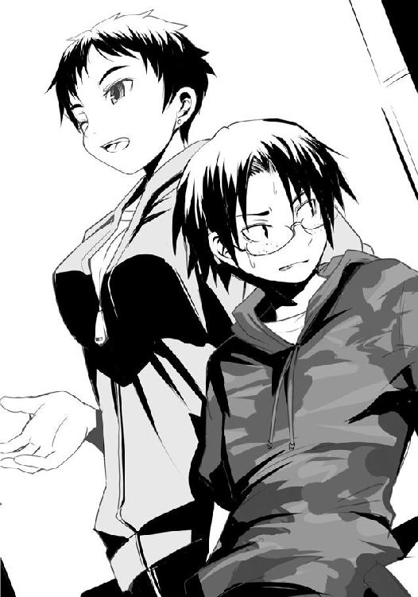
「まぁたかぁ。飽きないね、あんたも。別に二つ名手に入れたら偉いってわけじゃないんだし、人にちょっかい出す前に腕を磨きなよ。どうせ大して強くもないんだしさ。
こいつさ、二つ名をホブヤーっていうんだけど、それが定着してからというもの何か勘違いしちゃってるみたいでね。ホントごめんねぇ、相当偉そうなこと言ってたでしょ。許してあげて。......あ、私？ 私は牧。昌義の、まぁ幼馴染みみたいなもんかな。同い年で、家が近所なんだ。あ、そう言えば多分私ら、同じ小学校だったはずだよ？ 著莪さん見たことあるもの。二人は私ら覚えてない？ ......あ、やっぱり覚えてないよね〜、そういうもんだよね〜」
牧さんは続けざまに訊いてくるなり、颯爽と著莪と打ち解けてしまう。そんな楽しげな彼女とは違い、その隣の大谷さんは不愉快そうな顔をしながら俯き加減だ。
偉ぶって喋っている最中に現れる家族や幼馴染みというのは得てして嫌なものである。
......著莪という従姉を持つ僕には、今の大谷さんの気持ちが痛いほどよくわかった。
「アレ？ そういえば大谷さんって二つ名持ちなんですか？」
僕が尋ねると、お、おぅ、と幾分元気のない声で大谷さんが応じてくれる。
「あぁ、またそれ。昌義はすぐいやらしく自慢したがるから。大方、争奪戦の後とかにポロッと漏らして『フフッ、実は』とか言おうと考えていたんでしょ？ 逆にダッさいよねぇ」
気のせいか、大谷さんが一層小柄に見えてきた。今や完全にお説教食らっている子どもみたいに俯いているせいもあるのだろうが、同時に大柄な牧さんが横に来たせいかもしれない。
「あとあれ、美人の狼を見つけると速攻でちょっかい出すんで、私らが普段戦っている土地じゃ女性の狼から嫌われているんだよ。そんなだから娘攫いのゴブリンの名前付けられちゃってね。こういう変なのも世の中には大勢いるから気をつけなよ。あ、そういえば二人は狼になってからもう長いのかな？」
大谷さんは視線を牧さんに向けようとはせず、僕らの代わりに、二人はまだ犬だ、と短く答える。......今、また一つ、誤解が生まれた......。
僕は苦笑いし、著莪はプッと笑う。だが、次の瞬間僕らの笑みは消え失せる。牧さんの顔から笑みが瞬時に、そして完全に消失したのだ。唐突に、空気が張った。そして刺さるほどに鋭い視線を僕に向け、足の先から頭まで、品定めするように見てくる。
大谷さんだけが何も気がついていないようで、だから、と声を漏らす。
「お、俺はその、半値印証時刻もわからない二人を手助けしてやろうと思って声をかけただけで、別に下心なんてもんはなかったんだって。俺はそんなゲスな輩じゃないって」
「......アンタ、本気で言ってんの？ だとしたらもっとタチが悪いよ、まったく。著莪さん、佐藤君、ここの半値印証時刻はもうすぐだから。それじゃ、また後で。行くよ、昌義」
お、おい、やめろ、放せって！ そう言う大谷さんの声が聞こえていないのか、牧さんは小柄な大谷さんのフードをつかむとズルズルと引きずりながらスーパー店内へと入っていった。
二人だけになった僕と著莪は顔を見合わせる。
「何だろう今の。......はっ!? ひょっとして牧さん、僕に一目惚れしたとか」
ペシッと僕にデコピンをする著莪が、あっ、と短く何かを思い出したように声を漏らした。僕から一歩離れ、彼女は牧さんのように僕を足の先から頭までじっくりと見てくる。ただ、その視線は先ほどの牧さんと違ってどこか楽しげである。
「あ、やっぱりそうかぁ。ホブヤー......そうだよ、うん。なるほどねぇ〜、ふ〜ん」
著莪は一人だけ納得したようにニヤリと笑って、大谷さんと牧さんが消えていったスーパーのエントランスを見やる。僕が「何が？」と尋ねるも、彼女は何かを含んだような笑みを浮かべるだけではっきりしない。
「佐藤、そろそろアタシたちも行こっか」
「え？ あ、うん。それはいいんだけど、その前に今おまえが気づいたこと、教えてよ」
著莪は楽しげに「う〜ん、どうしよっかなぁ」ともったいつけて言うと、くるりと僕に背を向けてエントランスへと向かって歩いていく。
「あの人はお節介で心配性で、きっとかわいい女の子なんだよ。多分ね。......佐藤、今回の争奪戦は気をつけた方がいいよ。きっと彼女に狙われる。......さぁ、行こう」
不可解な言葉を残して進みゆく著莪に反応し、入り口の自動ドアが開く。入店する彼女の背ではポニーテールが揺れていた。遊んでいる犬の尻尾のように。
入店と同時に冷気、そして半値印証時刻前の、あの独特の緊張感......それら二つが混ぜ合わさったピリッとした空気が僕らを迎えた。
僕は著莪に先ほどの牧さんのことを尋ねようとするものの、その空気を体に浴びた瞬間にその考えは吹っ飛んだ。数日ぶりの半額弁当争奪戦......いや、違うな。夏休みに入ってからは著莪を看病していたり、それ以降も蔵田君たちとホットプレートで一週間連続で焼きそばを夕食として食べていたりして、あの強化合宿以外ではしばらく参戦していなかった。しかもあの強化合宿も、普段のそれというよりはどこかお祭り、そう大きなイベント的な争奪戦で、こういう普通のスーパーでの、日常的に行われる戦いは本当に久しぶりなのだ。そのせいか、長い休み明けに親しい友人の顔を見た時のような、じわりとくる懐かしさが僕の胸に生まれていた。
僕らは軽い足取りで店内の外周を回っていく。強い照明の下、入り口横の生鮮食品コーナーから鮮魚コーナーへ。肌に神経を集中させ、店内の気配を探る。狼の数は一〇を越えない。そのうちの一つ二つが、僕らに意識を向けている気がする。
「結構通路が狭いなぁ。陳列の密度も濃い......佐藤、こういう店での経験は？」
「いや、ほとんどないけど......あ、アレか。先輩から話だけは聞いている」
こういう狭いスーパーでは弁当棚はもちろん、近隣の陳列棚に並ぶ商品を巻き込んでしまう可能性があることから、必然的に大技が使えないのだ。
「まぁ、派手なのもやってできなくはないと思うけど......かなり難しいし、危ない。だから佐藤は今回弁当獲る獲らないより、最低限きちんと戦えるかどうかを意識した方がいいかな」
ご忠告感謝、と僕は言うものの、当然戦うことだけに意識を向けるつもりはない。僕は弁当を獲りに来た......何より、この場で弁当に意識を向けずしてきちんと戦えるわけがないのだ。
僕は合宿先で経験した、あの腕の痺れを思い出し、手を堅く握る。
鮮魚コーナー横には刺身、そしてお寿司のコーナー。イカ刺しとアジのたたき、そして助六セットが一つずつ。やはり夏場とあってか、こちらには一足先に半額シールが降臨していた。
そしていよいよ僕らは総菜・弁当コーナーへとさしかかる。大きな皿の上に並べられた総菜をバイキング方式で自分でパックに詰めるタイプの天ぷらコーナーが総菜の半分を占領していたが、今は皿の上は空だ。代わりに三割引シールが貼られた、あらかじめ店員がパックに詰めたものが二つ見受けられる。中身は総菜天ぷらの中では鉄板と言われているエビ天、かき揚げ、イモ天の三種の組み合わせ。またそれらとともに並べられている総菜は焼き餃子、焼き鳥、揚げ春巻のパック。今現在残ったものだけを見ても安定感あるラインナップだ。無難といえば無難、しかし必ず期待通りのものを提供してくれる、そんな店なのだろう。
ゆっくりと歩む僕は一呼吸おいてからいよいよ視線を弁当コーナーへと向けた。その瞬間、自分の考えが誤っていたことを悟った。ここは保守的な店ではない、なかなかに挑戦的だ。
三割引のシールが貼られ、今もなお残されていた弁当は二つ。一つは季節外れではあるが、テラテラとした半身が脂のノリを見る者に如実に伝えてくる『ホッケ弁当』四五〇円、もう一つは『豆ご飯とピーマンの肉詰め弁当』五〇〇円だ。これはなかなか見ることのない弁当だ。
ピーマンの肉詰め......実質的に肉がメインでありながらも、否応なくそのピーマンの存在を意識せずにはいられない料理。誰もが当然のように子ども時代には親から喰えと言われるも、全力でこれに抵抗した記憶があるはずだ。もちろん、スーパーに弁当を買い求めに来るのは大人がメインであろうが、それでも思春期を終えてもなおピーマンに抵抗を覚える者も少なくないはずで、それに加えて誰もが特別おいしいと感じたことはないであろう、豆ご飯である。
仮にこれの横にハンバーグ弁当が並んで陳列されていたとしたら、果たして人はどちらに手を伸ばすだろう。一〇〇人が一〇〇人とも、ということはないにせよ、多くは後者を取るはずだ。普通に考えて店側とすればあえてリスキーな料理を作るメリットなんてありはしない。無難に売れるものを用意したいだろうし、そうできたはずだ。それでもなおこうしてピーマンを押し出してくるというのは......よっぽどの自信があるというのか。
ここの店舗の特性からして、同じ人間が毎日のように訪れるはず、そこで総菜や弁当を買っていく人も同様で......それで、飽きさせないためにあえて多少のリスクを冒している、と？ その可能性は否定できない。謎は深まるばかりだ。
弁当の容器に収まっている二つの大きなピーマンの肉詰めはそれを見つめる僕には何も答えてくれない。ただ、豆ご飯、漬け物、色が薄めの煮物、そして大きなピーマンの肉詰めが二つ、同じ区切りにこんもりとした、普通よりも多めの野菜サラダが穏やかに鎮座しているその様は、まるで湧き起こった謎に困惑する僕をどこか優しげに見つめているように感じられた。
謎を解くためには味わうしかない。そう思った。そして――食べてみたいと、素直にそう思う。この大振りなピーマンに隙間なく入ったお肉......口にすればどんな世界を見せてくれるのか。それを想像するだけで、ツバが湧く。
「ホッケと、豆ご飯とピーマンの肉詰めかぁ。どっちもおいしそう。うー、迷うなぁ」
「ホントに。でも腹的に僕は肉詰めに挑戦してみたいかな」
著莪は小さく、了解、と言った。それ以上は何も言わず、睨んでくることもないのでとりあえず彼女はホッケに狙いを定めてくれたようだ。ただ、ホッケが誰かに獲られてしまった場合はもちろん、彼女が獲れる、と判断した場合、即座に目標を肉詰めにシフトしてくるであろうことは予想された。著莪は頼もしくはあるが、同時にそれだけ強敵でもあるのだ。
とりあえず僕らはそのまま歩みを止めることなく歩き続ける。途中、島棚の間に牧さんと俯いたままの大谷さんの二人を見つけたが、共に視線を向け合うだけで声をかけたりすることはなかった。僕らは弁当コーナーを過ぎ、スタッフルームへの出入り口を横目にし、同じく店内外周に設けられている精肉コーナーへ行き、そこに陣取ることにした。遠からず近すぎず、弁当コーナーまで一直線で行ける場所だ。
著莪は豚肉の赤と白の美しいコラボレーションに視線を落とし、僕は携帯で時刻を確認する。一九時五〇分。戦いの時は近い。空気も僕らが入店してきた時よりも張りを増していて、空気に晒している肌の産毛が逆立つような感じがし、不自然に店内ＢＧＭが大きく聞こえる。自然と体が緊張し、その時に備えられていく。
著莪がちらりと僕の方を見、一瞬何か言おうとするように口を開くも、ふいに聞こえてきた足音にすぐにそれを閉じる。淀みないその足音は我々に恵みを与える存在――半額神のものであることは雰囲気からして察することができた。ただ、その足音がした方向はスタッフルームからではなく、店の島棚の方から聞こえてきたのは意外だった。多分、僕らが入店するより前から店内商品の様子を窺い、陳列を正していたか、品出しをしていたのだろう。
半額神が島棚の間から姿を現す。無地のエプロンを着け、頭を坊主に刈り上げた男。
彼は歩きながらシールの束と赤ペンを取り出し、弁当コーナーに到着するや流れるように滑らかな動作で、総菜のパックへと半額シールを貼り、赤ペンを走らせる。シールに、そして元々ついていたバーコードにピッと横線を引く。全てに貼り終わるといよいよ隣の弁当コーナーへ。ゆっくりとした動作なのに、早い。流れるような挙動に加え、無駄な動きがないのだ。
予想以上の早い展開に著莪が慌てて眼鏡を外し、それをジーンズのポケットにねじ込んでいたケースにしまい込む。僕もまた大きく息を吐き、全身の力を抜き、その時に備えた。
そしてついに半額神が弁当へとその手を伸ばす。左手の二本の指先に『半額』と書かれたシールを一枚ずつ付け、右手に赤ペン。左右の手が独立した生き物のように弁当の上で踊る。まさに一瞬。左右の手が残された二つの弁当の上で交差した、だけ。そう見えた。だが、それだけで弁当には黄色と赤で艶やかに彩られた半額シールが降臨し、バーコードに赤線が迸っていた。
彼は曲げていた腰を伸ばし、弁当コーナー横のスタッフルームへと歩みゆく。彼が一歩踏み出すたびに店内の緊張が跳ね上がる。
そうして半額神がついに扉の前へ。そこで一度ふり返り、深々と一礼する。
店内の空気が張りに張る。先ほどまで明瞭に聞こえていた店内ＢＧＭが遠くなる。感じるのは肌を撫でる殺気にも似た緊張感、ゆっくりと聞こえる己の鼓動、そして、半額神が開ける扉の、ギィーという音。僕は瞼を閉じ、ゆっくりと静かに息を吸い、そしてその音を聞く。扉の閉まる、バタン、という......その音を。狩りの刻、狼の夜の幕開けを知らせる、運命の響き。
僕と著莪は同時に駆け出す。弁当コーナーまで直線なので、ありったけの力で地を蹴る。弁当コーナー前へ、僕、そして一歩遅れて著莪が最初に到着するも、即座に横合いの島棚の中から二匹の狼が続けざまに弁当コーナーに来襲する。弁当に手を伸ばす間はなかった。
最初に身を低くした狼がタックルのようにして突っ込んでくる。僕は弁当コーナーに到達と同時に、床と接している棚の下部分を蹴るようにして直角に進行方向を変える。体勢の低い迫り来る狼よりもさらに身を低くし、肩と背を床に滑らせるようにして彼の下へと入り込む。左手を床に着けると同時に、右手でその狼の顎を下から殴り上げた。
仰け反った狼に、後続の狼がぶつかり、二人してよろけたところを、僕より一歩遅れていた著莪が走り込んできた勢いそのままに側面から二人同時に蹴り飛ばす。
狼たちはもつれ合って総菜コーナー前の床を転がる。そこに走り込んできていた一匹の狼が彼らに足を取られ、転倒。それに後続していた黒い影、大谷さんが転倒した狼を踏みつけヒラリと軽快に跳躍、弁当コーナー前へ。さらに後ろから牧さんが続く。またこの時島棚の間から三匹の狼たちが姿を現し、乱戦を形成する。
体勢を立て直した僕は乱戦のやや外周側になってしまったが、著莪は最奥。棚の前、手を伸ばせば弁当を触れられる最前線に身を置いていた。蹴りの反動を使ってそこまで飛んだのだろうか、うまくやったものだ。
周囲から僕を狙って手が伸びてくる。掌底や大振りな蹴りはない。店内が狭いため、小技を重ねていくしかないのだ。僕もまたそうするしかない......が、それでは間に合わない。著莪や大谷さんがさっさと弁当を獲ってしまうだろう。一か八か、やってみるか。......しかしそれを考えると、僕の胸に恐怖が湧き起こり、覚悟を鈍らせる。
僕はチラリと最前線へ視線を向け、人込みの隙間から著莪を見る。一瞬、彼女も僕の視線に気がついたようにこちらを見た。お互いにただ見た、というだけだ。でも、それだけで僕は覚悟を決めることができた。......そう、著莪がいるのだ。なら、恐れることはないはずだ。
狼の拳が無数に狙ってくる。僕はそれらを弾き、そのうちの一人の脇に肘打ちを放ち、続けてつま先でその狼の足をすくう。よろめいた瞬間、その狼の胸ぐらを掴むと、周りからの狼たちの攻撃を無視して、力任せにぶん投げた。乱戦の外......後方ではなく、著莪がいる、最前線へ向かって。
一匹の狼がそれにぶつかり倒れ、著莪と拳を交えていた狼が投げ飛ばされてきた男を避けようと慌てて飛びずさる。著莪が目を見開き、一瞬弁当に手を伸ばそうとするそぶりを見せるものの、間に合わないと判断したのか両手でガードの体勢を取った。その時だった。僕がぶん投げた狼が著莪とぶつかる寸前、横合いから小さな黒い影、大谷......いや、ホブヤーがその男に跳び蹴りを放ち、精肉コーナーがある通路の方へと押し飛ばす。
狼全員が商品を巻き込みかねないような僕の投げ技に呆気に取られ一瞬動きが止まり、そして、ぶん投げた狼によって最前線までの道が出来上がっていた。僕の狙いはコレだった。いくら狭い店内とはいえ、密度が濃い乱戦の中心部にぶん投げる限りは商品を巻き込むことはまず、ない。商品の前に無数の狼、そして何より《湖の麗人》と呼ばれる著莪がいるのだ。投げ飛ばされてきた男の勢いに負けて、弁当棚に突っ込むようなことは絶対にありえない。
僕は生まれた一筋の道を駆ける。著莪とホブヤーが最前線にいるので弁当を手にするには至らないだろうが、最前線に身を置ければ十分だ。
倒れていた狼を飛び越える。何やら妙な顔でこちらを見てくる著莪の視線と、僕の視線が交じる。......その直後、著莪が何かに気がついたように視線を僕から僕の横へとかすかにずらした。――背筋にゾクリとくる、何か。直感的に僕は著莪が視線を向けた左手方向にガードを取る。視界がブレる。衝撃。ガードした左腕に痛み......重い。僕は耐えきれず、転倒する。即座に立ち上がろうとするものの左手が思うように動かない。右手で体を支えるようにして立ち上がるも、そこへ蹴りがくる。僕は舌打ちし、痺れて思うように力の入らない左腕で迫り来る蹴りを受ける。キレはないが、重い。メシリと腕が鳴る。押し込まれるようにして体が薙ぎ払われそうになるも、僕は足を踏ん張り、堪え、今度は完全に受け止めた。
「......ただの犬のわりには......少しやるね」
僕に足を叩きつけた体勢のまま無表情の彼女、牧さんは、固い声で言い放った。
●
この比較的狭い戦場では派手な大技は使えないと著莪あやめは思っていた。それはきっと彼女だけでなく、この場にいる狼全員の思いだろう。この場であの佐藤のような力業で男一人を投げ飛ばすことは勇気ではなく、無謀と言う。禁忌を犯しかねない極めて危険な行為だ。
何故佐藤はこんな真似を？ 単にバカだから？ いや、さすがに佐藤とてそこまでではないはずだ。......ならば、何故？ そう考えた時、著莪は思い出す。佐藤が投げ飛ばす直前に、人込みの隙間から自分を見てきたことを。
あれは自分がいるから確実に受け止める、または叩き落とすと確信したから、やった、と？
その信頼が嬉しいような、利用されたことが悔しいような、むず痒い気分で著莪は最前線に向かってくる佐藤を見る。その視界に、ふと、一匹の狼が入ってきた。まるで佐藤が前線に向かってくるのを待ちかまえていたかのように、それは彼の側面に唐突に現れた。
牧だ。彼女は飛び、振りかぶった拳に勢いと体重の全てをかけて佐藤に叩きつける。
佐藤はかろうじて防御を取ったようだが、転倒した。そこに牧が追撃。
「佐藤め、警告してやったのに」
呟く著莪の視界を覆うように黒い影が上空から降ってくる。ホブヤーだ。
「さすが犬だ、信じられねーバカ行為だ。俺がいなかったら危ないとこだったぜ。さっ、今のうちに弁当獲っちまおうぜ！」
白い顔に子どものような得意げな笑みを浮かべ、彼は言った。
不思議と、それがどこか著莪には不愉快に思えた。別におまえがいなくとも、そう思った。そして同時に、今、佐藤に襲いかかっている牧に一切意識を向けてないことに、著莪はため息を吐きたくなる。
佐藤の投げ技で一瞬停止していた乱戦が再び動き始めた。一際早く、この一瞬の間を好機と見た狼が一匹、弁当前に突出し、ホッケ弁当へと手を伸ばす。著莪は即座に頭の中を戦闘用に切り替え、その手を払い、自分の手を伸ばすも、今度は狼に弾かれる。
「助けてやるよ、あやめ」
狼の後方にホブヤーが先ほどの笑みのまま、回り込む。そして片足を軸とし、小柄な全身を伸ばすようにピーマンの肉詰めへ手を伸ばしつつ彼は狼の背中へ蹴りを放とうとした。得意げな顔で、上から見下ろすような、そんな声を放ちつつ。
著莪の胸の中にあった不愉快なものが、消えた。代わりに湧き起こったのは笑いだった。湖の麗人と呼ばれるこの自分を、アタシを舐めるな。口に出す余裕があれば、きっとそう言っていただろう。だが、そんな間はない。だから、著莪は全てを込め、鼻で短く笑った。
そして、ホッケ弁当の上で自分の手を弾いた狼の手を素早く掴んで引っぱる。それまで弾いてばかりだったためか、著莪のその行為は完全に狼の不意を突いた。彼は引っぱられるがまま著莪に接近し、咄嗟に抱きついてくる。
ホブヤーの足先が宙を切る。その蹴りに引っぱられるように彼はバランスを崩し、伸ばした手の先にある弁当もまた、捉えきれない。
なっ!? と、ホブヤーが声を漏らす。それを聞きつつ著莪は抱きついてきた狼の両脇に拳を放って絡みついていた彼の両腕を解き、腰を落とす。完全に密着した状態から両手を掌底にし、全身のバネを使い、ありったけの力でその狼を押す。
その著莪の二つの掌底は狼のみぞおちを完全に捉える。一瞬にして意識が飛ばされた彼は、後方で両手足を伸ばしてバレリーナのようなポーズのままでいるホブヤーを巻き込み、精肉コーナー近くにまで吹っ飛んだ。
いくら狭い店内であっても、通路に沿って吹っ飛ばす分には派手な技もできなくはない。今まで思い切りがつかなくてやったことはなかったが、犬でもなければただの狼でもない、二つ名持ちの自分にはできるはずだ。今は、そう思えた。
著莪は後方から迫ってくる別の狼に気を払いつつも、素早くホッケ弁当に手を伸ばし、これを獲る。後方の狼はその光景に舌打ちし、著莪を避け、ピーマンの肉詰めへ手を伸ばす。指先がその弁当の表面を撫でるも、そこにもまた別の狼が走り込んできて獲るには至らず、殴り合いに発展する。
著莪はそれを横目にしつつ、弁当コーナーに背を向ける。が、最後の瞬間、信じられないものを視界の隅に捉えた。狼の指先が触れたことでかすかに位置をずらした弁当......そこに彼女は驚愕の事実を知る。目を疑うも......間違いなかった。間違いなくそれは......。
◯
牧さんの蹴りは腕が痺れるほどのものだった。鋭さはないが、その分、重い。彼女は蹴りの足を引くとすぐさま拳を放ってきたが、これも同様に重い。当てた後に一瞬押し込んでくるような攻撃は相手を退けるためのものというよりは叩き潰さんとするかのようだ。
......だが、それだけだった。力任せの攻撃、それだけだ。腹の虫の加護をわずかにしか受けていない、ただの攻撃だ。
「ただの犬がこれだけ受けられるわけがないよね、佐藤君、あなたは本当に犬なわけ？」
どうかな、と僕は鼻で笑いつつ牧さんの拳を手のひらで受け止める。不意をつかれた先ほどのはともかく、今の彼女の攻撃なら腹の虫の加護を受けている限り対処できる。
僕が攻撃を受け止めたことに彼女は一瞬驚きの表情を作る。僕はその隙に彼女の懐に身を小さくして飛び込み、顔面へ裏拳を一発。続けて足払いを仕掛けようとするも、彼女は弁当棚のある方へとジャンプし、これをかわす。
乱戦の中にいた狼に背をぶつけた彼女に僕は距離を詰める。拳を放つ。虫を払うような牧さんの腕に弾かれるも、即座に第二撃。腹部へ......入る。長々と彼女の相手をする気のなかった僕は、先ほどの牧さんの攻撃と同様にグリッと拳を押し込み、前屈みになって呻く彼女の脇を抜く。体勢を崩していた狼に殴りかかろうとするも後ろ腰にベルトを掴まれる。
しつこい人だ。僕は腰に伸びた牧さんの手を払いのけた。まさにその時だった。乱戦がざわめいた。はっとして前、弁当コーナーを見る。著莪が弁当を獲り、彼女をかわして一匹の狼がもう一つの弁当――あの二つの大振りなピーマンの肉詰め弁当へ手を伸ばしている。
戦っていたほとんどの狼がその光景に電撃を受けたような強い衝撃と危機感に目を見開く。僕もまた前へ飛ぼうとするが、この場からでは間に合わない。
狼が弁当へ手を伸ばす、が、その手は弁当を捉えきれない。横合いから突っ込んできた狼によって防がれた。高速で二人の手が交差する。互いの手を弾き合う。拳同士での攻防。
不安と焦りを胸に僕は足に力を込めるも、後方から牧さんが羽交い締めにしてくる。焼けつくような焦りと苛立ちに僕は口角泡を飛ばしながら「この！」と発する。
そんな僕の耳に、佐藤！ と、著莪の声が滑り込んできた。
「ピーマンの肉詰めは二つじゃない、三つだ！ サラダの下にもう一つ隠れてる！」
――三つ、だと？ 僕はあの弁当の姿を思い出す。豆ご飯、漬け物、煮物、そして大きなピーマンの肉詰めが二つ、同じ区切りにこんもりとした、普通よりも多めの野菜サラダ......そう、不自然なほど、サラダが多かった。あれはその下にもう一つピーマンの肉詰めがあったからだと......？ 弁当の蓋を閉める際、品出しの際、陳列している間に何かしらで......偶発的にサラダがピーマンの肉詰めの上に覆い被さってしまったとでもいうのか。
三つ......一つを著莪にあげたとて、二つ手元に残る。メインディッシュが考えていたものの、倍。つまりは肉の量も倍。そして食するその満足感もまた......。
口内の湿り気が急激に増し、それまでの戦闘で受けた傷の痛みが消え失せる。
一瞬にして頭の中がそのことだけで覆い尽くされた。その味わい、その喉越し、その満足感......そしてそれが叶わぬかもしれぬという現実と空腹感、そのギャップが生み出す、飢え。
体が燃える。心臓が小刻みに鼓動を打ち、胃が空腹を訴える。意識が、体が、全てが、弁当を渇望する。腹の虫が雄叫びを上げた。
――あの弁当を手にし、この舌で味わい、この腹に納めたい。その衝動が爆発する。
●
著莪あやめに吹っ飛ばされたホブヤーこと大谷は、床の上を転がった。
まさか、ただの犬にやられたのか？ この二つ名持ちの自分が？ しかも彼女が狙っていたホッケ弁当ではない、ピーマンがあまり好きではないのにわざわざ肉詰め弁当の方を狙ってやったのに？ 何故？ どうして？
きっと不意をつかれたからだ。つまりは油断したせいに違いない。そしてあやめは犬だから力の加減がわからず、思わず俺を巻き込んだに違いない。
大谷は立ち上がりつつ、そう結論づけた。ただの犬であるはずの著莪あやめが二人の男をぶっ飛ばせる力を何故出せるのか、どうして二つ名持ちの己がいとも簡単に精肉コーナーまで飛ばされたのか......そういった細かいところを、彼は気にしなかった。
大谷の視線の先、弁当コーナーでは二匹の狼が高速で腕の弾き合いを演じ、後方から二匹の狼が互いの足を引っ張り合うように、邪魔しつつも前方へ押しかけ、さらにその後ろでは牧と佐藤が争っていた。まだ、間に合う。今自分が弁当を獲れば、この後あやめと二人で夕餉を......。いや、佐藤が邪魔だ。できれば今のうちに意識を飛ばさせてしまいたいところだが、それは無理だろう。やっていれば時間がなくなるし、何より腹の虫の加護を受けた上でなければ自分は、弱い。とにかく最優先すべきは弁当なのだ。
大谷は店内外周の陳列棚を舐めるように駆け抜け、乱戦直前で飛ぶ。跳躍力に秀でている大谷はそのまま最前列で争っている二匹の狼、その片割れに体ごとぶつかっていった。完全に目の前の相手に集中していたであろうその狼はたやすく大谷の体当たりを首に受け、よろめき、目の前にしていた狼の拳を顔面に喰らい、膝から崩れ落ちる。その肩に乗っている大谷は即座に攻撃目標を、最前線に残る最後の一匹に移す。崩れゆく狼の肩を踏み台にして、飛ぶ。その勢いを活かした蹴りだ。
狼は弁当に手を伸ばすのを諦め、拳でその蹴りを受けようとするが大谷の力が上回った。繰り出したはずの拳は大谷の靴裏によって、押し戻され、そのまま後方へ。
大谷は倒れゆく狼の拳を蹴り、小さくジャンプ。くるりと空中で一回転する。さすがに空中からは弁当は獲れないので、着地してすぐさま手を伸ばす......つもりだった。
空中で一回転した際、視界に黒い影のようなものが見える。足を引っ張り合う二匹の狼の後方、牧が倒れゆくそのすぐ横で、何か、黒い影が......。
大谷が着地。その瞬間、全身に鳥肌が立つ。まるで名うての二つ名持ちと相対した時の、あの感じ。動物には本能的な危機察知能力があるが、それが今、大谷の中で悲鳴を上げた。
あの黒い影は何だ。大谷は後方を見やるが二匹の狼と倒れる牧だけ。奴が見つけられない。
唐突に足を引っ張り合う二匹の狼の間に腕が生まれる、いや、生まれたのではなく、後方から差し込まれてきたのだ。間髪なく力ずくで扉をこじ開けるように左右にその腕を押し開く。そして扉を越えて、その向こうへ行こうとするかのように黒毛の獣が首を出す。同時に二匹の狼はそれぞれ左右の、鮮魚、精肉コーナーへ向かって吹っ飛ぶ。
何年も狼としてスーパーを駆けてきた大谷も初めて見る、両手による左右への掌底だ。やってできないことはないはず......だがそれで二匹の狼を同時に吹っ飛ばせられるものなのか。腕と腹の虫の力だけでそんな技が可能なのか。犬は当然、並の狼にすらできる芸当ではない。
――それが、来る。床をすさまじい音を立てて踏み切り、大谷に迫る。
大谷は息をするのさえ忘れて弁当に手を伸ばす。敵が、獣が、迫ってくるのを肌で感じる。全身の毛が逆立つ。急げ早く、と胸の中で連呼する。長い、弁当までのほんの一メートル程度の距離が、果てしない。背中に寒気を通り越して焼けるような感覚を抱いた時、大谷は限界を悟った。手を伸ばし続ければ弁当に触れることはできるだろう、だが、掴むだけの間はない。
大谷は伸ばしていた右腕を横に振り、体をひねる。奴を、再び見る。佐藤。犬だと言った男の顔が目前にあった。そこに裏拳。入るも、同時に大谷の腹部に拳が叩き込まれる。それは衝撃でわかった。だが、痛み、苦しみ......そういったものを感じない。感じている余裕がないのだ。戦わなければ弁当を持っていかれる......いや、やらなければ、やられる。その焦りが大谷の感覚を麻痺させていた。
大谷は弁当棚の下の部分に足を密着させる。裏拳を放った右手に再び力を入れ、黒犬の胸を叩く。入った、その手応えはあった。しかし、効いた、という手応えがない。
焦りを増した大谷は自身へのダメージを無視して力任せに頭突きを放つ。身長差があるので大谷の額は相手の顎を打つ。それが効いて犬がのけぞったように見えるが、違う。後方へ引っぱられたのだ。
苦しげな表情の牧がいた。彼女が犬の肩を掴み、後ろへ引き倒そうとしていた。
今だ、この隙に......大谷は思うも、頭突きのせいで視界が揺らぎ、足の力が抜けかかって思うように動かない。その間にも犬は引っぱられたまま後ろに倒れつつも、同時に肩を掴まれていた牧の腕を獣が牙を突き立てるように握り、そのまま彼女の脇へ拳を叩き込む。身を引くことができない牧はもろに拳を受け、二人して仰向けに倒れていく。牧はただ苦悶の顔を浮かべるだけだが、犬の目は鋭く大谷、そしてその後方の弁当を捉え続けていた。その目が、あまりにもおぞましいものに大谷には見えた。
奴を倒さなければ弁当は手に入らない。大谷は直感する。実際にはどうかわからないが、あんな目をした化け物に背中を向けて弁当に手を伸ばす勇気が大谷にはなかった。弁当を獲るために、あえて大谷は倒れゆく犬へ襲いかかる。ボールを蹴るようにして、奴の腹を狙った。
犬は倒れきる寸前に牧の手を放し、身を捻り、床へ向かって掌底。ドンっという音と衝撃。反動で犬自身の体が浮く。牧の上へ重なる。大谷の蹴りが外れる。
大谷はすぐさま次の一撃を放とうとするのだが、今攻撃すると牧も巻き込むことになる。大谷は一瞬躊躇した。その隙に犬がまるでバネ仕掛けのオモチャのように跳ね上がり、大谷との距離を詰めてくる。体が反応しきれない。
まずい、と思った。そして同時に......大谷は、諦めた。
もう無理だ。勝てやしない。相手の強さもあるが、それ以上にビビったあの瞬間から大谷の胃は縮み上がり、空腹が一気に薄れた。腹の虫の力は知らず知らずのうちにきっと弱まっていたことだろう。だからダメだったのだ。相手の気迫を受けたあの瞬間に、きっと自分は負けていたのだ。そもそも苦手なピーマンがメインを張り、お世辞にも好きとはいえない豆ご飯が横に構える弁当を、あやめに遠慮して狙った時点で、自分は勝ちを捨てていたのかもしれない。
だが、そうでなくても果たして自分はコイツに勝てただろうか。大谷は目前の佐藤......黒い影となった犬が迫るのを見つつ思う。大きく開けた獣の口のように、両手を伸ばしてくる。
「ははっ、これで犬かよ。犬だとしたら、きっとおまえはコク――」
自虐的に笑いながら、大谷はそう言ったような気がした。だが、実際にはそんな喋る余裕などなく、頭の中だけのことだ。それとて最後までいかず、彼は弁当棚前の床に叩きつけられ、意識を失ってしまうのだった。
◯
レジを抜けてもなお、僕は信じられずにいた。確かに三つある。夢じゃない。下見をした際には確かに二つしかないと思われた弁当に、ピーマンの肉詰めが三つあった。
喜ばしいと同時に、少し後悔の念を僕は抱く。たとえサラダに隠れていたとしても事前の段階で見極めきれなかったのは失態だ。キャベツの千切りのわずかな隙間からこの三つめを見出すことは不可能ではなかったはずだ。......まだまだだ、僕は。
僕はそれを袋詰め用の台の端に設置されている客用電子レンジで温め、エントランス付近で待っていてくれた著莪とともに店を出る。
お疲れ、と著莪は眼鏡をかけながら、横目で言った。
「そっちもお疲れ。いやぁ、にしても驚いたな」
「ホントに。弁当もそうだけど......佐藤、おまえも。何か特訓でもやった？ 最後、変に強くなってた気がしたんだけど」
そう？ と、僕は前の戦いを振り返る。確かに、言われてみれば普段よりも力が出せていた気がする。二つ名持ちだという大谷さんも薙ぎ払えたけど......まぁ、彼の場合はきっと実力でなった、というよりは争奪戦前に牧さんが言っていたように、フィールドで女の子に声をかけまくっていたせいでついた二つ名なのかもしれないけれど。
「特に何もしてないよ。合宿の後からはほとんど一緒だっただろ？ ......そういえば合宿の時に一応特訓みたいなことはやったけど、あれかな？」
確か槍水先輩曰く、余計なことを頭から追い出し、空腹にだけ意識を向ける集中力の訓練だった。そうすることで空腹を強く感じ、腹の虫の力を普段よりも強く引き出せるんだとか。
今回でいえば、二つと思っていたものが実は三つだった、という驚きによって集中力とか関係なしに余計なことが頭からぶっ飛び、ただ強烈な空腹感だけが残った。過程は違えど、結果的にはあの時槍水先輩が教えてくれたことと同じだったのだろう、きっと。
そのことを著莪に伝えると彼女はフーンと鼻を鳴らし、少し笑った。
「何だ、それじゃ本当に偶然みたいなもんなんだ。まぁそうだよねぇ、そんな滝行だけでさっきみたいになれるんだったらみんなやってるっつぅ話......って、その前に滝がないか」
僕らが笑っていると、エントランスから数人の狼がカップ麺やパン等が入ったレジ袋を手にして出ていき、最後に大谷さんを背負った牧さんが現れる。彼女の手には二人の夕餉となるであろうカロリーメイトらしきものと何やら五〇〇ミリリットル紙パックのドリンク......ではない。レジ袋から透けて『冷やしてもおいしい！』の文字があるので、スープか何かのようだ。色が黄色っぽいのでコーンスープかパンプキンスープといったところだろう。
僕と著莪は小さく会釈をすると、牧さんはため息を吐くように、目を閉じゆっくりと頷く。
「杞憂だろう、って出来るだけ考えるようにしたけど......やっぱり私の予感通り。犬だというあなたは、きっと昌義をぶちのめすだろうって、そう思ってた」
そう言って後ろを見やる牧さんの背では、大谷さんが何やらニヒルな笑みを浮かべたまま眠るように意識を失っていた。
「だから、あの時僕を狙ってきた、と？」
「そう。ただ、私じゃ相手にならなかったけど」
違う、と思う。肉詰めが三つだとわかった後はともかく、その前までは僕が強かったというより牧さんが弁当以外のために戦っていたせいだ。彼女の腹の虫の加護が弱すぎたのだ。
僕はそう述べると、著莪が僅かばかりに笑いを漏らし、牧さんが俯く。出入り口の自動ドア越しの照明に照らされる彼女の顔には少しばかり朱の色が浮かんでいた。
かもしれない、と牧さんは照れるように言った。どうしてそのような言い方をするのかよくわからないが、彼女のその姿は――僕らよりも年上の人に言うのも気が引けるが――なんだか幼い少女のようで、とてもかわいらしく見えた。
「あの、この後どうです、一緒に。食事をフゥン！」
唐突に走った痛みというか、くすぐったさに僕はわけのわからない言語を放って身を捻り、おかしなステップを踏む。著莪が僕の脇腹を突っついたのだ。
「アタシらはこれで。行くよ、佐藤。奇妙なダンスしていると余計にバカに見えるよ」
「何だよ、クソ。しかも余計にって、基本バカみたいじゃないか。......あ、ちょっと、著莪！ えっと、それじゃ、またどこかで」
脇をさすりつつ僕は牧さんたちに別れを告げると、一人さっさとスーパーから離れていく著莪の背を追いかけた。彼女の横に並び、夜道を歩く。どこか涼しげな顔をしている著莪とは対照的に、僕は彼女の行動理由がよく読めず、何だか不満だった。
しかめっ面になっていたのだろう、著莪がペシッと僕の頭を指で弾き、苦笑いを浮かべた。
「もう、佐藤は本当メンドクサイなぁ。家に帰ったら『センチメンタルグラフィティ』でもやっていろいろ勉強しなさい。さっきの変な踊りもワンランク上になるよ、きっと」
〝センチメンタルグラフィティ〟とはＳＳのソフトで、まぁ、今でいうところの現代を舞台としたギャルゲーである。ちなみに変な踊りが云々、というのはゲームヒロインたちが真っ暗な中で奇妙な動きをし、時折空中を泳ぎ始めたりする謎のＯＰアニメーションのことだろう。後の人はこれを『暗黒太極拳』と名付け、ソフト発売前のグッズ展開だけで数億の売り上げを出したという逸話とともに話題を呼んだとかどうとか。この種のゲームは僕も親父もあまり得意としていないので、ちょっと詳細は覚えていない。
どうせそれ系をやるのなら『悠久幻想曲』シリーズの方が僕の好みだ。こっちはファンタジー世界でＲＰＧ的な要素が組み込まれていて、キャラゲーではあるかもしれないが、ただのギャルゲーというわけではない。ちなみにこれの全作品を収めた保存版セット『悠久幻想曲保存版 Perpetual Collection』というのは実は何気にＳＳの最後に発売されたソフトだったりするので、ちょっと感慨深いものがあったりもする。
「それってどういう......ん？ いや、うん？ アレ？ えっと......」
著莪に疑問をぶつけようとするも、なんとなく、僕の頭の中で解答が見え隠れし始める。著莪が争奪戦前に言ったこと、牧さんの言動、ギャルゲー......。
くそぉう！ 考えようとするのに空腹のせいで集中力が続かない！
「後で説明してあげるよ。もうお腹減ったし、食べながらさ。どこで食べよっか？」
著莪の言葉に僕は頷く。腹が減っては高度な思考は不可能というものだ。頭を切り換える。
「そろそろ親父が帰ってくる頃だから、僕の家はやだなぁ」
多分母は旅立ったままだろうから、家に食事はないはずだ。そこに空腹な親父がいて、弁当を手にした僕らが帰宅しようものなら......もうどうなるかは、火を見るよりも明らかである。
舌舐めずりしつつ近寄ってくる親父に、僕らが「この弁当はやらない」と声を上げようものなら、ほぼ間違いなく「おまえたち、そこに正座しろ！」とか言ってくるはずだ。そして部屋からラジカセを持ってくると、昭和の名曲の数々をＢＧＭに、うろ覚えの『一杯のかけそば』の語りが始まるのだ。食事を分けることの素晴らしさ、美しさ、そして愛を遠回しに語ろうとするものの、忘れている部分を妄想で補完し続けていると最終的に魔王を討伐してお姫様を助ける血湧き肉躍るヒロイックファンタジーの物語に突入することはほぼ確実であると言えた。きっと南こうせつとかぐや姫の『神田川』をＢＧＭに命を懸けた最終決戦を迎えるはずで、その後さだまさしさんの『北の国から』がかかったぐらいで実はその魔王はお姫様の実の父だという驚愕の真実が明らかになるのだ。
「せっかくスーパーで温めたんだし、そこら辺の公園でいいんじゃない？ アタシの家も多分パパが帰ってきてるはずだから、うるさいと思うし」
「この辺りの公園か。確か広部さんの家のすぐ近くに公園があったなぁ」
僕らは公園に移動する。しばらくこの公園には来ていなかったため、砂場や水飲み場がなくなっているのに驚きつつ、ベンチに腰を落ち着けた。
膝の上に置いたレジ袋。中にある弁当の温もりと重みに自然と鼓動が高まっていく。よくよく考えてみればまさに半日ぶりの食料であり......お菓子を除けばほぼ一日ぶりの真っ当な食事だった。今日のスーパーでいつも以上に戦えたのはこのせいかもしれない。
著莪は先に買ってきたウーロン茶のペットボトルに口をつける。残暑に加え、前の争奪戦で喉が渇いていたので僕も続けて飲んだ。それから、二人で割り箸を持ち、声を上げる。
「「いただきます！」」
僕は早速テープで固定されていた透明な蓋を取る。立ち上る湯気に、煮物のものだろうか、出汁と油物特有のお腹にグッとくる香りがまじる。豆ご飯が目に入るせいか、かすかに緑の香りがする気がした。最初はピーマンの肉詰めにいこうと考えていたのに、箸先は自然と豆ご飯へと向かう。ふっくらもっちりと炊きあがったご飯に、まるまると太って艶やかなエンドウ豆が美しい。その色合いはまさに生命が最も活力を増す季節を表しているかのようだ。
箸ですくいあげてみれば豆は上に載っているだけではなく、中にもちゃんと隠れていることがわかり、何だか嬉しくなる。けれど変だな、僕はそんなに豆ご飯が好きではなかったはずだ。というより、そもそもが学校の給食ぐらいでしか食べたことがないのに。不思議だった。
よし、さぁ、食べるぞ！ と胸の内で覇気を発し、口へ......と、思ったものの、直前で止まる。間近で嗅いだ豆ご飯からかすかに何か良い香りがしたのだ。おや？ と、思い、それを凝視するとかすかにご飯が色づいているのに気がついた。出汁で炊き込んでいるらしい。
口へ。電子レンジで温め過ぎたのか、熱い。ホッホッとサンタクロースの笑い声と湯気を口から漏らしつつ、口の中で豆ご飯を転がす。僕同様に弁当の蓋を外し、ホッケから中骨を剥がしていた著莪が僕の様子に気がつき、慌ててウーロン茶を差し出してくれるが、そんな彼女の気遣いに僕は箸を持った手で大丈夫だと知らせる。待ちに待った食事、勝利の一味の入った半額弁当、期待が高まった豆ご飯......その一口めだ。急ぎ時のように飲み物で流し込むようなことはしたくなかった。ハフーハフーと息を吐きつつ......味わう。予想していた通り、ほのかに昆布出汁の風味のするご飯。それはどこか普通のご飯よりももっちりとしている。きっと少量の餅米を混ぜているのだろう。これに、豆だ。エンドウ豆は椎茸やピーマンと同様、好き嫌いの分かれるものだ。通常ならば特別おいしいというわけでもなく、青臭く、食感もどこかモサモサしている。だが、口の中のこれはどうだろう。出汁の風味がうまく嫌な臭みを消し、それどころか合わさることで豆の風味が爽やかで不思議なバランス感を生み出していた。コロリとしたそれを噛むとふっくら、もっちりとしたご飯と合わさり、食感に変化が生まれる。......おいしい。出汁風味由来の塩気もあり、おかずがなくてもお腹一杯に食べられそうな具合である。
では、いよいよメインのピーマンの肉詰めだ。いくら肉が詰まっているとはいえ、エンドウ豆同様に抵抗がある人も多いピーマン......ホント、この弁当はチャレンジ精神に溢れている。
表面、つまり肉の面はパン粉で覆われているが、これがツンと逆立っている。丸ごと揚げているらしい。そのためピーマンも艶々と光沢があり、こちらも綺麗だった。
脇にサラダもあるし、ソースでもかけるのかと思ったが、弁当に付属していたのは醤油の小袋だった。やたらに熱いそれを開け、肉詰めにサッとかける。
肉詰めは大きくて中身もたっぷり詰まっているため、重い。それを箸で気をつけながら掴み上げ......これに思いっきり口を開けて齧りつく！
ふおぉ！ と僕は驚いた。噛み切れたのだ。てっきりピーマンと肉が剥離するのを覚悟していたのだが、ピーマンは柔らかかったのだ。おまけに火がしっかりと通っているせいか、肉厚なその緑の野菜には優しい甘みまである。そして、口の中に広がる肉汁の奔流。通常、ハンバーグにせよ何にせよ、調理する過程で肉汁は少なからず流れ出てしまうものだが、これにはピーマンという器があるため漏れ出してしまうことがなかったのだ。それが噛み切った瞬間に待っていましたと言わんばかりに溢れ出る......僕の口の中に！
また、このピーマンの中でギュッと詰まっている挽肉は普通のハンバーグのそれよりも肉の割合が多く、というか、ほとんどが肉で、やや硬い。牛挽肉だろうか？ ピーマンと合わせた際の歯切れの良さを考慮したものなのか、それとも肉をたっぷりと味わわせようとする思惑なのか、何にせよ、口の中にたっぷりとある肉の食感が嬉しい。ＹＥＳ、肉！ といった感じだ。これに醤油の塩気が合わされば、うまくないわけがない。
僕は再び豆ご飯を口に運ぶ。最初は気がつかなかったが、出汁の香るもっちりとしたご飯は肉詰めの強い味にも負けず、豆の爽やかな青さが肉のくどさを消し去るかのようだ。
「......なるほど、それでか」
僕の漏らした呟きに、隣でホッケの中骨にむしゃぶりついていた著莪が「何が？」と訊いてくる。それで今し方口の中で起こった豆ご飯とピーマンの肉詰めの素晴らしき出会いについて説明してやった。彼女は平然と、フム、と声を出しつつ、僕の弁当から煮物をつまんで口に運ぶ。......当たり前のように。
「へ〜、なるほどね。もちろん豆ご飯と肉詰め一個はくれるんだよね？ ......って、アレ？ 何だろ、この煮物。凄いシンプルな味」
僕もまだ手を出していなかった煮物を口に運ぶ。こんにゃく、人参、レンコン、ゴボウ、そして色合い用と思しき、上に二つ載せられたサヤエンドウ。一つまみのサイズに切られたそれらは煮物特有の黒っぽい色合いがあまりない。出汁の香りはするものの、味をしっかり染み込ませたというより、サッと煮て、素材の味を活かした作りだ。普通に食べる分には少しもの足りないかもしれないが、豆ご飯に塩気があることと、味の濃いピーマンの肉詰めと同じ弁当に入れることを考えると、これでなかなかバランスが良い。
著莪は少し物足りなげな顔だが、僕には満足感からの笑みが浮かんだ。
その差が理解できない著莪は僕らの弁当を交換する。一個だけな、と言うのを僕は忘れない。著莪のことだ、何も言わなければ肉詰め一個プラス僕の食べかけまで、さも当然のように口にしてしまうことだろう。
著莪が獲ったホッケ弁当は、器こそ僕と同じものだが、アレの後に見たせいか全体的に少し地味な印象を受ける。梅干しが中心に構え、周りに黒ごまをかけられたご飯、漬け物、ひじきと大豆の煮物、温めたせいでやや匂いを発している大根とにんじんの酢の物、そしてメインのホッケ。そのホッケの横には薄くスライスされたかまぼこと玉子焼きがあり、それに隔てられるように白ゴマのかけられたほうれん草のおひたしだ。
やはりまずは、と骨がペロリと剥かれ、醤油のかけられていたホッケを口にし、ご飯へ。ほどよい脂が乗った身は白米によく合った。ひじきと大豆の煮物も奇をてらうようなものではなく、オーソドックスで、僕らの期待を裏切らない。
構成も味もシンプルで無難だが、それ故に王道的であり、飽きがきにくい作りだ。少子高齢化が進みつつあるこの町では一人暮らしのお年寄りも多く、食事を総菜や弁当に頼る人たちにはまさにピッタリである。強いて贅沢を言えばこれに味噌汁でもつけばまさに完璧だ。さすが大谷さんが勧めてくれた店だ。
......あ、大谷さんで思い出した。弁当のインパクトが強すぎて忘れるところだった。
「著莪、さっきおまえが説明してくれるって言ってた牧さんのやつって――」
横を見やると著莪は空を見上げるようにしながら、ホッホッと湯気を吐きつつサンタクロースのモノマネのようなことをしていた。ウーロン茶を差し出すも、いらない、というように指先でペットボトルを押し返される。彼女が落ち着き、笑顔で「あ〜、いいなぁ、コレ。おいしい」と感想を述べ終わるのを待って、僕はもう一度言った。
「あぁ、それ？ 多分、牧さん、大谷さんのこと本気で想っているのかなぁ、って思ってさ。大谷さんがどう思ってるか知らないけど、アタシらが邪魔するのも迷惑じゃん」
「え？ そうなの？ ......特に気がつかなかったけど」
「そ。アタシ、争奪戦前に言ったじゃん、彼女はきっと、って。あの時は単に心配性なだけってことも考えられたけどね。......多分、あの人、腹の虫の加護が受けられなくなるのを承知で佐藤に向かっていったんじゃないかな。負けるのを覚悟して、さ」
「ストップ、要所要所で意味がよくわからない」
やれやれ、というように著莪はため息を吐きつつ、弁当を交換、元に戻す。
「今夜のおまえは彼女と大谷さんにとって不吉な存在なんだよ。あの嘘と、その服のせいでね。アタシもまさか本当にその通りになるとは思わなかったけど」
嘘は、大谷さんが僕を犬だと勘違いしたものの、それを否定しなかったことだろう。では、服というと？ 今日の僕は普通の黒いシャツに黒いカーゴパンツだ。
「大谷さんの二つ名、ホブヤーのことだよ。ホブヤーの仇敵が犬なんだ。昔話で、ホブヤーは少女を袋に詰めて攫うんだけど、その袋から漏れ聞こえてきた声に通りがかりの猟師が気がついて、こっそり中身を自分の犬と交換したんだ。それで、ホブヤーはいざ食事だと袋を開けるんだけど、当然中から現れるのは犬。それは真っ黒な大きな犬で、ホブヤーを残らず喰い殺してしまう......っていう話。要約するとね」
「真っ黒な、犬、か。なるほど。不吉といえば不吉か。......ただ、今回はたまたまそんな感じになっちゃったけど、二つ名の元の話と現実がリンクなんてしないだろうに。あ、だから心配性で、って言っていたのか」
そうそう、と著莪は玉子焼きを食べつつ笑う。
お節介で心配性で、きっと、かわいい女の子、か。なるほど、言い得て妙だ。失礼ながら牧さんは綺麗だとか、美人だとか言われるタイプではないだろう。だけれど、その内側から滲み出る純粋なものはとても綺麗で、かわいらしい。年下の僕が言うのも何だけど。
「そうだよな。もし原作有りの二つ名持ちは、その通りの運命を辿るんだったら、著莪はアーサー王にエクスカリバーを渡さないといけなくなるもんなぁ」
僕が言うと著莪も「言えてる」と笑う。そして彼女は手にしていた割り箸を一本頭上に掲げ、チャチャ〜♪ と昔のＲＰＧか何かで聞いたことがあるメロディを口ずさみ始める。僕もまた座ったままの著莪の前に跪くと、彼女は割り箸を握る手をゆっくりと下ろしてくる。僕は手を掲げ、彼女からその割り箸を仰々しく賜った。そして笑った。二人して、一頻り。
「あ〜、お腹イター。でも残念、アーサーの名を持つ狼はもうとっくの昔にいたらしいよ。アタシの住んでる所の近くにさ、古狼が集まるスーパーがあるんだ。そこで聞いたことがある」「残念でもないかなぁ。そんな大層な名なんて持ちたくないよ。重過ぎる」
あはは、と著莪はさらに笑いを漏らし、ベンチに座り直した僕の手から箸を取る。
「二つ名がその人にとってプレッシャーになんてならないよ。だって、二つ名はその人を表すものなんだから、普段のその人の素を表したものになっているわけで......ほら、自分でもわかってるんでしょ、《変態》くん？」
著莪は箸を鉛筆回しのようにクルリと回し、僕をバカにしたような目で見てくる。
だとしたらおまえはどうなんだよ、おまえの二つ名は重くないのか、湖の麗人。そう反撃してやろうかとも思ったものの、微笑む著莪の顔を見ていると確かに二つ名はその人間を的確に表しているものだよな、と思わざるを得ない。普段、肩を並べてゲームしている分には意識しないが、彼女は麗人と呼ばれるに相応しいだけのものをその身にしていた。
著莪の場合、口を閉じておとなしくしていると本当に綺麗に見え、その面立ちは小・中とずっと一緒であるクラスのマドンナ・広部さんにだって負けてないと思う。でも一緒にいると綺麗だとか、美人だとか、そもそも女性というカテゴリーから不思議と外れてしまうのだ。意識しなければ綺麗だとも気づかない、道端に咲く、花のように。
その点、広部さんは逆に高嶺の花のような人だった。小学校に入ってすぐにクラス中、いや、同学年男子のほとんどのハートを掻っ攫うほどに綺麗で、幼い頃から常に女性であることを僕らに意識させた。きっと彼女が初恋の人だという男は、僕らのクラスにはかなり多いはずだ。
たぶん広部さんと一緒に食事をしたりしたら、味なんてわからなくなるんだろうな。できるだけ下品にならないようにと気をつかい、変な奴って思われないために豆ご飯の熱さにホッホッなんてやらずに、火傷覚悟で平静を装って食べたり......。広部さん、か。今頃、何をしているんだろう。僕は無意識にベンチに座ったまま、首を伸ばして彼女の家を見る。
アレ？ 二階の角部屋、広部さんの部屋に明かりがついているぞ？ 中学校を卒業して都会に行ってからは、あの部屋には誰もいないはず......。
その時、その窓のカーテンにうっすらと人影が映り、それが徐々に色濃く、大きくなっていく。窓に近づいているのだ。そして影が真っ黒になった時、カーテンがかすかに揺れ――。
「......ん？」
僕は膝の上がかすかに軽くなるのを感じ、下を見る。弁当があるわけだが......僕の食べかけのピーマンの肉詰めがなくなってる!?
横を見やれば当然のように頬を膨らませている著莪がいて、うんまー、と、さも当然のように笑顔で言っていた。
なんてことをするんだ!? と僕は激昂しつつ、彼女の膝の上の弁当からホッケの身を大胆に取り、口に運ぶ。が、しかし、そのホッケの身はすでに尻尾の部分に近く、先ほど僕が食べた身よりも多少味が落ちていた。ピーマンの肉詰め半個分と相殺するにはやや足りない。
「あ、佐藤、人の弁当に手を出すなんて!?」
著莪は驚き、怒っているようだが、どこか声に余裕がある。著莪め......あらかじめおいしいところを食べてから僕のを奪いに来たな。僕と著莪は並んで座ったまま、数秒睨み合う。そして同時に自分の弁当を食べ始める。横目で相手を確認しつつ、隙アリと見た時はそこに躊躇なく箸を差し込み、相手のおかずを奪い合う。
しばしその激しい略奪のし合いは続いたが、弁当を食べ終わる頃には著莪への恨みは不思議と消え、満足感だけが胸に残った。単に満腹になったせいだろう。
うまかったぁ、と著莪は幸せいっぱいの声で言うと、僕のと合わせてゴミをひとまとめにし、公園に設置されているゴミ箱に捨ててくれる。
「そんじゃ、帰ろっか。あ、『センチメンタルグラフィティ』は借りたまんまだったかな？」
え〜、やんの〜。と、僕は不満を漏らす。正直ノベルゲーは僕はあまり得意とはしていない。セガ自体がアーケードゲーム業界での絶大な力を背景に時代を築いていったためか、セガが好きだという人間は基本的に対戦格闘やアクション、シューティングゲーム等のアーケードゲーム系を専らとしているところがあるのだ。
「んじゃ、『悠久幻想曲』でいいや。あれは佐藤の家にあったよね」
「また朝までコース......まぁ、どうせ日暮れまで寝ていたんじゃ眠れないか」
「そうそう。それに徹夜で遊ぶなんて夏休みの醍醐味じゃん。夏はちゃんと楽しまなきゃね」
僕らは肩を並べ、公園をあとにする。一度僕は広部さんの家を振り返ったが、その時には二階の角部屋に明かりはなかった。きっと親御さんだったのだろう。
僕らは残っていたお金でジュースとお菓子を途中で買い、家に帰った。
そこで待ち構えていたのは案の定空腹な親父であり、僕らがすでに食事を終えたことを告げるとまさに鬼神がごとくに激昂し......まぁ、その後の展開は予想通りである。
一杯のかけそばから始まる、最高のエンターテインメント叙事詩が幕を開けたのだった。
●
大谷が目を覚ました時、大きく欠けた細い月が見えた。綺麗な月だ。だが、何かがおかしい。そんな気がした。だが、考えるのが億劫で、大谷は考えるのをやめた。全身が酷く痛むくせに、不思議に気分は穏やかで、再び眠りに落ちそうになるほど心地良いのだ。
何故だろう。自分は負けた。それもこんなにすっきりする負け方ではなかったはずだ。実質的な敗因は弁当を求める場にあって著莪あやめにカッコつけようとした、その下心のせいなのだ。あの時、彼女が狙っていたホッケ弁当ならタイミング的にも確実に獲れた。だが、それは譲り、苦手なものが二つも入った弁当の方へ手を伸ばしてしまった。
弁当を求める場にあって、自分は違うものを求めてしまったのだ。それ故に負けた。
思い出される、最後の佐藤洋の姿。黒い影となり、燃えるような目をした......自称、犬。その犬に領域はかき回され、負けた。自分も、そして幾人もの狼たちも、そして牧も。
牧。どうなったのだろう。いつもつっかかってくる迷惑なアイツは、どうなった？ 思い出せない。多分、知らないのだ。どうなるかを見る前に、自分の意識は飛んだ。おそらくあのまま倒れていたか、立ち上がれたとしても腹の虫の権化と化した佐藤に勝てるとも思えない。
その時、大谷の胸が酷く騒ぐ。別に彼女がどうなろうと知ったことじゃないとも思うのだが、鼓動が速まる。心臓が目覚めろ、と言っているかのようだった。こんなにのんびりしている場合じゃない、と。それこそ、何故？ だ。牧はもう、俺なんかよりもずっと強い。アイツがまだ俺よりも背が小さい時、まだお互いを下の名前で呼び合っていた時、自分はいつも「守ってやる」だの「俺に任せろ」だの、どこかのヒーローよろしく調子のいいことを言っていた。......あの頃とは、もう違う。今ではアイツの方が強い。だから、気にすることはない。
大谷は自虐的に己自身に言うが、それでも鼓動は速まる一方だ。
中学に入ってすぐのこと。身長を抜かれた時を境に、大谷は牧を避けるようになっていった。男の自分より身長の高い牧は常に自分を見下している......そんな気がしてしょうがなかった。大谷のプライドが、そうさせた。守ってやるといった相手の方が大きく、しかも実際の喧嘩さえ彼よりも強くなってしまったら、それはもうただの笑い話だ。だから他の女相手なら自分より大きくても好きになれたが、牧だけは駄目だった。どうしても、駄目だった。
......いや、違う。自分の方が身長が高かった時からして自分の方が弱かった気がする。口では大層なことを言っていても、実際のところはいつも牧に守られていた気がする。大谷がカッコイイことを言えば、牧は苦笑いで受け止めてくれていた。そんな彼女の顔を見ながら大谷は今は無理でもいずれ自分が大きく強くなった時に今の言葉を真実にしてみせる、と胸では思っていた。テロリストが学校を占拠しにやってきたとしても、機転と勇気と脈々と受け継がれている魔族の血の力により学校と彼女を救い出すという幼く愚かな、小学生特有の妄想を何度もした。けれど、身長を抜かれた時、見ないようにしていた現実を見せつけられたような気がして、耐えきれなくなった。彼女を避けるようになり、そして、異性として見ることをやめた。
痛くて恥ずかしい過去の記憶は頭から追い出し、全てを胸の奥底に押し込んだ。だからだろうか。こうも胸が騒ぐのは。押し込んだものが暴れているようだ。
意識がはっきりしてくるに従い、何故、自分が大きく欠けた月を見ておかしいと感じたのか、それがわかった。昨日、著莪あやめと出会った時の月は......半月だったのだ。一日であんなに月が細くなるわけがない。そもそも自分は今どこにいる？ スーパーで倒されて、何故月が見える？ 何故こんなに心地良くいられる？ 何故、何故、何故......。
「......起きた？」
牧の声がした。月から。いや、上から。その瞬間、自分の置かれた状況を瞬時に想像した大谷は「まさか」と驚き、体を起こす。柔らかくて温かい枕から頭を起こす時、額に大きく、枕よりもはるかに、そして妙に柔らかいものが当たる。
「ちょっと、なに、起きるならもっと静かに――」
大谷は寝ていたベンチから立ち上がり、自分が置かれていた状況は想像通りだったことを確認した。自分はきっとあの後この場、スーパー近くの公園まで連れてこられたのだろう。そして、そのベンチで膝枕をされていたのだ。牧に。
「ちょっと、なにその鳩が豆鉄砲喰らったような顔。......大丈夫？」
あ、あぁ......と大谷は曖昧に答えつつも、彼の目は心配そうな顔をする牧ではなく、今し方ぶつかった柔らかなものへと向けられていた。牧の、胸。今までずっと意識しないようにしてきたせいか、未だかつてそれに大谷は一切気がつかなかった。ガタイがいいせいもあるが、彼女は普段からダボっとした服を好むため、特別目立っていなかったからかもしれない。
――かなりの、豊満である。月を欠けさせるそのサイズ、額に当たったあの大きなものがそれであるのならば豆鉄砲どころか、大砲と呼ぶ方が適切だ。
「立ち上がれるぐらい元気なら、食べられるよね」
牧が身を捻り、ベンチの横にあったレジ袋を手に取る。その際、腰の捻りにより生まれる服の張り。それを凝視していた大谷は、彼女が服の下にメロンかスイカでも入れていない限り、自分の予想通りであると確信した。
牧はいろんなところが大きくなっていたのだ。それに気づいた瞬間、大谷はほんの一瞬だけ、牧を女として見てしまう。数年ぶりのそれは、久しぶりの再会を果たした時のような高揚感を生み、同時に息が詰まりそうになるほど彼女を魅力的に見せた。先ほどとは違う鼓動の高鳴りを大谷は覚えるが、頭を振って必死に振り払う。今さら何を、と自分に言いきかせ、おずおずと大谷はベンチに座る。牧とは少し距離を開けた。
「おまえが、ここまで、俺を？」
「他に誰がいるの？ はい、これ」
袋から牧が取り出したのはカロリーメイト（チョコレート味）と五〇〇ミリリットル紙パックのコーンスープだ。大谷は手渡しで彼女からそれを受け取る。その際、チラリと牧の顔を見やれば、彼女の頬に攻撃を喰らった跡が見て取れた。普段ならどうということはないのに、何故か今日は酷く胸がざわついた。
「......こっぴどくやられたんだな」
「昌義もじゃない。......ほら、ここ」
牧がベンチに座ったまま上体を大谷にグイッと近づけると、こめかみから頬にかけてを指先で撫でてくる。イテッっと大谷は声を漏らした。
大谷は無意識に傷に手を当てようとする。だが、手が傷に触れる前に、違うものが指先に触れた。傷を撫でたままの、牧の手だった。
ハッとして牧を見る。間近で目が合った。今までどうということのない行為だったはずなのに、何故かその時だけは「......あっ」と短い声が出てしまった。
牧の大きな瞳が大谷を不思議そうに見てくる。変に意識して、そして意識すまいとしている自分の内心を全て見透かされているような気がする。大谷は俯いてその視線から逃げた。......が、そこには前屈みになっていたが故に生まれた牧の襟元の隙間が待ち構えており、ギュッと押し詰められて出来た胸の谷間が視界に飛び込んできてしまう。
さすがに、慌てた。焦って顔をそらし、触れていた牧の手を払う。鼓動が機関銃のように高く、速く、鳴り続ける。赤面していくのが自分でわかった。
座り直した牧は自分の胸元を見、何？ と訝しそうに呟く。
「今まで気にもしてこなかったのに、どうしたの、今さら」
確かに、今さら、だった。中学の時を境に大谷は牧を女性として見ないようにした。別の、何か。そう思い続けるようにしていた。だが、今は少し、違うのだ。
「べ、別に何でもねぇよ！ 第一、た、たかがおまえなんかのを見たところで何だってんだよ。もうガキでもねぇんだし......」
慌てふためいているせいか、思いっきり声が裏返った上、不自然なまでに大声になってしまった。胸の高鳴りと相まって顔がさらに熱くなる。
牧が一瞬ハッとする顔をした。そして雪の粒が手のひらの上で解けるように、ゆっくりと自然に、滑らかに笑みを浮かべる。そして少女のように、昔のように、かわいらしく笑う。バカにされたような気がして大谷は、笑うなと一喝するが、牧の笑いはしばらく止まらなかった。
「ごめんごめん。何か、昌義のそういう強がりって久々に見たからさ。懐かしくってもうたまんなくって。何年ぶりだろうね？ 昔は毎日のように聞かされてて、酷い時は夜中に電話までしてきたのに、ここしばらくはずっと、ただ不機嫌そうな言葉しか......うん」
そこまで言って牧は声を萎め、笑みを薄れさせる。そして手元にある彼女の分のカロリーメイトに視線を落とした。
「そりゃ......そうだろ」
強がりすら、言えなくなった。小学生までは「俺がおまえを守ってやるよ」などと言っていた。身長を抜かれた中学でも何とか「いつかちゃんと俺がおまえを守ってやるよ」そう言えた。だが、それ以降は何も言えなかった。可能性すら、なくなったのだ。
大谷の成長が止まっても、牧の方は伸び続けて二人の差を確実に広げていった。毎日大量の牛乳を飲んでも、伸びたのは身長ではなくトイレに入っている時間だけだった。
彼女の手を引き、彼女を守るという夢はもはやただの妄想という結論に達したのだ。その時から大谷は牧を異性として見ないようにし、できるだけ接触を避けた。でも、やはり気にはなっていた。ならばと大谷は必死になって机に齧りつき始める。高校に進学する時も必死に勉強してランクの高いところにしたし、大学に至っては猛勉強の末、ギリギリで国立の有名大学にさえ滑り込んだのだ。何か、何か彼女に勝てるところが欲しかった。彼女を上回れる何かが欲しかった。......だが、全て駄目だった。不思議なことに牧もまたそれらの学校に平然と進学してみせたのだ。結局幼稚園から大学までずっと一緒である。それがまた大谷を傷つける。自分には本当に何一つ勝てるところがないのか。彼女以下の存在であり続けるしかないのか。
――彼女にしてあげられることは、自分には何もないのか。
牧が近くにいればいるだけ自分が情けなくなる。だから、大谷はできるだけ彼女から離れようとした。でも彼女はついてきた。さも当然のように、隣にいた。スーパーマーケットという戦いの野で駆け始めても同じだった。それどころか二つ名こそ先につけられたが、実力では牧の方が上なのだ。
牧は拗ねた子どものように少し俯き、そして、何かを諦めたようにため息まじりに両手でカロリーメイトの箱を弄る。
「昔はあんなにいろんなことを言ってくれたのに。最近はサッパリだよね。俺はいずれビッグになってやるだとか、私を泣かせる奴は全員俺がぶっ飛ばすだとか。小四の時さ、私がソフトボールで学校の窓割っちゃった時の昌義には笑ったなぁ。俺なら先公の説教なんざどうってこない、任せとけって言ってさ......その一〇分後に大泣きして職員室から出てきて、慌てて私が先生のところに行って事情を......」
気がつくと、やめろ、と大谷は叫んでいた。全部痛い、消してしまいたい過去であり、全部嫌になるぐらい覚えている。そんなものを掘り返すのはやめてほしかった。
「ガキの頃のことは......もう、いいだろ。あの時と今は、もう違う」
牧は苦笑する。寂しそうに。
「あ、やっぱり、そうなんだ。それじゃもう、聞かせてくれないんだ。昌義の強がり、好きだったんだけどな」
「ただの法螺ばっかだろ」
牧はベンチの上で膝を抱え、背を丸めた。
「それが、嬉しかったんだよ。楽しかった。......それに......」
言葉を濁す牧に、大谷は、何だよ、と苛立ちと逃げだしたい気持ちを混ぜ合わせて言った。
「昌義が言ってくれないと、もう誰にも言われないから、なんかね」
彼女は抱えた膝に顔を埋めた。声がくぐもる。そんな曖昧な彼女の言葉に大谷は「何のことだよ」と尋ねれば、顔を埋めたまま彼女はしばし躊躇う。
「......綺麗だ、とか、好きだ、とかさ。私こんなだから、昌義にしか言ってもらえな――」
「何でだよ!!」
大谷は爆発するように言い、ベンチを立つ。驚いて顔を上げた牧を真っ正面から見つめる。
「おまえは綺麗だろ！ 魅力的だろ！ 俺以外にも好きだって言う奴はごまんといるに決まってんだろ!! そもそもおまえは――」
昔の大谷のままに、声が出た、そして一度出たそれはダムが決壊したかのように次から次へと飛び出していく。声が大きくなっていき、どうにもならなくなっていく。何を言っているのかわからない。牧がどれだけ美人か、どれだけ素晴らしいか、それを全力で叫んだ後、いつしか言葉は大谷の吐露へと変わっていった。
五年間、胸の奥底に押し込んでいたいろんな気持ちと言葉が、口から溢れ出る。それは支離滅裂になりながらも、過去から今に続く苛立ちや諦めや自分の不甲斐なさや情けなさや、全てを清算したくて牧から離れようとしたことや牧を異性として見ないようしたことや別の誰かを好きになろうとしたけど結局最後はいつも駄目だったとか......何もかも。それらは喉を通って口から弾けるようにして飛び出していく。一体自分は何を言っているのか、そして何をしているのか、大谷自身よくわからない。ただ全てをぶちまけているという感覚だけがあった。わめき声や嗚咽や、鼻声まじりに全部出た。それは整理されない気持ちそのままにぐちゃぐちゃの言葉で、子どもが泣きわめくようにして、出た。そして最後に、昔からずっとおまえだけが好きだった、とありったけの声で言って、大谷の言葉は終わった。
気がついたら全力疾走した後のように大谷は肩で息をし、両の手を拳に固めていた。
昔のように強がりや法螺がまじりつつ、全部をぶちまけてしまった。さすがに自分でも単に毎回フラれていただけなのに、別の誰かを好きに云々のくだりは強がりにもほどがあるだろうという気がしないでもなかったが、それでも何もかもを言い切った。言い切ってしまった。
どのくらいの時間叫び続けていたのか、大谷にはわからない。何かとんでもないことをしてしまったような気がしたが、不思議と後悔の気持ちは湧いてこない。
ベンチの上で膝を抱えたまま大谷を見上げる牧の顔はそれこそ鳩が豆鉄砲を食ったように、目を点にしていた。薄暗い中でもはっきりとわかるほどに目尻に滴を溜めて。
大谷はもう、彼女の視線から逃げることはなかった。自分の無様なところも強がりも全てをさらけ出した、もう覗かれて困るものは何もないのだ。
牧の目尻にあった滴が彼女の頬を伝わりそうになった時、牧は顔を再び膝に埋めた。鼻をすする音がした。それからしばらくの間、かすかな虫の声だけが二人の間を埋める。
大谷の乱れていた息が調ってきた時、牧は膝から少しだけ顔を浮かせ、上目遣いに大谷を見てくる。赤くなった目で、かすかに震えて、とても怯えた様子で。
「......こんな大きな女の子でもいいですか？」
普段使わない声で、口調で、様子で、牧は言う。膝を抱く彼女の両腕に力が入ったのがわかった。まるで体が少しでも小さくなるようにしているかのようだった。
大谷の目に涙が浮かんだ。彼女にこんな思いをさせて、彼女にこんな言葉を言わせている自分が死にたくなるほど嫌だった。自分の小ささを気にすることは、同時に牧が彼女を責めることになっていたのかもしれない。それに今さらながら気がついて、情けなかった。
だから、言った。大声で、頭の悪い子どものように、無様なほどに、全力で。
「関係ねぇよ！ 昔から俺はおまえが大好きだ!!」
牧が顔を上げて、顔をくしゃくしゃにして、微笑んだ。幼い少女のような、とても綺麗な笑顔だと、大谷は思った。いても立ってもいられず、大谷は彼女に近づく。そしてその涙の跡がある牧の頬に手を伸ばし、そして、顔を近づけた。
お互いの顔がぼやけて見えなくなる。唇の先に相手の吐息を感じた......まさにその時だった。ぐぎゅ〜、っと大谷の腹が鳴った。
時が、止まった。そして二人の涙が引っ込む。辺りが急激に冷え込んだ気がした。
動き出す切っ掛けは牧の大笑いだった。相変わらずだよホント、と彼女は笑いながら言う。
「そうだよ、晩ご飯前だったよね。さ、食べようよ」
牧から顔を離した大谷は自分の胃袋を切り捨てたくなる。泣いて叫んで、胸の中の鬱憤とこれまでの気持ちを全てぶちまけたせいで腹が減っている。浅ましいほどに、空腹だった。
大谷は牧の右隣に座り、頭を抱えようとしたが、出来なかった。左手を牧が握ってきたからだ。久しぶりの彼女の手は大きくて、包み込まれるようで、温かかった。
いつの間にか地面に落としていた紙パックスープを拾い上げると、よく振ってから口を開ける。同様にカロリーメイトの箱も開ける。
そして、二人並んでボリボリと食べ始めた。時折スープを飲み、またボリボリ。お互いに何も喋らなかった。言葉にすることは今、自分たちの中にはなかった。もう何もかもを出してしまっていて、後はただ側にいるだけで何もかも十分な気がした。
チラリと横目で相手を見ると、相手もまた自分を見ていて、微笑んだり、照れたりした。全てに於いていい歳した男女のすることじゃない。だが、それもいいか、とカロリーメイトの味わいを楽しみながら大谷は思う。一〇年前にできなかったことを、今、しているのだ。
その切っ掛けを作ったのが牧の豊満なおっぱ――ではなく、半額弁当争奪戦であり、完膚無きまでに二人して負けたことだというのが、いささか残念ではあった。決しておっぱいのサイズという俗な切っ掛けではないのだ、と大谷は思う。
感謝するべきだろうか、あの犬、佐藤洋に。......さすがにそれはないな、と大谷は声を出さずに笑う。そして今さらながら、奴は何かおかしい、と思い至る。あれで犬なわけがない。著莪あやめも同様だ。あの二人、おそらく、狼だ。それも名うてか、それに近いレベルの。
何故、黙っていたのか。何故、己を犬だと言ったのか。そもそも彼らの正体は......？
「何、考えてるの？」
牧に問われ大谷は、佐藤とあやめのこと、と素直に言おうとしてやめた。昔のように、子どものように、無様に、カッコつけて、違うことを言った。
「......お、おまえのこと」
牧が笑った。大谷は少し照れてカロリーメイトを齧る。チョコレート味。
こんなにこれ、甘かっただろうか。大谷は一人首をかしげた。
２
「ったくもう、コレ、パパのだけど着ていけよ」
著莪はＴシャツ姿で現れた佐藤に薄手の長袖ジャンパーを投げ渡した。
「夏に真っ黒のジャンパーはキツくない？ 今日、ホラ、こんなに天気いいし」
言われて著莪は空を仰ぐ。偽物のように真っ青な空と優雅に浮かぶ真っ白な雲、そして燦々と輝く大きな太陽。確かに快晴だ。しかしまだ残暑が色濃い季節とはいえ、もうすぐ九月である。風はいくらか秋の気配を含み始めている。時速数十キロで走ればそれは一層強く感じることだろう。色よりも半袖の方がキツいはずだ。
佐藤は渋々という様子で、著莪家の玄関前にボストンバッグを置き、ジャンパーに袖を通す。その間に著莪は家の車庫から半年前に買ってもらったバイクを引っ張り出し、エンジンをかけた。著莪の荷物は荷台に縛りつけ、佐藤の荷物は佐藤自身に背負わせることにした。ボストンバッグなので背負うようにはできていないが、肩掛けの紐をうまく使った。
著莪はフルフェイスのヘルメットを被り、もう一つを佐藤に手渡す。
「あぁ〜、夏休みも、もう終わりかぁ。なんだかなぁ」
「あっという間といえばあっという間で、いろいろあったといえばいろいろあったけどね」
病気で寝込んで、合宿行って、地元に帰ってきたと思ったら祖父に呼ばれて佐藤と二人で田舎に行って、熊に追いかけられて、ようやく家に帰ってきたら今度は地元の友達と遊びまくって、それで、夏休みはお終いだ。短いような、長いような、どちらとも取れる時間。夏というのは、基本、そういうものなのだろう。
著莪がバイクに跨ると、それに続いて後ろに佐藤が乗り、腕を回してくる。
「さ、戻るよ。明後日からまた学業に励まないとね」
二階建ての著莪家、その二階の窓から手を振る二人の姿。先ほどまで愛娘をハグしていた彼女の両親である。ちょうど逆光となっていて二人の顔はわからないが、手を振っているのは見て取れた。著莪も手を振る。遅れて気づいた佐藤も片手を上げる。
その瞬間に著莪は一気にアクセルを入れる。急発進。佐藤は悲鳴を上げ、そして全力で抱きついてくる。著莪は笑いながら速度を上げた。バイクの上では佐藤は完全な著莪のオモチャだ。烏田高校の寮に着くまでの間、いろいろ遊んでやろうと著莪は決める。
五分ほど走り、地元の町を出て国道の大きい通りに出る。やはり時季的に道は少し込んでいるが、バイクなら比較的速く進んでいけた。
赤信号。車が止まっていく。著莪は歩くような速度で停車した車の間を抜けていき、軽自動車の横、停止線前で止めた。佐藤は一息ついたように、著莪の背中に体重をかけてくる。
著莪はなんとなく横を見て驚いた。ホブヤーこと、大谷がハンドルを握っているのだ。そして助手席には楽しそうに笑っている牧の姿。
ヘルメットのせいもあってか、二人は著莪と佐藤には気がついていないようだ。彼らは互いの手を握り、楽しそうに喋っている。その様はまるで恋人同士のそれであり、最後に会った時の、腐れ縁やただの幼馴染みというだけの間柄ではなくなっているのに著莪は気がついた。
このわずかな期間に、二人に何があったのだろう？
あっという間といえばあっという間かもしれないが、いろいろあったといえばいろいろあった。夏とは、そういうものなのだ。著莪は先ほど自分が言った言葉を思い出す。
不意に二人がどちらからともなく顔を近づけ合っていく。そこで著莪は見るのをやめて、前を向く。バイザーを開けて顔を見せ、からかってやろうかとも思ったが、やめた。今、背中にのしかかってきている奴のことを思い出したのだ。よりにもよって黒のジャンパーを渡してしまっている。著莪は信号を見上げ、早く変われと祈る。青。間髪なくフルスロットル。前輪が浮き上がり、タイヤが白煙を、背中の男が悲鳴を上げての急速発進。一気に制限速度にまで持っていき、信号で止まっていた車群から遠ざかる。
ヘルメットからはみ出ている金髪と服が風になびく。佐藤の腕がこれでもかというぐらい締めてくる。それでも著莪は速度を落とさなかった。
できるだけ離れよう。後ろの黒い犬が、小さなゴブリン、ホブヤーを食べてしまわないように。幼馴染みの少女を笑顔のままで攫ってしまえるように。少しでも早く、遠くへ。
著莪はヘルメットの中で笑っている自分に気づく。どこか、幸せな気分だった。
「ねぇ佐藤、せっかくだし、どこかで遊んでいこうか。まだあと二日あるんだよ、夏休みはさ」
聞こえないのか、単に声を出す余裕がないのか、佐藤からの返事はない。
ならば勝手にどこかに行ってしまおう。バイクの上なら、主導権は自分にあるのだ。
著莪は背中の幼馴染みを攫うように、バイクを走らせる。
コイツと最後にきちんとキスをしたのはいつだっただろう。そんなことを思い出しながら、著莪は速度を上げた。
２章 真・ダンドーと猟犬群
「行くぞ犬ども。狩りの時間だ」
壇堂健治
０
ガラスがはめ込まれた扉を開けると。ッシャーィ、という愛想を使い果たしたような嗄れた声に迎えられる。古びたラーメン屋『ヒロちゃん』のカウンター席に『彼』は座った。
ポケットから財布を出し、中身を確認すると溜息。丸刈りの頭を掻く。
無精髭を撫でながら薄汚れた壁に掛けられているカレンダーを見る。夏休みが明けて数日を経たものの、まだ九月に入ったばかり。次の給料日まではずいぶんあるはずだが、この財布の中の状況はまるで来週にでも給料日がなければおかしい具合だ。四〇代前半、教師という安定した収入のあるはずの人間の財布がコレとは当の『彼』自身信じられなかった。
原因はいくつかある。卒業式の時には必ず「呼ぶなよ？ 絶対に俺を呼ぶんじゃないぞ！」と言っているのにも拘らず――おそらくダチョウ倶楽部的なノリだと勘違いした――昔の教え子たちの結婚式に招ばれたり、同期の教員仲間や昔の教え子と痛飲したり、顧問をしている剣道部の大会優勝祝いとか......いろいろある。
やむなく『彼』は今日から夕飯のメニューをワンランク下げることを決断した。
「ら〜めん・ライス、醤油で」
店内に置かれている二週間前の『ジャンプ』をしばらく流し読みしていると、顔に深い皺が刻まれた店主がセットを持ってきてくれる。店名の『ヒロちゃん』という可愛げのある愛称からはほど遠く、学生たちが勝手につけた《カツマタ》という愛嬌のあるあだ名からもまだ遠い、愛想ゼロの初老の男だ。こんな男が何故客商売をやっていけるのか甚だ疑問だが、烏田高校から徒歩一分という絶好の立地に店を構えていることと、メニュー全品が基本的に脂たっぷりで超こってり、しかも大盛りであることが『彼』のような客を惹きつけて離さない。
『彼』は麺をすすってライスを掻き込み、栗鼠のように頬を膨らませる。そしてしばしの咀嚼の後に、スープでそれを喉、そして胃へと流し込む。人には嫌われる食べ方だが、口一杯のそれが喉を通る感覚を味わうのが『彼』にとって至福の瞬間だった。
もうすぐこの味ともお別れだ。もうすぐ自分は猟にてその日の糧を得なくてはならない。
『彼』はかの猟を好んではいた。自分が育て上げた自慢の狩猟犬を引き連れ、無数の獣を薙ぎ払い、獲物を手に入れる。それは普段では手に入らない緊張感と達成感を与えてくれる。何より偏った食事を摂り続けるよりずっと健康的だ。
一つ問題なのは『彼』はさして若くないことである。もう四〇も過ぎ、尿のキレも悪くなる年頃だ。持てる力全てを懸けて、食事を得る......そんな猟が毎日続けば、十代、二十代ならともかく、今の彼では体が持たないのだ。一晩寝たぐらいでは完全には回復しきれない。
だからこそ『彼』は懐具合が危機的状況に陥らない限り猟を控えていた。せいぜいあっても月に一度か二度。だが、さすがに今回ばかりは連戦を覚悟しなくてはならない。
「連戦、か。キツイな。......だが、待てよ。今からなら......」
このまま『ヒロちゃん』で食事を続ければ二週間と経たずに財布はからっぽになるだろう。そうなればそこから先は連戦となるが、今、まだ余裕があるうちから狩りを始めれば、連戦する必要はない。狩りをした翌日からはしばらくヒロちゃんで食事をする。それを繰り返せば......この中年の体とて次の給料日まで持ちこたえられるのではないか。
『彼』は素早く携帯を取り出すと、剣道部主将、三年の山原をコール。すぐに出た。
「数日中に狩りに出る。おまえら三年は勉強ばかりで体が鈍っているはずだ、慣らしておけ」
言うだけ言うと『彼』は相手の応答を聞くことなく、切る。一言も山原の声は聞かなかったがそれでも問題なかった。そういう間柄でなければ、『彼』の猟犬としては失格なのだ。
自分を酷い教師だとは思わない。お互いに合意の上の関係なのだ。
『彼』はスープの脂に映った己の顔を見る。そこには教師ではなく、狩猟者の顔があった。
その夜、烏田高校近隣のスーパーマーケットではある噂が駆け巡った。
まだ月初めだというのに、かの『彼』が『ヒロちゃん』にて、ら〜めん・ライスのセットを食べていたのを目撃したという狼が現れたのだ。ガラス戸越しに見ただけだというが、あの丼にたっぷり盛られた白米はまず間違いようがない。
普段他の土地で活動する狼や、未だ『彼』に遭遇したことのない若手の狼にとってそれは意味のわからない情報だったが、そうでない狼たちにとっては緊急事態であり、誰もが表情を堅くしていた。月末近くなら救いの可能性はあるが、今からでは遅かれ早かれその時はやってくる。狩りの刻。『彼』の食事の時間。狩る側であるはずの狼でさえ狩られる側に回るワイルド・ハントの夜。それが、やってくる。
『彼』は烏田高校に勤める国語教員にして剣道部顧問、壇堂健治。
訓練されし犬を引き連れ夜を駆ける狩猟団の筆頭。狩りを愛し、地獄に身を投じた聖職者。
人は『彼』とその犬を――《ダンドーと猟犬群》と呼んだ。
１
「佐藤君、何をしているんです？」
彼女からそんなふうに声をかけられたのは始業式から数日を経た日の放課後だった。ちょうどその時の僕はといえば、教室の掃除当番を終え、鞄に入っていた勉強道具一式を如何にして机の中に押し込むか、ということに苦心していた。一学期まではギリギリ机の中に収まる量だったのだが、二学期からは参考書が二冊増えてしまい、どう頑張っても一冊、入りきらないのだ。たった一冊ぐらい鞄で持ち帰れよ、と人は言うかもしれない。そう、確かに〝たった一冊〟なのだ。だが、〝たった一冊〟ぐらいであるのならばどうにかして押し込めないものか、と、そう考えてしまうのが人間なのである。
ところで、『置き勉』といって思い出されるのは中学時代のクラスメイト、三沢君だ。僕らの卒業文集に記録されている『三沢の乱』の中心となった人物でもある。あれは中一の、雪がうっすら積もり出した冬先のことで......まぁ、全部話すと歴史物のドキュメンタリー番組が一本できちゃうような話なので、強引に要約しちゃえば、置き勉はとても素晴らしいという話だ。あの一件を経験した僕としては、何とかしてあと一冊机にねじ込みたかった。
僕は『三沢の乱』を要約しつつ、声をかけてきた彼女、白梅梅にそれを説明してあげる。
彼女は腕組みし、何か生ゴミでも見るような目で僕を見つめながら黙って話を聞いていた。惚れられたのかもしれない。
はぁ、とため息まじりに白梅は首を振る。髪先を白いリボンで纏めている、腰まである真っ直ぐに艶やかな黒髪が揺れる。それはスラリとした長身の彼女によく似合い、とても綺麗だ。
「そんなバカな話はどうでもいいので――」
人の思い出をバカと一蹴するとはなんたる無礼な奴。そう思うものの、不思議と彼女の目を見ると文句の言葉は喉でつっかえる。相変わらず彼女には有無を言わせない威圧感がある。
「話を戻してもいいですか？ すみませんけど、こちらの机と椅子を運ぶのを手伝ってもらいたいんです」
そう言って彼女が手を置いたのは、僕の隣、内本君の席だ。
「何でまた......あ、そうか。あのわけのわかんない制度のやつか」
今朝、ＨＲで内本君は交換学生制度とかいう、初めて聞く謎のシステムの生徒に選ばれたとか言っていたっけ。何でも、ここと交流のある学校の生徒を一カ月間だけ交換して、異なる環境で学び、普段では得られない経験を積むとかいう何だかよくわからない制度である。
「そうです。他校の生徒がいらっしゃるので少しでも綺麗な机にしておこうかと思いまして」
まぁ、そういうことなら......と僕は一冊だけ入りきらなかった参考書を机の上に放り出して、机の上に椅子を載せて持ち上げる。白梅に先導されて、空き教室にまで運ぶと、そこにあった机の中で傷の少ない椅子と机を二人して選んだ。それらを白梅が自分で持ち上げる。
「すみませんが、扉の開閉だけお願いします」
僕が運ぶけど？ と、言ってはみるが彼女は大したことではないとサラリと言う。女性に荷物を持たせることに抵抗があったが、当の白梅本人は飄々とした様子なので、とりあえず言われるがままに扉の開け閉めだけを僕は手伝った。内本君の席のあった場所まで運んでくると白梅は、これでオーケーです、ありがとうございました、とだけ言って一旦教室から出ていき、しばらくすると彼女のものと思しき白いハンカチを濡らして戻ってくる。それで彼女は運んできたばかりの机と椅子を黙々と拭き始めた。白色のそれはあっという間に汚れていくが、白梅自身は意に介した様子はない。見ている僕の方が「あぁ......」とか声を出しそうになる。
多分、机の交換を含め、全て自主的な行動なはず。それに加えて自分のものをまだ見ぬ人のために汚すことを厭わない......そんな思いやりを持てる人、果たして今の日本にどれだけいるだろう。これで時として多少......いや、かなり暴力的になることと、白粉のことに関してだけ変に暴走するところがなければいいんだけど......。
教室にはすでに僕ら以外の生徒はいなくなっていたせいか、なんとなく、一人で机と椅子を拭き続ける白梅を置いて部室に行くのがやや躊躇われる。僕は彼女の横で再びあと一冊参考書を机の中にねじ込む作業に戻った。しばし二人の作業の音だけが聞こえていたが、少し沈黙が重かったので僕は手を動かしながら白梅に声をかける。
「ところで、何で内本君が、その交換何とかに選ばれたわけ？」
「立候補する人が結局いなかったんですよ。何せこの制度、本当は二年生用のものなんですけど、何故か急に一年生の交換に変わったんです。そのせいで募集期間が短かった上、制度の周知が完全でなく、希望者がいませんでした。最悪、わたしがなる気でいたのですが生徒会の仕事もありますし、困っていたんです。そんな時、終業式の後、生徒会室前を彼がブラブラ歩いていまして、やりませんか？ と声をかけたら、是非にと言ってくれましたので」
......あぁ、目に浮かぶ。憧れの白梅からお願いだ、ドＭな彼のこと、最高に興奮し、裏返った声で「プフォゥ！ 是非やらせていただきまふです!!」とか可愛く個性的にしようとした結果、奇っ怪な化け物に成り下がった子ども向け番組のマスコットキャラクターのような声で即座に応じるであろう、その光景が......。そういえば寮で、アイツ、妙にテンション高かったものなぁ。単に休みだから興奮しているだけだと思っていたのだけれど......。
白梅が曲げていた腰を伸ばし、自分の机の上に置いていた鞄を手にした。
「......さて、こんなところですかね。わたしは先に失礼させていただきます。手伝い、ありがとうございました。それでは」
凜とした後ろ姿を見せる白梅の手には、さっきまで雪のように真っ白だったハンカチが握られていたが、今はもう違う色だ。しかし、それが汚いとは僕には思えなかった。
きっと白梅は普段から僕の知らない所でもこういうことをしているのだろう。誰に褒められることもないのに、淡々と。僕は遠ざかっていく彼女の足音を聞きながら、そう思った。
なんとなく、いいな、と思った。僕は白梅が消えた教室の扉を見やり、一人軽く手を振る。
「お疲れ様。バイバイ」
遠ざかっていた白梅の足音が唐突に反転、高速で近づいてくると教室の扉がガラリと開き......表情を硬くした彼女が現れた。......あぁ、やっぱりか。
「佐藤君、その呼び方はやめてくださいと以前言いましたよね？ 久しぶりなので忘れてしまいましたか？ 覚えていませんか？ 怒っていいですか？」
僕は己の迂闊さを痛感しながら、瞼を閉じ、左の頬を彼女に差し出した。
......ホント、これさえなければ、嫌いじゃないんだけどなぁ......。
僕は吹っ飛びながら、そう思った。......約二カ月ぶりの平手も、相変わらずだった。
僕は一人、夜の公園にいた。近隣では最も遅い時刻に弁当が半額になる店舗、最終半値印証時刻を有するジジ様の店に備えているのだ。
まぁ、簡潔に言うのなら、アブラ神のスーパーで負け犬となってしまったので、次のジジ様の店へ梯子しようとしているだけである。
「......チクショウ、夏休み明け一発目だっていうのに」
始業式からはすでに三日が経過していたが、土・日を挟んだこともあり、今日が二学期の、ＨＰ同好会、半額弁当争奪戦初日なのだ。
夏休み明けの一発目ということで、僕ら、ＨＰ同好会は会員全員でアブラ神の店に向かい、互いの成長を見せ合うだの云々。そう会長の槍水先輩に言われて気合いを入れたものの......僕だけ惨敗というのが悲しい。先輩は激しくも鮮やかに弁当を奪取し、同級生の白粉は夏休み中に何かあったのかと思うほど疾風迅雷の速度で乱戦を駆け抜け、弁当をゲットしていた。
アブラ神の店は一九時五〇分〜二〇時一〇分辺りに半額シールが舞うが、ジジ様の店はそれにプラス一時間といったところ。その間に僕は前の戦いで受けたダメージを回復させ、腹を空かせるためにストレッチを行うことにした。もちろん激しい運動の方が腹は空かせられるが、運動直後は空腹感が薄くなる上、体力を使い過ぎてしまうとその後の争奪戦での戦力が大きく削がれる。バランスが難しかった。
一頻り体をほぐし終わると、僕は公園のベンチに腰掛けて空を見上げる。星々とともに小さく見える半月、雲はない。いい夜だった。
僕はベンチの背もたれに体をあずけ、空を仰いだまま瞼を閉じる。遠くから聞こえる車の排気音や鼻先に感じる土の香り......それらがどんどん小さくなっていき、最後には消失する。今、感じるのは、ただ、己の空腹だけ。
それを強く意識し、しばらく時を忘れて集中する。
僕は瞼を開けた。視界に飛び込んでくる星々と月、耳に飛び込んでくる辺りの雑音。それらは先ほどと何も変わっていない。僕の空腹だけが強くなった、というか、より明確になったような気がする。
僕はベンチから立つと、ジジ様の店へと向かった。少し早いかもしれないが、店内を回って今し方感じているこの空腹感をさらに強めてやろうと決めた。
自動ドアを抜け、入店する。相変わらずの神聖さすら感じる清らかな空気と、夜の闇の中からやってくると目が眩みそうになるほどの光。入り口の自動ドアは下界と天界とを隔てるヘヴンズドアではないかと真剣に考えてしまうほど店内は別世界だが、そこは単なる天国ではないことを、僕に向けられる視線が証明する。殺意にすら似た空腹な獣たちの視線、その数五。唸り声さえ聞こえてきそうなそれを浴びつつ、僕は店内外周を歩いていく。
青々と大きなキャベツが山となっている野菜コーナーや、刺身にも出来るという鮮度抜群の秋刀魚が氷水に浸かっている鮮魚コーナー、鮮やかな色合いを見せる国産品ばかりを扱っている精肉コーナーを通り過ぎ、僕はいよいよ総菜、弁当コーナーに到達する。
「相変わらず、いいな」
ジジ様の店は弁当だけでなく、比較的総菜コーナーも豊かだ。定番のトンカツ、コロッケ、揚げ餃子等の揚げ物の他、サンドイッチやサラダ、冷やし担々麺なんていう変わり種や、何故かおはぎや団子等の甘味類まで少量ながら並んでいる。
そして、弁当だ。今宵の獲物は三つ。いつだったか二階堂と初めて会った際に奪い合ったマイタケ入りのあんかけが嬉しい和風ハンバーグ弁当、蓋を閉じているのにかすかに香る酸味が近くを通る者を惹きつけるチキン竜田の甘酢あんかけ弁当、そして最後はサバの味噌焼き弁当である。味噌煮や塩焼きではない、初めて見る弁当だった。
いつもなら弁当前をサラっと歩き去るところだが、夏休み中のホブヤー戦のこともある。
僕は歩みを遅くし、サバの味噌焼き弁当を凝視した。恐らく味噌に長ネギや生姜を混ぜたものをサバの半身の片側に塗り、じっくり焼いたものなのだろう。色合いはサバの味噌煮並に地味だが、よく見れば香ばしそうな味噌の焦げ具合がわかり、僕を惹きつけた。
僕は今夜の狙いを、サバの味噌焼きを第一目標とし、第二を和風ハンバーグ弁当に決めた。
僕は弁当コーナーを離れ、時を待つ場所を決めよう思ったが、途中で見知った顔を見つけたので、調味料コーナーで足を止めて詰め替え用粗挽き胡椒のパックを見やる。
久しぶりね、と隣の狼、大変良いバストを有した女性、茶髪が腰に手を当て、真っ正面の甜麺醤の小瓶を見つめながら言った。
「どう、夏休み中に腕は上がった？」
「どうかな。ただ、ＨＰ同好会の合宿に行って技は磨いたつもりではいるよ。そっちは？」
茶髪は肩をすかしてみせる。視界の端で彼女の胸元がかすかに揺れる。
「私、来年受験だから夏休み中はそんなにね。たまに気晴らしでやるくらいだったから」
「それなら今は僕の方が――」
冗談まじりに僕が口にするものの、全て言い切る前に軽い衝撃。茶髪が商品を見たまま横に一歩近づいてきて、肩をぶつけてきた。
「ワンコの分際で生意気言わないの。それより、合宿ってことは今年もギリー・ドゥーの所？ それじゃ、アイツらも一緒だったのかしら？」
アイツら？ と僕が初めて茶髪の顔を見ると、彼女はクイッと入り口の方を顎で示す。見やればちょうど入店する男たちの姿、坊主頭と顎髭を生やした二人の男だ。
「あの二人も今年は花火ちらしを目指して向かったって聞いたけど？」
彼らは僕らの視線に気づいたらしく、一度こちらを見てくるも、戦闘に備えて先に弁当の下見へと回っていった。しばらくすると二人が現れ、調味料コーナーとは反対の島棚である茶葉とコーヒー豆のコーナーで足を止めた。少し位置がズレているものの、背中合わせだ。店内ＢＧＭもあるが、距離がそれほど離れていないので会話はできた。
お久々、と顎髭が言い、二カ月ぶりか、と坊主が続けた。
「あら？ ってことは、あんたたち、向こうで会わなかったんだ」
僕は頷き......そして、背中合わせなのではっきりとは見えないが顎髭たちがガクリと肩を落として俯いたのがわかった。そしてボソリと坊主が言う。......二人して日付を間違えた、と。
僕と茶髪は二人して吹き出しそうになった。坊主が苛ついた口調で続けた。
「......あのちらし寿司が出るのは花火大会の夜だっていうから、祭りの最終日に向かったら、前日に終わっていやがったんだよ」
あぁ、なるほど、と僕は納得した。確かあの花火大会は最終日の前日に行われており、最終日は雨が降った場合の予備日なのだ。ということは、彼らはちょうど僕らが帰りの電車に乗ったあとにあの田舎町を訪れたというわけだ。
それを言うと茶髪が堪えきれずに声を漏らして笑った。
「なぁるほど。そういうことか。それじゃ地方から出てきた連中も減っていたでしょ？ あ、でも弁当はまだ気合い入ったヤツが出てるはずだから、多少はいたんじゃない？」
今度は顎髭が首を捻りつつ、応じた。
「多少、だなぁ。話を聞いたらやっぱり大半は帰った後だったらしい。めぼしいところを言えば《ナックラヴィー》と《東北のカナリア》、あとはギリー・ドゥーぐらいなもんだ。まぁ十分過ぎる強敵だったけどよ。......そうそう。ワン公、おまえの話も聞いたぞ。今年はギリー・ドゥーと最後まで競ったらしいな。とんでもなく強かったってあの眼鏡娘が言っていたぞ」
チラリと横目に、鋭い視線で茶髪が見てくる。僕はえぇまぁ、と曖昧に応じるだけでできるだけ彼女の方を見ないようにして胡椒のパックを見つめ続ける。顎髭がそういえば、と何かを思い出したように漏らす。何となく、嫌な予感がした。
「ギリー・ドゥーから聞いたんだけどよ、ワン公、おまえ二つ名を持ってたのか？」
《ツードッグス》のこと？ と、僕ではなく茶髪が尋ねる。マズイ！ この流れは......!!
「いや、違う。確か、へん......変――」
僕が、セガのゲームは世界いちぃぃぃ！ と、叫んで誤魔化そうとした寸前、坊主が言う。
「変身だ。名詞じゃないから何だかよくわからなかったんだが。何なんだ、アレ。ギリー・ドゥーはおまえが変形だとか変身するとか、何だか要領の得ないことを言っていたぞ」
ギリー・ドゥーこと禊萩真希乃の清純な心に助けられた。彼女、著莪から僕の二つ名が《変態》だと聞いても、その言葉を学術的な意味のものだと思い込んでくれたのだ。
今、茶髪たちに変態の名を知られるわけにはいかない。変態と呼ばれるぐらいならワンコやワン公と呼ばれていた方がずっといい。彼らからなら、むしろ親しみすら覚える。
そんな想いを胸に僕は顔を彼らに向ける。自然と三人も視線を僕に向けてきており、四人のそれが交差する。そして......全員が目を見開いた。全身の毛が逆立つような感覚が全員に走ったのがわかる。――何かが、来た。
僕らは一斉に入り口へと視線を向けた。誰かがちょうど自動ドアを抜けるところだ。男、どこかで見た顔。誰だ？ 思い出せない、けれど、体は何かを感じている。ヤバイのが来た、そう告げている。誰なんだ、あれは。
彼が僕らの視界から姿を消した後、さらに二人の男。こちらも先ほどと同様にどこかで見た顔だ。誰だったか、思い出せない。けれど、彼らに続けてさらに一人来店した時、僕の疑問は全て解けた。それは妙に爽やかそうな青年だった。制服越しにでも一目で無駄なく鍛えられているとわかる体、格好良くもあるがそれよりもどこか可愛げのある爽やかな顔。
「ダンドーと......猟犬群」
僕は今し方来店した男、剣道部主将にしてかつて僕と白粉を誘った猟犬群のボス犬――山原を見つめつつ思わず口に出していた。そう、彼らは剣道部所属の生徒たち。ダンドーに飼われし犬、猟犬群だ。かつて僕と白粉が身を寄せ、共に戦い、共に飯を食い......そして、決別した男たち。《アラシ》と名を並べる精強なる軍勢。
山原は僕の視線に気がついたのか、表情を一変させ、ギロリと目玉だけをこちらに向ける。互いの顔が歪み、苦々しい想いで視線を交錯させた。
「やっかいなのが来やがったな」
「夏休み以降は動きがおとなしかったが......。ダンドーが『ヒロちゃん』でら〜めん・ライスを食べていたっていう、あの噂は本当だったのか。弁当が三つしかないが、おそらく、八匹の猟犬全てが来るな。主の狩りの前哨戦といったところか。慣らしだな」
顎髭と坊主が言うと、山原に続いて四人の男たちが来店する。猟犬群のフルメンバーが揃う。店内の空気が急激に重みを増し、言いようのない圧迫感が生まれた。
店内にいた狼はまるで怯えているかのように、半値印証時刻前だというのに無闇やたらに殺気を放ち始める。僕もまた山原の視線を思い出すと体の芯が震えそうになる。
かつて、彼らと敵対した時はかろうじて弁当をかすめ獲ることができたが、今回はどうだろう。何より、対組織戦においてはさりげなくも、かなりの力を発揮する白粉もいない。
その時、フン、と顎髭が鼻を鳴らした。
「安心しろよ、ワン公。奴らは今回、ダンドーの命令で仕方なく来たようなもんだ」
それに続いて、坊主が彼の言葉を継ぐ。
「弁当は今三つしかない。甲と乙に分かれての波状攻撃、仮にうまくいったとしても弁当を奪取できるのは乙だけだ。甲の連中は手に入らない」
なるほど、と、先ほどまで猟犬群に威圧されていた茶髪が言うと、彼女の体からかすかに余裕が感じられ始める。
「甲の連中はただ働きも同然。いくら仲間のためとはいえ、それでどこまで戦えるのか。つまり、そういうことでしょ？」
僕は牧さんを思い出す。つまり腹の虫の加護をほとんど受けずに戦う、ということなのだ。
「今宵用意された勝利は三つ。誰かは喰えないが、三人は喰える。獲ろうぜ、弁当」
顎髭の言葉に、僕らは今一度横目で互いの視線を交錯させ、頷き合った。明確な言葉を交わしこそしなかったがお互いの目を見るだけで共闘の契りを結んだことは、全員が理解していた。仮に猟犬群と他の狼連中を退けたとしても......それでもなお、最終的な決闘が運命づけられた限定共闘の契りである。
僕はこの妙な一体感に嬉しさのようなものを感じ、笑いそうになるのを必死に堪える。戦いの前だ、気を緩めたくはなかった。
僕は思う。できることなら、四つ弁当があればいいのにな、と。......だが、同時にこの契約もいいな、と反対のことも僕は思う。彼らと久々に本気で拳を交わらせるのも悪くない。それで勝ち取った弁当は、きっと、美味なるものになるはずだから。
「オレから一つ、作戦を提案したい。まず二チームに分かれ――」
坊主が声を抑えながら喋り始め、僕らは肌で辺りを警戒しつつそれに聞き入った。
この時、先ほどまで僕の中にあった不安や恐怖は綺麗に消え去り、ただ確かな自信と空腹感だけが形を成していた。
バタンという扉の閉まる音。同時に地を蹴る猟犬群と狼たちの踏み切り音が衝撃のように店内に広がった。森を駆け抜けるがごとく陳列棚の間を獣たちが疾走する。猟犬群におののいた一匹の狼が豚に墜ちる覚悟なのか、フライング気味に弁当コーナー前に駆け寄った。それに三匹の狼が続く。最初に辿り着いたフライング気味の狼が総菜コーナーから続く陳列棚を舐めるように横合いから弁当コーナーに接近、マラソンランナーが給水するように速度を落とさず、走り抜けつつ奪取するつもりだ。
彼らとはちょうど逆方向から接近していた顎髭が顔を歪めて速度を上げる。並走していた坊主を抜き去り、弁当棚に手を伸ばした男に急激に接近、目前に達した瞬間に勢いの乗ったスライディングで仕掛けた。狼の足を跳ね上げる。
弁当に伸ばしていた狼の手は、宙に浮いた体が床に叩きつけられるのを防ごうとするように床に向けられるが、その前に坊主が彼に攻撃する。坊主は跳ね上がるようにして強烈な膝蹴りを狼の顎に叩き込み、それと同時に弁当に手を伸ばすも、舞い上がる勢いが強すぎて豪速で宙に飛んでしまい、その手は弁当の表面をかすかに撫でるに終わった。そこに他の狼たちが追いつく。乱戦、形成。そこへ四匹の猟犬群、甲が岩に楔を打ち込むがごとく『〈』字状となって突っ込んだ。乱戦を両断しかねない勢いに見えたが、弁当棚の最前線にまでは到達しない。雄叫びを上げる顎髭と坊主が弁当棚に背を向け、甲の勢いを完全に受け止めてみせたのだ。そして、両脇から他の狼が襲いかかり、甲は完全に停止する。
山原を中心とした弁当を奪取する役目を持つ猟犬群の本陣、乙が走り出す。
それまで動かずにいた僕は隣にいる茶髪と視線を交わす。頷く間もなく、僕らは走りだした。目指すは弁当、そしてそれに向かう猟犬群・乙。
僕と茶髪は乙に追いつき、拳が届かない程度の距離を空けて真後ろに着く。特に何をしたわけでもないが、明らかに乙の連中が僕らを意識し、警戒してくる。
猟犬群のボス犬、乙の中の山原がヒュッとかすかに口笛を吹く。すると激流に流されまいとするかのように、乱戦の中で踏ん張っている甲が乙のために『〈』の字の下の部分を大きく開き、道を作る。本来ならここに同様の陣形を取った乙が突っ込み、その走り込んできた勢いを活かして一気に、かつ完全に乱戦を両断、弁当へ達するはずだ。
乙が突っ込む、わずか一瞬前。甲の猟犬が一匹、倒れる。顎髭が攻撃を喰らいつつも遮二無二タックルで押し倒したのだ。すぐ隣にいた猟犬の一匹が慌てて仲間を助けようとするものの、その隙に坊主の攻撃が叩き込まれる。甲、その急先鋒の二匹を崩した。
そのタイミングを腹を空かせた狼たちが逃すわけもない。僕らと共闘の契りなんて結んでないが、彼らはわずか二人となった猟犬群・甲を乱戦の中に呑み込んでしまう。乙のために開けた血路は今や完全に姿を消した。
舌打ちする山原がヒュッヒュッと口笛を鳴らし、速度を上げる。『〈』の陣形が細くなる。速度を上げて一気に突っ込む気だ。おそらく三つの弁当全部を獲る計画は取りやめ、乙の先頭にしてボス犬の山原が優先的に獲ろうというのだろう。
弁当コーナー前では床を這いながら乱戦に揉まれる顎髭と、隙を狙って弁当に手を伸ばすも獲るには至らず、今がチャンスだと感じたらしい狼たちが必死に喰らいついてきて攻防を展開。この状況では加速した乙の勢いは止められないだろう。
ここからが僕と茶髪の仕事だった。坊主の作戦は一チームが腹の虫の加護がほとんどない甲を受け止め、もう一チームが第二波にして本陣である乙の勢いを止め、組織の中核である山原を抑える、もしくは叩くというものだ。個々が並々ならぬ膂力と空腹を有するアラシと違い、猟犬群は単独では普通の狼かそれ以下でしかない。猟犬群の強さは組織戦、その一点にあるが故に、そこをどうにかできればあとはいつもの乱戦でしかない。そこから先は個々人が好き勝手やればいい、というものだ。大雑把だが、なるほど、と思わせる計画である。しかし、先ほどの坊主の動きを見る限りでは途中で弁当が獲れるようなら自分の分だけは獲ってしまおうという思惑が密かにあったようだ。さすがに、抜け目がない。
僕は頭を切り換え、目の前を走っている山原を如何にして叩くかだけを考える。
乙が乱戦に突っ込んだ。狼たちをかきわける先鋒、山原。後続が彼を支え、押す。乙は乱戦を突き進み始めるが、速度が落ちる。茶髪が後続に喰らいつく。スライディング。そこに僕もまた駆け込む。まず床を滑る茶髪の肩に、次に猟犬群の最後尾の男の頭に足を掛け、そこから前方に向かって飛ぶ。狙うは山原。後頭部に跳び蹴りを放った。
坊主と拳を交わしていた山原は何かを察したのか、僕の靴底が奴の後頭部を捉える寸前に身を捻る。と同時に左腕を振り上げており、僕の足首に裏拳を当て、蹴りの方向をそらす。同時に飛び来た僕の腹部へ右の拳を叩き込もうとしてくる。
僕はこれを掴もうと両手を持っていくが、互いの手が触れた途端、山原は拳を引き、そのまま坊主の側頭部に肘を打ち込んだ。僕への攻撃をフェイクに使いやがった！ それは即ち、山原は飛び来た僕よりも弁当の前に立ち塞がる坊主を強敵と判断したのだ。舐められた。
山原の肘がモロに入った坊主は乱戦の最前線にて倒れそうになるが、倒れ切る前に他の狼によって乱戦の外へと投げ飛ばされていった。
坊主が消えたことで出来たわずかなスペース、山原の目前に着地。お互いに顔を歪め、舐められたことへの不快感、そして過去の決別の苛立ちをぶつけ合うかのように、僕らは拳を放ち合う。かつて拳を合わせた時はほぼ一方的にやられた。この半年、僕がどこまで腕を上げられたのか。――今、見せてやる！
拳が触れ合う寸前、僕は胸に弁当への渇望を今一度強く想う。あのサバの味噌焼きの焦げ具合。香ばしさ、そして味噌の中に閉じこめられた香味野菜の風味、脂の乗ったノルウェー産のサバ。あれが、喰いたい!!
雄叫びを上げ拳をぶつけ合う。かすかに衝撃波に似たものが発せられる。僕は躊躇うことなく弁当への想いを込め、ありったけの力で押し込んだ。山原の拳を、弾く。
「バカな」
目を見開き一歩よろめいた山原へ追撃を仕掛けようとするも、猟犬群の一匹が拳を放ってくるのを視界の隅で捉える。顔面を狙ってきたそれを僕はその場で腰を落としてかわし、そいつに向かって掌底を放つ。入る。少し距離があって、入り方は浅いが、よろめかした。
この時、完全に猟犬群・乙の勢いが止まった。乱戦の中で、停止したのだ。それに気づいた山原がヒュッという口笛を発するも、状況は何も変わらない。猟犬群・乙を薙ぎ払いながら茶髪がすでに前線近くまで来ているのだ。ほぼ、瓦解している。
山原は目を恐ろしいほどに鋭くさせ、音がしそうなほど歯を喰いしばった。必死に弁当へ手を伸ばそうとしていたが、立ち上がった顎髭がその手を払う。
顎髭と目が合う。その直後にタイミングを合わせ、二人同時に拳と蹴りを山原に放った。両方は受けきれないと判断した山原は僕の蹴りを腕で受け止め、顎髭の拳を顔面に喰らう。顎髭が雄叫びを上げ、さらにもう一打を山原の腹にねじ込んだ。彼は続けて追撃を仕掛けようとするも横合いから弁当に手を伸ばす人影を認め、そちらに攻撃目標を変更する。
僕は山原に向かう。彼の目はおぞましいほどに鋭さを増していた。彼自慢の安定した食事を約束する猟犬群のシステムが崩れたのだ。当然だ。
「高くつくぞ、この代償......佐藤！」
別に僕が止めたわけではなかったが、山原からしたら僕が止めたように見えたのかもしれない。実際、彼に主だって仕掛けたのは僕だけだ。
僕と山原は拳のラッシュを放ち合う。あるものは受け、あるものは拳で返し、あるものは弾いた。山原の顔の歪みが深くなってきた。喰いしばった彼の歯が見える。かすかに、彼の歯からヒュッという音。あれは口笛ではなく、歯の隙間を使って音を出していたのだ。
彼がいきなり伏せた。山原の顔が僕の視界から消え、代わりに視界に飛び込んできたのは靴。山原に向けていた拳で弾こうとするが、思いのほか強い一撃で止めるのが精一杯だ。先ほど僕が掌底でよろめかした猟犬群からの一撃だった。
山原がタックルするかのように飛びかかってくる。僕の腰に抱きついた。そこに猟犬の二発目の蹴り。動けず、やむなく受ける覚悟決める。
「視野が狭い！ もっと広く場を見なさい！」
茶髪の声がした、そう思った時には僕に蹴りを放っていた猟犬が薙ぎ払われ、髪とその胸元を豊かに揺らしながら茶髪がついに前線に到着。山原が舌打ちとともに僕から腕を離す。だが、その時にはすでに茶髪の足が彼の首を捕捉していた。
首から顎にかけて、入る。だが、それでも踏ん張り、山原は倒れず殺意を込めた目で茶髪と僕を見てくる。普通なら今の一撃で倒れてもよさそうなものだが、さすがにボスを張っているのは伊達じゃない。
茶髪が追撃をかけるが山原はそれらを受け止めつつも、いくつかは喰らう。だが、彼は耐える。よろめかない。山原を助けようと茶髪に向かって飛びかかってきた猟犬群が一匹。僕はそれを拳で叩き落とす。
「ワンコ！」
何発打ち込んでも耐える山原に嫌気が差したのか、茶髪が声を上げる。彼女は山原が放ってきた拳をその手で受け止め、ガッチリと掴み、動きを止めさせた。その隙に僕は大きく踏み込み、山原に体を密着させる。目を見開いた山原と間近で視線が交錯する。
「チャオ、ボス犬」
無理やりに笑みを含ませた茶髪の声。それと同時に僕は腰を落とし、全力でもって掌底を放つ。山原の腹部にほぼゼロ距離からの攻撃。当てるというより押し込む。腕に感じる一瞬の抵抗、それを抜けた瞬間山原の足は床を離れ、その体が宙を舞った。乱戦の渦へと消えていく。
僕はすぐさま体勢を直し、弁当棚へ意識を向ける。山原にかかりきりで、時間を喰い過ぎた。弁当は、まだ、まだあのサバの弁当は残っているのか!?
「おっしゃぁあ！」
弁当を獲った顎髭が歓喜の声を上げ、それを掲げた。獲られた。場が、動く。顎髭の後ろにいた猟犬群の一匹が彼に体をぶつけるかのように接近し、攻撃してはならぬ勝利者を盾のように使い、そのまま弁当棚に手を伸ばす。止めようとした他の狼たちは顎髭が邪魔で手出しできず......そのまま、また、獲られた。
猟犬群が獲った弁当と、顎髭の掲げているのがどんな弁当かわからず、僕は弁当棚にとにもかくにも左腕を伸ばしつつ確認する。あと一つ、何が残っている!?
視界が揺れる。横合いから猟犬群の残党が肘を、僕の左の脇腹に打ち込んできた。右側からも別の猟犬が仕掛けてくるが、これは茶髪が弾き飛ばしてくれた。
肺から空気が絞り出され、息が詰まる。だが体が動かないわけではなかった。僕は歯を喰い縛り、先ほど山原が坊主を倒した時のように伸ばしていた左腕を引き、そのまま猟犬の顔面狙いの肘打ちへと変化させる。入った。直後、僕の背中にも誰かの蹴り。後方にいた狼だ。
かなり力の入ったその攻撃は僕を弁当棚に向かって吹っ飛ばしかけるが、茶髪が目前にいたため、弁当棚の方へ背中を向けていた彼女とぶつかり抱き合うような形でよろめき、二人して倒れいく。最前線で倒れれば、どうなるか。考えるまでもなかった。しかも左右に僕らを意識して狙ってくるだろう猟犬群の残党までいる。倒れたら負ける。だが、倒れいく。一瞬の出来事であるのに、僕は背筋に寒気を覚える。
駄目か。そう思った時、茶髪が絞り出すように、かすかに、言った。
「届けっ」
茶髪が背を反らせ、弁当棚を見ていた。そして、後ろに倒れながら、手を、弁当棚に伸ばす。僕もまた、見る。残された弁当、それはサバの味噌焼き弁当だ！
伸ばされた茶髪の手はわずかに届いていない。指先が弁当の端に触れられるかどうかだった。この状態で僕が手を伸ばしても届きはしないだろう。ならば、諦めるのか。このまま倒れるを良しとするのか。――否！ 欲した弁当がある限り、諦めてたまるかっ！
僕は茶髪の股の間に足を差し込み、爪先を床に突き刺すように叩きつける。倒れる前にあと一歩踏み込みたい、わずかでも床を蹴り、前へ行きたい。僕は床につけた足先に力を入れる。
わずかに、前進。いける――そう思った瞬間、急激に体が重くなる。茶髪が右腕を僕の背に回してきて、抱きついてきたのだ。この女、便乗する気だ。女性、それもナイスバディな美人から抱きつかれるとなれば普通、これほど嬉しいことはない、が、今はただ憎らしさしか湧いてこなかった。
体が重い。体の加速は急激に低下。伸ばした指先が弁当に達せられるかどうかわからなくなった。彼女を離す余裕はない、このままいくしかない。僕は関節が外れそうになるまで腕を伸ばす。茶髪の指先と触れ合い、指先同士での攻防が始まる。相手の指先を押しのけ、弾き合う。指の先に弁当が迫る。届く、獲れる。だが、どちらが？
二人の指先がほぼ同時に弁当を捉える。互いに弁当を潰してしまわないように指の力を抑えつつも左右に弁当を引っぱり合う。
その時、茶髪が僕を力の限りという様子で抱きしめ、額を僕の首に押しつけてくる。攻撃ではない。何のつもり――
「だっ!?」
気がつくと、弁当棚の下部分が、目前にあった。ド、ドン!! と音がして一瞬先に僕が額を、それから茶髪が後頭部を激しくぶつける。彼女を僕が押し倒すような形で床に重なり合って倒れた。衝撃で意識が飛びそうな中、僕は指先に神経を集中させる。僕の手にあった弁当の感触......それが、ない。
僕は床に左手をつき、顔を上げる。店内の白色灯を後光とした弁当が、神々しくそこにあった。茶髪の手という、台座の上に。
僕は愕然としてそれを見上げ続けた。いけると思った。弁当を、そして勝利を掴んだと思った。それでも、負けた。全身から力が抜けていく。
弁当がなくなると同時に舌打ちや悪態をつき、狼たちが一斉に総菜コーナーへ移っていく。
「......そういえば、前にもこんなことがあったわね」
茶髪がその吐息で僕の耳をくすぐりながら、言った。それで自分は今、彼女を押し倒すようにして床に伏しているのだということを意識する。顔に感じる彼女の髪、服越しに感じる彼女の体。額をぶつけたせいか、疲れているせいか、それとも負けたことへの絶望感か、それ以上の感想は特になかった。ただ、弁当が手にはない。その悲しみとやるせなさと、額をぶつけてクラクラする意識だけがあった。
「まだまだよ。......ワンコにはそう簡単に、追い越させない」
そう言って彼女は僕の腰に回していた腕を解き、僕の頭を抱き寄せるようにそっと撫でた。
僕はレジ袋を揺らしながら、烏田高校部室棟五階にあるＨＰ同好会部室の扉を開けた。
すでに夜だが、室内の照明はつけられてはいない。けれど、室内は大きく取られた窓から差し込む月明かりではっきりと見通すことができる。赤い絨毯が敷き詰められた普通よりも広い室内には、豪華で大きなアンティーク調の円卓と椅子。壁には半値印証時刻等が細かく書き込まれた近隣の地図がデカデカと貼られ、反対の壁には半額シールが所狭しと貼られていた。それ以外にもキッチンペーパーやら割り箸やら、食事に関するいろんなアイテムの詰まった棚や、冷蔵庫等々食事をする上では困ることがない備品の数々が揃っている。これほどの部室は他の部はもちろん、他校でもそうそうないだろう。
「どうやら、夏休み明け一発目は駄目だったようだな」
窓の外を見ていた女性の人影が、ふり返りながら言った。一見月明かりからは逆光となってシルエットしか見えないが、室内に入ると目が慣れ始め、それが誰なのかわかる。女子高生が履くにはいささかハードなゴツイブーツ、そこから伸びる黒いストッキングに包まれたしなやかな足が目を引くが、その視線はすぐに上、彼女の顔に向けられる。丁寧に、しかしワイルドに見えるように整えられた肩口までの髪と、ダーク系のアイシャドーが引かれた鋭い黒い瞳が見る者の視線を引き込むのだ。槍水仙。烏田高校二年にしてＨＰ同好会会長、《氷結の魔女》と呼ばれる名うての狼。
僕はレジ袋を掲げて見せ、苦笑で応じる。どん兵衛とお握り一個である。先輩は円卓の上に置かれていた電気ポットの再沸騰スイッチを押し、弁当を一つ電子レンジに入れ、温めを開始。僕もまた袋を円卓の上に置いて冷蔵庫から麦茶を取り出し、人数分のグラスに注いでいく。今日の放課後に部室の掃除をしつつ作ったものなので、まだ色が薄かった。
僕はそれを窓際の席に並べていく。最後のグラスは先ほどからずーっとニコニコして座っていた女の子の前に置く。同級生の白粉花である。後ろ髪を白いリボンで束ね、前髪をヘアピンで分けた小柄な少女、勉強や執筆する時だけ眼鏡をかけるはずだが......何故か今もだった。
「......何だよ、そんなにニコニコして。僕が負けたのがそんなに嬉しいのか？」
「え？ ぜっ、全然そんなことないですよ？ と、ところで誰か強敵でも出たんですか？」
何だか無理やりに話をねじ曲げられた気がしたが、僕も猟犬群の話をしたかったので、これに乗って今日のことを彼女らに話した。先輩は硬く、......やはり来たか、と呟いた。変わらずに電子レンジ内を回る弁当を見続けているが、声からしてその顔もまた同様だろうことがわかった。どうやら彼女もまた顎髭らが言っていたダンドーの噂をすでに耳にしていたらしい。先輩が何かを考えるように黙ったので、室内には少しばかりの重苦しい空気と電子レンジのブーンという音だけが響いていた。......話を振ってきたくせに白粉だけは変わらずニコニコ顔だ。
「......何だよ、自作小説がうまくいってるとか？」
僕は沸騰してきた電気ポットからどん兵衛（かき揚げうどん）にお湯を注ぎながら尋ねた。僕の方から小説のことを振られたのが嬉しかったのか、白粉は目を輝かせて早口で応じる。
「え？ あ、はい。実はここ一、二カ月でなんと読者数が一気に増えたんですよ！ それに現在も第一話より以前の事件、『筋肉刑事ＺＥＲＯノッキンオンヘヴンズドア』の制作に入っていまして、これが快調で、あっ、このヘヴンズドアっていうのは肛門括約筋とサトウ刑事の男性初体験をかけててですね!! これをノックする、つまり――!!」
僕は白粉の両頬を片手で掴む。タコ唇にして無理やりに彼女の発言を止めた。
「ふぐふぐぅ......も、もふろん、ひょうだんでふ、ふぁい、ひょうだんでふ」
白粉はペチペチと彼女の頬を掴む僕の腕にタップしてくる。仕方なく僕は手を離した。
「......食事前に、おまえは一体何を言っているんだ」
「......うぅ。で、ですから、ただの冗談ですよ、えぇ」
あはは、と乾いた笑いを浮かべる白粉に寒気を覚える僕の鼻孔に、フッと力強い香りが漂ってくる。強烈なニンニクの香り。電子レンジで温められつつある先輩の弁当だ。ピーッと音がして、温め終わった弁当を先輩が取り出すと、続けて僕のお握りをさっと温めてくれた。
「さぁ、夕餉にしよう」
僕らは円卓の窓側の席に僕を真ん中にして三人並んで座る。二つの弁当とどん兵衛、お握りを見つつ、声を上げる。いただきます！
僕はお握りの包装を解き、どん兵衛の蓋をめくって後載せのかき揚げを投入。白粉と先輩が弁当の蓋を開ける。白粉の弁当から出汁と椎茸のものと思しき一足早い芳醇な香り。だが、一瞬ののちにはニンニクと肉の強烈な香りが全てを覆う。先輩の弁当だ。正式名称は忘れたが、揚げニンニクが付け合わせのボリュームたっぷりな焼き肉弁当だったはずだ。
三人とも、それぞれの夕餉にまず箸をつける。僕もまた普段はあまり見慣れないどん兵衛に箸を差し込んだ。天ぷらそばのどん兵衛はちょくちょく食べるが、かき揚げのどん兵衛というのは初めてだった。見た目はほとんど同じ感じだけれど天ぷらと何が違うんだろう？ まず、半分ほど汁が染みたそれを口に運ぶ。後載せだからこそのザクとした歯触りの直後、ジュワと口の中に味が広がる。もちろん、うまい。そしてほのかに甘いのに気がつく。かき揚げの中にある野菜、玉葱と人参の甘みだろう。ただの天ぷらにはない味わいだった。僕はふむふむと味わいながらお握りにかぶりつく。こちらの具は野沢菜だ。
パクパクと箸を進める中、白粉がチラリチラリと僕の方を見てくる。ん？ と声を出して彼女に顔を向けるとおずおずとした様子で口を開いてきた。
「あ、あの、良かったら......その、少し味見します？ 佐藤さん」
そう言って白粉が差し出してきた弁当はゼンマイ、椎茸、ワラビ、錦糸玉子がご飯を覆っている山の幸がたっぷりな弁当である。白粉が少し食べた箇所を見ると具の下のご飯には色がついており、炊き込みご飯となっているようだ。椎茸の香りがかなりするので、椎茸の煮汁を使って炊いているのかもしれない。
僕が頷くと、白粉は丸ごと三つ入っている大きくて肉厚な椎茸の柄一つをつまみ、僕に差し出してくる。これはかなり珍しいことだった。というのも、白粉は今まで自分が触れたものには菌が移るだの何だのとよくわからないことを言って、今回のように自分から人に物を食べさせようとしてくることはまれだった。加えて弁当の実質メインであろう三つの椎茸の一つをくれようというのだ。僕は何だか嬉しくなった。もしかしたらさっきの発言の謝罪のつもりなのかもしれない。
僕は彼女の厚意に甘えさせてもらう。白粉が差し出してきた椎茸を食べようと口を開ける。白粉がおずおずとした様子で食べさせようとしてくれるのだが、普段、こういう経験がないのだろう。何だかフラフラして箸先が落ち着かず、口でうまく椎茸を捉えきれない。傘の部分が跳ね回るように僕の唇の周りにペチペチぶつかる。頑張って舌を這わせたりするのだが......。
「ほ、ほーら、もっとおーきな口を開けてごらん」
珍しく命令口調で白粉が言ってくるので、僕は言われるがまま口を大きく開ける。白粉がようやく口に入れてくれた。見た目からして大きな椎茸だったが、口の中に入るとそれがより一層大きく感じられた。肉厚な身は噛むとぎゅーっという抵抗を感じさせるとともに醤油ベースで出汁たっぷりな熱い煮汁を放出し、口内を芳醇な味わいでいっぱいにしてくれる。新鮮な生の椎茸を使ったのだろう。椎茸の味はきちんとしつつも、特有のあの嫌な臭みのない味だ。
「......ど、どうだ、うまい、か？ よーく味わえ？」
うん、香りも良くて......と、僕は飲み込みつつ椎茸をくれた白粉の顔を見て言ったのだが......。寒気がした。この小娘、なんとおぞましい笑みを浮かべているのか!? 口元に「シャ〜」とか獣の声を発しそうな耳まで裂けたような凶悪な笑みを浮かべ、同時に目は快楽殺人者が最高の獲物を手に入れた瞬間かのようにギラギラとしていた。
僕は先ほどからの白粉の不適切な発言と、そして不自然に椎茸をもったいつけて食べさせてくれた彼女の箸の動きを思い出し......怒りに震えた。
「てめぇ！ 椎茸の栽培をしてくださっている全国の農家の方々に謝罪しろ!! というか、この料理に関わった全ての人と純粋に味わった僕に謝罪しろ!!」
「え？ いえ、あたしは別に何もおかしなことは......あ、ところでちょっとネタが思い浮かんだのでメモをっと、あの唇と舌の動きを可能な限り詳細かつ臨場感たっぷりに――あぅ!!」
サラっととぼけて、ポケットからメモ帳を取り出した白粉の後ろ髪を僕は連続で引っぱる。
「佐藤、白粉、久しぶりの夕餉でテンションが高くなっているのはわかるが......うるさいぞ」
先輩が揚げニンニクを口に運びながら、少し不満げに言った。その顔は僕らがうるさい、というのもあるのかもしれないが、多分それ以上に僕らが何をやっているのかわからずにいる苛立ちの方が強そうだ。先輩は、自分がのけ者にされるのを酷く嫌う。
......ただ、白粉の行為は先輩のすぐ隣で行われたのだから、おそらく全部見えていたはずである。それでもこの顔ということは、きっと、先輩は白粉が行った残虐非道にして食事時にあるまじきマニアックな行為の意味を理解できていないのだろう。......良いことである。
僕は白粉のメモ帳に挟まっていたペンを素早く抜き取ると、僕の制服の胸ポケットに差し込んだ。あ、あぁ......と白粉が小さく声を漏らすも諦めたのかしょんぼりしながらおとなしく食事に戻る。......今日、コイツが笑顔で眼鏡を装備していたのはコレが理由か......。
「そういえば佐藤、猟犬群にはダンドーはいなかったんだろう？ ......そうか、やはりな。今回出てきた猟犬群はおそらく慣らしだろう。ダンドーが出た時のための前哨戦だ」
そういえば坊主も似たようなことを言っていたっけ。僕は白粉のことを一刻も早く忘れるようにと頭を切り替え、先輩にダンドーがどんな奴なのかと訊いた。僕も知っている国語教師の壇堂先生ではなく、スーパーに生きるダンドーを、だ。
先輩は箸を持った手で口を隠すように、円卓に肘を着いた。
「私がこの学校に入るはるか以前からスーパーを駆け回っていたらしい。詳しくは知らないが、元々は一人だったがいつの間にか手駒としての猟犬群ができたと聞いている」
「その戦法は？」
「山原とは差がある。目的が違うんだ。山原が指揮した時は可能な限り猟犬群全員が弁当を獲れるように戦うが、ダンドーが指揮した際はダンドー本人が全てにおいて最優先になる。ダンドーが獲った後は猟犬群がどうなろうと気にしない」
僕は以前の《パッドフット》戦を思い出す。あの時参戦してきた《ガブリエル・ラチェット》も同様の性質を有していた。
「でも、それだと猟犬群は力を発揮できないのでは？ 腹の虫の力が......」
「考え方の違いだろうな。彼らの場合、まずどれだけ自分たちが弁当に手を伸ばせるチャンスがあっても、決して手を出さず、必ず先にダンドーに弁当を獲らせなくてはならない。だから、せめて弁当が多く残っているうちに......という焦燥感があり、おそらくこれが我々ほどではないにしろ腹の虫の力をある程度引き出しているのだと思う。何にせよ、山原指揮下の猟犬群とは別物だと思え。ダンドーを頭とする一匹の獣、大きな激流、その類だと認識していた方がいい」
「先輩は戦った......いえ、勝った経験というのは？」
先輩が一瞬言葉に詰まり、視線を僕から逃げるように外す。訊いてはまずいことかな？
「......かつてのＨＰ部のメンバーが何人かいた時には、共闘すれば迎え撃てた。だが、単独ではない。最少人数でも二人で、それも......いや......。まぁ何にせよ、最終半値印証時刻の店では戦いたくない相手、それが正直なところだ。他に気になることはあるか？」
先輩は口元から手を離すと、再び食事をしつつ訊いてくる。彼女の箸が厚切りの肉を一枚掲げる。ニンニクの香り漂う濃い飴色をしたタレがたっぷりとからんだ牛肉だ。彼女はそれを湯気の上がる大盛りの白米の上に置き、ご飯を肉で包み込むようにし、口に運ぶ。彼女の頬が膨らみ、自然と目元が緩んでいくのが見て取れた。
「えっと、先輩。それじゃ質問なんですけど......今日の先輩はどのくらい僕に味見をさせていただけるのかな、と。あ、もちろん僕のどん兵衛も――」
「今日は、いい」
「人類の英知の結晶であるどん兵衛を、そんな......!?」
「あぁいや、どん兵衛がいらないというより、今日は、遠慮しておく、ということだ。焼き肉のタレを味わった後では、多分、せっかくのどん兵衛がきちんと味わえないだろう？」
「あ、なるほど。甘じょっぱく、肉に絡んだタレ......出汁の風味も何もぶっ飛ばしてしまいそうですもんね。おまけにかなりニンニクも入ってパンチのある強烈な――」
ポトっと、先輩の揚げニンニクが箸からこぼれ落ち、弁当の上を転がった。漬け物用の小さいスペースの部分に入ったそのニンニクは、濃いめのきつね色になるまでじっくり揚げたものだった。粒は半分にカットされてるので、箸で摘みやすいはずだが......？
「どうしました、先輩？」
何故か先輩が箸を止め、僕らから顔を背けてしまう。
「......いいから、おまえたち、早く弁当を食べてしまえ」
僕らに後頭部を見せたまま、囁くように先輩は言った。
「はぁ。でも、先輩、早く食べないと冷めちゃいますよ？」
「佐藤はどん兵衛とお握りだし、白粉もそんなに量の多くない弁当なんだ。すぐ終わるだろう。おまえたちに分けるためにも、私の弁当は残しておかないとな。いいから、早く」
先輩の意図がわからず、僕と白粉は顔を見合わせる。一瞬、目を鋭くした白粉の手がサッと僕の胸ポケットのペンを狙ってきたが、僕はこれを左手でペチッとはたき落とした。チッ、と白粉が舌打ち。怖いわ。
とりあえず言われるがまま僕らは自分の食事を進める。白粉も今日はそれほど喋らずに黙々と食べていたせいか、すぐに僕らの食事は終わった。
すると先輩は待っていましたとばかりに、サッと焼き肉弁当から揚げニンニクを摘み上げると焼き肉のタレをちょんっと付けてから白粉と僕に食べさせてくれる。最後によく噛んで食べるんだぞ、と付け加えた。
「あ、おいしい。表面はカリッと、中はホクホクで、タレの濃いめの味も力強いニンニクの匂いとちょうどいいぐらいに混ざって」
うん、と僕は白粉に同意する。さぁ、次はやっぱり肉だろう、と期待し、親鳥に口を開けている巣の中の雛鳥のように、僕らは先輩の顔を見つめる。......が、先輩は普通に自分の食事に戻っていた。
「ここのタレは味が濃いが、厚めの肉にはこれぐらいがちょうどいいな。ニンニクにもいい」
先輩はおいしそうに食べつつ、言う......だけである。......あれぇ？ 先輩は僕らにくれるために待っていてくれたんじゃ......？
「......先輩、まさか、ニンニク臭を気にして喋ったり食べたりするのを控えていたんですか？ それで僕らにニンニクを食べさせて匂いをわからなくした今、安心して食事を......」
「何のことだ？ 佐藤、よくわからないな」
フフン、と先輩は得意げな顔をする......だけだ。
「そんな！ 焼き肉弁当でありながら肉をくれないなんて！ 期待させるだけさせて......先輩酷いです！ 拷問だ！」
にーく、にーく、と子どもみたいに言っていると、先輩が苦笑した。
「ったく、しょうがない奴だな。この小さいのでいいか？」
小さいのでありながらも、優しい先輩はきちんと白米も食べさせてくれる。その気遣いが嬉しい。日本人は肉だけでは満足できないのだ。
口に入れたそれはどん兵衛とお握りの繊細な味わいとは違い、ドンっとくる力強い味。肉を噛みしめる喜び、動物性の脂、甘じょっぱいタレ......そして、白米。たまらない。
「......ほほぅ。サト......サイトウ刑事はお預けに耐えきれず肉欲のままに、にーく、にーくと逞しい肉体を懇願、いや哀願し――あぅ！」
「人がおいしい食事をいただいている時に食欲なくすようなことを言うな！」
「で、ですから、これはサイトウ刑事であってサトウさんではな――あぅ！」
「ほら、白粉もわけのわからないことを言ってないで食べろ。佐藤より少し大きいが――」
「先輩、ずるい、それは贔屓だ！ 女尊男卑だ！」
「ほほぅ、サト......サイトウ刑事は贔屓だとニクを――あぅ！」
僕らのやりとりを見ていた先輩がクスリと笑い、僕と白粉の何だかよくわからない攻防が続く。この時、僕は以前までの日常に戻ってきたことを実感した。またこういう静かなんだか騒がしいんだかよくわからない毎日が始まる。僕は白粉の後ろ髪を引っぱりながらそう感じた。
２
僕は、隔週で寮の部屋に届く『Ｍの兄弟』という謎の組織からの会報をゴミ箱に放り込みつつ、登校した。見出し欄に『我らが同志内本氏、白梅様の命によりついに出陣!!』とか頭の痛くなることがデカデカと書いてあったが、あえて無視した。何だよ、ついに出陣、って。
僕はクラスメイトたちに挨拶し、席に着くと机に突っ伏した。
「おはようございます。夜遊びでもしてたんですか？」
後ろの席からの声。白梅だ。チラリと見やると、いつもと違って予習ではなく、何やらホッチキスで留められた数枚の書類に目を通していた。学校の行事表のようだ。予習している時のように彼女は一度もそこから顔を上げない。その様は学校の制服ではなく、キャリアウーマン的なビジネススーツとかの方が似合いそうだった。
「夜遊びっていうか、まぁ、そうか。ちょっと部室で日付が変わるころまで遊んでて」
「別に佐藤さんが死のうが朽ち果てようがどうでもいいんですが、白粉さんを巻き込むのはやめてくださいね。まぁ、昨夜は筆が走って寝られなかっただけと言っていましたけど」
むしろ巻き込まれているのは僕の方だと思うんだ。ただ、それを白梅に納得させようとすると確実にお叱りを受ける気がするのでやる気はない。僕は未だはっきりしない頭のまま机に突っ伏して瞼を閉じた。朝のＨＲぐらいうとうとしていても先生は見逃してくれるだろう。
隣の部屋から聞こえてくるテレビの音のように、クラスのざわめきが遠い。段々大きくなっていくそれは、ある瞬間急に落ち着く。ガラリと扉の開く音がしたので先生が来たのだろう。初老の先生の話し声が聞こえるが、内容まではよくわからない。多分、大したことではないだろう。重要なことはプリントで渡すマメな先生なのだ。また少しざわめきが聞こえ、ガラリという扉の音。ＨＲが終わったのかな？ そろそろ頭をはっきりさせないと......あぁ、でも眠い。
意識は泥に沈んでいくかのように、ゆっくりゆっくりと深みに落ちていく......はずだった。反射的に全身に緊張が走る。頭の中で警鐘が鳴り響く。意識が急激にクリアになる。まるで泥濘に沈みつつあった意識が強烈な力で引き抜かれたかのようだ。
何だ、何が起こった？ 何かがおかしいと体が訴えている！ 僕は混乱したまま顔を上げる。閉じられていた目を明るい教室内にいきなり向けても全てがホワイトアウトしたままだ。ただ、耳は普通に聞こえる。聞こえるはずなのだが......物音一つ、聞こえてこない。そしてこの急激に硬化した空気。まるで暗闇の地下室に一人でいるようだ。
僕は幾度かこの空気を経験している。そう、それは『時が止まった』時である。完全に時が止まり、かすかに僕らの意識だけが状況を把握しようとしている、その永遠にも似た寸時。
誰だ？ 誰が、時を止めた？ そして......何故、止めた？
かすかに背に唯一感じる気配。白梅だ。彼女だけは普通の状態らしかった。だが、彼女はあまりに平然としていて、時を止めた張本人ではなさそうだった。
視界が徐々にはっきりしてくる。先生が教壇に立っている。その横で誰かが深々とお辞儀をしていた。誰だ？ 何だ、見慣れない服を着ている。それはパッと見どこかの学校の制服のようだが、いささか派手であり、何よりフリル付きの派手なコートのような上着とニーソの組み合わせが何かのコスプレ衣装のように僕に感じさせた。お辞儀をしていることで垂れ下がった短いツインテールとリボンがそのイメージをさらに助長しているのかもしれない。
彼女が頭を上げていく。派手めな制服はよく見ればウエストが少しきつめに作られているせいか、彼女の小振りな胸元が精一杯に強調されていており、男の視線を惹きつける。
ついに顔を上げた彼女。どこかで見たような気がする、薄く明るい色を中心に整えられたメイク顔。大きな瞳が優しそうな笑みで細くなり、首が傾けられる。理想の少女像を現実化したかと思うほどに可愛いらしい笑顔だった。その見た目らしい、キャピキャピとしたアニメ声が彼女の小振りな唇の隙間から発せられる。
「みなさん初めまして。私立三ノ輪高校から交換学生制度でやってきました、鬼灯ランです。学業の他に新人アイドルやっています 約一カ月という短い間ですが、どうぞ、よろしくお願いします！ ダメなところ一杯あるかもだけど、みなさんいろいろと教えてくださいね♪」
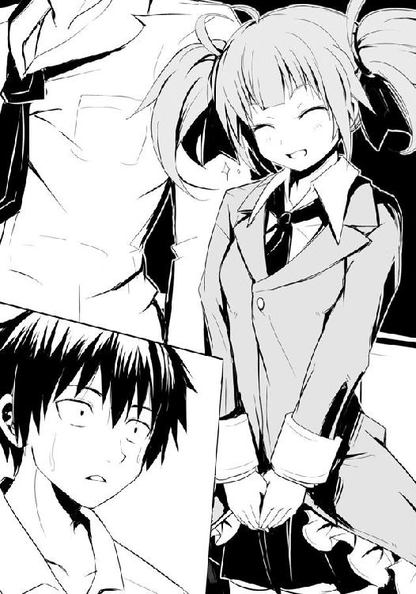
――時が、動き出した。一斉に鬨の声が上がったのだ。男子を中心にクラス中が絶叫するように歓喜の声を出す。窓や扉が震えるほどだった。生徒の中で平然としているのは、後ろの白梅と僕だけ......いや、白梅だけだった。僕は時が動き出した瞬間に――、
「......あっ」
クラスを見回していた自称鬼灯ランが、僕の顔を見て妙に低い声を漏らし......今の僕同様に目を点にして顔を強ばらせ、絶句した。
そう、クラス中の時が動き出した瞬間に、入れ変わるかのように僕と彼女の時が完全に止まった。まるでジョジョ第三部の最後のディオ戦みたいだった。
クラス中が騒ぎ立てる中、僕と彼女はお互いの顔を穴が空くほどに見つめ合う。
僕の目線の先の彼女はどう見ても、小学校・中学校と僕の、そして学年全ての男子のマドンナ的存在だった少女――広部さんだった。彼女はやはり、魔法少女なのだ。
●
放課後の剣道場は活気で溢れていた。休み明けは体が鈍っている者が多いが、今年は山原の締め上げのせいか、皆、動きは悪くない。猟犬群を構成する男たちも同様だ。心配だった今年受験を控えた三年生も問題ない。十分戦えるだろう。
二〇分間の休憩及び床拭きをやらせていると、山原がそれとなく腕を組んで窓の外を眺めていた壇堂の横に立つ。一緒に剣道場の窓の外を見た。
「お願いがあります。今宵、我らが駆ける場はジジ様の店にしていただきたい」
壇堂はチラリと横目で山原を見やる。相変わらず嫌な目をしている、と壇堂は思う。試合などで負けた時、彼はいつもこういう目をする。寒気を覚えるほどに鋭く、暗く、そして重い目。
ジジ様の店にしてくれ、ということはおそらく昨夜、あの店を縄張りとしている氷結の魔女にでも負けたのだろう。山原は昔から負けることを酷く嫌い、自分を負かした相手には必ず報復を行ってきている。そんな性格であるが故に山原は剣道の選手として全国的にも知られた存在になっていたし、主将として部の牽引力にもなっていた。しかし、狼としては失格だ。山原単独ではあの弱肉強食の戦いの野を駆けることはできないだろう。戦いとして、勝ち負けに拘り過ぎるのだ。弁当を奪取する、うまい夕餉を手に入れる、そのための場でありながら、山原はそこで狩りよりも闘争をしばしば選ぶ。それが弱さだった。特定の相手に勝とうとする、それ故に、負ける。敵は隣を駆ける狼たち全員であると同時に、己自身でもあるのだ。おそらく頭ではわかってはいても、体が個人的な戦いを選択してしまうのだろう。糧を得るのではなく、勝ちを得ようとしている。勝ちが純粋に弁当奪取に結びついていればいいのだが、微妙にズレているのだ。狼というよりは闘犬に近い性質だった。
ただ、猟犬群の頭目にしておくには最適な人材だ。個人的な感情を猟犬群という組織に嵌め込み、壇堂の指揮下に入らせることによって暴走を抑える。そうすると彼の負けを嫌う性格がプラスに働く。過去を見ても今の猟犬群は最高クラスの力を有しており、次の頭目として育てている二年、そして一年では山原ほどには猟犬群をうまく率いることはできないだろう。
「サバは青身魚であり、ＤＨＡ、ＥＰＡ等の健康に良しとされる不和脂肪酸を多く含んでおります。それは脂の一種であることから当然脂ののりが良いものに多く含まれており、千葉産の繊細な味わいのサバより、ジジ様の店が取り扱っているノルウェー産のサバの方がより多い。つまり、普段不摂生であるのなら――」
何故か山原はジジ様では有名なサバについて唐突に解説を始めた。そこまでしてあの店で戦いたい、ということだろう。実際、壇堂もまたあそこのサバの味噌煮弁当は好物としているところで、たまに無性に食べたくなる時がある。何より『ヒロちゃん』を中心とした偏った食生活を送ってきている彼にとってサバの健康作用は魅力的だった。
だが、あそこは近隣での最終半値印証時刻を有する店であり、店を梯子するということができない。自分はいい。自分は必ず弁当を獲るだろう。ＨＰ部の強敵たちがスーパーから姿を消し、あの《魔導士》が未だに国外に出ていったまま帰還していない......恐れるものは何もない。氷結の魔女がいるが、それとてダンドーが率いた猟犬群であれば負けはしない。だが、山原をはじめとした猟犬群が心配だった。自分を含めれば九人。果たしてそこまで弁当が残っているのか。残っていなければどれだけうまくやっても何人かは弁当が確実に喰えない。
腕を組んだまま、壇堂は横目でサバの素晴らしき味わいについて語っている山原を見る。口調は淡々としているが、目は相変わらずだった。奴の悪いクセが出ている。
わかった。壇堂は腕を組み、瞼を閉じて、一言そう告げた。言葉を切った山原が一礼して去っていく。あの男のその性格、嫌いではなかった。犬としては最適だ。それに三年の彼はそろそろ、部も猟犬群も引退の時期。少しは奴の好きにさせてやろう。壇堂は一人思った。
●
槍水仙は片手に鞄、片手に旅行雑誌を持って部室棟に向かっていた。放課後、いつもならもうすでに部室にいる時間だが、今日は修学旅行の班決めをし、その班員たちと自由行動の日、どこに行くかで盛り上がってしまい少し遅れていた。佐藤と白粉が変に自分を心配していないか、それが心配だった。遅れる、とメールの一つでも送れば良かったのだが、どうせすぐ終わるだろうと思っていたら日が暮れ始める始末だ。おまけに盛り上がるだけ盛り上がって結局何も決まらなかったのが槍水の苦笑を誘う。彼女と仲の良い友人が集まるといつもそうだった。
「ん、あれは......」
部室棟の前に小柄な少女の姿を槍水は見つけた。白粉だ。声をかけようとしたとき、ビクッと白粉は体を震わせ、いきなりふり返り、槍水を認めると、ほっとしたような顔をする。
他人の視線を敏感に読み取る彼女の能力が発動するのはスーパーでだけではないらしいことを、槍水は初めて気がついた。
「どうした白粉、居残りでもさせられていたのか？」
「あ、いえ。単に梅ちゃん......あ、えぁっと、生徒会の方にお邪魔していて、それで来るのが遅れちゃったんですけど......あ、そうそう。実はちょっとこの後ライトノベル研究会の方で今期の予定を立てる会議があるので......」
今日、明日はＨＰ同好会の方には顔を出せそうにない、ということだった。多分会議の後に食事にでも行く予定になっているのだろう。休み明けの部活動ではよくあることだ。早く終わったらその後に部室へ顔を出すというので、槍水は頷き、部室棟の二階で別れた。
五階。ＨＰ同好会以外に部屋を使用している部はないため、静かだ。そのせいもあってか、その階は少し薄汚れてしまって見える。ひび割れていた廊下の窓や切れかかっていた照明の類は白梅が生徒会長になった際に全て交換されたが、人が使わないでいると建物はどうしても古びて見えた。
今日は佐藤と五階廊下の掃除でもするか。そう思うものの、夏休み明けということで久しぶりに佐藤とオセロや将棋あたりもしたかった。昨日は三人でずっとカードゲームだったのだ。
まぁ何にせよ、佐藤の顔を見て決めよう。槍水はそう決め、旅行雑誌を鞄に詰め込むと５０２号室、ＨＰ同好会の扉を開け......そして、静かに閉めた。
扉のノブを握ったまま槍水は今し方目撃した室内の光景を思い出す。何かがおかしかった。気のせいか、派手な服を着た女に佐藤が円卓の上に押し倒されているような光景に見えた。
......多分、気のせいだろう。修学旅行のことで浮かれすぎているのだ。槍水は自分の中でそう結論づけた。軽く深呼吸をして、気持ちを入れ替えると再び扉を開けて中を見る。......佐藤が派手な女に円卓の上で押し倒されていた。
槍水はノブを握ったまま扉に貼られたナンバープレート及びＨＰ同好会の文字を確認する。間違いなく、ＨＰ同好会の部室だった。
◯
間違いなく、広部さんは魔法少女だった。
「昔のこと喋ったら、ぶち殺す」
僕の隣の席に座って勉強を受けていた広部さんは、床に落とした消しゴムを拾う瞬間、聞くだけで震えがくるようなドスの利いた声で、僕に殺人を仄めかした。しかも顔は朝のＨＲのままの二次元かと思うような理想的な笑顔のままである。
笑顔で殺人を仄めかし、かつ、言葉が『殺す』ではなく意味を強める接頭語の『打ち』を付けるという徹底具合......こんなヤクザめいた芸当は魔法が使えなければできないはずだ。
......だから、彼女は魔法少女で間違いなかった。ほら、姿もそれっぽいし。
あの、と僕が話しかけようとすると彼女は「あはっ☆ なんですか？」とかアニメ声で返してくる。きっとあれは僕の言葉を封じる呪文に違いなかった。
何かが起こった、いや、起こっている。それは間違いない。最後に彼女の顔を見た時から早半年、少し大人びたような、逆に幼くなったような......実質初恋の相手が、何かわけのわかんない姿なりで隣に座っている。混乱しているというか、何が何だか、わからなかった。
「話がある。放課後に、人気のない場所で」
英語の問題を黒板で解いて戻ってきた彼女は、席に座る瞬間、そう呟いた。初恋の女性から放課後に人気のない場所で話そうと呼ばれたのに、何故、僕の胸には嬉しさもときめきも湧いてこなかったのだろう。
しかし人気のない場所と言われたが、ベタな作品よろしく体育館の裏なんて行ったところで現実には部活動に勤しむ生徒がいることはほぼ確実だったし、屋上なんていう気の利いた場所は落下物及び自殺の防止等の理由から僕らが入学した時点ですでに閉鎖されていた。
現代日本、特によほどの田舎でもない限りは常に人目の中にあるといってよく、完全にプライベートな空間というのはもはやその人の心の中にしかないもので......まぁ、そんな売れない哲学書か気取ったアイドルがゴーストライターに書かせた自伝みたいなことはどうでもよくって、とにかく人気のない場所を考えてみたものの、校内において僕が思い至る場所は一つしかなかった。部室棟、最上階である。最上階の五階はＨＰ同好会しか使用していない。
僕はそれを鬼灯ランだと名乗っている広部さんに、授業終わりのチャイムが鳴ったタイミングで告げた。周りの人間には聞こえていないだろうが、唯一白梅だけが感づいたようだった。
「どういうご関係か知りませんが気をつけた方がいいですよ。彼女、かなりしたたかですよ」
と、帰りのＨＲ終わりの立ち去り際に助言してくれた。どういうこと？ と、問いたかったが、彼女は一瞬も立ち止まることなく鞄を手に教室をあとにしていった。
......んで、放課後しばらくＨＰ同好会の部室で一人でいると、広部さんがやってきたので招き入れたものの......入室と同時に僕の胸ぐらを掴むと、僕を円卓の上に叩きつけるようにして血走った目でガンをつけてきたのだった。これが久しぶりの再会に感動するあまり、いきなりの抱擁及びキスのコンビネーション技だったらどれだけ幸せだったことだろう。
「なんでアンタがこの学校にいんのよ!?」
僕はようやくその声を聞いて、彼女が広部さんであることを確信する。確かに顔つき等は広部さんだったものの、その格好や人前での言動が僕の知っている広部さんとはあまりにもかけ離れており、まさかとは思うものの、他人のそら似ということも心のどこかで否定できなかったのだ。
「いや、なんでと言われても......。あ、そういえば半年ぶり、元気だった？」
「見りゃわかるでしょ？ こちとら今日も元気一杯のアホ面晒してアイドル業やってるわよ。それよりなんであんたが......まず大丈夫だって言われてきたのに!! ......ん？ まず？」
「その場合の〝まず〟は〝多分、大体、おおよそ〟とかの意味かな？」
僕の制服が破れるのではないかと思うほど、広部さんは胸元を掴んだ手に力を入れてくる。
「そぉうか......単純に信じてしまった私が迂闊だったというわけかっ！ ......あのクソマネージャーめ！ ......はっ！ あやめは!? まさか、あやめもいるの!?」
「......さ、佐藤？」
不安げな、女性の声。僕と広部さんはその声の方向――部室の出入り口の方を見やる。扉の隙間から困惑顔の槍水先輩が......。
僕からバッと手を離すと、広部さんが先輩に向かっていく。
「あはっ☆ちょっとだけ待っていてくださいね♪」
彼女はそうかわいらしい声で言って一度扉を閉めると、鬼のような形相でふり返る。
「人が来ない場所じゃなかったの!?」
「この同好会の会長さんで、この場所に来る数少ない人の一人なわけで......。えっと、まぁここは人が来ない場所っていうか、まず人が来ない場所って感じ？」
先ほどの広部さんの発言に合わせ、大変上手いことを言えたと思った僕は勝ち誇ったように胸を張った。殴られた。思いっきり。グーで。
白梅の平手ほどじゃないものの......痛い。確か中学ぐらいの時から彼女は護身術だかを習っていたはずだけど......護身術の割には随分とアクティブな動きである。
「こうなったら仕方ないわ。その会長って、秘密は守れるタイプ？」
「まぁ、大丈夫だと思うけど」
広部さんは忌々しそうに顔を歪め、舌打ちすると腕を組んだ。槍水先輩が再び扉を少し開けて、いいか？ と尋ねてくるも、広部さんは特に何のリアクションもしない。多分いいということだろうと判断し、僕は先輩に頷いてみせた。
僕は広部さんに槍水先輩を紹介したが、あっそ、と、一蹴される。先輩があからさまにムッとしたので、場を取り繕うように続けて広部さんの紹介をした。
広部蘭。僕と同じ小・中学校の人で、マドンナ的存在の人。交換学生制度で今日からしばらく烏田高校に通うことになった等々。
「えっと、小学校の時にスカウトされて、今、女優だったっけ？」
「は？ 洋、アンタ、自分が好きな女のことも覚えてないの？ アイドルよ。芸名は鬼灯ラン。この前ソロでＣＤも出したし、最近はドラマにも出てるんだから、テレビで見たことぐらいあるでしょ？」
腕を組んだまま、窓によりかかり、先ほどの苛立ちをかすかに残した声で、広部さんは言った。残念だが、僕も先輩もほぼ毎日のように遅くまで部室にいるので、そういうのはほとんど見ていない。というか、普通に寮に戻っていても音楽番組もドラマもそもそも僕は見ない。
槍水先輩は窓際の席に腰掛けると、いつものように円卓に頬杖をつき、足を組む。
「......私はそういうのに疎くてな。とりあえず、失礼な奴だいうのはわかった」
ピシッと空気が張り、二人が睨み合うかのように視線を交わす。何故か、間にいる僕の全身から汗が噴き出した。
「それで、そんな奴がこの部室に何の用だ？」
あぁ、と広部さんはスイッチでも切り替えたかのように緊張を解くと、僕に向きなおる。
「重要なことを忘れるところだった。おそらくこの学校で私の過去を知っているのはアンタだけなわけ、わかる？ ......つまり、余計なことは一切、いや、私に関係すること一切誰にも漏らさないように。というか、話しかけないで。いい、今私は――」
まとめると、なんでも彼女がこの烏田にやってきた本当の理由は別にこの学校で何かを学ぼうというわけではなく、単に彼女がメインキャストで現在製作されている映画の撮影場所がこの学校の近所にあるからなのだという。
「あぁ、そうか、それで交換学生制度の対象が一年になったわけか」
僕が合点がいって手を叩いて言うと、広部さんは鼻を鳴らし、勝ち誇ったような顔をする。
「私立同士だからそこらへん融通が利くのよ。その内メイキング映像の一つってことでこの学校にもカメラが入ると思うし、理事長とかも学校の宣伝になるって思ったんじゃないの？」
そのためにあえて名前は芸名の方を使っており、制服も特別に作られたものなのだそうな。
また彼女曰く、アイドルとして売っている以上、無言のままに若さ及びレア感をアピールするのに現役高校生という肩書きは極めて有用であると同時に、それが建前だけでなくきちんと学校に通っているとなれば〝まじめ・努力家〟等の付加価値が生まれ、その効果は倍増するんだとか。だから出世作になる予定の映画の撮影とはいえ、学校を長期欠席するのはイメージ的によろしくない。故に今回の制度に目を付け、事務所とともにゴリ押ししたのだという。
強引かつ傲慢だな、と槍水先輩は呆れるように言った。広部さんが自虐的に、笑う。
「否定はしない。でも、私はこれから売れていく。そのためにはいろいろと努力しなきゃね」
「売れるのは確定なわけ？」
僕の言葉に、広部さんはまた勝ち誇ったような目をして笑う。
「ま、売れるっていうか、売るの。事務所はそういうふうに動いているわ。私と一緒にデビューした形のアイドル連中も、実は全部あたしを引き立てる捨て駒なわけ。まぁ、何かの間違いで芽が出たら拾うとは思うけど、本命は私ただ一人。あらかじめ間引いているんだけど、傍から見れば勝ち抜いたようなイメージを持ってもらえる。世の中、特に日本では顕著だけど、どれだけ良い物であってもプロモーションをしなければ売れないの。仮に多少質が悪くても大々的に宣伝していたりすると、まるでさも凄いものであるかのようにみんな手にしてくれるわ」
......うっ、耳を塞ぎたくなるぐらい生々しい。ゲーム業界でもこの種の話はよく聞く。ムービーシーンにバカみたいに金をかけ、ゲームに詳しくない人間にとってはそれが通常のゲーム画面であるかのように錯覚させる宣伝を行い、雑誌媒体に金をばらまき超大作であると連呼させ、大々的なプロモーションを散々行って......いざ蓋を開けてみればムービーシーンタップリというだけで平凡かそれ以下のゲーム。そんな悲劇は枚挙にいとまがない。外伝扱いでも有名シリーズの名前を掲げようものなら、その悲劇は倍増する。......だが、売れる。先にプレイした人の文句を聞いたとしても、欲しくなる。みんな買う。同時期に発売したセガや小中規模メーカーの超面白いソフトよりも、何倍も。内容を吟味することなく、ゲームではなくただ話題の商品を購入するということ自体が目的であるかのように、人は、買う。
「つまり、こうしている間にも大勢の人と、物凄い額のお金が動いているわけ。かけた何倍ものお金を儲けるためにね。だから......邪魔しちゃダメだからね♪」
広部さんは教室で見たあの笑顔と声で言った。可愛らしくはあったが、その急激な変身具合に、興奮よりも寒気がした。槍水先輩もどう対応していいのかわからず、困惑顔だ。
僕らの喰いつきが悪かったせいか、フン、と鼻を鳴らすと広部さんは仮面を脱ぎ捨てたように冷めた顔つきに戻る。
「それじゃ、このあと仕事だから行くわ。何度も言うけど、面倒、起こさないでね？」
それだけ言い残すと上着のフリルを揺らしながら、彼女は部室を出ていった。しばらく、僕と先輩は彼女が消えた扉を無言のまま見つめていた。
「佐藤。アイツ、好きな女がどうのと言っていたが、おまえ、あんなのが好きなのか」
「いや、あの......ここしばらくで大分変わってしまったようで......はい」
ただ、それでも時折見せる素の時の彼女は、そんなには変わっていない気がした。いつも冷めてて、どこか大人びていて、そのくせしてたまにふざける笑顔のかわいい娘。......そして、頑張り屋さん。それが、僕の知っている広部さんだった。
ただ、何か違和感がある。どん兵衛に入っている長ネギがなくなってしまったような、特別気にしなければ気にならない、その程度のものがないような......何だろう？
最終半値印証時刻が迫っていた。
二日連続でジジ様の店に、僕はいた。今回はアブラ神の店で負けての梯子ではなく、最初からジジ様の店にやってきていた。通常、名うての狼である槍水先輩と一緒だとほぼ確実に弁当を持っていかれてしまうため、僕と白粉はアブラ神の店で戦い、負けたら槍水先輩とともにジジ様の店で......という具合だったが、今日は白粉もいないため、逆にした。
店内外周を歩き続ける僕は胸元で右手を握りしめる。その指先はまだ、昨夜の弁当容器の感触を忘れてはいない。サバの味噌焼き弁当。あれが忘れられなかった。指先に触れておきながら結局獲れなかった。それはただ負けるよりもサバの味噌焼きへの欲求を倍増させている。今日は、今日こそは......そう思って僕は弁当コーナーに到達するんだけど......うん、まぁ、そんな気はしていたんだよね。当たり前のように、ない......っていう、ね。
今日残されし天国への階段、半額になるであろう現在割引シールが貼られている弁当は五つ。その中で狙いを僕はサバの塩焼き弁当に定めた。サバの味噌焼きではないが、せめてサバを食べたかった。何よりジジ様のサバは、うまい。
僕は歩みを止めることなく弁当コーナーから島棚の間へと場を移した。今のところ集っている狼は僕を含め七。比較的楽な勝負かもしれない。
切羽詰まった様子をしている連中......他店ですでに一戦を終えた負け犬も三匹いると僕は読んでいるけれど、そういうのはもう負けたくないという気持ちが焦りになって、自然と獲りやすい弁当を選ぶ傾向がある。最高の半額弁当を示す月桂冠のシールが貼られない限り、ジジ様の主力と言っていいサバ系弁当に手を出すことはないだろう。となれば実質的に僕の相手となるのは残り三名、そしてその中でも腕利きと思えるのが......この男だ。
「よう、ワン公。おまえもどこかで一発かまされてきたのか？」
顎髭だった。今日は相方の坊主がおらず、単独だ。......アレ？ おまえもかまされてきた、ってことは？ 訊いてみると彼は苦笑して、首元を見せる。そこにはくっきりと、見覚えのある凹凸の激しい靴の跡が残っていた。先輩のブーツの跡だ。彼は「魔女にな」と笑った。
●
月下を八つの影を率いて男が歩んでいた。剣道着姿の男は壇堂。そして彼の後ろに続くのは烏田高校の運動部に支給される名前入りの黒いジャージを装着した、寮で生活をする山原を中心とした剣道部員たち。ダンドーと猟犬群である。別に決まりというわけではなかったが、山原が頭目となってから壇堂が率いる時、この黒いジャージの上下を着るようになっていた。
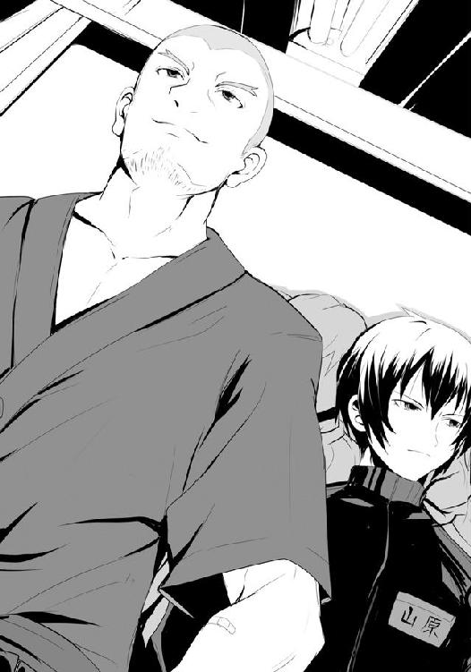
薄暗い道を歩んでいくに従い、煌々とした光が見えてくる。ただ、まだ光だけだ。間に家々が並び、その姿は見えてこない。
久しぶりの狩り、そして半額弁当だ。多少のブランクはあるが、その分半額弁当への想いは強く、十分戦うことができるだろう。問題なく狼たちを薙ぎ払えるはずだ。おそらくその多くが烏田高校の生徒だろうが、壇堂は手加減などする気はなかった。半値印証時刻のスーパーに教師も生徒もない。女も子どもも関係ないのだ。大学時代に狼となって以来、それだけは変わらない。容赦なく、全てを叩き、全てを得る。そのために猟犬群さえ組織したのだ。
足を進める壇堂は喉の渇きを意識した。これから向かうジジ様のスーパーは、かつては最強の枕詞を持っている《魔導士》が縄張りとしていた場であり、歴戦の猛者が在籍したＨＰ部のメンバーがよく集う場でもあった。ここばかりは勝敗は常に闇の中であり、半値印証時刻が遅く、猟犬群が他店を梯子できないこともあって壇堂が来店することは極めて希だ。
そのせいだろうか、体がこんなにも緊張しているのは。数少ないダンドーと猟犬群を打ち倒した者たちが集っていた場。体が覚えてしまっているのだ。
壇堂は己に落ち着け、と声をかける。今やＨＰ部のメンバーのほとんどは一線を退いている。実質残っているのは氷結の魔女こと槍水仙ただ一人。あの雌の狼一匹ならば勝てる。猟犬群がどうなるかは運次第だが、間違いなく自分だけは勝てる。案ずるな、壇堂......いや、ダンドー。猟犬群を率いている今の己に、恐れるものは何もないのだ。
スーパーが見えてくる。美しい光、漏れ聞こえてくる嫌みのない店内ＢＧＭ、どこか家庭を感じさせる温かな雰囲気......彼は店の前で立ち止まると両手を広げてそれらを全身に浴びる。日常の疲れや、仕事の悩みが洗い流されていく。この時、教師である壇堂健治は完全に姿を消し、彼は猟犬群を率いる狩猟団の首魁、ダンドーとなる。
「行くぞ犬ども。狩りの時間だ」
ダンドーの言葉に猟犬群は無言のまま頷いた。ダンドーは肩を怒らせ、歩きだす。猟犬が足音静かにそれに続く。
地獄にして極楽浄土への扉である自動ドアが開く。冷たく、洗練された空気が溢れ出る。その中に交じる狼たちの声なき咆哮、押さえ込んだ殺気のピリピリとした緊張感。
突き刺さるように鋭く、しかし同時に怯えを含んだ視線がダンドーたちを包み込む。
――ダンドーと猟犬群、出猟。
◯
何が起こっているのかわからなかった。激戦などという生易しいものではない。
「ワン公、来るぞ！ ダンドーだ、ダンドーだけが......この野郎!!」
顎髭が二匹の猟犬群に翻弄されつつも、叫んでいる。だが、僕は迫り来る影に対処できそうにはなかった。僕もまた猟犬群に翻弄されていた。スーパー店内、弁当コーナー前、最前線......この場に立ち続けることが精一杯なのだ。
黒いジャージに身を包んだ猟犬群と、剣道着のダンドー。彼らはジジ様が半額シールを貼っている真っ最中という凄いタイミングで入店してきた。それに慌てたのは狼たちだ。心構えや共闘の契りを結ぶ間もないうちにジジ様はスタッフルームに戻り......争奪戦が始まった。
開始速攻、顎髭をはじめ、多くの狼たちが何かから逃げるように攻撃よりも脚力に全てをかけて弁当を目指し始めた理由が今は痛いほどわかる。
争奪戦開始と同時にダンドーと猟犬群は一匹の獣であるかのようにして弁当コーナーに直進した。先頭はダンドー。これに狼が一匹立ちはだかるも......ダメだ。先頭を行っていたダンドーを二匹の猟犬が追い抜き、まずその狼に攻撃を同時に仕掛け、体勢を崩す。そこにダンドーが放つ強烈な一撃で、狼は完全に戦場の塵となった。
ダンドーは突き進んだ。立ち塞がるものがあれば、何か指示するより先に猟犬群が前に出てこれを翻弄、そしてダンドーが叩くという手法だ。
開始からわずか数秒、気がつけば残る狼は僕と顎髭だけという信じられない状況だった。その僕らとてすでに猟犬群全員に囲まれていた。一匹ずつなら対処はできる、だが、数が多い。そして何より向こうにこちらを倒そうとする意志がないため深く踏み込んでこない。あくまでもこちらを翻弄し、邪魔をする、ただそれだけなのだ。こちらが攻撃を仕掛けるとひらりとかわされ、すぐさま他の猟犬が浅く喰らいついてくる。
僕は混乱していた。どうしていいのかが、わからない。今までこんな連中と僕は戦ったことがなかった。完全なる狩猟形式......そして僕は今、狩られる側にいる......。
「......高くつくと、言ったろう？」
後ろから耳元で、山原の声がした。嘲るような声ではなく、酷く冷たい声。背筋が震える。
僕は雄叫びを上げて山原に殴りかかろうとするも、かわされる。代わりに他の狼からの蹴りが腹部に入るが、たいしたダメージはない。そこにダンドーが来る。彼は笑っていた。それは子どもが積木の城を崩す瞬間のような、悦楽としていて、どこか禍々しい笑み。
僕は拳を振り上げる。その瞬間に猟犬の一匹が腕に絡みついてくる。構わず、放つ。
しかしダンドーはいとも簡単に僕の拳を払いのけ、逆に拳を放ってくる。アッパー。かわせる、そう思った。だが、両足が急激に重くなる。猟犬群がまとわりついてきたのだ。
激烈なる一撃。普通ならぶっ飛ぶほどの攻撃。だが、猟犬群がそれを許さなかった。僕はアッパーの全ての威力を受けざるを得ず、喰らった直後に世界が回り、膝から力が抜けた。
僕の隣を抜け、最後の狼、顎髭に向かうダンドーはすれ違いざまに僕の脇腹に蹴りを叩き込んでくる。防がなくては、という意志こそあれ、僕の体は動かなかった。
入る。宙を舞う。視界に映る床、美しい赤と白のツートンカラー、精肉コーナー、ジンギスカン特売の値札、眩しい照明、床......。僕はきりもみしながら、ぶっ飛んだ。
落ちる。硬い床が僕の全身を叩く。止まる。冷たい床に頬をつけたまま、僕は必死に意識を保とうとした。急げば、まだ、間に合うはずだ。顎髭ならきっと粘る。今すぐ立ち上がれば、多分間に合う。立て、立て、立て......立ち上がれ!!
僕はかろうじて力の入る両手を床についた。
「やめておけよ。もう、終わった」
目の前に現れる、靴。声は、山原だった。
「弁当はもうない。狼は、全て伏した」
バカな。僕はそう言いたかった。顎髭が、まだいるはずだ。まさか彼でさえ一瞬にしてやられたというのか。
「佐藤、俺はかつておまえに言ったはずだ。飯を喰うということは遊びじゃない。......どうだ？ これが俺たちだ。これが勝つためのシステム、ダンドーと猟犬群、その真の実力だ。お遊びではない、本気の狩猟だ。
......君は今でも、つまらないだの楽しいだの、誇りが何だと、気取っていられるのか？ 床に顔を押しつけたまま、言ってみてくれないか。あの時みたいに」
山原は少しずつ声に笑いを含ませていった。最後は完全に嘲るような口調。僕は床につけた手に力を入れ、立ち上がろうとしたが......できなかった。
「今日は手応えがあまりになさ過ぎたようだ。我が主は明日も狩る気でいるぞ。今夜は恐怖と空腹に震えて眠るといい」
伏した狼たちの呻きとジンギスカンの歌をＢＧＭに、猟犬はレジへの道を歩みだす。
月明かりが差し込む部室、円卓の窓際席で僕と先輩はそれぞれの夕餉を摂っていた。僕の今夜のメニューは総菜にあった特大お稲荷さん三個入りパックとどん兵衛のきつねうどんという鉄板の組み合わせだ。半額弁当争奪戦に負けこそしたが、夕餉自体は悪くない。
「......来たか。思っていたより早いな」
目を鋭くした槍水先輩はズズズーと焼きそばを手繰りながら、言った。今日の彼女はアブラ神の店で手に入れてきた焼きそば、ナポリタン、オムライスという、子どもの好きなものを集めてみたら炭水化物ばかりになってしまいました、といった様子の弁当である。よく見れば小さな唐揚げやウィンナーが入っているのに気がつくが、それでもやはり炭水化物ばかりという印象は拭えない。しかもそのどれもが特盛りであり、おまけのデザートのつもりなのか、小さなカップに入った一口サイズのプリンまであった。......多分、これ、一〇〇〇キロカロリーをオーバーしてると思う。
ちなみに弁当名は『これぞ大人のお子様ランチ！ たっぷり食べて大きくなろう！ 大人様ランチ弁当!!』である。もうあの店が弁当名に何個感嘆符をつけても特段おかしいとは思えなくなってきているが、さすがに〝大人のお子様ランチ〟というところには多少の矛盾を感じずにはいられず、同時に〝大きくなろう〟というのはつまるところ、横に、ということか？ と、それを見る者に大人らしい深読みをさせてしまう意味深な弁当名である。
明日も、か。先輩はオムライスから日の丸の旗を抜きつつ、独り言のように呟いた。
「多分、わざわざ言ってきたということは、僕がよく行くアブラ神かジジ様の店だとは思うんです。つまり......その」
先輩の縄張りである。円卓の中心を見つめるような彼女の目は鋭さを増した。かすかに肌がピリピリするほどに闘志を発する。いつものように円卓に肘をつき、曲げた手首で口元を隠すようにしているのだが......いつもならその手にあるのは割り箸、しかし今日は日の丸国旗であり、傍から見ているとビミョーに緊張感が薄いのが残念である。
「困ったな。実は明日、修学旅行の班員たちとの打ち合わせで、不参加のつもりだったんだ。だが、そう宣言されてしまっては......逃げるわけにもいかないか」
先輩は何かを考えるように円卓の中心部をじっと見つめていた。出来ることならここで「先輩の代わりに、僕がやります」とでも言えればカッコいいのだけれど、到底今の僕では奴らを止めることは叶わない。数十分前に証明されたばかりだ。
何となく「すみません」と言ってしまいそうになって、僕は慌ててお稲荷さんを口にする。
「先輩、何か、奴らを倒せるコツみたいなものって......あったりします？」
「強いて言えばダンドーを倒せるかどうかだ。今回戦ってわかったと思うが、ダンドーが首魁にして主力。猟犬群の全ては奴を戦いやすくさせるためのフェイクと言っていい」
つまり八匹の猟犬の邪魔を払い退け、ダンドーを叩く。しかしそれがどれほど困難なことであるのか、一戦を経験した今の僕には痛いほどわかった。
「ダンドーを倒せば猟犬群はバラバラになる。いや、今ならきっと山原がまとめ直すかもしれないが、どちらにせよ、そこまで行ければ勝ちだ。
......よし、何とかアブラ神の店にも行けるよう、友人たちに話してみよう」
「大丈夫なんですか？」
「なに、心配するな。どうせ自由行動の日にどこへ行くのか、旅行パンフレットをみんなで見て回すだけだ。......時間次第では直接店に向かう。どちらにせよ、佐藤と白粉には連絡を入れよう。それでもし連中がアブラ神の店にいなければ、私はジジ様の時間まで待つ」
旗を置いた先輩は、再び割り箸を持ち、豚バラ肉とキャベツ、もやしがたっぷりと入った焼きそばを掲げる。それは不思議と輝いて見えた。......油分が多いのだろう。
「でも、それでも......その、ダンドーと猟犬群には勝てないんじゃ？」
その瞬間......槍水仙ではなく戦場での彼女、氷結の魔女として僕を見つめ、言った。
「あそこは私の縄張りだ。そこで大きな顔などさせるものか。......私を誰だと思っている」
あれほど苛烈な戦い方をするダンドーと猟犬群が相手だというのに、彼女は真剣な顔で言い切った。その月明かりに浮かび上がる黒瞳には自信......いや、覚悟のようなものが宿っていた。真っ正面からその瞳と相対すれば、たとえどれほどの傷を負おうとも、その牙はダンドーの喉笛に喰らいつき、その手は半額弁当を掴む......そんな未来の彼女の姿が容易に想像できる。
しかし、どうやって勝つのか？ という一番重要な質問を発することができない。まるでそれはとてもバカな質問に思えてならないのだ。当たり前のことを訊いてどうするんだ、と、そんなふうに思えてしまう。――そう、それだ、それこそが氷結の魔女だ。確固たる意志と牢固なる実力を有した勝利を手にするべき者。彼女にはそれをはっきりと感じさせる何かがある。
数秒、僕は呼吸を忘れた。その黒水晶のように深く色づいているのに、どこまでも透き通っているような彼女の瞳に身も心も吸い寄せられたかのようだった。
月明かりのせいか、どこか氷細工のように美しかった彼女の顔。それが不意に柔和に笑う。
「そんなに心配してくれるな、佐藤。大丈夫だ。あそこは闘技場じゃない、あくまで争奪戦の場。私以外にも多くの狼が集うはずで、猟犬群もそちらに相当数が割かれるはずだ」
「あ、いえ、先輩。心配していたからというよりは、その見――」
見とれていた。そう言おうとするも、それは顔から火が出るほどの恥ずかしいセリフな気がして、言葉が喉で詰まった。ん？ と、先輩は微笑みを浮かべ首を傾げる。そんな先輩の瞳を見ていられなくなって僕は円卓の上、彼女の弁当に視線を逃がした。
先輩は苦笑し、パスタをフォークで巻くように、焼きそばをクルリと割り箸に巻き付けると僕の顔の前に持ってきてくれる。
「なんだ佐藤、味見したいのならそう言え。目で訴えてくるな。こっちが心苦しくなるだろう？ ほら。なかなかヘビーだが、旨いぞ」
こういう少し間が抜けた先輩の反応が今は凄くありがたい。僕は少し俯き加減に食べさせてもらう。吸い込まれるように焼きそばが僕の口へ......やはり白粉とは違う。もはやあの変態と同列に考えること自体が失礼だ。別格なのだ。女性として、そして狼としても。不思議な安心感というか、彼女と一緒にいると間違いはない、大丈夫。そんな気にさせる。......決して白粉といる時のような身の危険を覚えることなんてない。
そう、そうだ。そうじゃないか。だからきっと、今度の猟犬群戦も大丈夫、そう思える。頭では勝てないんじゃないか、と考えても、心では先輩は勝つと思える、信じられる。僕が知っているだけとはいえ、先輩が敗北したのは一度、彼女らにだけ。それもあの時は体調を崩していたのだ。だから......ん？ 待てよ、そういえば......あの時、確か携帯のアドレスを入れられたような――あ、うまい。
「いいですね、コレ。胃にドンッときます」
口の中で細く少し固めの麺が躍り、僕の思考を奪い去った。ソースは辛め、しかし麺に絡まる豚の脂が特有の甘みを生んでいる。揚げニンニク、いやこれは焦がしニンニクかな？ とにかくこのニンニクの香ばしさが脂と良い具合に混じり合って、ヘビーはヘビーだけれど、ベタベタといつまでも口の中に残るくどい感じを消していた。うまい！ と、一言でスパッと言える切れの良さ。おいしい、ではなくあくまで力強く、うまい！ だ。
ただ僕は気づいてしまった。この先輩の弁当......絶対一五〇〇キロカロリーはあるよ......。
「いいだろう？ 今日は一目見た時からコレにしようと決めていたんだ」
先輩はそう言って微笑むと箸をナポリタンに向け、それを大量に摘み上げる。優しさや暖かみを感じるナポリタンの赤色に、そこに付随するピーマンの緑が月光を鮮やかに照り返す。先輩はそれをちょっと前の淑やかな唇とは思えないほど大きく開け、大胆に食べる。その顔は当然笑顔だ。子どものように食べるということを最高に楽しんでいるみたいに、幸せそうに。
「どうです？」
「基本的に弁当に付け合わされているナポリタンと一緒だな。少しネットリしているが、その分甘くて濃い味付けが柔らかめの麺と一体化しているような......アレだ。普通は一口分程度しかないが、こうして量が入っていると思いっきりいけるのがいい。なんだか贅沢な気分だ」
そう言って先輩は笑い、僕も笑った。
唇に少しばかりのケチャップをつけて無邪気に笑う彼女を見ていて、僕は覚悟を決める。もしダンドーと猟犬群がジジ様の店に現れるのなら、僕もまたその時間まで待とう。たとえ未だ知らぬかつてのＨＰ部の凄腕ほどには戦えなくとも、猟犬ぐらいは引きつけられるはずだ。
きっと僕は負けるだろう。でも、それで、先輩の勝ちに貢献できるのなら惜しくない負けだ。今さらながら夏休み中に出会った狼、牧さんの気持ちがわかった気がする。
あの時の彼女も、きっとこんな気持ちだったのだろう。
僕も彼女のように可愛げがあればいいんだけれど、どうだろう？
３
問題は猟犬群を僕が何匹相手にできるかだった。せいぜい一匹二匹だが、せめて三、四匹ぐらい引きつけたいところではある。他の狼もいるだろうから、それぐらい引きつけられれば槍水先輩はだいぶ戦いやすくなるはずだ。だが、今のままではおそらくダメだろう。秘策が必要だった。そのために、僕は今、かつての仇敵の前にて身構えていた。
「やはり、そして、ついに来おったか、我が怨敵よ！ この刻をどれだけ待ちわびたかっ!!」
......いやー、なんつぅか、凄いよ？ 僕らの周りにだけ『ゴゴゴゴゴゴ......』とか文字が見えそうなぐらい空気が重いの。そりゃ校門の前なのに下校途中の生徒たちが怯えて誰も近寄ってこないわ。みんな遠巻きに見ていたり、わざわざ遠くの他の出入り口から下校する騒ぎだ。
僕の目の前には初期の『ドラゴンボール』で、亀仙人が今まさにかめはめ波を放たんとしているかのように、マッチョでハゲなオッちゃんが大股を開き、腰を落として両手を拳に固め、完璧なまでの戦闘の構えを取っていた。そう、彼こそかつて僕を恐怖のどん底に叩き落とした呪いの館の主にして丸富大学付属高校の番人、ハゲの警備員のオッちゃんである！ 捲り上げられた袖から伸びる鋼鉄の筋肉を纏った両の腕、はち切れんばかりに張りに張ったスラックス......パッと見ただけで彼がどれほどマッチョなボディを有しているのかを感じさせる。今の彼なら僕ら佐藤一族が夢見たかめはめ波を放つことも本当に可能かもしれない。
白粉がいればきっと活路は見いだせると思うが......こういう時に限ってアイツはいない。今日は昨日に引き続いてラノ研の会議だ。
くっ！ まずい、このままではオッちゃんの放つ威圧感だけで震えてくる。......しかし、僕とて以前までの僕じゃない。数々の強敵たちと出会い、戦ってきたのだ。
身構えたオッちゃんの放つ威圧感に対抗するため、こちらも戦闘態勢を整える。そっちが亀仙人ならこっちは......ジョジョ立ち（四巻カバー絵バージョン）だ!!
★ジョジョ立ち――『ジョジョの奇妙な冒険』において、コミックスのカバー絵などで主人公たちが、人間の肉体美を極限にまで高めて表現したポージングの数々である。ある意味作品のテーマである人間賛美というものを一枚の絵で表現していると言える。詳しくは書店へ急げ。
僕のジョジョ立ちの美しさにオッちゃんもさすがに身構えたまま動けないようだ。それはそうだろう。幼い頃からジョジョ立ちの美しさに魅せられた僕と親父は鏡の前で血の滲むような訓練を日々行ってきたのだ、その再現度は半端ではない。親父と二人して足や背中を攣らせて床をのたうち回ったことも一度や二度ではない。練度が違うのだ、練度が！
不敵に笑い向かい合ったまま五分ぐらい気を放ち合う昔の『ドラゴンボールＺ』のように、僕とオッちゃんは互いに相手を睨みながら威圧感を放ち続ける。いったいどのくらいの時間が経っただろうか。そろそろ声優さんによる『果たして、悟空は......』という締めのセリフが入る頃合かな、とか考えていた時......妙にかわいらしい、間延びした声が聞こえてくる。
「あれぇ、洋くんだぁ〜」
ジョジョ立ちのまま僕は横目でその声の方を見やる。そこには大きくフワッとした猫耳帽子にマフラー、生地が厚めのニーソという相変わらず季節感のない小柄な少女......井ノ上あせびちゃんがいた。彼女は右目が隠れるしっとりとした黒髪と制服のスカートを揺らし、丸顔と相まって幼さを感じさせる大きな瞳を笑みで細めてトテトテと僕の方へ走り寄ってくる。
「待つんや！ その極悪非道の犯罪者に近づいたらアカン!!」
あせびちゃんが、へぇ？ という顔で立ち止まる。オッちゃんを見る。
「え〜、洋くんはあっちの友達だから、悪い人じゃないよ〜？」
「く!? お、おのれあやめちゃんだけやなく、我が校の良心、あせびちゃんにまでその魔の手を広げおったか!? 許せん、もう生かしておけん!!」
前回オッちゃんにとっ捕まった時にも思ったんだけど、このオッちゃん、何でただの警備員なのに生徒の下の名前までしっかり頭に入っているんだろう？ しかもあせびちゃんを我が校の良心とか言っている時点で、名前以上のことも知っていそうな気がする......。
「あれ？ ホントに佐藤じゃん。何やってんの？ 日課？」
他校の門の前でジョジョ立ちする日課なんぞ持っててたまるか。声の主を睨みれば鞄を手にした著莪が歩いてきていた。どうやらあせびちゃんと下校しようとしていたようだ。
「気をつけるんや！ かつてアイツはあやめちゃんの従弟やと嘘言うて我が校に侵入しようとした性犯罪者や！ 今回も生徒会長にアポがあるとかわかりやすい嘘ついて敷地内に入ろうとしとるんや！ ......あの時はうまく逃げられてしもうたが、今回はその息の根を完全に止めたるさかい、それまで下がっとるんや!!」
ついに出た殺人宣言！ もはやお互いに手加減する必要はない、持てる力の全てを懸けて雌雄を決するしかないのだ！
「あ〜、また随分メンドクサイことになってるなぁ......。オッちゃん、コレ、本当にアタシの従弟なんだよ。名字違うし、顔も似てないけど」
バ、バカな......とオッちゃんは驚愕し、急に、そしてあっさりと風船が萎むようにそのマッチョなボディから覇気が抜けていき、膝をつく。
僕もまたジョジョ立ちをやめる。戦いの緊張が解かれたのを理解したのか、下校したくてもできなかった生徒たちが校門を抜けていった。
「佐藤、どしたの？ 今日遊ぶ約束してたっけ？」
「あぁいや、オッちゃん言ってたけど、ここの生徒会長に用があってさ。昨日連絡して了解取ってあるんで、今日はここを抜けられるかと思ったんだけど......まぁ、お察しの通り」
用って？ と問われるも、僕は曖昧に誤魔化した。え〜、じゃぁ遊べないの〜？ と、今すぐにでも抱きしめてあげたくなるぐらいションボリとしてあせびちゃんが言ってくれる。気のせいか、猫耳帽子の大きな耳までシュンと元気なく垂れていた。
「あせび、どのみちこのあとアタシらも用事あるんだし、無理だって」
苦笑する著莪が言うには二人はこのあと、一度帰宅して着替えてから、二人が所属するファミ部にて今月末にある文化祭について会議をするんだそうだ。
「あ、もうそういう時期なんだ。ファミ部って何かやんの？」
あ、それはね〜♪ と、気を持ち直したあせびちゃんが教えてくれる。昔からファミ部は文化祭期間は学校内ではなく、病院や養護施設をゲーム機とソフトを持って回るのだそうだ。普段、大勢でゲームをできない人たちにもその楽しさを伝えようという、ファミ部伝統の行事なのだという。
なるほどそれはいいな、と僕は思う。実際、ソフトにもよるけれど、一人でやっても何かビミョーとしか思えないゲームが複数人でやると急に神懸かったソフトになったりするし、何より人間同士でしか味わえない楽しさというものがある。それはどれだけ腕のいいプログラマーが巧妙にＡＩを組もうが再現不可能な楽しさなのだ。
「それでね、今日の会議はどこにどんなゲーム機とソフトを持っていくかを決めるんだよ〜」
へ〜、そうなんだ。そう言った直後、あせびちゃんの笑顔を見ていて凄く嫌な予感が脳裏を過ったので、慌てて著莪に耳打ちする。あせびちゃんが不思議そうな顔で首を傾げた。
「おい、著莪。あせびちゃんをそういう所に連れていって大丈夫なのか？ その、なんだ。......体が弱っていたりする人だったら強制的に天国への扉を押し開くことになるんじゃ」
「まぁ、元々あせびって病院を遊び場にして育ってきたみたいだし、大丈夫なんじゃない？ ......最悪、アタシが外に連れ出すよ。アイツって腕が良すぎるから一般人じゃ相手にならないかもしれないしね。あ、それより、会長に用があるんでしょ？ いつぐらいに終わる？」
「うーん、そんなにはかからないと思うけど、ちょっとわかんないな」
「そっか。んじゃ、終わって暇だったら部室においで。部員の連中も喜ぶから」
ＯＫ、と言って僕は著莪とあせびちゃんに手を振って別れた。しばらく二人の後ろ姿を見ていると、あせびちゃんがふり返り、また手を振ってくれる。僕も振り返す。そしてまた背を向け、また......。僕は笑いながら二人が見えなくなるまで手を振り返していた。
「......さて、どうやら僕らの勝負にも決着がついたようですし、通っても大丈夫ですよね」
地面に手をつけていたオッちゃんに近づき、僕は勝ち誇って言った。彼は何やら、
「嘘や、嘘や......これは幻や......いや、もしかしたらアイツが二人を洗脳して......ということは助けることが出来るのはもはやオレしか......そうや、単一電池を......やってしまえば後からどうにでも......そう、オレは選ばれし者......つまりは勇者......」
とか、何やら不安になることを口走ったと思ったら、急に顔を上げる。にへらぁ、と、時代劇とかでやたらに腰の低い悪徳商人のような、これでもかと言わんばかりの笑顔だった。
「そ、そやな。せやけど、一応確認を取るさかい、そこの詰め所まで一緒に頼むわぁ」
そう言ってオッちゃんが指さすのは......かつて僕が捕らえられてバッテリーチャージされかかった呪いの館である。しかも、驚いたことに前回僕が突き破ったはずの館の窓には頑丈そうな鉄格子が新たに取り付けられており、何か、そこだけちょっと要塞化していた。
「......さ、行こか......天国へ」
オッちゃんの手がガシッと僕の肩を掴む。全身から冷や汗が噴き出す。その時の僕には間違いなくゴゴゴゴ......の文字が見えた気がした。
校舎二階にあるその部屋はデスクが七個、中央に固めて設置されており、それぞれにデスクトップＰＣが載っているため、そこだけ見るとどこかの会社のオフィスのようだった。ただ文化祭が近いせいなのか、部屋の至るところに書類が山積みとなっていたり、壁には生徒から募集した文化祭のポスター候補だというものが数点貼られていたりと賑やかな印象で、そこが高校の生徒会室であることを意識させた。
しかし部屋の賑やかさに反比例するように人はいない。いるのはキーボードを叩く丸富の制服にニーソ、軽くカールをかけたセミロングの髪の女性と僕だけだった。
「......佐藤さん、確かにこちらがお迎えに上がらなかったせいでもありますけど、次からはもう少し普通にお願いできないかしら？」
丸富高校生徒会長にして、双頭の犬、《オルトロス》の一人、沢桔梗が言った。作業中だったらしく、モニターを見つつ微笑んで言ってくれたものの、明らかにそれが引きつっていた。
僕は彼女の隣にあったオフィスチェアーに座りつつ、口を開く。
「いや、僕はフツーに入ろうとしたんだけど......うん。番人がね、手段を選ばず僕の行く手を塞ごうとしていて......。でも、助かったよ。もうダメかと思ったもの」
あの警備員のオッちゃんに肩を掴まれた直後、僕は強引に詰め所に押し込まれそうになっていたんだけど、これに僕は全力で抵抗――体をドアに押しつけ、開けさせなかったのだ。万が一中に入れられようものなら、かつて彼がやりそこねたバッテリーチャージをはじめとしたありとあらゆる拷問が僕を待ち受けていることは火を見るよりも明らかだった。
どんなことがあっても中には入らぬ！ このヘヴンズドアを開けてなるものかっ！ と、僕のその鉄の意志だけを聞くと、冥界と人間界を股に掛けた壮大な神々の戦いみたいで最高に格好良いのだけれど、現実には僕の肛門括約筋に単一電池をねじ込まれるかどうかという極めてハードかつ酷い話でしかなかった。もしあの扉が引き戸じゃなくて押し戸だったら今頃どうなっていたか、怖くて考えたくはない。
そんな時、どうも肛門......じゃなくて校門の前でジョジョ立ちしている他校生がいると生徒会に連絡が入ったらしく、それでピンときた沢桔梗が慌てて助けに来てくれたというわけである。何故ピンときたのかはわからないけれど......。
梗は「......さて、と」と呟くと、ＰＣに向けていた体を僕の方へと向けてくれる。真剣な表情を浮かべており、一匹の狼として相手をしてくれるようだ。
「集団戦とカゴの扱いについて話を聞きたい、ということでしたわね？」
僕は無言で頷く。そう、僕が昨夜思いついたこと、それがカゴを巧みに使い、かつて十数人を同時に相手にしてみせたその手腕を持つ彼女ら、オルトロスに助言をもらうことだった。彼女ら程の技があれば、ダンドーと猟犬群とて相手にできるかもしれない。そう思ったのだ。
かつてオルトロスが僕らの町へやってきてスーパーを荒らし回っていた時に、梗から連絡先をもらっていたのが幸いした。
その時ガチャリと扉が開き、失礼します、との声。もう一人のオルトロス、梗の妹の沢桔鏡だった。双子故に姿なりはそっくりだが、髪型が妹の方は基本ショートでもみ上げの部分だけ伸ばしていて、顔も作りこそ一緒だが、姉の方がその表情一つ取っても柔軟さが感じられる。逆に妹の方はキャリアウーマンというか、あまり感情を表に出していない。しかし、だからといって無愛想だと感じさせないのが不思議だった。
彼女は僕と梗を挟むようにオフィスチェアーに座ると、手にしていたフォルダーからプリントを数枚取り出した。
「佐藤さん、お久しぶりです。......姉さん、今、ちょっといいですか？」
真剣だった梗の表情がため息で崩れる。
「鏡、何ですの？ 佐藤さんに失礼ですわよ。急ぎ？」
「すみません。文化祭実行委員から早くしてくれと言われましたので。ほら、以前アンケート用紙をもらったのに、二人とも雨に濡らしてしまってダメにしたやつですよ」
「あぁ。佐藤さんの前で、恥ずかしいですわ。......実は霧雨程度だから大丈夫だと思って傘を持たなかったのですけれど、スーパーから出る時には大雨になっていて、それで」
「......良かった。今も、スーパーに行っているんだ」
数枚のプリントを受けとった梗、そして鏡もまた、僕を見てくる。僕もまた見つめ返していると、三人でちょっと笑った。
おかげさまで、と可愛らしく笑って梗は言う。
「頻繁に、というほどではないんですけれど、かつての女帝のスーパーを中心に一週間に一、二度、暴れさせていただいておりますわ」
「あ、マっちゃんの店か。確か二階堂もそこをメインにしていなかったっけ」
梗が先ほどとは違う勝ち誇ったようなニヤニヤとした顔をする。胸を張り、声に自信が交じり、早口になる。まるで聞いてほしかった話題にようやく至ったというかのようだった。
「えぇ、えぇ、そうなんですの、いつもいらっしゃいますわ！ 多分、二階堂さんはあそこを自分の縄張りにしたがっているのでしょうけれど、正直まだまだですわね！ もちろん日々強くなっていらっしゃいますけれど、わたくしたちにしたら童同然！ スーパーで会うたび、その夜は二階堂さんを鏡と二人がかりで手籠めにしてさしあげてますのよ！」
「......え？」
一瞬、へーそうなんだー、と笑って流そうとしたものの言葉が言葉だけに、思わず返す言葉に詰まった。まさか、そんな夢のような１ＯＮ２がっ!? 何ということだ、マっちゃんの店では週に一、二度、天国の扉が開かれるというのかっ!? 二階堂、何故僕を呼ばない!?
急に抑揚のない顔に戻った鏡はデスクに向かって、カリカリと冷静にペンを走らせ始める。
「姉さん、手籠めではなく、手玉です。意味が大分違いますよ」
「え？ 似たようなものじゃなくって？」
鏡は、はぁ、と深くため息を吐くとポケットから電子辞書を取り出し、それを姉に渡した。「えーっと、て、ご、め、と......」と素直に検索を始めた途端、梗の目がこれでもかっ、と言わんばかりに見開かれる。そして、愕然とした顔で電子辞書の表示部を穴が空くほど見つめたまま、フリーズした。
「まぁ、手籠めの中にも確かに似たような意味もありますから、あながち間違いではないと思いますが、表現がいささか過激です」
その瞬間、梗は電子辞書から手を離すと両手で妹の肩を掴み、左右に振る。鏡の首がガクガクと振られるに従い、激しく揺れた。
「またやってしまいましたわ！ 久々に佐藤さんに会えたのだからお上品で優雅なトークをしようといたしましたのにいきなりぶちかましてしまいましたわ!!」
「姉さん、単なる言い間違いです。大丈夫です」
「全然大丈夫じゃありませんわ！ もう佐藤さんはきっとわたくしたちを淫猥な女としてしか見てくださいませんわ!! ほら、ご覧なさいあの佐藤さんの軽蔑するような目を！ わたくしたちを夜な夜な肉欲に溺れる淫靡な雌豚だと思っているに違いないですわ!!」
「姉さん、前から不思議に思っていたんですけど、普通の語彙は少ないくせに卑猥な言葉に妙に詳しいのは何故ですか？ というか、当然のように私を交ぜないでください。迷惑です」
「あぁあ！ 鏡まで私を見捨てようというのですわね！ ひどい、あまりにひどいですわ！」
梗はそう叫んでまた一段と激しく妹の肩を揺すった。揺らされつつも鏡が僕の方に「何か言ってあげてください」というように視線を送ってくる。
「えっと、あの......軽蔑なんてしてないよ！ よくある間違いだよ！」
......嘘ではない。エロイ女性を軽蔑する男がこの世のどこにいようか。
梗の妹を揺らす手がぴたりと止まり、怖いものでも見るかのような目でこちらを見てくる。
「鏡、佐藤さんの寛容な言葉どう思います？ そのまま受け入れてしまっていいのかしら？」
「えぇ、大丈夫ですよ。姉さんは物事を大げさに考えすぎです。さぁ、気を取り直して、何事もなかったのように上品で優雅なトークを続けてください」
「そ、そうですわね！ その通りですわね！ えぇ、佐藤さんもおっしゃったようによくあることですものね！」
......妹ってのも大変だなぁ......。僕は二人のやりとりを見ていて心底そう思った。
「で、では、佐藤さん、今しばらくお待ちを。すぐに終わらせてしまいますわ」
二階堂の話とかが途中だったけれど、どうやら最近のスーパーでの活躍のくだりは梗の中ではなかったことになったらしい。
隣で見ているとどうやらアンケートといってもチェックマークを入れるだけのものではなく、何やらいろいろと書かないといけないもののようだ。やれ、学校内で一番ハンサムだと思う人物だの美人だと思う人物だの等々。
こういうのは中学校の文化祭の時にもあったなぁ。集計取って、文化祭当日のステージ企画の一つとして結果を大げさに発表したりするヤツだ。
「えーっと......最後の回答用紙は名前明記で......？ ということは公表されるんですのね？」
「それはできるだけ、という意味らしいですよ。どうしても嫌だという場合は匿名でも大丈夫だそうですが、できるだけ書いてほしいと言っていました」
「ま、別にいいですわね。えーっと、結婚する相手に求める要素を三つ、ですか」
あー、こういうのは僕と石岡君の専門分野だったなぁ。お互いにどれだけ面白い回答を書いてステージで発表されるかを二人で競い合ったものだ。特に秀逸だったのは、中学校最後の文化祭の石岡君の将来の夢、『ＡＶ男優になって美人で巨乳のＡＶ女優と〈諸事情により伏せさせていただきます〉した上で、お金をおっぱいもらいたい』という男子諸氏の密かな憧れを希代の英傑のごとく包み隠さず書き記したのはもはや尊敬に値したし、内容もそうだが何より〝いっぱい〟と〝おっぱい〟をかけるというゆとり教育の弊害を思わせるギャグとか神懸かっていると言ってよかった。例年と違ってそのステージイベントが一般公開日になっちゃってて、近隣のお年寄りはもとより石岡君のご両親等々が見守る中で発表されてしまったこともきっと彼の緻密な計算の上であり、石岡勇気という天才だけが為せる荒技だったに違いなかった。もう家に帰れねぇよ!! とか頭を抱えて旅立ちの決意を固めた石岡君とか本当に面白くって、クラスどころかもはや町の人気者といわんばかりの貫禄が漂い出す始末だ。
......あの時、僕は彼のその雄姿を本当に悔しい思いで見ていたものだ。
「理想の相手に求める要素なんて......何故こんなプライベートなことを書かせるのかしらね」
ペンを走らせながら梗がぼやくように言うと、そちらを見ることもなく鏡が応じる。
「そういうものの方が面白いんですよ、きっと」
「ふむ。まぁいいですわ。三つの要素......えーっと経済力......包容力......そして、絶倫っと」
バシッとペンを持つ姉の手を、凄まじい勢いで妹が掴む。
「姉さんストップ。今、大変なことが起ころうとしています。今度は一体何と勘違いを？」
「え？ 精力絶倫を略しての絶倫なのですけど......何か間違いが？」
「......だとしたら姉さんは根本的に何かを間違っています。何故そんな......？」
それは、と、ちらりと梗は僕の方を恥ずかしげに窺ってくる。僕は緊張した面持ちで彼女の次の言葉を待った。
「......だって、わたくしと鏡を一緒に愛する以上、人の倍の......ねぇ？ いやですわ、鏡、わかっているのでしょう」
照れるように笑う梗を無視し、僕と鏡は二人して生徒会室の天井を見上げるようにして、彼女の言葉を考えてみる。僕の頭に思い浮かぶビジョンはどう考えても......その、何だ。男一人×沢桔姉妹という夢の１ＯＮ２の構図なのだが......。多分、鏡も僕と一緒のビジョンが浮かんだのだろう、めずらしくげんなり顔をしていた。
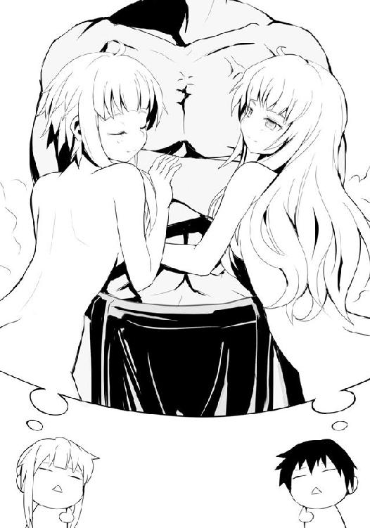
「......あの、何故さも当然のように私の将来が姉さんの将来に組み込まれているんですか？ そもそも日本で一夫多妻は認められていませんから無理ですよ」
「大丈夫ですわよ、きっとわたくしたちがウェディングドレスを着る頃には法律も変わっているに違いないですわ」
「子どもみたいなことを言わないでください。仮にそうだとしても......」
「はっ!? まさか鏡、わたくしと一緒では嫌だと!? どうしてですの!? どうして、そんな......鏡がいなかったら誰がわたくしの面倒を見てくれるんですの!?」
酷い、酷いですわ、うぁあああぁぁぁああぁあ！ と、声を上げて梗は再び妹の肩を振り始める。生徒会室に人がいないのはコレが原因なのかもしれない。僕は、長期戦を覚悟した。
「つまり、そのダンドーと猟犬群に対処するために、わたくしたちの技術を学びたい、そういうことですのね？」
真剣な眼差しで僕の前に座る梗の言葉に、僕は頷いた。あれから彼女が立ち直るまでに結構な時間が経っており、外はすでに黄昏である。ちなみに梗の最終結論としては法律を変えられる人ということで総理大臣に落ち着いた。いや、落ち着いたと言うと何か違う気がしなくもないけど、訂正し続けていた鏡の心が先に折れて、もうそれでいい、ということになったのだ。
「正直に話をしますと、佐藤さんでは厳しいと思います。佐藤さんが先ほどおっしゃったカゴを使うにも、付け焼き刃では持たない方がマシ、という状態になるのは間違いありませんわ」
彼女が言うには自分たちがかつての争奪戦の際に十数人を同時に相手にしたのは二人であったがためだという。息の合った二人ならば１＋１が２ではなく、３にも４にもなる。だが、それこそ付け焼き刃ではどうにもならないのだという。
おそらく、と梗に代わって鏡が続ける。
「あの丑の日を見た限り、佐藤さんが二階堂さんと組んだとしても同じことだと思います。失礼ですが、あれはコンビネーションによる技というよりは、単なる共闘でした。相手が単独ならそれでも十分な効果を発揮できるとは思いますが、佐藤さんが今し方話してくださったダンドーと猟犬群の戦法ではおそらくそれほどの意味は持たないと思います」
そしてカゴについても説明を加えてくれる。カゴは軽量でありながら耐久性に優れ、柔軟性を持つ。おまけに穴だらけの作りは空気抵抗をも減らしている。そのため武器にも盾にもなる......使いこなせれば、だ。剣のように直線的ではないその形状に加え、取っ手を掴めば動き自体が極めて不規則なものにもなる。
「しかし同時にそれが強さでもあります。カゴのどこを、どのように持つのか、振った際にどう動かすのか、そして如何に使うのか。使い手の技術によってカゴはまさに変幻自在の武器にして防具。素手での攻防が基本の場にあって極めて有用な道具たり得ます。ただ、その分使いこなすには習熟が必要で、姉が先ほど言ったように付け焼き刃では単なる荷物にしかならないと思います」
鏡の言葉に僕は頷くほかない。確かに、何度か敵のカゴを奪って使ったことがあったけれど、その都度扱いに困った。あれは単にコツをつかめていないだけ、ということだと思っていたが......そんな甘いものではないのだ。
「わたくしたちの場合は幼い頃に参戦した関係上、どうしても体が小さく、まともには戦えなかった。手足の長さを補うもの、その結果がカゴを使いこなすということでしたの。......何度も悔しい思いをし、そうしてようやく人並み以上に使えるようになりましたわ」
どこか慰めるような顔で、梗が言った。その顔を見て、僕は自分が酷く恥ずかしくなった。きっとこの二人は大変な苦労を、それこそ数え切れないほどの敗北と空腹の末にあそこまで見事な技術を身につけたのだ。それをコツだけ聞ければ自分にもできるんじゃないかと安易に考えてしまったことが、どれだけ二人に失礼だったか......。もはや侮辱したといっても過言ではない。僕は俯き、ごめん、と口にした。
「いいんですのよ。わたくしたちはむしろ嬉しく思いますわ。結局何もしてあげられませんけれど、こういうふうに頼りにしてくださること自体、長年忌み嫌われてきたわたくしたちには存外の喜び。それに、難しい技が簡単そうに見えるというのは、それこそ習熟の証ですもの。だから、嬉しいんですのよ」
ニッコリと笑った梗の顔は、僕にはとても真似の出来ない笑みだった。たった一つしか年齢は違わないけれど、戦場での経験はまさに雲泥の差。彼女らは僕では考えられないような苦悩や悲しみを乗り越え、今の笑みに至っているのだ。
「私が思いますに、やはり氷結の魔女......槍水さんがおっしゃったように猟犬群ではなく、ダンドーをまず何としてでも叩く、それしかないと思います」
鏡がそう最終的な結論を述べ、僕たちの会話は終わった。僕は彼女らに感謝の言葉を述べて席を立つ。生徒会室の扉に手をかけた時、梗に呼びかけられる。ふり返ると、窓から覗く夕暮れ空を背に立つ沢桔姉妹が微笑んでいた。鏡が、言う。
「最後にお伝えします。スーパーマーケットには何一つ確かなものはありません。常に不測です。唐突に現れる新メニュー、前兆なく変化する半値印証時刻、まさかの品切れ......そして、誰がどれだけ集うかわからぬ需要と供給が交差する極狭領域。ダンドーと猟犬群が必ず現れるのだとしても、それに立ち向かうのはあなたと槍水さんだけではない。他にも集う狼がいるのです、気負いすぎは禁物です」
鏡は他の狼もいる、それは敵であると同時に味方でもある。それを忘れるな、という助言をくれたのだろう。僕はそれに頷くように、軽く頭を下げる。
妹に続けて、今度は梗が言う。
「佐藤さん......あなたは十分に強い。それは物理的な戦闘力だけでなく、その狼としての心が強い。二階堂さん共々何度も何度もわたくしたちに立ち向かってきてくださった、その強い心、わたくしたちにはなかったものですわ。
あなたには、あなたの戦い方があります。それが最も強い。佐藤さん、相手が誰であろうと、あなたらしい戦い方をしてくださいましね。きっと道は開けますわ」
むず痒い気持ちとともに、先ほどとは違った恥ずかしさが湧いてくる。なんと言っていいのかわからず、僕は笑って、ありがとう、と告げて生徒会室をあとにした。
●
生徒会室をあとにした佐藤の足音が聞こえなくなるまで、沢桔姉妹は立ちつくしていた。まるで心地よい音色を聞くように二人は耳を傾けていた。
少しすると文化祭実行委員の一人がやってきて、二人の書いたアンケート用紙を受けとり、去っていく。それを切っ掛けにしたように妹が無言のままデスクについて普段のようにキーボードを叩き始め、梗は窓に身を寄せ、空を見上げた。
「ねぇ、鏡。今日やらなくてはならない作業はあとどのくらいあるのかしら？」
「明日の抽選会関係と、今外回りしてもらっている人たちが戻ってきて、それを集計しなくてはならないので、ちょっとかかります。ただ......なんとかなります」
梗は背中に妹の視線を感じた。お互い、言わなくともわかっていた。
「そうですわ、鏡。......借りは、返すものですわ」
はい、姉さん、と妹が嬉しそうな声で応じると、キーボードの叩く速度が上がった、
梗は窓を開けた。冷たくもなく、暑くもない。夏の終わりの風が生徒会室に吹き込んでくる。梗が見上げた空は雲一つない、まるで染め物のように美しく鮮やかな黄昏だった。
今夜はきっと、綺麗な月が見えることだろう。
◯
僕は今一度あせびちゃんの力を目の当たりした。帰り際にファミ部へ顔を出すと、会議中にも拘らず、あせびちゃんが「ちょっとだけ遊ぼうよ〜」と言ってくれ、会議に飽きていた他の部員たちもノリノリでゲームの準備を始めてくれた。そこまではいい、そこまではとてもいい話だ。......問題は、あせびちゃんがゲーム機のＡＣアダプタをコンセントに差した瞬間だった。いきなり部室の照明が落ち、テレビが消えた。......そう、停電である。これから遊ぶぞ！ となっていた部員たちはもちろん、槍水先輩に遅れる旨のメールを送り、コントローラをすでに手にして準備万端な僕にはあまりにキツイ。あせびちゃん本人も今にも泣きそうなレベルだった。経験ある人ならわかると思うんだけど......こういう時ってリアルに笑えないよね。
なし崩し的に解散となり、僕は一人、信号が消えて渋滞となっている道路を脇目にトボトボと烏田高校まで帰ってきた。
部室の扉を開ければ案の定、月明かりだけで薄暗い。その中に槍水先輩が円卓に頬杖をついている姿があり、声をかけようかと思ったものの、何か変だな、と感じ、静かに近づいてみる。うたた寝しているようだ。今し方起こったあせびちゃんの話をしたかったが、さすがに揺り起こすのも気が引け、彼女の隣の席に座ろうとしたのだが......椅子を引いた時に少し音が出てしまった。それで、先輩の閉じられていた瞼が開いてしまう。
「......ん？ 何だ、佐藤か。......眠ってしまっていたのか。いつ戻った？」
ホンの数十秒前、と笑いながら言って僕は椅子に座った。目をこする先輩に僕は今し方起こったあせびちゃんの恐怖と僕らのガッカリ感を可能な限りリアルに伝える。するとどうだ、寝ぼけ眼だった先輩の顔が見る見る真剣なそれになっていく。
「......佐藤、その話、どこからが冗談だ？」
「信じられない出来事かもしれませんが、本当に全部真実で......」
「バカを言うな!!」
バンっと円卓を叩いて先輩は席を立ち、窓に顔を向ける。
「......おまえの話が真実だとしたらすでに一時間が過ぎている......これは......マズイぞ」
はい？ と、僕は危機迫った顔をする先輩を見上げ、思わず呆然としてしまう。
「佐藤、出るぞ！ アブラ神の店まで走る！」
「え？ 半値印証時刻には少し早いですけど......」
先輩は焦燥感にかられたような顔で部室を出ていこうとする。
「......今夜、我々は弁当を手に入れられないかもしれない」
先輩の声は固い。それで僕もまた理由はわからないまでも緊張感に体が強ばる。椅子から立ち上がった時、ちらりと窓の外を見て、僕は先輩と同じ恐怖に襲われた。そして、それまでそのことを考えなかった己の迂闊さを呪った。ＨＰ同好会の部室は、五階にある。そこからは町並みが見渡せるのだが......真っ暗なのだ。ここら一帯まで停電している！ 家々は元より街灯も信号の明かりも何一つ見えない。ただ、かろうじて遠くの方には明かりが見えたりもするが......アブラ神とジジ様の店がある区域は、真っ暗闇である。
「走るぞ、佐藤！」
僕と先輩は部室の鍵を閉める間すら惜しく、部室棟の出口へ走った。外へ出、普段より美しくはっきりと見える星空の下を並んで走る。
「先輩、こういう場合、どうなるんですか？」
「店にもよるが、おそらく......」
先輩は苦虫を噛みつぶしたような顔をし、それ以上の言葉を口にしようとはしない。それでも、ヤバイ、という状況だけは理解できた。
真っ暗な道を走り抜け、最寄りのアブラ神の店にたどり着く。目を疑うような光景だった。毎夜、光り輝いていた店舗から明かりが完全に消え失せている。それだけでも驚きだが、店の入り口には大勢の人がいる。
「やはりそう来たか！ 佐藤、続け！」
人込みをかき分けるようにして僕らは店舗へ突入。店内は人の熱気なのか、妙に蒸し暑い。真っ暗かと思われたが、非常灯と店員が持つライトで気をつければ問題なく行き来出来る。
そんな中、店員が叫んでいた。アイス・冷凍食品及び刺身類は四割引、と。それらが売り切れ次第、本日は閉店です、と。
電気の供給が止まれば冷蔵庫も当然ダウンする。まだ残暑が色濃い季節、いつ復旧するかもわからない電力に期待するより、問題が出やすいものは安く売り切ってしまう気なのだ。
......しかし、弁当や総菜は？ あれらは何が何でも冷蔵を必要とするものではないはずだ。せいぜい今なら三割引程度、ヘタしたらまだ一割引のタイミングかもしれない。
先輩は来慣れた店舗であるが故に、暗闇の中でも慌てることなく総菜・弁当コーナーを目指していく。普段の狼としての動きさながらに素早く人を避け、進んでいく。僕は何とかそれについていき......愕然とする。総菜、そして弁当が......ない。
「佐藤、ここはもうダメだ。ジジ様の店に急ぐぞ」
そんな、何故......僕は踵を返した先輩に訊く。
「停電がすぐに復旧しないと店が判断すれば、冷蔵を必要とする商品の値下げをするのは、経験から誰もが判断できる。それを狙って来店した客はついでに、総菜や弁当も買っていくんだ。電力が停まれば当然、ご飯が炊けないからな。以前にも似たようなことがあった」
「そんなことが......。それじゃジジ様の店だって！」
祈れ。先輩はそれだけ言って、再び走り出す。焦燥感と危機感、そして何より恐怖を僕は覚えた。弁当が、手に入らないかもしれない。今夜は望むべき夕食が食べられないかもしれない。戦うことすら出来ないかもしれない......。なんと恐ろしいことかっ！
しばらくののち、やはり暗闇に包まれているジジ様の店舗に先ほどと同じように突入。電卓で対応しているレジに並ぶ人々をかわし、総菜・弁当コーナーへ。
前を行っていた先輩が急に立ち止まる。隣に並んで陳列棚を見れば......ここにも何もない。
クソッ、と先輩は両手を握りしめ、地団駄を踏む。彼女とともに僕が絶望感に打ち拉がれていると、以前スーパーで何度か顔を見たことがある狼が幾人も現れ、同様に頭を抱えていた。
「いや、だが、まだ、もしかしたら......佐藤、行くぞ。西だ」
先輩が僕の肩を叩いて、小さく言う。はい、と僕は頷き、三度走り出した彼女の後を追う。しばらく暗闇の中を走り抜けていると前方に光。可能性は二つ。停電となった原因はわからないがその影響を受けていない地域か、もしくは単に一足早く復旧したのか。後者だとしたら、マズイ。先輩に言われたように、祈りながら僕は走り続けた。
果たして見えてくる一軒のスーパー。かつて先輩が豚の角煮弁当を手に入れ、僕と二階堂がオルトロスの二人に薙ぎ払われた店である。見た限りでは普段と何ら変わった様子はない。入店する。肌に突き刺さる無数の視線と殺気。狼たちだ。ということは......。
普段なら身も心も引き締まるところだが、今回ばかりは僕と先輩はホッと安堵の息を漏らした。普段のように店内外周を回らず、まず冷凍食品のコーナーを確認しに行く。
「八時を少し回っているな。時間もギリギリ、だが、何とかなりそうだ」
「ですけど、随分狼が多いですね。僕らを除いても十一ってトコですか」
フッと先輩は余裕の笑みを見せつつ、総菜・弁当コーナーへ向かう。それがどうした、停電に比べたらどうということはない。そう、言わんばかりの顔だった。
この店舗は店内最奥の壁棚に鮮魚・刺身コーナーと精肉コーナーに挟まれるようにして総菜・弁当コーナーが設置されている長方形型で、オーソドックスな作りだ。そのため過去に一度しか来たことがない店なのに、不思議と馴染みの店舗であるかのように感じられた。
「佐藤、今夜、どうやら私たちはツいてるらしい。いい弁当が残っている」
先輩は弁当棚の前をゆっくりと通り過ぎながら、言う。見やれば残されている弁当は四つあり、たっぷりのご飯の横にカレールーのようにチンジャオロースがかけられた『チンジャオロース弁当』が一つ、いい色合いの鶏そぼろとそれ自体が光を放っているかのように鮮やかな色合いを見せる玉子そぼろ、それにあんかけのかかった唐揚げと思しきものがセットになった『鶏そぼろ弁当』......そして、灼熱の色をした弁当が二つ、あった。
「四川風エビチリ弁当......ですか」
その弁当は白米の代わりに炒飯、そして真っ赤なエビチリ、そして〝何か〟が三つ。透明なあんかけが表面を覆うそれはミニトマト程度のサイズの丸いもの。点心の類だろうか。白っぽい半透明な表面をしていて、内部にある黒くて丸いものが見えている。
「というより、エビチリの元になった『乾焼蝦仁』に近い料理だな。エビチリは諸説あるが、ケチャップを使うタイプのものは日本で生まれたらしい。昔、料理人が乾焼蝦仁を作ろうとしたが当時の日本では豆板醤が手に入らず、代わりにケチャップを使ったのが始まりだとする話があるんだ。本来汁気の少ない料理だが、日本人からするとおかしなものに見えてしまうから、一応ここでも汁気は多めに、色合いを考えてケチャップも少量使っている。
以前にも話したと思うが、ここの調理人の半数は本当に中国からやってきたスタッフで、日本人の舌に合わせて多少のアレンジこそしているが、それでもその味は日本のスーパーで出す中華料理とはわけが違う。特にここのエビチリは普段、豚の角煮と並んでこの時間帯まで残りにくい商品だ」
「大人気、というわけですね」
並んで歩いていた先輩が何故か急に黙り、僕とは反対の方に向ける。
「あ、いや......間違いではないんだが、その、何だ。角煮はともかく、この店で四川風とつくのはそもそも数が少ないんだ。食べる者を選ぶ。佐藤は最初だし、狙わない方がいいだろう」
確か四川料理って辛いものが多い。そのことだろう。でも、僕は結構辛いのも全然いけるタイプなので、大丈夫ですよ、と笑った。
「佐藤、今のうちに忠告しておくがここで四川風と名のつく料理は、はっきり言って空気を読めない人間が作ったとしか思えないレベルだぞ。本場の四川料理は食べたことがないから、それと比べると案外普通だったりするのかもしれないが、日本で言う四川風とは根本的に何かが違う。普通、四川風と名がつくものは豆板醤に山椒を効かせたもの、そして実は日本人向けに辛味を抑えめにしているのが普通なんだが......」
「......えっと、それは、うまいんですか？」
うまい。先輩はそこだけは言葉を濁すことも、顔を背けることもなく、断言してみせた。ただ一言付け加える。しかしとにかく辛い、と。
「一応デザートというか、餡を包んだ点心らしきものもついてはいるんだが......」
「あの半透明のヤツですね。......でも、先輩がおいしいと言うのなら、僕もそれを狙ってみますよ。二つありますしね」
先輩は仕方ないな、と苦笑いを浮かべた。僕らは即席麺コーナーの前にて刻を待つ。
八時を少し回っているが、まだ半値印証時刻にはならない。確か前回オルトロスと戦った時だと八時一五分ぐらいだったはずだが、店内の空気はまるで直前のように張っていた。人数が多いせいだろうか。冷気とともに感じる、抑え込んだ狼たちの空腹からくる殺気。ピリピリとしたそれは普段以上に肌を刺激した。先輩は腕を組み、瞼を閉じて俯き、ドッシリと構えているのだが......さすがに僕は真似できずに鼓動が高鳴り、落ち着かない。
いつ半値印証時刻が始まるかわからない焦燥感に加え、普段以上に多い狼の数、負けても次の店はない一発勝負。緊張するなという方が無理だ。僕は自分を落ち着かせるように大きく息を吐いて、先輩に倣って腕を組む。そして同様に瞼も閉じようとした......時だった。
誰かの視線を感じた。二つ名持ちの先輩に向けられているのならともかく、その視線は確実に敵意を持って僕に向けられている気がした。おや？ と、その視線の方を見やれば見知った顔をした男が、遠くの乾物コーナー前に立ってこちらを向いていた。
「バカな、猟犬群だと......しかし」
僕は思わず口にしていた。間違いなくそこにいる奴は猟犬群の一匹だが、おかしい。店内にはダンドーのあの禍々しい気配はもちろん、山原の気配もない。猟犬群ではなく、単独でやってきただけなのか。ならば、問題はない......問題はないはずだが......しかし、なんだ。急に全身から嫌な汗が噴き出してきた。
先輩の瞼がゆっくりと開かれ、顔を動かすことなく、横目で入り口の方を見る。
「......来たな」
ダンドーだ。彼が自動ドアをくぐる時、その後方から夜の闇を身に纏ったような四匹の猟犬群が姿を現し、続けて入店。それから少し遅れて小走りに三匹の猟犬がやってくる。おそらく、斥候のように複数の店舗に猟犬を放って弁当の有無を確認していたのだろう。
先に店舗にいた一人がダンドーたちに合流し、ぞろぞろと店内を回りだす。その中からダンドーが先輩を、そして山原が僕を、見た。
山原は僕を認めると相変わらずの爽やかな笑みを浮かべたが、その目だけは鋭く、暗い。
店内にいた狼たちが不気味なほど黙った。もちろんそれまで喋り続けていたのが止まったというわけではなく、緊張の糸がまるで急激に緩んでしまったかのように、空気の張りが消えたのだ。誰もが僕と同じく愕然としているのかもしれない。ただ、一人を除いて。
槍水仙。彼女だけが、むしろ辺りに放つ存在感を強めていた。敵ではないはずの僕でさえ感じる、彼女の覇気。それはまるでダンドー、そして店内の狼全てに、自分はここにいるぞ、とそう伝えているかのようだ。静寂が包み込んだ店内であるが故に、それは一際目立った。
ダンドーたちが僕らの視線から消えてもなお、先輩のその状態は変わらない。そして目線もまた、入り口を横目で睨みつけたままだ。彼女がボソリと、何か来る、と呟いた。
「......バカな」
店内の狼が一言、そう漏らす。それは店内全ての人間の心情を的確に表現した一言だった。
自動ドアを抜けてくる二つの影。店内がざわめいた。僕と先輩も目を見開き、その二人が山積みとなっていたカゴを一つずつ抜き取る様を呆気に取られながら眺めた。
――双頭の犬、オルトロス。制服姿の沢桔姉妹の来店である。
梗はニッコリと笑い、鏡は僕らに向かってペコリと会釈すると総菜・弁当コーナーへと向かっていく。数十秒の後、二人が僕らと同じ島棚の間にやってくると、背を向け合って佇んだ。
「お弁当が四つ残っていて良かったですわ。それだけが心配でしたの」
梗は鈴の音のような声で言って、静かに笑った。先輩は彼女らを睨み続ける。
「おまえたち、どうしてここに？ 私の借りを返しやすくするために来てくれたのか？」
かつて先輩は体調不良の時とはいえ、一度戦い、そして負けている。そのことだろう。
「あら？ わたくしたちが来てはいけません？ たまには馴染みの店以外のお弁当を食べたくなる......魔女さん、あなたにだってそういうことがあるでしょう？ ただそれだけですわ」
こちらに顔を向けていた鏡と目が合う。彼女は少しだけ微笑んでくれる。それだけで、二人が対ダンドーと猟犬群戦を意識して僕らのもとにやってきてくれたのだとわかった。かつて十数人を相手に大立ち回りを演じた双頭の犬がいる。それは驚くほど僕の心を軽くし、笑顔にしてくれた。力強い。それだけじゃなく彼女らが来てくれたことが、嬉しかった。
「間違っても佐藤さんに相談されて何か手助けできないものかと考えた末に直接わたくしたちが来店してダンドーと猟犬群をぶちのめしてさしあげれば良い、とそう思い至った結果、意気込んでアブラ神のお店に行ったらもう壊滅状態で慌てて二階堂さんに助けを求めてこちらの店に走ってきた......というわけではないんですのよ。本当こんな所で会うなんて奇遇ですわ」
三倍速ぐらいで梗が言うと、僕と微笑み合っていた鏡の顔から笑みが消え失せる。彼女はこちらに後頭部を向け、陳列棚に視線を戻した。
「......姉さん、全てが台無しです。どうしてそんな頭の悪いツンデレみたいに全部ぶちかますんですか？」
「え？ で、でも鏡、万が一佐藤さんと魔女さんがわたくしの言葉通りに受け取ってしまったら......また嫌われてしまいますわ！ ダンドーと猟犬群でさえ面倒なのに、こいつらも相手にしなきゃいけないのか......とか、思われたらもう、もう......!! こういうのはわかりやす過ぎるぐらいがちょうどいいに決まって――」
「ないです。一歩間違えると姉さんが相手をバカにしていると思われますよ」
「そんな！ バカになんて、むしろ逆で、愛おしく思っているぐらいですのに！」
「だったらバカみたいな補足はやめてください。姉さんはいいかもしれませんけど、私まで巻き込まないでください」
「えっと......ち、ちなみに二階堂は？」
先輩がいささか不愉快そうな顔をし始めたので、僕は慌てて違う話題を振ってみた。先輩はうるさいのは嫌いだ。スーパーでは特に。
「二階堂さんはいつものスーパーに向かうそうですわ。......ほら、ご覧なさい鏡、佐藤さんはまったく気になさっていないですわよ？」
......姉さん......、と鏡が姉を哀れんだ目で眺め、ため息を一つ。
「少し、向こうで話しましょう。......すみません、また後で。それでは」
どうしてですの？ と首を傾げる姉の腕を鏡が引っぱるようにして、歩き去っていった。別に僕が彼女らを呼んだわけじゃないにせよ、何だか、取り残された僕が恥ずかしくなってしまい、すみません、と先輩に向かって呟く。彼女は大きくため息を吐き......そして、笑った。
「佐藤、一つ聞いておきたいんだがあの二人に助けを求めたわけじゃないんだろう？ ......そうか、対集団戦とカゴのコツ、か。......フフ」
先輩は半値印証時刻前であることを忘れたかのように、覇気を消しクスクスと笑う。
「いやなに。少し嬉しく思っただけだ。おまえも――」
不意に店内の空気が張り、ほぼ同時に、キィー、という控えめなあの扉が開く音が僕らの肌と耳を刺激する。僕と先輩が笑みと言葉を切って総菜・弁当コーナーを見やれば、そこにはエプロンを着けた、優しそうな笑みを浮かべる小柄な男。この店の半額神だ。
彼は店内を軽く見渡すと、ほう、と漏らしたようだ。ダンドーと猟犬群、オルトロス、そして氷結の魔女......そして僕を含めた一二もの狼。激戦となるのは誰の目にも明らかだ。彼は嬉しそうに笑うと、エプロンから半額シールの束を取り出し、舞でも踊るように軽やかな足取りと、優雅な手さばきで総菜のパックにシールを貼っていく。
この時になるとさすがの狼たちも周りの二つ名持ちたちに恐れおののくだけではなく、覇気を放ち始める。ただ、滲み出るような自信は感じられず、もう覚悟を決めた、という感じだ。
半額神が弁当コーナーに移り、半額シールを貼付する。一つ、二つ......その瞬間、膝をつきそうになるほど空気の重みが増した。二つ名持ちたちが一斉に覇気を放ち始めたのだ。それまでの狼たちのそれがまるで戯れ事であったかのような強烈さ。狼たちが声なき悲鳴を上げる。これほどの場で自分はどこまで戦えるのか。彼らも僕と同じように思っていることだろう。
半額神が空気の変化を感じたのか、シールを貼る腕の動きがゆっくりとなっていた。宝物に触れるかのように、慎重、丁寧に、その蓋の表面を撫でるようにしてシールを貼る。弁当を、半額とする。我らに、恵みを与えんとする。
――貼った。刻が満ちる。耳に入ってくるのは穏やかなＢＧＭだけだが、肌はすでにうっすらと汗ばみ、ライヴ会場にいるかのように空気の震えを感じ取っていた。
半額神は弁当コーナー横のスタッフルームの前まで来ると一礼。普通なら頭を下げるだけ、しかも一瞬のそれを、彼は腰から直角に曲げるように深々と、そして二秒近くも下げていた。
彼は顔を上げると、まるで僕らに頑張れと言うかのように微笑み、そして扉の向こうへと姿を消す。その扉がゆっくりと、キィー、と、小動物の泣き声のような音を出して閉まりゆく。
僕は息を吸い、体から力を抜く。瞼を閉じ、神経の全てを耳に集中。
......そして、来る。激戦の幕開けを知らせる、その音が。バタンと鳴り響く。
ドンっと店内を震わせる踏み切り音。僕もまた思いっきり地を蹴る。
鏡、という声がどこからか聞こえ、開始速攻で上空にカゴを手にした沢桔鏡が舞い上がる。彼女は空中で回転し、天井に足を着いた。
地上では弁当コーナーに殺到する数匹の狼たち。そこに剣道着姿のダンドーが黒き猟犬を引き連れて突っ込んだ。猟犬の幻惑が始まり、隙をみせた者にダンドーの攻撃が炸裂する。狼たちが声すら上げられずに飛ばされ、倒され、薙ぎ払われていく。
そこに鏡がカゴを振り上げつつ上空から仕掛けるが、ダンドーに到達する前に猟犬が一匹飛び、壁となる。山原だ。頭から落下していく鏡はカゴを山原が繰り出してきた拳に当て、弾く。続けて身をくるりと回転させると空中でバランスを崩した山原を蹴り飛ばす。
猟犬群は狼たちが形成した乱戦の中に突入するも、ダンドーだけが急停止。顔を上げて鏡をその視界に捉える。鏡は山原を相手にしたことで落下速度が大幅に低下、体勢も悪い。だが、鏡は相変わらずの飄々とした顔だ。
ダンドーが雄叫びを上げて鏡の足先が床に着く寸前に拳を放った。離れた場所から見た僕にでさえそれがどれだけ勢いの込められたものであるのかわかるレベルの、全身の力を込めた攻撃。一撃で二つ名持ちの片割れを倒してしまう魂胆なのだろうが......それは、甘かった。
オルトロスは双頭の犬、首が二つ、つまりは牙が二匹分あるのだ。
鏡の目前にダンドーの拳が迫った時、彼の拳を超高速で投げつけられたカゴが弾く。沢桔梗の、カゴだ。ダンドーの拳を弾いて、カゴは宙にふわっと浮かぶも、それを鏡が掴み取る。両手にカゴを持ち、あの《大顎》のようなスタイルとなる。
ダンドーが続けて攻撃を繰り出すも、鏡はそれぞれのカゴの取っ手を掴み、底の部分を盾にしてそれら攻撃を受け止める。いや、受け流す。一瞬受け止めるものの、攻撃の圧が強すぎるのか、鏡は取っ手を握る力をあえて抜いて、カゴを回転させ、左右に受け流している。さすがに顔が歪んでいた。
ダンドーが手間取っていると気がついたらしい猟犬群が二匹、そこに加勢に向かう。二手に分かれ、ダンドーと攻防を繰り広げる鏡の左右に展開。仕掛ける。しかしそこに沢桔梗が突入。鏡がカゴを空中に放り、それを梗が受けとり、二人は背中合わせとなって左右の猟犬群にカゴを振るう。当たるも、浅い。やはり猟犬群は深く踏み込まない。
オルトロスにダンドーが距離を詰めてくる。拳。梗がカゴの口を上下に両手で掴み、近距離で繰り出されてきた拳に獣の口がごとく喰らいつく。
カゴの中に拳が入る。その瞬間、梗はカゴを水の入ったバケツをひっくり返すようにして、上半身を使って素早く下方へ向けた。ダンドーの腕が引っぱられ、梗共々互いに額をぶつけ合うようにお辞儀する体勢になる。そこに、鏡が姉の背に手を置いて支えとし、ガードレールでも飛び越す時のようにして、ダンドーの顔面に蹴りを叩き込む。
ダンドーは仰け反りそうになるものの、梗のカゴに捕らえられた腕が抜けないらしく、鏡の蹴りは完璧なまでに入った......が、倒れることなく、痛みに歯を食いしばり、自由な方の手で梗の喉にすくい上げるようにして掌底を放つ。
梗が慌てて拘束していたダンドーの腕を解き放ち、距離を取ろうとバックジャンプ。だが、いつの間にそこに移動していたのか、山原が梗の後ろに回り込んで体をぶつけ、下がらせない。鏡が姉を守ろうと慌ててダンドーを攻撃しようとするものの、猟犬群が邪魔に入る。
梗は覚悟したかのように両目を硬く閉じた。
ダメか、あのオルトロスといえども......ダメなのか。
そう思った時、僕はゾクリとした。まるで首元で刃物を振るわれた時のような、そんな寒気がした。先に行け、という耳を軽く撫でるような心地良い声とともに。
何だ？ と狼たちの乱戦に突入しつつあった僕は呟く。だが頭が答えを導き出す前に、視界に解答が現れる。
「甘いな」
ドンっという衝撃波。声はその一瞬前に発せられていた。梗とダンドーの間に身を滑り込ませ、繰り出されていた拳を受け止めている彼女、槍水先輩から。
「借りを返すのは後にしてやろう、オルトロス」
梗がハッとして目を開き、山原を突き飛ばす。そして、即座にやってきた鏡と先輩と、三人で背中合わせに陣形を組んだ。
さっきまで僕の後ろにいたと思った先輩は、瞬時にして乱戦の外側で繰り広げられているオルトロスとダンドーの戦いの場まで移動したのだ。あの一瞬、僕が寒気を感じた、その一瞬で、声だけを残して。
梗が不敵に、口元だけで笑みを作る。
「......残念ですわ。楽しみでしたのに」
「先ほどぶちまかしたのがなければ完璧です、姉さん」
ビッと親指を立てる鏡の言葉に、先輩はフンっと鼻で笑う。
「さて、行くぞ。ダンドー。今度は私が相手だ」
先輩は前動作がほとんどないままに拳を放つ。ダンドーはそれに応じられず、やせ細った猟犬が一匹ダンドーと先輩の間に素早く身を滑り込ませ、ぶっ飛んだ。その隙に体勢を整えたダンドーが先輩に攻撃を仕掛けてくると、先輩はそれに拳で応じ始める。ドンドンドンドンドンと炸裂音にも似た音が二人の間から発せられ始めると、先輩の邪魔をしようと猟犬群が一斉に動く。だが、それはオルトロスが全て防ぐ。
凄い、と、素直に思った。これが名うての二つ名持ち同士が組んだ時の動きなのか、と。それまで一度だけしか戦ったことがない相手と、あそこまで完璧に合わせられるものなのか。互いの役割を目配せすることもなく、即座に理解して共闘している。しかも彼女らは互いに信用......いや、完全に信頼しているかのように一切相手を見ない。心配していない。必ずオルトロスは猟犬群の邪魔を防ぎきると信じる先輩と、先輩が必ずダンドーを抑えきれると信じるオルトロス。今まで僕が他の連中と共闘する時はそいつらがしくじる可能性を必ず頭のどこかで考えていた。だが、彼女らは......。
僕は乱戦の中で揉まれながら、彼女らの戦いから目がそらせなかった。息を呑む。拳を握りしめる。体の芯が、こそばゆく、うずく。
――行きたい。あの場に。僕もまた。
足がそちらに向きそうになるのを、僕はハッとして押さえ込む。あそこは、僕ごときが行ってはいけない場だ。飛び込めば、僕は足手まといになる気がする。先輩と沢桔姉妹についていけない......いや、加勢どころかヘタをすればダンドーたちに利用されることさえ考えられる。だからこそ......先輩は先に行けと言い残したんじゃないのか。
僕は歯がみしつつ、湧き起こる衝動を抑え込んだ。
「小娘ぇぇええ!!」
ダンドーが初めて雄叫びを上げる。拳を放つ速度が上がる。だが、先輩は無言のままそれに応じて......いや、それ以上に速度を上げていく。一撃、二撃と徐々にダンドーの体に先輩の拳が入っていく。山原をはじめとした猟犬群、八匹全てが先輩を狙うも、やはりオルトロスがそれを許しはしない。地から、空から、先輩の周りを飛び回り、彼女への攻撃を完全に防ぐ。
八匹の猟犬を引き連れた地獄の狩猟者・ダンドーと、双頭の魔犬を引き連れた魔女。頭数では負けていても、その総力は負けてはいない。
「あ、くそ――チッ！」
僕は目前に迫ってきた蹴りを首を捻ってかわすと、仕掛けてきた狼に接近、掌底を放つ。だが、最後まで放ち切る前に側面から別の狼がぶつかってきて、二人して床を転がった。普段なら難なくかわせるそれだったが、先輩たちの戦いに意識を向けすぎていて、油断した。
弁当前は、普段とはやや色合いの違う戦いが形成されていた。乱戦の端で繰り広げられる人外魔境と言っても過言ではないような戦いとは別に、こちらはこちらで激しく荒れている。鬼がいぬ間に、というわけではないのだろうが、皆、あの二つ名たち同士で戦っている間に何とか弁当を獲ろうとしているのだ。ダンドーと先輩、猟犬群とオルトロス、その中のどれかが倒れれば残った者たちに一気に蹂躙される。だから、その前に......そういう焦りが普段以上に場を乱していた。皆、技が荒く、普段ならかわせられるような攻撃を喰らい、弁当に手を伸ばすより先に邪魔な敵を払った方が最終的に有利だと頭ではわかっているのに、手はバカの一つ覚えのように弁当に向かってしまう。
焦り。だが、それだけじゃない。乱戦の外側にいる狼たちは皆先輩たちの戦いを少なからず意識しているのだ。焦りに支配される者と、集中力が散漫になっている者......誰もが決定打を有さないが故に長期戦の気配が漂い始めていた。いや、先輩たちの戦いに決着がつけば一瞬で終わる、それまでの戦いではあるのだが......。
先輩とダンドーが一際大きな衝撃波を放ち、拳を打ち合わせたまま......止まる。
「双頭の犬を召し仕えたか。しかし魔導士の代わりとするにはいささか貧弱じゃないか？ なぁ、《腰巾着》」
「......黙れ！」
顔を歪ませた先輩が無理やり距離を詰めようとするも、ダンドーはニヤリと笑う。
彼は後方にジャンプ。先輩はさらに踏み込むが、飛翔するダンドーの足の下から山原がスライディングを仕掛け、彼女の足をすくう。オルトロスは先輩の周りばかりを守っていて、ダンドーの後方から仕掛けた山原まで注意できなかったのだ。倒れそうになる先輩を梗が慌てて支えるも、そこを狙ったかのように猟犬群が一斉に二人に襲いかかる。そこにダンドーも踏み込んだ。鏡がダンドーだけは止めようと彼の側面に回って頭にカゴを被せようとするが、完全に読まれる。ダンドーが横手から来たカゴを見ることもなく掴み、鏡ごとぶん投げる。
梗がその妹の姿に注意が逸れ、猟犬群に足をすくわれる。こちらも吹っ飛ばされた。
一人となった先輩が八匹の猟犬群に蹂躙される。手や膝こそ床につかないがほとんど袋叩きだ。そこにダンドーがとどめを刺すように踏み込んでいく。
「先輩!!」
間に合え。僕は祈りつつ、目の前にいた狼の鳩尾に一撃を放ち、身を折らせるとそれに足をかけた。飛ぼうと思った。しかし、間に合うのか。間に合ったとして、僕ごときに何が出来るのか。何も出来やしないんじゃないのか。だから先輩は行けと――だが、それでも!!
僕は自分自身に腹を立てつつ、そして飛ぶ......つもりだった。しかし、出来ない。足を掛けた状態のまま動けなくなる。僕だけじゃない。乱戦の場にいた狼、そして、先輩にオルトロス、ダンドーと猟犬群でさえ完全に動きを止めた。......いや、止められたのだ。
全員が一様に目を見開き、同じ方向を見ていた。
耳を覆うほどの争奪戦の打撃音が完全に消え、不自然なほど明瞭に聞こえ始める店内ＢＧＭ......そして、キュルキュル......という、歩み寄る絶望の音。
「......バカな」
オルトロスが来店した際に狼から発せられた言葉が、今度はダンドーの口から漏れた。そのダンドーの顔が苦痛に歪み、宙を舞った。先輩が猟犬群の囲みから抜け出し、彼の腹に掌底を叩き込んだのだ。ぶっ飛ぶ。それは緩やかなカーブを描き、乱戦の上空を舞い、鮮魚コーナーへ。
「佐藤、行け!! 奪取し次第この領域を離脱しろ!!」
先輩がらしくもなく叫んだ。それと時を同じくして、僕らの視界に絶望と恐怖の権化が降臨する。店内最奥の壁棚の角に設置されている鮮魚コーナーを舐めるようにゆっくりと曲がって、その圧倒的な威圧感を放つ存在が......やってきた！
「《大猪》、だと......!?」
このスーパーマーケットいう場において最強にして最凶なる対人兵器、カートを装備した強大なる生活能力を有した主婦、大猪。破滅の配達人、終焉を告げし者。文字通りに狼が束となっても壊滅は免れぬ正真正銘の最強の存在。
――絶叫。己のものなのか、人のものなのか。それすらわからないほどに混沌とした絶叫。
先輩に言われたのに僕は足が震えて動けない。体が硬直している。
奴が、来る。どこにでもいそうな太めな主婦が、ただカートを押している。それはありきたり過ぎる光景でありながら、この場においてはまさに地獄を人体が表現しうる限界値で表しているといっても過言ではない。止まっていた時が動き出したように、狼が一斉に弁当に向かう。先ほどまでの焦りの混乱とは意味が違う、沈みゆく船から逃げ出す鼠がごとく、弁当に群がった。早く、早くこの弁当を奪取してこの場を離れたい。そう誰もが思い、言葉にならない叫びを上げて我先にと手を伸ばす。
あの猟犬群でさえ完全に算を乱し、狼に紛れるようにして個々で弁当に向かっている。山原が何とかまとまりを取り戻そうと何か叫んでいるが狼たちの叫びがそれを上回り、うまく伝達できておらず、完全に組織は瓦解していた。
先輩に吹っ飛ばされて床を転がっていたダンドーが膝をついて起き上がろうとする。慌てて弁当コーナーに顔を向けるのだが......その時、背後にはすでに大猪が迫っていた。ダンドーが真っ青な顔でふり返り、悲鳴を上げる。
大猪の顔が不愉快そうに歪む。まるで自分の行く先に邪魔なものがあるとでもいう顔だ。
「犬ども来――！」
タンクの車輪が火花を散らして急激に加速。膝立ち状態のダンドーにその先端が触れる。その瞬間、ダンドーの体が点火されたロケット花火のような勢いで総菜・弁当、そしてその先の精肉コーナーに向かって横一直線にぶっ飛んだ。当然精肉コーナーより手前の弁当コーナー前には群れる狼と猟犬たちがいて、まずそこに突っ込む。
豪速で放たれたボウリングの球がピンを弾き飛ばすがごとく狼たちが人形のように宙を舞うも、ダンドーの体は止まらない。僕のすぐ横をボロぞうきんのようになって飛翔していき、乱戦を貫いた。精肉コーナー前で、ようやく床を転がり、止まる。
何というパワーだ。信じられない。しかもあのダンドーが......。僕は自分の膝が尋常ではないレベルで震えているのに気がついた。
恐怖が、近づいてくる。途中で刺身のコーナーに顔を向け、晩酌の肴とする気なのか、半額シールが貼られていたアジのたたきとしめサバのパックをそれぞれ一つずつカゴに収め、なお、接近してくる。弁当コーナーまであと数メートル。
混沌とした乱戦には狼が六、猟犬が四、そして僕。そこに先輩が駆け込んでくる。
「佐藤、死にたくなければ弁当を獲るんだ、早く！」
先ほどの袋叩きにされたダメージが色濃く残っている先輩はそう言って、狼の一匹を大猪に向かって投げ飛ばす。その狼は床に落ちると同時にタンクの車輪に踏まれ、潰されていく。ゴキャ、グチャ......という耳を塞ぎたくなる音がし、僕らの恐怖を倍増させた。
「急げ、間に合わなくなるぞ！ 死にたいのかッ!?」
先輩はそう言うが、場が荒れまくって最前線にまで到達できない。先輩自身、ダメージが蓄積されているのか普段のような力強い戦い方ができていなかった。
間に合うのか、コレで。間に合ったとして、弁当に手を伸ばすことが叶うのか。
「......仕方ありませんわね。鏡、行きますわよ！」
「はい、姉さん！」
その二人の声がした時、上空に鏡が飛翔し、天井に足を着ける。そして僕らのすぐ後ろをカゴを手にした梗が大猪に向かって走る。
「わたくしたちが時間を稼ぎます、その間に」
「死ぬ気か!?」
梗はただ、微笑み返すだけだった。オルトロスが地上と天空から最凶の大猪に牙を剥く。
「佐藤、前を見ろ！ 奴らの厚意を無駄にするな！ 行くぞ!!」
「はっ、はい！」
僕と先輩は後方から乱戦に切り込んでいく。あのオルトロスとはいえ、相手は大猪、どれだけ持つのか。いや、そんなことは考えるな。たとえ一分でも一秒でも僕らのためにオルトロスが身を挺して稼いでくれるというのなら、僕は意識の全てを弁当に向けるべきだ。それこそが礼儀。あの四川風エビチリを手に入れる。それだけを考えろ。余計なことを考えるな！ ただ進め！ 突き進め!! 己の戦いに全てを懸けろ!! あの二人ならきっと――
「キャイン!!」
......キャイン？ 何だろう、今、尻尾を踏まれた犬の鳴き声のようなものが......。
僕は乱戦の中からその声が聞こえた方を見やる。......まぁ、その、なんて言うか......案の定、オルトロスが折り重なって倒れているわけで......絶対アレ、初撃でやられただろ。
大猪が先ほどと何ら変わらずに接近。あと一メートル。本当の意味で身の危険を感じた猟犬と狼が一匹、二匹、と乱戦から離脱。残りは僕と先輩、そして山原と狼一匹だ。
弁当棚に横腰をくっつけるような体勢で先輩と山原が互いの手を弾き合い、そのすぐ横で僕と狼の攻防が続く。タンクは山原と狼の後方から近づいているため、あと二秒持ち堪えられれば勝てる。すでに残った者たちと弁当数がイコールとなっているが、全員がエビチリを狙っているのだ。......いや、狼が諦めた。僕の腕を弾くと山原の背に腕を差し込むようにしてチンジャオロース弁当に手を伸ばし、これを掴む。そして地を蹴り、全力で飛んで乱戦から離脱した。
突如相手のいなくなった僕は山原の腕を横から掴む。愕然とする彼が僕を見る。
「終わりだ」
先輩は山原に拳を叩き込んだ。山原の体勢が崩れる。後方へ。タンクに接触。彼はそのまま空中へと弾き飛ばされていく。
「佐藤！」
僕と先輩は二人同時に弁当へ手を伸ばす。そして、二つ並べられた四川風エビチリ弁当を僕たちは同時に掴み、獲る。
弾かれたように二人で弁当コーナーから離脱。タンクが蠢き、わずかに僕の足首をかすめる。......かすめた、ただそれだけなのに誰かに蹴り上げられたかのように僕の体は宙に浮いた。しかし勢いが強く、僕は綺麗に一回転して足から床に落ちる。弁当に衝撃を与えないように着地、さらに後方に飛び、島棚の間まで逃げた。そこでようやく僕は脱力して尻餅をつく。
鶏そぼろ弁当をさも当然のようにタンクに収める大猪を見る。その時の僕の心の中には弁当を奪取した達成感ではなく、何とか凌いだ、という安堵感だけだった。
ズボンを少し捲り上げてかすめた足首を見ると......そこは鉄の棒で打たれたかのような痣が......。ゾクリとした。
「......酷い争奪戦だ。佐藤、さぁ、帰ろう。今日はもう疲れた」
横に現れた美しい足......じゃなくて、槍水先輩が苦笑しながら言う。はい、と返事をして立ち上がろうとするのだが......僕は腰が抜けていて危うく転倒しかける。先輩が抱き留めてくれる。
大丈夫か？ と、彼女がクスリと笑った。
沢桔姉妹を夕餉に誘ったものの、この後マっちゃんの店に行くというので途中のバス停で別れ、僕と先輩は二人だけで部室にまで戻ってきた。もう大丈夫です、と言っているのに、円卓の上に弁当を置くまで先輩が肩を貸してくれたのが、ちょっと嬉しかった。
その頃にはもう九時近くなっていたが、窓から外を見下ろすと未だ停電は続いているようだ。念のためにスーパーで弁当を温めてきてよかった。
僕は冷蔵庫から麦茶を取り出しながら、狼たちの大猪に対する行動が以前見た時とかなり違うことについて尋ねる。以前は茶髪、顎髭、坊主を筆頭とした狼の大半が犠牲を厭わず大猪に立ち向かっていたのだ。
「あぁ、それは時間帯だろうな。半値印証時刻直前に大猪が現れれば根こそぎ弁当が奪われてしまう上、半額神に辛い思いをさせてしまう。だから、あえて身を挺してでも時間を稼ぎ、せめて半値印証時刻まで足止めをしようとしたんだろう。その場に私がいても、きっと同じことをするな。たとえ腹の虫の加護を受けていなかったのだとしても、勝てなくても、戦わなくてはならない。......お、すまん」
先輩が用意したグラスに僕は麦茶を注ぐ。
「つまり今回は半値印証時刻を過ぎて現れたがため、あんな感じになった、と？」
「そうだ。......佐藤、話は後にして、早く食べよう」
先輩は哀願するような表情を浮かべるので、それが妙に面白く、そして可愛らしくって僕は、そうですね、と言いつつ笑った。
僕らはいつものように、月明かりで照らされる窓際の席に二人並んで座り、袋から弁当を出す。エビチリの食欲をそそる香りがふわっと広がる。僕らは生唾を飲みつつ、手を合わせる。
「「いただきます！」」
僕らは一斉に弁当の蓋を開け放つ。先ほどまでかすかだった香りが強烈かつダイナミックに部室内に展開し、僕らの生唾に拍車をかけた。爽やかな酸味に、炒飯のものか、コッテリ系の香りも交じっている。
今まで気づかなかったが、この弁当には薄いプラスチック製のレンゲが袋に入って、弁当容器に貼り付けられていた。エビチリや炒飯は箸では食べづらいからだろう。先輩はすでに知っていたらしく、割り箸を割ることなくレンゲを手にして炒飯に差し込んでいた。
僕も負けじとレンゲを手にし、いざ!!
弁当はシンプルな構成で、炒飯、エビチリ、団子のようなものの三つが区分けされているだけである。強いていえば炒飯の脇に申し訳程度に紅ショウガが添えられているくらいだ。
......コッテリとした香りを放ってくる炒飯もそそるが、やはり最初はエビチリだろう。月明かりでもはっきりとわかる、鮮やかな紅色の中にレンゲを突っ込む。弁当を意識しているためか、片栗粉を多めに使用したらしいトロミが強い真っ赤なソースには、刻まれた香味野菜と思しき粒が認められる......が、やはり気になるのはそのソースに隠しきれない大きなエビの身だろう。小さなレンゲにソースとともに乗せると、余計にそれは際立った。
「佐藤、気をつけろ」
先輩が炒飯で頬を栗鼠のように膨らませながら忠告してくれるものの、彼女の目こそ真剣だが、その姿はどこか滑稽で僕は笑みで返した。
ソースはとろみが強いせいで今もなお熱の保有量が高く、熱い。いきなり全てを口に入れるわけにはいかない。慎重に、多少下品であることを覚悟しつつも啜るようにして口へ。豆板醤の風味がいきなり口内から鼻へフッと風のように抜ける。油でよく炒めたと思しきネギ、生姜、ニンニクの香ばしさを伴うそれは、辛さ自体はあまり感じず、ケチャップの酸味もあって爽やかだ。続けてくるのは何か良いスープを使用しているのか、口内にまろやかで甘みにも似た旨味が広がる。今まで僕が食べてきたエビチリといえば変に甘みが強いものや、辛み・酸味は強いけれどその刺激だけで味に厚みのない、どこか薄っぺらい印象のエビチリが多かったが、これは違う。甘過ぎることなく、爽やかで、適度な辛みがあって、それでいて旨味が濃い。
僕はレンゲから啜りつつ、ついにそのエビを口内に納める。大きなエビを一口に食べるというのは何でこうも贅沢な感じがするのだろう？ 味わう前に、たまらなく幸せな気分になる。
エビは下ごしらえの段階で軽く揚げられているのか、表面にかすかに薄い衣のようなものを纏っており、これにエビチリのソースがたっぷりと絡んでいた。
噛む。その瞬間、驚いた。その大きさから期待していたものの、それを上回るエビの弾力性。硬いというわけではない。普通のエビならプリプリとした......というところだが、これはブリュッブリュッとしているという表現の方が近い印象だ。しかもその噛んだ瞬間からエビの淡泊でありながら豊かなその味わいがふわっと広がり、酸味と辛みが覆っていた舌を優しく包む。噛めば噛むほどエビの底知れぬ味わいが口内で弾け、ソースと良い具合に混ざり合い、まさに渾然一体という味わいに昇華する。
ソースの刺激、エビの食感、変化する味......飲み込むまでがたまらなく楽しい。
思わず、おいしい、と普通過ぎる感想が口から漏れた。先輩はレンゲを持った手で自分の口元を隠すように、少し俯き加減で心配げな様子で僕の顔をまじまじと見つめていた。
「人を選ぶとか言ってましたけど、きっと誰でもいけますよ。こんなにおいしいじゃないですか。辛みも酸味も、食欲を促すのにちょうどいいぐらいで......ん？」
僕はその時、自分が手にしていたレンゲに何か見慣れないものがくっついているのが目に入った。何か、小さな輪っかのようなものが......。何だろう、コレ？
目を凝らしていると、僕の口内、喉、胃が何やらジワジワと熱くなってくる。それはゆっくり、しかし、確実に広がり、熱さが増していく。まるでシッペをされた腕のようにじわりとくる、あの感じが体の内側からゆっくりと全身を覆い始める。
「佐藤、このエビチリは......あとからくるんだ。赤い色合いのせいで見えにくいが、刻まれた唐辛子が大量に――」
「......え？ あっ、え？ ちょっ、あ、きましたきました、かなりきてますよ!?」
僕の喉の奥がどんどん熱くなっていく。まるで熱したお湯でも流し込んだかのようだ。僕は慌てて麦茶を飲むものの......気休めにすらならない。僕は慌てて炒飯を口に運ぶ。
「熱ッ！」
「落ち着け！ 辛さのせいで舌が敏感になっているだけだ！」
は、はい！ と体育会系みたいなノリで応じ、その味を確かめる。
それは玉子、ネギだけが具材のシンプルな炒飯だ。しかし味付けはチャーシューか何かの煮汁を使っているらしく、色合いは濃く、米の一粒一粒が甘い肉の旨味をたっぷりと纏っていた。エビチリと一緒のせいで湿気を吸ったのか、それとも初めからそうなのか、炒飯自体はしっとりとしている。けれど、口の中に入れるとお米は綺麗にパラパラとなり、口内を躍った。エビチリの痛いぐらいの辛みを紛らわしてくれる。
「だから言っただろう、気をつけろと。ほら」
先輩はいつの間にか手にしていたハンカチを僕の額や頬に当ててくれる。自分では気がつかなかったが、かなり汗ばんでいたらしい。
先輩の優しさは嬉しいものの、次から次へと汗が吹き出てきて、止まらない。
先輩は笑って、ハンカチを引っこめると、今度は棚からタオルを二つ取り出してくる。これを使おう、ということらしい。
先輩もまたエビチリに手をつけ、うん、と満足げに頷いた後......やはり麦茶と炒飯にレンゲを伸ばす。それに倣うというわけではないが、僕もまたエビチリを口に運び出す。
辛い。確かに辛い。......だが、うまいのだ。そして辛みが次の一口を引き寄せる。食べれば食べるほど、加速していく。
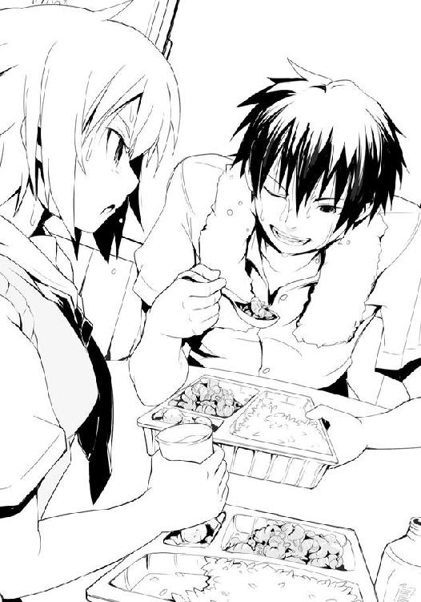
そこからは僕と先輩はただ食べるという行為に没頭していた。喋る間もほとんどなく、次から次へとレンゲを口に運ぶ。口にエビチリを入れると、熱さと辛さで舌が焼けたように「うっ！」となるものの、気がつくとそれがどこか快感へと変わっている。むしろ口の中を空けている時の方がヒリヒリとして辛い、そんな気すらした。
汗だくになりながら食べ続ける。ここまでくると二人で何かのスポーツでもしているかのようだ。自然と二人とも笑顔というか、笑いがこぼれ始める。何故だかわからないけれど、テンションが上がっていくのだ。
途中で麦茶のボトルが空になり、僕は冷蔵庫からさらにもう一本取り出す。その間に先輩は窓を開けて夜風を入れた。二人して全身が火照ってしょうがない。普段はクールな印象の先輩も、今夜ばかりは顔汗といった様子で、顎先からしたたりそうになる汗をタオルで拭っていた。僕もまたタオルで汗を拭いながら食べる。拭う。食べる。拭う。食べる、食べる。
......どれだけの水を飲み、どれだけの汗をかいたのか。僕たちは給水と脱水を繰り返しつつ、そのエビチリの味を堪能し、ついに食べ終えた。
ふーっ、と二人して深い息を吐き、僕らは椅子の背もたれに体をあずける。弁当の量もそれなりだったが、麦茶も相当飲んだのでかなりの満腹感だ。
「あ〜、ホント、かなりキますね。まだ汗も舌のヒリヒリも止まりませんよ」
「だろう？ 辛いのがダメな人間には食べさせられない。......よし、ではデザートといこう。多少時間は経ったが、まだ熱いかもしれないから気をつけろ」
先輩の忠告を受けつつ、僕は今宵の弁当の最後に残されたミニトマトサイズの半透明な団子を一つ、レンゲですくう。トローっとした透明なあんが糸を引く。
月明かりの中でそれは何とも面妖だ。ぬらぬらと怪しく月光を反射するとろみに包まれた団子は、白っぽく半透明で、うっすらと中の餡の姿を見せている。その様は......まるでいきなりの雨に濡れてしまった夏服の女性の胸元――そう、まさに透けブラのようなエロさが漂っていて男のロマンをかき立てるとともに、宝石のように綺麗で、僕の視線を釘付けにする。
僕は慎重にそれに口をつける。ぬるん、とまるで団子自体が意思を持っているかのように口の中へ。柔らかく、すべすべの団子の表面ととろみが合わさり、口の中をコロコロと転がった。とろみは淡く甘いだけでこれといった風味はなく、味わいのためというよりはこのぬるんっとした食感と団子の表面を乾燥させてしまわないためのものらしい。......いや、それだけじゃないようだ。団子が口の中を転がるととろみもまた口の中に広がり、辛さでやられていた口内が温かく、そして何より甘く優しく労られるように包まれていく。
団子を噛めば、中から温かなこしあん。素朴ながらも力強い甘みで口内に残留していた辛みが曖昧なものになる。
まるで温泉にでも入ったような、あぁ〜、という声が自然と漏れた。
「何か癒されるって感じです。そもそも弁当にご飯、汁物兼おかず、それにデザートが付くっていうのが凄く満足感を高めてくれますね」
「うむ。普通弁当に付くデザートの類はせいぜいオレンジ等のフルーツが一切れ程度だが、こういう一品料理として付けられると嬉しくなるな。特にコレのように電子レンジで温めることを考慮されたものだとさらに」
先輩もまたその透けブラ団子（命名：佐藤洋）を口にする。とろみが彼女の形の良い唇に付着し、やたらに婀娜っぽく見える。唇のそれを指先で撫でるように拭う様などたまらない。さらにはエビチリで紅潮し、汗ばんだ肌と合わさり......。僕はさりげなく、とても興奮した。
その四川、違う、視線に先輩が気がついたように、その綺麗な瞳を僕に向けてくる。ん？ と、首を傾げ、微笑んできたので、僕は何だか無駄に慌ててしまう。
「あっ、そ、そういえば争奪戦前に、先輩、何言おうとしたんですか？ ほら、嬉しくなっただけ、おまえも......って、何か言いかけていたじゃないですか」
あぁ、それか、と先輩はタオルで汗を拭うとニッコリと笑った。
「おまえも立派な狼になったということがわかって、嬉しく思えたんだ。良い狼は、必ず友と呼べる敵を持つ。いずれは立ちはだかる相手だとわかっていながら、互いに技を、心を、高め合っていく......そんな間柄の相手をな。いいものだ」
そんなことを言われたら僕の方が嬉しくなるというものだ。
僕は壁に掛けられている時計を見た。そろそろマッちゃんでの争奪戦も終わった頃だろうか。僕は先輩に一言告げて、席を立つ。よくよく考えてみれば僕はわざわざ来てくれた沢桔姉妹にきちんとお礼を言っていなかったことを思い出した。
「そうか。お、佐藤。背中が汗でビチャビチャじゃないか。もう夏も終わりだ。風邪をひくぞ」
「でも、まだ暖かいですから大丈夫ですよ」
「バカを言うな。もう、すぐに秋だ。......そう、そうだな、秋だな、もう。ということはそろそろあの弁当が出回る時期か」
先輩は顎に手を当て、部室の壁に貼ってあるカレンダーを見やった。何がです？ と尋ねると、先輩はカレンダーを見たまま言う。
「我々狼に秋の訪れを告げる弁当だ。一部を除き、秋の味覚と呼ばれるものは今や一年中食べられるが、それでもその時にしか食べられない弁当というものがある。......新米だ。もうそろそろその弁当が出回る。この辺りじゃジジ様の店が早く、それを証明するようにしばらくは黄金色の『新米』と書かれたシールが貼られる。そう、あとこの時期は毎年決まったように北海道産の秋鮭を使った弁当も出るな。あの柔らかくて脂の乗った鮭はどんな料理にしても硬くならず......いや、この話は後にしよう。確か、去年の文化祭で配られたシャツが何着か新品のままほったらかしになっているはずだ。あとでそれに着替えるといい。探しておこう」
早く行ってこい、というように彼女は手を振る。
僕は薄暗い廊下に出て、扉を閉めた。そして沢桔梗をコール。......何故か妹の方が出る。
「あれ？ えっと、今、大丈夫？」
『はい。もうお弁当も手に入れ、家に帰るところです。......えぇ、姉はその......今疲れているので代わりに私が。何かありましたか？』
鏡はそう言うものの、彼女の声の後ろからは『ど、どうなんですの!? やっぱり佐藤さんは、わたくしたちをクソの役にも立たないただのかしましい小娘どもと罵ってらっしゃるんですの!?』という梗の声が。どうやらそれが怖くて妹に取らせたらしい。
「あぁいや、その......なんて言うか。お礼を言うタイミングがなかったな、と思ってさ。ありがとう、来てくれて。嬉しかったし、助かったよ」
クスッと鏡の小さな笑い声。そして向こうで姉と何かを喋り出す。梗が携帯を持ったのか、彼女の声が大きくはっきりと聞こえてる。
『でも、鏡、それはもしかして遠回しな皮肉では!? で、でも......』
『姉さん、聞こえますよ。さぁ、いつものように上品で優雅なトークを』
『え、えぇ。......ゴホン。代わりましたわ。そんなお礼なんていいんですのよ、佐藤さん。わたくしたちが自分たちのために行ったようなものでもありますしね。それに氷結の魔女の本当の実力も感じられ、もう一度戦わなければならないと思いましたし、かの噂の魔導士との戦いも楽しみになりましたわ』
「ん？ 槍水先輩はともかく、何で魔導士と？」
『そのお二人は相当に強い。今回戦ってみて、そう実感できました。ですから、一度は挑戦してみたい。佐藤さんにだってわかるでしょう？』
「それはわかるんだけど......今回戦ってみて、って？」
『姉さんの喋りはわかりにくいんですよ。もう少し説明を』
『え、えぇそうですわね。......かつてわたくしたちが覗き見させていただいていた《ガブリエル・ラチェット》秘蔵データの中にダンドーと猟犬群のものもありまして、それによりますと、かつて彼らを打倒できた最少人数というのが二人。それが氷結の魔女と魔導士のコンビだと。しかし今回、わたくしたちが氷結の魔女と組んで戦っても、ダンドーと猟犬群を打倒するには至りませんでした。息の合う合わないもあるのでしょうが......それでも、わたくしたちより強いのではないか、そう思えるのです。......だから、楽しみなのですわ』
「そう......なんだ」
『あら？ 聞いていないんですの？ あ、佐藤さんは今年の春から狼ですものね。わたくしたちもしばらくスーパーを離れていたのでデータでしか知らないのですけど、氷結の魔女と魔導士がコンビを組めば狼をはじめ、あらゆる組織立った者たちでさえ対抗できぬ戦力だった、とそうありましたわ。昨今は組むことはなくなったようですけれどね』
そういえば、かつてアラシと遭遇した時、茶髪がそんなことを口にしていた。彼はもう誰とも組まないはず。そう言っていた。
僕は何故か、へー、と興味のないような声を出していた。もっと話を聞きたいような気もしたが、僕はその話題を切る。代わりに今日のマッちゃんの店の話を訊いた。
やはり二階堂は二人にボコボコにされていたらしい。アイツはひょっとしてドＭの変態なのかもしれない。今度そのネタでからかってやろう、と僕はざわつく胸の内で、そう決めた。
スーパーでの話の他に、最近の彼女の生徒会長としての仕事ぶりの話なんかを聞いていると、少し長くなった。鏡が「姉さん、そろそろ」と口を挟んでくる。
「うん。またどこかのスーパーで。今度は、僕が一人で倒してみせる」
『......それは、楽しみですわ』
梗の品の良い笑い声を聞いてから、僕は携帯を切った。
少しもやもやした気持ちがあったが、それが何なのか頭が勝手に考えようとするも、僕は首を振って打ち消した。考えてはいけないこと、余計なこと、そんな気がした。
気持ちを入れ替えるようにパシッと自分の頬を叩き、僕は部室に戻ろうと、その扉を開ける。すると月明かりの中に佇む先輩の後ろ姿が視界に飛び込んできた。彼女の普段からでさえ白いうなじやその細い両の肩が、月明かりの下ではまるで透き通っているかのようにさえ見え、息を呑むほどに綺......ん？ あれ？ いや、待て？ アレ？
「......せん、ぱい？」
月明かりで比較的明るい窓際、そこにいつものスクールベストと上着を脱いだ先輩が......ふり返る。何やら形の良い白い球体状の何かが......当然それは透けブラ団子とかいう見えそうで見えない、見えなそうで見えるという、男心くすぐる心憎い演出ではなく上着を完全に脱――
「なっ、バカ!! 表に出ていろ!!」
先輩が叫び、左腕で胸元を隠しつつ何かをぶん投げてくる。思わず先輩に見とれていた僕はかわすこともできずそれを顔面に喰らう。尻餅をついて倒れつつも慌てて僕は扉を閉めた。
「おまえはなんてタイミングで戻ってくるんだ!!」
す、すみません、と僕は何かを当てられた鼻を押さえながら扉越しに言った。それはビニール袋にＴシャツを包んだだけのもので、大して重くもない代物なのに鼻はかなり痛んだ。
僕は部室の扉に寄りかかるようにして、廊下に座り、頭を抱えた。
......今のは僕が悪いのだろうか？ いつものように扉を開けただけで......むしろ特に何も言わずに服を脱いでいた先輩が悪いような......ただ、梗との話が長くなってしまっていたから、体が冷えて寒かったのかもしれない。だから、その......うん、タイミングが悪かったのだ！ そう、悪いのは全てタイミングだ。なんだったら社会でもいい。みんな社会が悪いんだと言って学校の窓をバットで割って、盗んだバイクで走り出すべきなのだ。うん、うん......。
......さて、落ち着け。過ぎてしまったことは仕方ない。過去に戻る手段がない以上、起こってしまったことは素直に受け入れるしかないのだ。そう、受け入れるのだ......さぁ、ゆっくりでいい。ゆっくりと――今し方目撃した光景を思い出し、鮮明に脳内に保存するのだ！
さぁ、ゆっくり順序よく――チクショウ!! ダメだ、どう考えても先輩のうなじと肩、そして球体状の白い？ ものぐらいしか思い出せない!! というか、見えていないのだ。普段は綺麗な月だ、とか風流を感じつつ窓から眺めているわけだけど、つまるところ......部室の出入り口から見る窓際は、ほぼ逆光なのだ。だから、はっきりと見えたのは先輩の後頭部、うなじ、肩だけで、それ以外は何となくにしか見えていない。ふり返った際にも「白っぽい何かで包まれた球体状のもの」というぐらいにしか見えていない。シルエットだって......シャツのパックを投げる動作が素早すぎて、著莪の提唱した〝槍水仙美乳説〟を裏付けられるレベルではなかった。強いて言えば細く引き締まっていたウェストというか、腰から背中にかけてのラインが凄く綺麗で、そして振り向く際、僕にシャツを投げつける際に著莪から聞いて予想していたサイズよりも大きなそれがたゆん！ と思いのほか、豊かに揺れたような気がしたようなしないような......。
しまった。しまったぞ、何故僕はこの千載一遇のチャンスで暗視装置を用意していないのかっ!? 実家の押し入れには仕事場から持ち帰ってきたまま放り込んである親父様の不可思議な道具の中に確か頭に取り付ける単眼式のものがあったはずだというのに、何故僕は今それ装備していなかったのだ!!
......いや、手にしていたら、多分、先輩は一生僕を許してくれない、というか即警察に通報されてしまいそうだけど......それでもそう思わざるを得ない、男として！ 浅ましいと言われようが構わない！ 今この瞬間、僕は本気で悔しいと思っている！
っつぅか、先輩も迂闊にもほどがあるだろう！ 鍵のかかっていない扉一枚向こうに僕という男がいるのに、何も言わずに着替え始めるって......。
しばし、扉越しに先輩が着替えているような衣擦れが聞こえていたが、しばらくするとそれも聞こえなくなる。もう大丈夫なのかもしれないが、どうも、中に入るのにも、声をかけるのも、少し気が引けてしまう。
「......とりあえず、着替えるかな」
僕は先輩からぶん投げられたシャツをパックから取り出す。妙にポップなイラストが描かれ、『烏田高校文化祭』と力強い筆文字が印刷されたよくある学祭オリジナルのプリントシャツだ。僕は上着を脱ぎ、下に着ていたシャツも脱ぐ。上着のワイシャツはともかく、下のシャツは肌ともども湿っており、これでタオル代わりに体を拭いた。
「背中、拭きます」
「あ、悪い」
シャツを手渡すと、僕は廊下に座ったままうなだれた。先輩に嫌われただろうか。おいしいチャンスをみすみす見逃した上に嫌われるというこの体たらく......なんてこった。
「ムフ、ンフ、ムフン......ンフッ！」
「......何か豚みたいな鼻息が......」
というか、必死に笑いを堪えている時のような息が背中に......。
「あ、す、すみません！ ちょっと興奮して」
「いや、別にいいんだけ――」
あれ？ 何か、おかしいぞ。何か違和感が......。
僕は恐る恐るふり返ると......そこには眼鏡越しの目は一切笑っていないのに口の端だけが耳元まで裂けんばかりに吊り上げ、膝立ちで僕の背を拭く......白粉がっ!!
「貴様何をしている!!」
「え、え？ あたしはただ、佐藤さんの素敵な汗を拭ってあげようと。す、すみま――」
その化け物、白粉花は唐突におどおどといつもの調子に戻る。申し訳なさそうな顔をして、グーに握った両手で顔の下半分を隠すようにするのだが......当然その手には僕の汗が染み込んだシャツがあるわけで......。クンクンと、彼女の鼻先が独立した生き物のように動いた。
「せ、ん......ほぅ。やはりまだ瑞々しく、フレッシュな青い果実の香り。中高年の熟成された濃厚さとはいささか趣は違うが、この爽やかなライトボディの風味もまた――」
シャツを奪い返す。何だコイツ、寒気がするわ。
「あ、ダメです、そんな、もう少し！――あぅ！」
とりあえず彼女の背に、腕を回していつものように後ろ髪を引っぱっておく。コイツ、いつからここに......。というか、普通こういう部活棟で女の子に汗を拭いてもらうとかって、ある種運動系の部活に励む男たちの憧れだと僕は今まで信じていたのだけれど......どうもアレは人によるらしい。何も嬉しくない。寒気がして汗が一気に引いたけど、むしろ鳥肌が立った。
す、すみません......と頭を下げる白粉にとりあえず、いつから、そして何故にここにいるのかを訊いてみた。ラノ研の会議が少し早めに終わったので顔を出してみたとのこと。またどうも僕が先輩にシャツを投げつけられた時に五階にやってきたものの、何か悩んでいるようだったので声をかけていいのか迷っていたらいきなり脱ぎだして......ということらしい。
「僕が頭抱えている時は声をかけるか迷っていたのに、汗を拭き始めたら途端に直接手を出してくるというのはどういう了見か......」
「え？ そ、それはだって......せっかくの機会ですし、みすみすそういうチャンスを逃すのはもったいないっていうか、どうせなら、と。そ、それに別にあたしが脱がしたわけでもなくって、ただタイミングが......その、はい、タイミングが良か、違う、悪かったんです！」
......うっ。何だろう、微妙に違う気がしなくもないけど、先ほど僕が考えていたことと同じようなことを......。そうか、被害者側からすると相手が故意かどうかという問題じゃないんだな。......先輩にはやっぱりきちんと謝ろう、と僕は決めた。
シッシッ、と犬を追い払うようにして白粉を遠ざけると、僕はパックから学祭シャツを取り出し、着る。その横でビニールパックを受け取った白粉が汗の染み込んだ僕のシャツをそれに梱包してさも当然のように自分の鞄の中に収め――こいつは一体何をやってるんだ。奪い返す。あっ！ とか声を出して彼女は至極残念そうなため息を吐いて俯いた。
僕は部室の扉をノック。入っていいですか？ と尋ねるものの無反応。もう一度ノックし、再度確認してみるものの同じだ。そこで僕は白粉に状況を話し、彼女に扉を開けてもらって中を確認してもらう。......大丈夫そうだ。
学祭シャツに着替え、その上からスクールベストを羽織った先輩は窓際の席に座り、授業中に居眠りでもするかのように両腕を枕にして、円卓に突っ伏していた。とりあえずシャツ入りパックを僕の鞄の中に押し込んでから、彼女の隣まで行き、腰を九〇度に曲げて頭を下げた。すみません、と。数秒待ってから、頭を上げる。
先輩が頭を少し起こす。鼻から下は腕に隠れたまま。だが、それだけでも彼女の顔が赤いのがわかる。エビチリの辛さ故ではなさそうだ。彼女はギロリと横目で睨んでくるものの、いつもの針にでも刺されるような鋭い視線ではなく......なんていうか、拗ねたような睨みだ。それはどこか、小さな子どもが怒っているんだぞ、と喧嘩相手に視線で訴えるような無理やりの睨みというか......何か、顔の赤みと相まって、怒っているその姿自体が妙に可愛らしい。怒られているのが僕じゃなくて、そして先輩が小さな子であるのなら頭を撫でているところだ。
何か僕は気まずくなって先輩から視線をそらした。そこで初めて気がついたのだが、円卓には先ほどまであった僕らが食べた弁当容器は片づけられ、代わりにオセロの準備がしてあった。先輩が用意していたのだろう。
「本当にすみません。今後は気をつけます。......あと、その、言い訳みたいでアレなんですけど、向こうからだとこっちは逆光気味で、ほとんど何も見えてなかったんで......」
「......本当か？」
「え、えぇ。シルエットぐらいなもので......それに主に見えたのは月明かりで照らされていた透き通るように綺麗なうなじや肩、そしてしなやかなボディラインが――」
......途中で僕は自分が余計なことを言っていることに気がついた。
一気に顔を真っ赤にして、先輩はまた顔を伏せた。う〜っと妙な、うなり声のようなものが漏れ聞こえてくる。
いらん説明を付け加えてしまった己の迂闊さを悔やみつつ、僕は何度も謝った。すると先輩はトイレに行くと言って部室を出ていき、続けてこういう空気ではさすがに居心地が悪いのか、白粉もなんとなく帰っていった。
部室で一人、僕は先輩が用意していたオセロを眺めて彼女が帰ってくるのをただじっと、待った。......数分しか経っていないような気がするものの、なんだか、妙に長く感じる。僕はいつも先輩がしているように円卓に頬杖ついて、隣の席、先輩が座っていた席を何とはなしに眺め続けた。一人でいるとこの部室は、そしてこの円卓は酷く広く感じられて、嫌だった。
......違うな。この広さが嫌だというのではなく、きっと、月夜のこの部室に先輩がいないのが、嫌なのだ。あるはずのものがない、いるはずの人がいない。当たり前のそれが、当たり前でないというのが、嫌なのだ。落ち着かない。寂しい。不安になる。夏休み前に僕が寝込んだ時、隣に著莪がいなかったのと同じように。
開けたままになっている窓から緩い風が入ってきて、気のせいか、先輩がいつもつけている香水をかすかに鼻先に感じる。アレ？ と思うものの、香りは僕のワイシャツからだ。エビチリの香りで気がつかなかったが、肩を貸してもらっていた時に香りが移っていたらしい。
先輩、早く戻ってこないかな。隣の空いている席を見ながら、そう思う。
「......あぁ、そうか」
今、ようやく僕は梗から昔の先輩の話を聞いた時の胸のざわめきがわかったような気がした。あれは......寂しくて、悔しかったのではないだろうか？
今夜のダンドー戦を出すまでもなく僕では先輩と肩を並べるには値しない。先に行け、と言われてしまった。それは先輩からの厚意だが、しかし......あの時、僕は、本当は――。
僕は携帯でメールを送る。本当にごめんなさい、と。それからしばらくすると、わかった、という短い返信が来て、先輩も戻ってくる。彼女はいつものように僕の隣の席に座った。
「あの、本当に、その......すみません」
「......もういい。それに、何だ、特に......見えてなかったんだろう？」
はいっ！ と、弾かれたような声が思わず出てしまい、僕自身驚く。先輩はそこでようやくクスリと小さく、まだ顔に赤みを持たせたまま、笑ってくれる。
「だから、もういい。ただきちんと代償は払ってもらおう」
「......え？」
パチン、と先輩はオセロの駒を一枚、打つ。
「今夜は私が満足するまでやるぞ」
少しわざとらしく、不敵にフフンと笑ってみせる先輩の言葉に、僕は嬉しくなってまた弾かれたように「はいっ」と大きな声を出してしまう。
それから僕らは部室棟が閉められる零時まで、ずっとゲームをした。いつもなら適当な時間で先輩が言う、「そろそろ帰るか」の言葉はなく、徹底的に、やった。もちろんその多くが僕の敗北である。でも、それでも楽しかった。こうして先輩と遊べるのが、そして、彼女が少しずつ気分を持ち直してくれるのが、嬉しかった。
名うての二つ名持ちが跋扈する戦場において、槍水先輩からすれば僕はちっぽけな存在でしかない。けれど、今この部室では、そうじゃない。それもまた、嬉しかった。
いつの間にか電気が復旧しているのに気がついたのは、二人で部室棟を出てからだった。
そして、僕の鞄から汗が染み込んだシャツ入りパックがいつの間にかなくなっていることに気がついたのは寮に戻ってからだった。
その日、僕は震えて寝た。
３章 鬼灯ラン
「あたしと半額弁当......どっちが好き？」
広部蘭
０
「ったくもう！ サバイバルゲームの経験なんて恋愛映画でいつ使うのよ！」
汗染みの出来た迷彩服を着込んだ『彼女』はロケバスの最後部に座り、悪態をつく。窓から見えるのは直射日光の下、様々な国のミリタリー装備に身を包んだ男たちが弁当を手に昼食のバーベキューをしている風景。全員今撮影している映画の関係者だ。
『彼女』とお揃いの迷彩服と装備をした、マネージャーの女性が隣に座った。
「戦場で出会った民間軍事会社所属の若い二人が日本で再会して恋が始まる。だからそのシーンにリアルさを持たせるために監督の提案でこうしてサバイバルゲームで訓練を――」
「ただ経費で遊びたかっただけでしょ。原作のケータイ小説じゃ二人の出会いはライヴ会場でバイト中のはずじゃない。何でそれが内紛勃発した日本に変更になって殺し合いになるのよ。しかも何あのスケジュール、一〇分の銃撃戦に撮影期間の後半全部、一カ月もかけるって、あのバカントクはどこで一体何を間違えたの？ 人生？」
「あの監督がメガホン持った時かしら。でも別にいいのよ。宣伝用に派手なシーンが欲しかったみたいだし、ちょうどいい。広告には『日本最高峰の銃撃戦』とか謳い文句が躍るわ」
「......きちんとした映画がいい、って言ったのに。私は――」
「女優になりたい、でしょ。わかってる。でも今しばらくは頑張ってアイドルやりなさい。そうすればいずれ事務所もきちんと動くわ。......バーベキュー始まったようね。行きましょ」
「......いい。食べたくない」
やれやれ、という顔でマネージャーは溜息。彼女は取り置きしておいた弁当を一つ『彼女』に渡し、ダイエットのやり過ぎは禁物よ、とだけ言い残してバスを降りていった。
車内に一人残った『彼女』はその冷め切っている弁当に視線を落とし、ため息を吐く。
「......どこで何を間違えたかといえば......きっと......」
今の事務所からスカウトが来た時、渡りに船とばかりに乗ってしまった、あの小学生の時だろう。大手の芸能事務所だったこともあるし、何より芸能界に入れるということに眼がくらんだ。家族はもちろん、自分自身、これで自分は彼女以上になれると喜んだ。だが、その目論見は早々に意味のわからない方向へと進んでしまった。
元々古い家柄のせいもあってか、家族一同芸能界というと俳優・女優や、演歌のような硬派な歌手がほとんどだとばかり思っていたこともあり、わけのわからない衣装を着せられて、ただ笑顔を振りまくのが仕事だと言われた時は本当に意味がわからなかった。歌手の類かとも思ったが、その練習こそさせられても、基本的には使うことなどほとんどなかった。
アイドル、まさにその本来の意味らしく、偶像であり続けることが仕事だった。
おまけに一般人からはチヤホヤされても同業者にしてみればその他大勢の一人、しかもあんなキャラでいなければならないという苦痛。さらに、一度入ってしまえば『彼女』の性格上やめるにやめられない。周りに〝逃げた〟と思われるのだけは絶対に嫌だった。
自分はこんなことがしたかったんじゃない。こうなりたかったんじゃない。そう何度も思った。けれど上に行くには、勝っていくには、それしかないのだということをその都度思う。
芸名は花の名前にしよう、と事務所の社長が言い出した時に、せめてもの抵抗をした。かわいくない名前を、力強い名前を『彼女』は自らにつけた。
「......おいしくない」
受け取った弁当を口にした最初の感想。急いで蓋を閉めたせいか、ベチャリとしたご飯、たくあん、甘すぎる卵焼きに焦げ臭い唐揚げ、レトルト臭いミートボール、加工しやすいように機械で液状になるまで肉をこねくり回して作られた気持ち悪い食感のハンバーグ等々。平凡といえば平凡な、一体何弁当なのかイマイチよくわからない曖昧な弁当。全体的にも酷いが、中でも一番酷いのは白身魚のフライだった。何故かカレーの味がする。白身魚の味もフライとしての味わいも何もかもをぶち壊す、安っぽいカレーの風味が『彼女』の表情を曇らせる。
『彼女』にとって、この種の料理が一番嫌いだった。味もそうだがそれ以上に作り手の考えが嫌いだ。きちんと考えられて作られたものならまだしも、カレーパウダーをまぶしただけのもので「カレー味だからみんな好きだろう」的な安易な考えを感じるこの料理。『彼女』には受け入れがたいものだった。カレーが好きならカレーを食べる。お菓子とかならまだしも、食事として食べる料理に代理の味わいなど必要ない。何よりただでさえ酷い弁当の味、それがこの一品によって完全にトドメを刺されている。カレー味が無駄に強すぎて、ずっと口に匂いが残るのだ。安易でチープなくせに、いや、安易でチープであるが故にこびりつく紛い物。『彼女』にはそれが不愉快だった。一口齧っただけで嫌な風味が舌や喉を覆い、食欲が失せた。お腹が空いていないわけではなかったが食べたくなかった。
――まるで自分のよう。一瞬、そんな思いが頭の片隅に湧き、一層嫌な気分になった。
弁当に蓋をして隣の席に放ると、『彼女』は深いため息を吐く。無駄な味、無駄な料理、無駄な時間。無駄なことをしている。そんな気がしてまた焦燥感が募っていく。
では無駄ではないこととは、何？ 女優として働くこと？ 『彼女』にはわからない。そもそも本当に自分は女優なんてものになりたいのか。それすらわからない。今の妹系アイドルという肩書きを持ち続けるよりはマシ、という程度で嘯いているのではないだろうか。
『彼女』は首を振り、余計なことを振り払おうとする。本当は自分でも何をしたいのか、本当に目指すべきものはなんなのか、それをわかっていないんじゃないか。自分に不満があるから、今の自分が嫌だから、本当の自分はこんなんじゃないから、だから、ただ違う別の何かになりたいと口にしているだけで、もし女優になったとしてもそれもきっと本当に望んだものじゃないと口にし、また違うものになりたいと言い続けるのではないか。自分はそんな不満を永遠に抱き、ないものねだりばかりするわがままな子どものようにわめき続けるのではないか。そんな気がした。酷く惨めで、震えてきそうなほど怖かった。
「本当は......私は......」
言葉が続かず、口を閉ざしてコンと頭を窓につける。迷子になった幼子の気持ちに似ている。そう思ったが、実際にはそれより悪い。見つけるべき相手が、場所が、わからない。
外が少し騒がしい。頭を窓にくっつけたまま、目だけでそちらを見る。皆が弁当を手に肉を焼き、食べ、笑っている。『彼女』だけが、笑っていなかった。
窓にうっすらと映る自分の顔に消したはずのものが見えた。左目尻にある泣きぼくろ。どこか暗く、大人っぽい印象になるから、とマネージャーに言われて普段は化粧で隠しているのだが、汗を拭いた時に取れてしまったのだろう。
昔はこれを周りの人は自分のチャームポイントだと言ってくれた。小学校の時、中学校の時......。佐藤洋もその一人だった。大人っぽくて、素敵だと、そう言ってくれた。
佐藤洋。嫌いな石岡勇気と肩を並べる希代のバカ。昔からずっと一緒、何度となく告白され、その都度フってきた相手。今、この時期に自分が彼と再会したことは何か意味があるのだろうか。『彼女』は瞼を閉じる。暗闇の中に昔のままのバカっぽくて子供っぽい、彼がいる。
そして、今――彼に会いたいと思っている、自分がいた。
『彼女』は現在交換学生制度で烏田高校に通っている一年、広部蘭。すでに映画の主演が決まり、ゴールデンタイムの番組にも時折顔を出している、現在売り出し中の妹系アイドル。
人は彼女を――『鬼灯ラン』と呼んだ。
１
掃除当番を終えた僕は部室棟の五階にいた。ちょうどＨＰ同好会の部室の扉を開けようとしたところ、中から鞄を手にした白粉が出てくる。手に鞄を持っているところを見ると、帰宅かラノ研の方に行こうとしているのだろう。
あ、佐藤さん、とか細い声で彼女は僕にペコリと頭を下げる。
「今日は帰るの？ ......はっ！ おまえ、またそうやって油断させておきながら僕の隙をついて戻ってきて、こう、なんだ、汗染みの出来たシャツを......」
「え？ ち、違いますよ、今日は普通にその、帰るだけです。それにまた梅ちゃんに気を遣わせてしまうのも悪いですし......」
ションボリ、という感じで彼女は鞄を両手で胸に抱くようにして俯いてしまう。
先日、白粉にシャツを盗まれた僕は、翌朝一番で白梅にその事情を話していた。あの白梅のことだ、きっとうまくやってくれるに違いないと確信していたものの、これが的中する。どうも僕の電話の直後、白粉の寮に行って颯爽とパックされたシャツを奪取、そして白粉に、いくら小説のための資料とはいえ、こういう不健全なことだけはやめるようにと結構きつめに忠告したのだそうな。......なお付け加えると、その後シャツは丁重に焼却処分されたとか......。
ですから、と呟き、白粉がバッと顔を上げ、僕の目を見る。
「次はもっとうまくやります！――あぅ！」
素早く彼女の後ろ髪を引っぱる。本当に白梅の奴きちんと言ったのだろうか。反省の色がまったく見えないどころか最近どんどん露骨になってきているぞ、コイツ。
「で、今日はなんで帰るの？」
「あ、その......えぁっと、ちょっと......今日は執筆できるような空気じゃないというか、居心地が悪いというか......。あ、とりあえず、あたし今日は帰りますね。それでは、失礼します」
胸に鞄を抱いたまま一礼して、彼女は足早に去っていった。一体、どういうことなのだろう？ 先輩の機嫌でも悪いのか、それとも著莪でも来てたりするのだろうか。
僕は疑問の答えを得ようとするように、そっと、部室の扉を開けた。
そこでは女性が二人、カードゲームをしていた。一人はもちろん槍水先輩であり、もう一人は見たことがない女性。著莪ではない。槍水先輩のご友人だろうか？ 彼女の着ている烏田高校の制服のネクタイの色から察すると一年生なのだが......こんな美人、いたっけ？
彼女はセミロングの黒髪に少し大きすぎる四角い黒縁眼鏡をかけていた。一見、その大昔の銀行員がかけていたような眼鏡のせいで地味めというか野暮ったい印象に思えなくもないのだが、ちょっと目を凝らせばその人は眼鏡をファッションとしてかけているのだとわかる。どこか槍水先輩にも似た大人っぽい化粧をしていることもそうだが、それ以上に彼女の目からはどこか自信のようなものが見て取れるし、何よりその大きな眼鏡であるが故に、一目でレンズに度が入っていない伊達眼鏡だとわかるのだ。多分、ブランドフレームとかなのだろう。
ども〜、と、小声で挨拶をすると先輩は顔を向けて小さく頷き、眼鏡の女性は目だけで僕を見る。その彼女の瞳を見た瞬間、左目の所に見覚えのある懐かしいほくろを僕は見つけた。
「え、広部さん？ アレ？ でも......あれぇ？」
おかしい。おかしいぞ。彼女がさも当然のように部室にいるのもおかしいけど、何だ、彼女のあの格好は。一時間ぐらい前まではファンシーな化粧をし、ツインテールで、あのフリルがついたコスプレみたいな制服を着ていたはず......。
「何バカみたいな声出してんのよ、着替えたに決まってるでしょ。アレ、目立つから。......制服？ あぁ、これ？ こっちに来る時にもらってたの、でも普段は仕事の関係でいつものあんなのを着てるってだけ。この髪はカツラ、わかった？」
彼女は僕が知っている広部さんの声色で、吐き捨てるようにして言った。
僕はそんな彼女を見て懐かしさと、そして昔の彼女にときめいていた頃の気持ちを思い出す。そう、今の彼女の姿こそ小学校からずっと憧れていた僕の知っている広部さんだった。もちろん昔は今のような眼鏡なんてかけず、ましてやウィッグなんてものをつけていたりもしない。けれど纏っている雰囲気というか、大人びた視線や顔つき、十代とは思えないどこか憂いのあるような瞳と泣きぼくろ......それらが昔の彼女そのままだった。あ、そうか。それで以前この部室で彼女に違和感というか、何かが足りないと思ったのか。多分、広部さんには当然のようしてあるはずのほくろがない、それで、だ。
二人はどうやらポーカーをやっているらしかった。緊張感からするに今から交ざるわけにもいかなさそうなので、僕は棚に鞄を置き、広部さんの隣の席に座る。その刹那、バンッと円卓を叩く音。勝負が決したらしい。ふり返って見てみると先輩が悔しげに歯を喰いしばり、バカな......、と彼女らしくない台詞を口にする。......まさか、あの槍水先輩が、負けた？
「槍水先輩、だっけ？ あなたは確かにそこそこ強いけど、それだけよ。戦いっていうのは、戦略・戦術性、力、技術......そういった様々な要素がある。おそらくその多くがあなたの方が上。でも一つ重要な要素だけ、私が圧倒的に上回っているの。努力では決してどうにもならないもの、それは何だと思う？」
先輩は睨みつけるような目で見たまま、声を発しなかった。
「それはね、運よ。私には運があるの。人がどれだけ努力しても手に入らないようなものが、私の場合向こうの方から勝手に転がり込んでくる。今回のカードのようにね。お金は回ってくるし、あなたみたいに気合い入れて化粧しなくても男は寄ってくる。いろんな機会だって」
余裕たっぷりに、見下すように、小馬鹿にするように広部さんが言った。それに対し、先輩はフンと鼻で笑い、腕を組んで椅子に深く座り直す。
「あの格好や口調もそうやって回ってきたのか？」
途端にピシッと空気が強ばり、二人は睨み合う。......何故、たかだか遊びのポーカーでこんな空気に......。少なくとも僕の知っている二人はそれほど他人に対して強く当たるような性格じゃないはずだし......単にウマが合わないというヤツなのだろうか。
白粉が出ていった理由がよくわかる。この雰囲気ではこうして座っているだけで辛い。
「えぇ、そうよ。一生あんな格好していると思う？ 今だけに決まってるじゃない。槍水先輩はどう？ 流行じゃないそんな格好しているけれど、それは何のためかしら？」
「別に、深い理由はない。単なる好みだ」
広部さんがスッと先輩に手を伸ばし、指先でワイルドに整えられている髪先を撫でる。
「美人に生まれないと大変ね。こうやって個性をつけなきゃ埋もれちゃうものね」
「あ、いや、先輩は普通に美人だと思――」
「洋、黙るか、廊下に出てアババババって言ってるか、どっちかにして」
居辛い......しかし、ここで出ていくのは何かダメな気がする。僕はおとなしく口を閉ざし、先輩の様子を見る。彼女はあからさまにムッとしているが、傷ついているという様子はない。
「なるほど、それでおまえはあの姿をしているというわけか」
落ち着いた声ではあるが、かなりキツイ皮肉だ。今度は広部さんがムッとする番だった。
「かもしれないわね。おかげで烏田に来るようになってからというもの、うるさくてたまらないわ。男子はもちろん、女子まで寄ってくる。アイドルと友達になった、とでも自慢したいんでしょうね。ホントうるさい。まだ一週間だってのに何人に告白されたと思う？ 向こうは当たって砕けろで、宝くじ程度のつもりかもしれないけど、ホント迷惑で......」
「単に物珍しいだけだろう。すぐに飽きる。今のようにちやほやされていたいというのなら次は着ぐるみでも着てくるといい」
「まるで私が不細工だとでも言いたげね。あなたもどう？ 黒系のゴスロリとか似合いそう」
「別にそんなことを言うつもりはない。何より美の基準など人それぞれだ。ブルドッグを愛くるしいと思う者もいれば、セントバーナードをカッコイイという者もいる」
「ねぇ、先輩。ひょっとしてあなた、自分がアタシより美人だとか思っているんじゃない？」
「いや......別にそんなことは」
「本当？ じゃ、私よりブサイクってことね。言ってよ、自分は広部蘭よりブサイクだって」
「......くだらない。何より言っただろう、ブルドッグを――」
「えぇ、そうね。その通りね。じゃ、こうしましょう。ちょうどいいところに男子が一人いるわ。しかもそれは多分あなたのことも、そして私のこともよく知っている。彼の基準でどちらがいいかを決めてもらいましょう。ねぇ、洋、どっちが不細工？ 曖昧な返答はダメ」
広部さんは自信ありげな目で、先輩は困惑した目で、僕を見てくる。
おかしい、なんでいきなりこんなカオスな二者択一を迫られているのだろう。しかも普通こういう時ってのは『私と彼女、どっちが好きなの？』というような、複数人と同時に関係を持っているハーレムを形成する男にだけ問いかけられる、ある種の夢のようなものだ。だが......何か、それとは微妙に違う。どちらを選んでも角が立つくせに、得なことは何もない。ハイリスク・ノーリターン。内本君と愉快な仲間たちにしか望まれない二択だ。......うぅ、せめてどちらかを選んだらそっちと付き合えたりすればまだ......いやそれでも悩むな。
「広部、もうやめろ。佐藤が困っている。それにこんなことをしたって時間の無駄だ」
「あら？ どうしたの。自信なくなっちゃった？ 怖くなったのかな、ぅん？」
バカらしい、と先輩は一蹴するがその顔は苦々しく歪む。逆に広部さんは笑っていた。
「オッケー、でもこのまま曖昧にしておくとお互いにスッキリしない、だから私が身を引く。私の負けでいい。だから、言って。アイドルの私、広部蘭より自分の方が美人だって」
......とてつもなく嫌みなやり方だ。流れから考えれば言っても言わなくても広部さんにいいように扱われるだろう。言えばアイドルより綺麗なんでしょ、と突っかかってくるだろうし、言わなければまたブサイク呼ばわりされるであろうことは火を見るより明らかだ。先輩もそれがわかっているのか、らしくもなく顔を赤らめ、広部さんを睨みつけている。
「言わないんだったら、洋に決めてもらう？ どっちがいい？」
それを聞いた先輩が視線を広部さんから外し、言いにくそうに口ごもりながら声を発した。
「ほ......鬼灯ランより......私の方が――」
僕は広部さんの名を呼び、彼女の肩に手を置く。やめさせようと思った。多少強引にでもそのまま部室の外に連れ出してしまおう、そう思った。......思ったのだけど、ちょっと遅かった。先輩がバンっと円卓を叩いて立ち上がり、一気に言う。
「――わ、私の妹の方が美人だ!!」
僕と広部さんは先輩を見上げ、目をまん丸くして呆気にとられた。いきなり何を言い出したのかよく理解できずにいると、先輩は携帯を取り出し、何やら素早く操作する。
「待っていろ、今、証拠を見せてやる。かわいい自慢の妹の写真だ」
僕は脱力して俯き、硬く瞼を閉じた。先輩、それはさすがにちょっと......違うと思います。どっちが、という話に第三の選択肢を持ってくるのはさすがに無理が......。
まぁさっきの先輩の話じゃないけれど、どの種類の犬が一番見た目が良いかという問題になった場合それを決めるのは大層難しい。しかし回答者が愛犬家であるのなら一発で答えが出る。自分の愛犬が一番良い、だ。先輩の場合もより美しい人となった場合、家族としての補正が入って妹が一番だと純粋に思ったのかもしれない。......明らかに論点がズレてるけど。
アホらし。広部さんはそう言い捨てると席を立ち、棚にあったボストンバッグを手に取る。
「お、おい、待てどこに行く、まだ妹の写真を......今一番かわいく撮れているのを選ん――」
「もういいわ、どうでも。洋、この町、案内して。......ほら、早く」
「え？ あ、いや、あの......この後部活が......」
「はぁ？ 何、洋、私に逆らうの？ そんな生意気言えるわけ？ なんでも言うこと聞くって約束してくれたのは嘘だったの？」
......うっ、それを持ち出されると辛い。後悔はしていないのだけれど、今はちょっと......。
「......すみません、先輩。僕は行かざるを得ないようです。今日はこれで」
あ、あぁ。と、何か毒気を抜かれたような顔で先輩は携帯を手にしたまま曖昧に頷く。僕は鞄を手にし、広部さんを追いかけるようにして部室をあとにした。
●
「それで今夜はどうします？ まだ壇堂先生は......主将？」
剣道場内では一年と二年での試合形式での練習が行われていた。三年は審判だ。
山原は腕を組み、試合の動きを眺めつつしばらく無言を貫いた。考えるべきことが多い。ダンドー率いる猟犬群が負けた。久々のことだ。とはいえ、誰それに負けたというより単に大猪に薙ぎ払われたという方が正しいだろう。だが、今の状況を考えるのなら負けていた方が立て直しはしやすかったに違いない。壇堂は今、完全にダウンしていた。若く見えるが、彼とてもう四〇なのだ。回復は山原たちのようにはいかない。しかもやったのが大猪の装備したタンク、それも不意打ちであったことでダメージは深刻である。剣道部の指導にすら来ずに、宿直室で寝ているという有様だ。回復には今しばらくの時が必要だろう。
山原の目が鋭く、暗くなる。ダンドーが戦場に復帰するまで自分たちは、いや、自分は負けたままでいなければならないのか。許し難かった。勝利への渇望が胸の奥底から湧いてくる。自分が率いた猟犬群では佐藤に二度負けている。そしてダンドーが率いた前回は大猪にかき回されたわけだが、結果的に弁当の奪取からすれば佐藤、そして槍水......ＨＰ部、いや、ＨＰ同好会の連中に負けたといえる。許し難い事態だ。かの最強、魔導士こと金城優を筆頭として、何度奴らは自分の前に立ち塞がるというのか。倒したい。勝ちたい。負けを払拭したい。しかし、その方法が見つからない。
「主将、その目をやめてください。二年のオレたちはともかく、一年がビビります」
「今動ける猟犬群はオレたちを含めて何人いる？」
後輩の言葉を完全に無視して山原は訊いてきたため、彼は少し鼻白んだようだった。
「......実質、六人。大猪の攻撃に巻き込まれた二人は出られないことはないですが、ヘタに交じるといざという時に足手まといになるので、控えた方が」
「六、か。名うてに当たらない限りはいけるな」
「主将の指揮で出る気ですか？ 普通にやるならともかく、当たる気ですよね、あの連中に。ヘタをすればあの佐藤にさえ崩されかねない」
「......何もしないよりはいい。魔女にさえ当たらなければ、なんとかなる。ヘタはしない」
ですが、と口にした猟犬を山原は鋭く暗い目のままで、見据える。猟犬は黙った。山原は腕組みを解き、彼の横を通り過ぎる。
「従えよ。今まで通り。......オレはまだボス犬だ」
山原は言い残すと剣道場から出て、トイレに入った。手洗い場で水を出し、鏡に映った己の顔を見る。相変わらず嫌な目をしている。
「何もしないよりはいい？ 本当にそう思っているのか、オレは。何もしない方が――」
山原は口から漏れる言葉を遮るように、水を両手ですくい、顔を洗った。
あの猟犬が言ったように、自分は六匹だけの猟犬群でＨＰ同好会の連中に当たろうとしている。槍水仙にぶつからなければどうにかなる。つまりは、あの魔女を避けた上でＨＰ同好会が頻繁に出入りするアブラ神とジジ様の店に向かい、そこの弁当を奪取する。ＨＰ同好会の本陣には当たらず、末端をつつく......ゲリラ戦と似たようなものだ
しかし、と、山原は自身のその考えそのものに疑問を持つ。ゲリラ戦とは聞こえはいいが、つまりは単なる嫌がらせではないのか。自分の胸の中にある想いは、負けたくない、その一点。嫌がらせ程度ではこの渇望は満たされないだろう。だが、そうでもしていない限りおとなしくダンドーの回復を待てそうになかった。......最初に佐藤に負けてしまった時、あれは自分の油断とちょっとした偶然でしかなく、次に当たった時には叩き潰してやれる自信があった。だから、負けた後もそのうちぶつかるだろうと思ってほったらかしていたが、前々回は違う。もはや佐藤洋は確実に狼として腕を上げ、かつてのＨＰ部メンバーと遜色のない実力を見せ始めている。しかも一年生で、だ。槍水仙以来の速さでの台頭である。
「......オレは、一体何を恐れている......？」
猟犬群の前に何度ともなく立ち塞がってきたＨＰ部か、牙を覗かせ始めた佐藤洋か、それとも......かつて山原の猟犬群への誘いを拒絶し、敗北と付き合っていく道を選びて最強の名を手にした狼、魔導士こと金城優か。
「......違うな。違うよな。わかってる」
恐れているのはそれらどれもであり、どれでもなかった。自分が恐れているもの、それは......負けを受け入れてしまうこと。恥も外聞も捨てダンドーの犬となった。勝つために、喰うために、猟犬となった。負けは嫌いだ。だから、そうした。だが......。
圧倒的に強い相手だというのならともかく手を伸ばせば届く、状況如何では勝てる、そんな相手に負けたままでいることが許せない。それが伸びしろのある奴ならなおさらだ。
どんな手段を用いてでも勝ちたい。仕方がないとして負けを受け入れてしまうことは山原の性情が許しはしない。己が己でなくなってしまう。あくまでも勝たなくてはならないのだ。
「......勝つさ、勝ってやるさ。必ず、必ずだ。もう時間がない」
夏休みが明け、新米、そして秋の味覚の弁当が並び始める時期はダンドーと猟犬群の世代交代の時期だった。だとすればもういつ自分は猟犬群を去ることになるのかわからない。つまり、勝てるはずの相手に敗北したまま、実質的にスーパーマーケットを去ることになる。
群れから離れては生きていけない。それが勝つために猟犬として首輪を手に入れた代償だ。無論、徐々に野に己を慣らしていくことも可能なはずだが、これまでの絶対的ともいえる高勝率を味わった以上、今更敗北に塗れることなど山原の性格からいっても考えられなかった。
「......勝つんだ。必ず、勝つんだ」
たとえそれで猟犬群をすり潰してしまうのだとしても......それでもなお、勝利を自分は欲している。山原はそれに気がついていた。
◯
僕と広部さんは学校から少し離れた場所にあるファミレスへ入った。変装しているとはいえ、広部さんはちょっと知れた顔だ。閑静なカフェより賑やかなファミレスの方がうまく紛れるだろう。
僕らはドリンクバーを注文。二杯のコーヒーを用意し、僕は気になっていることを尋ねた。
「さっきのアレ、何であんな挑発するようなこと、先輩に言ったの？」
んー、別に。広部さんはテーブルに肘をついて、その上に顎を置き、店内を珍しそうに見回しつつそっけなく言った。僕らの地元にはファミレスという文明開化の訪れなどほど遠く、ハンバーグ専門店と看板にあるくせにメニューにはナチュラルにカツ丼が存在していたりする怪しげな家族経営レストランしかなかったし、アイドルと兼業している彼女には、都会に出た今もなお、珍しい場所なのかもしれない。
あ、そうそう。珍しいと言えば、広部さんがあんなふうに人の神経を逆なでするようなことを言うこと自体がまた珍しかった。いつも彼女はそっけないというか、大人びているというか、一歩離れたところにいる感じで感情的な物言いはあまりしない人だ。もちろんそうじゃない時もある。そういうドライな面の他に、一度話し込んでしまうと普段の彼女とは違うお喋りな一面を見せてくれたりもする。美貌と相まってそのギャップが、大して彼女を知らないような連中でさえ虜にさせる。外見と違い、さすがに内面までは変わっていないと思うのだけれど。
僕がしばらく見つめていると、広部さんはため息を漏らし、コーヒーを口にする。そして急に優しげな顔をした。悪戯をした子どもを許すような、そんな顔だった。
「最後のポーカーはね、ちょっとイカサマしたのよ。多分、槍水は気づいた、いえ、気づきかけた、疑いを持った、ってとこかしら。だから話をそらすために、あーしたのよ。......え？ どうしてって、洋が来るまでずっと負けてたから。当然、一泡吹かせたくなるでしょ」
「あぁ、あの人、テーブルゲームやカードゲームがやたら強いから。......そうか、良かった。ちょっとやり過ぎな気もするけど......あ、いや、何か、あの姿もあったし、広部さんが思いっきり変わっちゃったのかな、と少し心配してて」
「なんで心配されなきゃなんないのよ。っつぅかね、あの姿だって仕事でやってるのよ。
......あ、そうだ。参考意見が欲しいんだけど、洋としてはアレどう思う？ もうちょいバカっぽい感じの方がいいのかな？ 例えば席に着く寸前に転ぶとか」
「......僕としては普段の広部さんの方が......その、好――」
「告白は間に合っているので、却下。しかも聞き飽きたよ、洋のそのカッコつけた台詞。それなら素直に美人な私が好きだって言ってくれた方が嬉しいわ」
――先読みされた。さすがは広部さん。......でも、格好つけたわけじゃないんだけどなぁ。
「もしくは、あたしの魅力にもう萌え死ぬ〜、とか、言ったら......ありがとー、あたしも大好きだよ......とかぐらい言ってあげたのに」
彼女は途中、声色を変え、自信たっぷりに微笑む。
「......キャラ変えるのは結構メンドクサイけどね。ま、仕事仕事。これも宣伝なの、映画の」
彼女は苦笑する。その顔がどこか自虐的に見えるのは何故だろう？
「何かそれだと嘘ついて、相手を騙しているようにも思えるけど......」
「女はしたたかなぐらいがちょうどいいのよ。本当は洋だって好きなくせに」
ニィっとイタズラ心を持ったような笑みを彼女を浮かべていた。
「あっそうそう、忘れるところだった！ ねぇ、聞いてよ、槍水さ、あのあそこの部活動は何をしているのかって訊いたらさ――！」
広部さんはパチンと指を鳴らすと、僕が応じる間もなく少し前のめりになって、笑いながらＨＰ同好会の活動内容について語り出す。その表情はまるで子どもが得意げに自慢話をする時のように輝いていて、先ほどまでの彼女とはまるで別人のような明るさを覚える。
やはり、あの姿は仕事で、広部さん本人は昔から変わっていない。僕は少しホッとしつつホットコーヒーを啜り、顔を隠す。本当なら僕も笑顔になるところだが、話の内容が......その、ね。昔とは違う意味で鼓動が高鳴り、全身に冷や汗がじわりと出た。
「閉店間際のスーパーで半額弁当を奪取するのが活動だって真顔で言うのよ。信じられる？ ジョークにしたって突飛すぎて意味がわからないし、嘘つくにしたってもう少し――」
「それは......マジ」
「え？ またぁ。どうせＨＰとか作る部なんでしょ。さすがにわかるって。途中で来た小動物みたいな娘の鞄の中にＰＣあったしね。槍水はそんな感じじゃないけど、あの娘はそういうのが好きそうだった。そうなんでしょ？ ホラ、正直に言いなさいよ」
しばし僕は真剣な眼差しで広部さんと見つめ合う。最初は小振りな胸元が微妙に強調されるやや前のめりの姿勢で微笑んでいた広部さんも、徐々に僕が本気だと察してくれたようで、背もたれに体を預けると、視線を僕から外してコーヒーを口に運んだ。
僕は一応、簡単に部活動......というか、スーパーマーケットという戦いの野について、そして狼という尊き存在について話す。するとどうだ、見る見る明るかった彼女の表情が曇っていき、まるで生ゴミを見るような目で僕を見てくるじゃないか。惚れられたのかもしれない。
「なんて言うんだろ。......無様？」
僕は広部さんの心ない言葉に、前のめりに机に突っ伏す。他の相手ならいざ知らず、広部さんに面と向かってそう言われるとちょっとショックだった。
「いやね、そりゃ、最初は僕もおかしいとは思っていたけれど......でも、一度全てを知ってしまえば......その、なんて言うかな、凄いんだよ？」
「洋とか勇気とか、そこら辺だけならわからないでもないんだけど......あの槍水がやっている姿まで考えちゃうと......ちょっとなぁ」
僕は顔を上げ、もう少し詳しく話してあげるも、彼女の軽蔑するような目は変わらない。段々と言葉を発するのが辛くなってきて、最終的に僕は口を閉じざるを得ない。
相変わらずなんだ、と彼女はあきれるように笑い、店員を呼び出すボタンを押した。
「そもそもあたし、お弁当ってあんまり好きじゃないんだよね」
でも、と僕は口にするが、いつの間にか彼女が手にしていたメニュー表で軽く叩かれる。
「そんなんじゃずっとろくなもん食べてなかったんでしょ。しょうがないわね。ほら、好きなの食べていいから。大丈夫、奢るって。仕事まで時間あるんだ、ちょっと話し相手になってよ」
僕たちは食事中はもちろん、食後の今でもなお止めどもなく喋り続けていた。
例えばさ、と広部さんは僕を上目遣いで見るようにして、ニィっと笑う。いわゆる小悪魔的な笑みというやつだ。彼女は一昔前に一世を風靡した四人組のグループの名を述べる。それまで僕らの知らない――といっても、そもそも詳しくないのだけど――芸能界の裏話を教えてくれていたのだが、予想外の名前が出てきた。著莪パパが確かＣＤとか集めていたはずだ。
「覚えてる？ あれの所属する事務所の社長さんの話の一つに、あの中学生四人を一週間でコンプリートしたっていうのがあって――」
僕の全身に嫌な汗が滲み出る。コンプリートって......えっと......あ、きっとトレーディングカードとか、限定版ＣＤとかの話に違いない!! そ、そうだ、そうに違いない!!
「一応言っておくけど、カードとかＣＤの話じゃないから」
......バカな、そんなはずあるか。まさか、そんな、だって、中学生四人を......？ いや、落ち着け、これはきっと広部さんの類い希なる嘘に違いない。いやぁ、さすがは広部さんだ。
「おーい、遠い目して現実から逃げないでー」
広部さんはわざとらしく大きく振りかぶってゆっくりとしたパンチを繰り出してくる。しかし、物思いにふける僕はよけきれずに頬に喰らう。その後、グリグリと拳を押しつけられた。
「だ、だって......そんな、そんなバカなことが......」
「そういうもんなの。あそこは」
「......はっ!? ってことは、まさか......いや、でも、え？ あの、もしかして......？」
「私？ ......あ、うん。少しだけ、ね。テレビ番組のプロデューサーで、レギュラーくれるっていうから。まぁ渋めの人で、結構優しかったし、いいかなって」
照れるような、苦笑するような、そんな笑顔で彼女は俯く。
僕はその言葉、その姿に自分の中にあった何か大切なものが崩れ落ちるような絶望感を覚える。もう、目の前の少女......いや、女性は広部さんでありながら、もう僕の知っている広部さんではなくなってしまっているのだ。
あまりの衝撃に僕は頭の中で現実逃避的な妄想を展開する。今、彼女を攫い、そんな汚れた職から遠ざけ、二人で慎ましいけれど幸せな生活を......大丈夫、お金なら高校やめて、僕が働けばいい。このご時世とはいえ、僕のこの体力と親父のコネがあれば自衛隊関係にいくらでも拾ってもらえるはずだ。祖父の代から続けて三世代揃って自衛隊に就職というのだから、多分身辺調査とかも問題ないだろうし、何より――。
「あれ？ 洋、ちょっと、何決意を固めたみたいな目して泣きそうになってんの、ストップ」
えぇい待ってはおれぬ！ 一刻も早く彼女を我が物とし、長年の夢の成就、そして肉欲の赴くままに彼女の......アレ？ 何か違うぞ？
広部さんは何故か声を出して笑った。
「うーそ。嘘だから、ね？ ほら、泣くのなし。洋ってホント相変わらず騙されやすいんだから、もう勘弁してよね」
「......嘘だ。そんな優しい言葉、嘘に決まってる。現実はいつだって僕たちを苦しめるんだ」
「あはは、ないない。私んトコは社長女だし、私には枕営業はするな、って言われているの。安心した？」
目の前の女性、いや、少女の言葉で僕の中で崩れていった何かが瞬時に再構成され、代わりに僕の全身に漲っていたいささか黒めの欲望が消え去っていった。
「......安心というか、なんというか。そもそもそういう裏の部分は何か、ちょっと......うん」
「大きくお金が動いて、人の夢が集まる場所ってのはどこもヤクザな商売になるものなの。お金のため、夢のため、何が何でもって人が大勢いる。中には絶対無理だって自分でもわかっているのに、諦めきれずに全てを擲ってまでもしがみつこうとする人さえいる。......そう、そういう人もいる。笑っちゃうぐらい、バカみたいにね」
クスリ、と広部さんはどこか皮肉な笑みで言う。面白いでしょ？ というような目で見てくるが、あまり笑えなかった。苦笑いみたいになった。僕が笑うには話が少し重い。
「でも、そういう人ってのはやっぱり努力というか、覚悟というか、そういうのがあるからいずれは夢を叶えさせたり......？」
どうかしらね、と携帯を取り出しつつ、彼女は話を一旦打ち切ると、あ、と言葉を漏らす。そろそろ仕事に行く時間だという。ファミレスの外を見やれば、すでに暗く、僕もまた携帯を取り出して確認すると八時を回っていた。ハンバーグセットを食べた時間を除いても、かなり長く喋っていたらしい。......僕からするとあっという間だった気がするのだけれど、果たして彼女にとってはどうだったのだろう？
行くね、と、広部さんは伝票を手にすると素早く先に出ていった。著莪が相手なら確実に伝票はさりげなくも当たり前のように残っているはずだが、さすがは広部さん。彼女は店の外に出た後も窓越しに僕に手を振ってくれる。その後は、タクシーを使って姿を消した。
ファミレスの喧噪の中、一人になった僕は不思議な気分を味わう。何だろう、何だか、いつもとは違う時間を送った、そんな気がする。それは当然といえば当然なのだが、夢から目覚めきれない、早朝の寝ぼけ眼の気分に似ていた。何を喋ったのか、ハンバーグがどんな味だったのか、イマイチよく覚えていない。ただ、久しぶりの広部さんの笑顔だけはいっぱい見た。
特に最後の強烈な嘘と、その後の笑顔。その記憶だけは、鮮明だった。
一人残った僕はそれから少ししてから店を出た。一応、ハンバーグを食べることになった段階で槍水先輩には『今晩は無理そうです』とメールは送っていたものの、部室に行ってみることにした。八時は過ぎているのでアブラ神の半値印証時刻は終わっているはずだ。
暗い夜道を歩き、学校の敷地内、そして部室棟の前へと至る。
その時、ガサリガサリというレジ袋の音が聞こえ、そちらを見やる。先輩かと思ったものの、そこにいたのは山原、そして猟犬群だった。六人中四人が弁当が入っていると思しきレジ袋を持っていた。彼らは一様に僕を見てくるが、お互いに声を発することはない。山原の蛇のような目だけが、暗い部室棟の前であっても、鈍く光って見える。
通り過ぎた彼らの後ろ姿に、僕はボソリと呟く。
「まぁ、当然か。二度も三度も邪魔していれば......」
「だが、おまえ一人で倒したってわけじゃないだろ」
男の声。見やれば、坊主頭の男と顎髭の男、そして二人に腕を掴まれているグッタリとした白粉の三人がいるのだが......はっきりいってその姿は捕縛されたエイリアンのようだった。
おいワン公、届けモンだ、そう言われて意識朦朧の白粉を渡される。顎髭たちが白粉から手を離すと、その場に座り込んでしまいそうになったので、慌てて抱き留める。このヘロヘロな様子を見るとどうやら派手にやられたらしい。また例の趣味かとも思ったが、違うようだ。
「猟犬群にちょっとな。放っておいても良かったんだが、店内をフラフラと歩いて商品にぶつかりそうになってたんでしょうがないから連れてきた」
「途中、誘拐で通報されるんじゃないかって、少し不安だったぜ」
「......お手数かけました」
「なぁに、気にするんなって。そういやおまえは今日どうしたんだ？ 狙いはジジ様の店か？」
「いえ、僕は今日は他で食事を」
ちらりと顎髭は横の坊主を見る。坊主もまた顎髭に視線を向け、頷いた。顎髭が口を開く。
「今日はともかく明日以降猟犬群に気をつけろ。今までの奴らと動きが違うぞ。おまえがさっき言ったように、もしかしたら私怨を込めている気配がある。......今日、その白粉がやられる時、山原の奴が弁当ではなく白粉を攻撃することを優先した気がしなくもない」
顎髭の曖昧な言葉に、こちらの気持ちを察したらしい坊主が続ける。
「さっきの争奪戦の時だ。山原の奴、猟犬群の損害を無視したような運用の仕方をしやがった。犬の半数が死んでもいいと言うかのような、無茶苦茶なやり方だ。おまけに意図的にそのチビを狙ったようにも見えた。が、ただ邪魔だったからぶっ飛ばした、というようにも見えた。どちらにでも取れる状況だ。普段なら何も思わなかったかもしれないが、最近のおまえたちのことと、あの山原を見ると、そういうふうに思える。ただの杞憂だといいんだが」
山原のあの目を見たばかりの今、僕には坊主の話はとても杞憂だろうとは思えなかった。
ま、頭の片隅にでも覚えておいてくれや、と顎髭たちは言い残し、軽く手を挙げて二人は去っていく。方向からするにジジ様の店だろう。
僕は意識があるんだかないんだかよくわからない白粉を支えつつ、彼女とともに五階の部室へ。扉を開けると、大きな窓から覗く月夜をバックに、細いシルエットが見える。
「その様子じゃ、白粉はダメだったらしいな」
先輩は月を見上げたまま、つまりは僕らに背中を見せているままで、そう言った。窓から僕らの様子を見下ろしていたのかもしれないし、もしかしたらレジ袋の音がしないことからそう判断したのかもしれない。僕は白粉を椅子に座らせがてら、今し方顎髭たちから伝え聞いたことを先輩に話す。すると、ふり返った彼女は表情を曇らせた。
「山原か。昔から蛇のように執念深い奴だったな。以前はしばらくすれば突っかかってくることはなくなったんだが」
「昔、というと？」
「私がＨＰ部に来て少し経ったぐらいだ。おまえと同じで、猟犬群への誘いがあり、それを断ると何故か狙うようにして奴は私の前に幾度も現れた。......いや、猟犬群ではなく、山原一人が、だ。あの頃はまだ他の人間がボス犬だった」
「それは、何故なんですかね？」
「前の部長の影響だろうな。昔、それこそ二人が犬と狼の境目にいた時は相棒のような間柄だったと聞いている。一人は狼として駆け上り、一人は犬に堕ち、溝渠が生まれた。私を引き込むことで多分、嫌がらせをしたかったのかもしれない。......彼は勝ちに拘る性格だからな。
前部長が言っていた。山原は勝敗にばかり拘りすぎて、勝負そのものの味わいを理解できなかった。それ故に結局、狩りはしても、本当の血の味を知らない狩猟犬になったのだ、と」
前の部長......魔導士、か。確か以前、山原は彼と親友だとか言っていたが、今にして思えば、それは幾分皮肉めいた言葉だったのかもしれない。
「勝ちを狙うこと自体は悪いことじゃない。当然のことだ。勝つために、行くんだ。だが、勝ちに拘り過ぎては勝負の本質を見失う。我々が欲しているのは、古くなって捨て売りになった弁当というわけじゃない。勝利の一味が入った弁当だ。ただ喰えればいいというわけでも、立ち塞がる者を倒せれば満足というわけでもない」
僕は頷く。格闘ゲームで言えば、山原はおそらく、猟犬群というハメ技を多用してくるタイプなのだ。ただ、勝つ、というそのためだけにプレイをしている。
「ただ、そう頻繁には出てこないだろう。群れで動く以上、毎日部活や猟犬全員の時間がうまく都合がつくということもないはずだ。スーパーで見かけた時だけ注意すればいい。......それより、今日はもう来ないのかと思っていた。この後、私と一緒にジジ様の所に行けるのか？」
「あぁ、いえ、広部さんとファミレスで普通に食事しちゃいました」
そうか、と先輩は呟いた後、その細い顎に手を当て、床に視線を落とす。
「......ん？ それは......ひょっとして......デートだったのか？」
「っぽい、感じだな、って途中、思いましたけど、多分違いますね。行ったのはファミレスだけですし、何より向こうはそんな気なんかサラサラなかったはずですから」
目線を上げた先輩は、残念だな、と小さく笑った。
●
ホブヤーこと、大谷昌義は自室のＰＣを前に頭をフル回転させていた。彼はチラリとモニターを見やる。それは会員制の非公式ファンクラブ『観ラン者』の情報交換掲示板だ。
『観ラン者』は鬼灯ランという妹系アイドルを生暖かく見守る者たち――通称兄、兄上、兄者、お兄ちゃん等――の集いの場である。元々鬼灯ランは『フラワー・ガーデン』というよくある、そして同時にすぐ消えていくタイプの新人アイドルの寄せ集めグループにてデビューした一人なのだが、一部のファンからの強力な支持により現在ではソロ活動が主になってきている、いわゆる花開いた新人であった。たださすがにフラワー・ガーデン自体の公式ファンクラブはあっても、未だに鬼灯ラン個人のファンクラブはないため、自然とファンは『観ラン者』のような非公式ファンクラブに集い、意見や情報を交換していた。その中においても『観ラン者』はフラワー・ガーデンデビュー直後から活動を開始している最古参サイトであり、その関係者が関わっているとしか思えない裏の情報・写真が掲載されることで多大な信頼を得ており、実質的にファンからは半公式ファンクラブ的なイメージを強く持たれている特殊なサイトである。中には運営開始時期があまりに早すぎる上、開始直後からの不自然な会員制であり、そして情報の速さ、疑う気すら失せる正確性、さらに管理人の不透明さから、このサイトは彼女を売り出すため事務所等が用意した非公式を装ったイメージ戦略用サイトではないか、とする者も少なくない。公式なものより非公式なサイトの方がユーザーの依存性が強く、自らの手で見つけ出した場であり、自分たちの手によって支えている、自分たちがいなければダメなのだとする意識を自然と植え付けることができ、同時にそれはグループの中の一人でしかなかった彼女、デビュー直後から妹系と肩書きの付いていた鬼灯ランに対するイメージと合致する。それを踏まえて考えた場合、軽い気持ちで鬼灯ランを支持した者が『観ラン者』に登録しこれに依存することにより、より強力な支持を鬼灯ランに与える、という図式が何とはなしに見えてくる。しかしそうするとフラワー・ガーデンというグループ及びその他のメンバー自体が鬼灯ランという本命のロケットを宇宙に飛ばすための使い捨ての加速装置でしかなかったのか、何よりいくら何でもこの非公式サイトごときがそううまくいくものなのか、という疑問が出てくる。大谷の考えでは、前者は正解であり、後者は半分正解、半分間違いだろうと見ていた。確かに非公式サイトごときが机上の空論のようにうまくいくのかとなれば成功率はさして高くはないはずだ。だが、もし、その他にも無数の手を打っていたとしたらどうだ。その中の一つであった『観ラン者』の運営が偶発的に成功し、表面化しているだけだと。つまり、仮に成功確率が一％でも、理論的には一〇〇の試行があればそのうちの一つは成功するというわけだ。おそらくこれ以外の手段も無数に講じられていたが、そのほとんどがしくじり、跡形もなく消えてしまい、ただ自分たちが知らないだけなのではないのか......。
ここまでいくともはや過剰な妄想と呼ぶに相応しいが、もし、仮に全てが大谷の予想通りだとすれば極めて大きな流れを感じざるを得ない。それは恐ろしくもあり、面白くなくもある。まるで知らず知らずのうちに自分の心が操られているような面白くなさだ。しかし、泡のように浮かんでは跡形もなく消えていく有象無象のアイドル業界において、フラワー・ガーデンというグループに目をつけ、さらにその中から鬼灯ランを見つけ出し、ファンになったこの己の気持ちだけは誰かの思惑ではないはずだ。大谷はそう自らの気持ちをデカルト的に信じていた。......それすらも、植えつけられた意識なのではないか、という恐怖に怯えながら。
しかし大谷は一度そういうことを考えはしても、風呂に入って寝てしまえば大抵どうでもよくなり、翌日にはネットの某巨大掲示板において鬼灯ランの悪口を書き込んでいる奴を見つけ次第『いいか、俺が今からどれだけランランが素晴らしいかを語ってやるから、てめぇはモニターの前で正座して耳をかっぽじって聞きやがれ！ いいか、まずオレの妹は――』と延々と長文を書き込む作業に戻っていくのだった。
「......さて、どうすっかなぁ」
大谷は考える。『観ラン者』に新たな情報として、初の主演映画の製作が佳境に入った関係で、今彼女は普段とは違う学校に通っているというのだ。普段ならばまじめで、努力家である彼女の勉学の邪魔をしてはならないと学校にいる間は決して接触を試みたりしないのが兄者たちの鉄の誓いであるのだが、今回はどうも別の学校に通っているということ自体が一つの映画用プロモーションらしい、とする情報が寄せられていた。制服からしてイベント用のそれを加工して作られたものらしい。もしそうなら行ってみたい、見てみたい......いや、むしろそうするのがファン、そして兄としての務めではないのか。盛り上げなくてはならない、俺たちの手で！ という無意味な義務感が大谷の胸に湧いていた。もちろん、その際には何かしらの奇跡が起こって二人のラブストーリーが幕を開けたりすることをかすかに期待もしていた。
目標の学校は大谷のアパートから少し距離があるが、オンボロとはいえ、車持ちの彼にとってはさしたる問題ではない。遠方のイベントに参加するために寝袋だって用意してある。
唯一の問題として、少し前から付き合い始めた牧のことがあった。もう今ではスーパーでいい女の狼を見つけてもお持ち帰りしようとすることはなくなり――といっても、過去に一度とて成功したことはないのだが――アイドルを追いかける趣味もやめたのだ。今でもやはり自分が大きいことを気にしている牧のため、念のため小柄な女の子がヒロインをやっているゲームや漫画をはじめ、大量にあったアイドルのグッズやＤＶＤ等も全て売り払っていた......鬼灯ランの物以外は。ランランはアイドルというよりは妹のような、いや、妹なのだ、だから恋人枠ではなく家族枠であり、別にいい。そういう持論を脳内で展開させて彼女のグッズはベッドの下という日本男児の基本にして絶対的なるプライベートゾーンにて厳重に保管されている。
今、自分が鬼灯ランを生で見るために遠出することを牧が知ったら、どう思うだろう。どんな顔をするだろう。......しかし、今回だけ学校には近づいてはいけないとする鉄の掟がない以上、普段の彼女の学校生活を垣間見られる極めてレアなチャンスでもある。
大谷の頭に牧の顔が思い浮かぶ。あの月夜の公園で見た、彼女が目尻に涙を溜めながら自分を見上げた、あの顔を。
「......やっぱダメだ。牧は裏切れねぇ。あぁ、そうだとも」
大谷は首を振り、ＰＣの電源を落とした。余計なことを忘れるようにと、その日ゆっくりと長風呂をし、そしてたっぷりと眠ることにした。
翌朝、大谷は車に寝袋を詰め込み、出発した。彼は忘れてはいけない方を忘れた。
２
「あ、えっと......ちょっとここから先、わからない、です......」
広部さん――え〜っと、みんなに合わせるならばランランが黒板に数式を途中まで書いた段階で手を止めていた。男子たちの間から小声で解答が囁かれるのだが、数式を口で言われてもまず彼女は理解できないだろう。
わからないと言っているのに、その数学教師――数学が専門という珍しい女性の三十過ぎの先生――は無愛想に黒板を眺め続けるだけだった。元々性格の悪い人で、特にチャラチャラした女生徒に対してはいびりとさえ思える対応をするので、一部からは《ハッグ》とか呼ばれている。そんな彼女にとってランランはどうも大嫌いな部類に入るらしかった。
ランランのツインテールが困ったように揺れ、チョークを持った手もダラリと下げられてしまう。チラリと見える彼女の瞳は、頬を伝うことはないものの、涙で潤んでいた。
息苦しい数十秒が過ぎ、先生が苛ついたようなため息を吐き、無言のままカッカッとチョークの音を立てて黒板に解答を書いていく。ランランは俯きながら戻ってくる。「大丈夫？」という声を周りの男女双方からかけられる彼女は、無理やりというように笑顔を作って、うん、と小さく応じていた。......そんな彼女が着席する瞬間だった。椅子を引き、腰を落としたタイミングでかすかに声を発する。後で付き合って、と。
「苛っつくわね〜、あの女」
数時間前とは姿、性格含め、完全に別人となった、というか、昔の彼女の姿に戻った広部さんはファミレスに着席すると同時に絞り出すように悪態を漏らした。
「えっと、あの、それで？ 僕に用って？」
「洋って確か算数とかそっち系が得意だったでしょ？ 教えて。ご飯奢るから。......だって、絶対あの鬼ババ、明日も私を狙ってくるに決まってるじゃない。その時に完全に答えられるようにしておいてやるの、わかる？ 一応キャラ的にまじめで努力家ってことになってるんだから、対策するのは当然じゃない」
「でも、そうと決まったわけじゃ......」
「絶っっっ対に狙ってくるわ。アイツ、きっと学生時代勉強漬けとかそういうのだったのよ、それで私みたいなかわいい子をいびることで昔の哀れな自分を慰めようとしているの。間違いないわ。なに、洋、嫌なわけ？」
「いや、むしろ大変喜ばしくも光栄なことかと。夢のようです、はい」
「じゃ、問題なしね。はい、メニュー。好きなの食べていいわよ」
本当は食事よりも、彼女の側にいられることの方が、僕には最高のご褒美だった。
３
広部蘭が烏田高校に来てからすでに二週間近くが経過していた。それは即ち、佐藤を部室であまり見かけなくなってからの日数でもあった。特にあの『今晩はちょっと無理そうです』というメールをもらった日以降は食事を共にしていない。たまに部室に顔を出しても、もう食事を終えているどころか満腹だという始末だった。最近何をしているのかと尋ねてみると、ファミレスで広部に勉強を教えているのだという。
確かに広部が普段通っている学校より、烏田の方が幾らかランクが上なので授業についていくのが彼女には大変なのかもしれない。また佐藤は、素の彼女を知っている数少ない一人だし、広部のことを今でもまだ好いているようなので、双方共に都合がいいのだろう。
椅子に座り、頬杖をついていた槍水はなんとなく空を見上げる。美しい雲一つない真っ青な空。そして、屋根を打つ雨音のような白粉のキーボード音が妙に耳に心地良い。
最近、こういう時間が増えたな、と槍水は思う。佐藤がいない時間が増えた、ということだ。以前までならほぼ確実に佐藤が横にいて、テーブルゲームの類で半値印証時刻までの時間を遊んで過ごしたりする。もちろん今も部室には白粉がいる。しかし彼女には執筆作業があるので、それを邪魔してまで自分と遊べとは言い辛かった。
普段は、白粉のカチカチとキーボードを打つ音をＢＧＭ代わりにして槍水と佐藤が遊び、そのうちに白粉が交ざってきて三人で遊ぶ、という流れだ。だが、槍水が何もしていないと半値印証時刻まで白粉はキーボードを叩き続けている。二人で遊び出すというのと、二人が遊んでいるのに交ざるのでは、白粉の性格からすると意味が大分違うのだろう。
「......暇だな」
思わず漏れた槍水の言葉に、白粉は自分が呼ばれたと勘違いして「はい？」と顔を上げる。違う違う、と手を振ると「あ、はい」とかわいらしく返事をして再びキーボードを叩く作業へと戻る。その様子を槍水は少し残念な気持ちで見ていた。偶然出た言葉とはいえ、今の言葉を切っ掛けにしてゲームでも始められたら良かったのだが......。
そう、槍水は退屈なのだ。手持ちの将棋の教本も読み切ってしまったし、手を考えなくてはならないスーパーでの強敵らしい強敵も最近は現れていない。強いていえば散発的にアブラ神及びジジ様の店で暴れ回る猟犬群が気になるといえば気になるが、不思議と槍水とは当たることがなく、彼女がいない方、つまり白粉が向かう方にばかり現れている。二度三度とやられている白粉は、今では弁当奪取率が下がるのを承知で槍水と同じ店に出るようになっていた。
もしかしたら自分は避けられているのかもしれない。だが、それならそれでどうということはない。自分から逃げ回る相手をわざわざ捕まえて叩く、というのは趣味じゃなかった。
「......暇だな」
槍水は呟いた。ただ今度のは〝思わず〟ではない。視線を白粉にさりげなく向けつつ、意図的に言ってみた。だが意図したことで気が咎め、声量は小さく、白粉のキーボード音にかき消されてしまう。彼女は無反応。槍水はため息を吐いた。遊んでほしがっている犬のようだ、と自分で思う。それは、いつもなら佐藤の役割だ。
佐藤。アイツはやはり今日も来ないのだろうか。広部との勉強だというが、本当にそうなのだろうか。もしかして......。ふと、槍水の頭に嫌な想像が浮かぶ。佐藤がスーパーに出向かなくなったのは広部が来た時で、あのエビチリの一件からすぐだ。偶然？ しかし、もし......。
槍水は妙な不安に駆られた。落ち着かなくなって自然と立ち上がり、窓の外に体を向ける。腕を組み、瞼を閉じて俯く。しばらく躊躇した後、槍水は携帯を取り出して佐藤にかけた。
『もしもし......あ、先輩、どうしました？』
「あ、いや......今日は、どうするのかと思ってな？」
考えていたことと違う言葉が、口から出た。
あ〜、と佐藤の迷うような声が聞こえ、電話から聞こえていた賑わいが遠ざかる。通話口に手でも当てられているのだろう。だが、かすかに佐藤と広部のくぐもった会話が聞こえる。
『今日は撮影ないし、明日はあのババアの小テストだから〝じっくり〟な方向で。ぅん？ 何、〝嫌〟なの？ 違うでしょ、〝嬉しい〟でしょ？ ほら、言って』
『......広部さんと一緒にいられて、ご飯も奢ってもらえて、僕は嬉しいです』
『はい、よくできました。キモイけど。......嘘。そんな顔しないで』
そして、二人の笑い声が聞こえる。楽しそうだった。
槍水のブーツの先が無意識に床を叩く。何だか自分がのけ者にされている気がして苛立ちを覚える。目の前でやられたら別に気にならなかっただろうが、電話の向こうで、しかも通話口を塞がれた上で楽しげに二人が笑っている。それが嫌だった。
『......先輩？ あ、すみません。ちょっと今日も、えぇ、はい』
わかった、と言って電話を切ろうとするも、本題を思い出し、慌てて「待て」と発した。
「あ〜、その、なんだ。一つ、おまえに謝っておかないといけないことがあった」
『あれ？ 何かありましたっけ？』
「少し時間が空いてしまったがな。言おう言おうと思っていたんだが、おまえが最近部室に来ないからだぞ。だから――」
自然と皮肉っぽい口調になっているのを槍水は気づき、わざと咳払いで言葉を一度切る。それから一度空を見上げ、気持ちを入れ替えた。
「あのエビチリを食べた夜のことだ。ほら私が、その......だから、おまえが扉を開けたあれだ」
『......その節は本当に、その、すみませんでした』
「いいんだ。むしろ逆だ。あの時、おまえにいろいろと言ってしまったことを謝りたかった」
『え？ でも、あれはもう許してくれたんじゃ......？』
「いやまぁ、そうなんだが......。ほら、あの時おまえが言っていたように、確かに不可抗力だったし、タイミングが悪かっただけだったのに、まるでおまえが全部悪いみたいに言ってしまっていたから......その上、そのあとも遅くまで付き合わせてしまった」
『そ、そんな、いや、別にいいんですよ。ホント、えぇ。全然気にしないでください、あの時廊下で長電話してしまった僕もアレでしたし、それに遅くまでっていっても、いつものことじゃないですか！ 何より楽しかったですし、えぇ、ホント、気にしないでください！』
焦りながら、しかし、どこか嬉しそうな佐藤の言葉を聞いた途端、槍水の胸の中にあった不安はするりと消え失せる。槍水は安堵の息とともに、ありがとう、と言葉を口から漏らした。
もしかしてあの一件を気にして佐藤は部室に、そしてスーパーに現れなくなったのではないか。そんなふうに思ったのだ。もしそうなら......と不安だった。しかしそうじゃない。佐藤は本当に、ただ広部に勉強を教えてやっているだけなのだ。
「じゃあ、またな。たまには部室にも顔を出せ。待ってる」
はい、という佐藤の言葉を聞いてから、槍水は携帯を切り、再び椅子に座る。そしてそのまま左腕を枕にするようにして、突っ伏した。
不安は消えた。しかし退屈は相変わらず。槍水は円卓の上に置いた携帯を指で弾いた。
◯
不可思議な先輩からの電話だった。何故、今頃になってあの時のことを......？
うーん、と僕は今の電話のことを考えつつ、コーラを飲み干した。
......ひょっとして先輩、僕が部室に行かなくなったのはあの時に怒ってしまったせいだとでも思ったのだろうか？ だから謝ろうと？ いや、ひょっとして僕と広部さんの関係に......。「......いや、さすがにないだろ、それは」
僕は苦笑する。もし、そうだったとしたら......先輩がちょっと、かわい過ぎる。今すぐ抱きしめに行っているところだ。
まぁまじめな人だし、単に自分が誤っていたと今さらながら思ったのだろう。僕は己の妄想という名の願望を振り払うようにグラスに残った氷をバリバリと頬張る。しかしながら、何だか無性に部室に帰りたくなるのは何故だろう。先輩の顔を見たい、そう思ってしまう。
「ねぇ佐藤、この問４がまったくの意味不明なんだけど。ちょっと何バカっぽい顔してんの」
多分僕は酷い顔をしていたのだろう。広部さんが珍しく苦々しい顔をして僕を見ている。
「んもう、どうでもいいから......ほら、教えてよ、先生」
急に表情を変え、ニィっと笑う広部さんは自分のかけていた眼鏡を外し、僕にかけさせる。
案の定ただのガラス。それ越しに見る広部さんの笑顔は先ほどまでの小悪魔的なものから、ニッコリと首を傾げての笑顔に変わっていた。少し照れるように僕もまた笑顔で返す。先生と呼ばれるある種の優越感に照れたのではない。今の黒髪、泣きぼくろが見える状態で笑顔になるとホント昔のままの彼女で......というのは少しあるけど、本当の理由は別にあった。テーブルの下で、彼女の足が僕の足に絡みつくように触れてきていたのだ。ごく自然に。けれど、不自然なほどのカワイイ笑顔を向けてくるところを見ると、多分、わざとだろう。
それで僕の頭は完全に切り替わり、天にも昇らん気持ちでペンを持ち、早速彼女のノートを見る。解き方の間違いではなく単なるケアレスミスのようだ。僕は、仰々しく、偉そうな先生のようにそれを指摘する。広部さんが「ナニソレ」と笑う。
説明を終えると彼女は再びペンを持って問題を解き始めた。手持ちぶさたになった僕は何げなく窓の外を見やる。一階の窓際の席なので、行き来する人々の姿が見え、不思議と飽きることはなかった。時刻はちょうど夕飯の買い出しの時間帯らしく、主婦やら学校帰りの学生やらが多い。そんな中に、ふと、異様な、そして見覚えのある人影を見つける。
小柄な、黒いパーカフードを被っている男。小脇にセカンドバッグのようなものを抱え、パーカのポケットに手を突っ込み、俯き加減に歩いているのだが......何か、あまりにも街の雰囲気から浮いている上、口元には今にも「フェフェフェフェ」とか聞こえてきそうな不気味な笑みを浮かべており......やたらに異様だった。何だろう、凄く見覚えが......。
パーカの男が何げなく顔を上げる。僕と目が合ったその人は、見間違えようもなく――。
●
ホブヤーこと大谷昌義は窮していた。寝袋を車に積み込み、アパートを出発してから十日。元々多くなかった所持金は完全に底をつき、大学の方も友人たちの努力だけではそろそろ誤魔化しきれそうにない講義がいくつか出てきていた。一つ二つの単位を落とすのはどうしようもないとしても、所持金問題はどうにかしたいところだった。何とか喰いつなぐためにも毎日近隣のスーパー、その半値印証時刻を狙って暴れ回っていたものの、どういうわけかこの辺りの狼は総じて妙にレベルが高いというとてつもなく大きな問題があった。例えばバイクに乗って現れたピアスをつけた狼がやたらに強く、さらにはその男でさえ、まるで赤子のように軽くぶちのめす双子のカゴ使い。前者はただの強者だが、後者は化け物かと思うほどの圧倒的な力を有し、大谷が知る数々の猛者たちでさえ足下に及ばない見事なコンビネーションとカゴ捌きをみせていた。その姿は思わず見とれるほど鮮やかだったし、何より二人は美人だった。牧と付き合う前なら確実に声をかけていたことだろう。大きなスーパーはマズイのかもしれない、と他のスーパーにも行ってみたが、上下にジャージを着込んだ体格のいい男や、偶然にも再会した著莪あやめなどが平然と跋扈しており、とてもじゃないが、勝ち目がなかった。
やむなく他の地域に向かってみたはものの、そこにはそこで猫か忍者のように店内を動き回る小娘やら、坊主頭と顎髭のコンビやら、細身のせいでやたらと目立つ巨乳の女子高生、情報屋だというアフロ野郎......果ては魔界の使者のような目をした男が率いる謎の集団がいたりして、大谷の狼としての日常がぬるく感じるほどの激戦区であった。そんな中にあって、結局まともに弁当を食べられたのは一度だけ。当然それ以外の食事はカップ麺やカロリーメイト等に頼るものの......さすがに何日もそれではキツイので、たまにファストフード店での食事にも頼らざるを得なかった。牧には『狼としての血が騒ぎやがるんで、ちょっくら遠征に行ってくる』と言って出てきているので、土産話が豊富に出来たのは喜ばしいが、懐が秋空よりも寒くなっていくのはいただけなかった。何よりそんな状態でありながら、未だにランラン（妹）に出会えていないというのが一番いただけない。
学校の特定は『観ラン者』に情報があったので容易であり、すぐに校門前での監視に入った。だが、登下校の姿が見られるかと思ったものの、それっぽい車が出入りこそすれ、妹の姿は認められない。自分同様、『観ラン者』の兄弟たちの何人かもまた張り込み行為を行っていたが、誰もが皆、同じような状況らしかった。強いて言えば遠方のビルから望遠レンズで監視する強者がおり、彼だけが唯一校舎から出入りする妹の姿を捉えていたぐらいである。
大谷とその他の兄弟たちは、いっそのこと、と思い、大挙して撮影が行われている廃墟へと向かってみたが、大した収穫はなかった。監督と脚本家だとかいう男二人が、何故か特殊部隊っぽい格好をして野次馬の近くをこれ見よがしにウロウロしているぐらいで、目当てのランランなど影すら見えない。時折銃声らしきものが聞こえるところをみると撮影はしているようだが、その様子は見ることができなかった。大谷は早い段階で撮影所を切り捨てた。
こうなったら、と兄弟同士で協力態勢を取り、校内に出入りする車のチェックを行った。教師、事務員、生徒の親......等々、ありとあらゆる車をチェックし、そのどれにも該当しない車を特定までしたのだが......そこでまた新たな疑問が浮かび上がった。その種の車は登校時には出入りするのだが、何故か下校時には現れないことが多かった。他の車のことも考えられたが、そもそも下校時間に車が出入りしていないのだ。
これに関して、『観ラン者』内に設置されているチャットルームで議論しようとしても『おまえらバカか？ 俺の妹の学生生活にまで手を出そうとすんなよ。キモイ連中だな』などと、せっかくの大谷たちの応援をバカにする不愉快極まりない荒らし行為で邪魔ばかりされるので、最初はうまく情報のやりとりができなかった。だが、途中から気を利かせた管理人が特別に指定されたＩＤでしか入室できないチャットルームを用意してくれたので、そこから熱い議論が可能となったが......それでも結局、結論は出なかった。ただ唯一、例の望遠レンズを使用している兄弟が有力な情報を提供してくれた。どうも彼女は下校する姿は確認されているものの、決まってその後校舎横の建物――部室棟らしい――に入っていく。そして、そのまま出てこないのだという。その兄弟は望遠レンズでは見られない裏口の可能性も挙げたが、その学校、烏田高校の卒業生だという兄弟はそこには裏口はないと断言した。――つまり、謎なのだ。
「または、俺たちの目を欺くほど、完璧な変装をしている......か」
その議論が交わされた後、書き込むことはなかったが、それが大谷が到達したもう一つの可能性だった。最近は『観ラン者』の会員といえども、新参者が多い。遠方の地にまで追いかけてくる情熱を持っていたとしても、大金をはたいて彼女のグッズを買い漁ろうとも、手当たり次第に書籍を読んだとしても......彼らが決して到達できないものがある。それは、ランランとともに歩んできた時間である。一般的には自己満足的な意味合いしか持たないかもしれない、それ。だが、当時でしか知り得なかった雰囲気、そして情報というものがある。仮にネット書店でランランの名が載った書籍全てを合わせたとしても、決してそれの代わりにはなりえない。まだ少ないファン同士で交わされたチャット、フラワー・ガーデンがデビューしてまもなくの頃に雑誌の片隅に数行だけ載っていた記事、芸能界での友達だったという、すでに引退して閉鎖してしまった名も無きアイドルたちのブログに載せられたわずかな軌跡......それらを脳内の片隅に有しているが故に、大谷は他の兄弟とは一線を画しているのだ。
そのわずかな情報からするとランランはコスプレが趣味で――といっても、フラワー・ガーデン自体がアニメやゲームキャラのコスプレを売りの一つとしていたのだが――化粧が上手い、その上、将来女優を目指しているということで演技もヘタなプロを上回るのだという。
歌に踊りに、トークに勉強......あれだけ多才な我が妹であれば熱烈なファン――お兄ちゃんたちの目を欺くぐらいの変装は可能なのかもしれない。喫茶店のホットスポットでモバイルＰＣを見つめつつ、大谷はそう結論を出した。もしそうならこれ以上『観ラン者』で議論しても無駄どころか、自分が思わず情報を漏らしてしまうかもしれない。大谷はチャット部屋から退出し、ＰＣの電源を切る。きっとこのモニターの向こうでは延々と兄弟たちが議論を続けるのだろうが、大谷の知ったことではなかった。真のお兄ちゃんは一人いればいいのだ。
大谷はＰＣをしまい、小脇に抱えて店を出た。すでに夕暮れ。秋風が少しばかり冷たい。パーカに両手を突っ込み、フードを被って車のある公園の駐車場まで歩いていく。
「......フェフェ。仮に、兄弟たちに教えたとて、見つけられんだろうしなぁ」
変装はきっと完璧のはず。ならば最初期から彼女に注目していた古参でさえ見分けるのが難しいだろう。だが、自分は古参でありながら古参ではない。最古参なのだ。何故なら同じ小学校に通っており、幼き頃からの彼女を知る数少ないお兄ちゃんなのだ。自分にならきっと見つけられるはず。他の連中がたとえフィーリングだの何だので見つけられるはず、と思うのとは意味が違う。たとえ一〇〇万人の中からでも妹を見つけられるはずだ......俺ならば！
だとしたら何故今まで見つけられなかったのか。そんな疑問は大谷の中に浮かぶことはなかった。他の兄弟たちを出し抜き、得意げな気分で大谷は彼独特の「フェフェフェフェ」という笑い声を漏らした。所持金はせいぜい今晩分ぐらいしかなかったが、気にはしなかった。一日あれば、きっと出会えるはず。そう確信して疑わなかった。
今会いに行くぜ、我が妹よ。大谷は空に向かってそう呟こうと顔を上げた......その時だった。かすかにファミレスの窓が見え、店内からこちらを凝視している男が視界に入る。フェ？ と声を発して足を止める。見覚えのある男だった。佐藤洋。かつて己を喰らった、黒い犬。
大谷は目を疑った。著莪あやめから、近隣の学校に佐藤も通っているとは先日のスーパーで聞いていたので彼がいたこと自体はさして驚くべきことではなかった。彼が驚いたのは、その制服だ。もう嫌というほど見ている烏田高校の制服だった。大谷は、今、運命の歯車がガッチリと噛み合い、大きな音を立てて回りだした気がした。
彼はファミレスの店内に躍り込んだ。佐藤は四人用の席に教科書等を広げていた。どうやら勉強していたらしいが、大谷にとって佐藤が何をしていようがどうでも良かった。
「あ、どうも......お久しぶりです。その節は......」
そんなことはどうでもいい、と大谷は一蹴して、佐藤の隣の席に座るとまくし立てるように今の自分の状況を説明した。なんとしてでも今日明日でランラン――愛すべき妹に出会わないといけないのだ、主に金銭的な意味で、と。
「......ず、随分と熱烈なファンだったんですね......？」
目が悪かったのか、ドデカイ上に分厚く、センスがないにもほどがある眼鏡をかけた佐藤は口を震えさせながら、言った。大谷の情熱の熱さに火傷したのかもしれない。
「当たり前だ、そこいらの兄弟と一緒にすんな。たとえ一〇〇万人の中からでも彼女を見つけ出せるってんだ。おまえ、学年は一年だろ？ ってことはわかるだろ、知ってるだろ、なぁ!?」
曖昧な返事をする佐藤をさらに問い詰めようとした時、不意に他から女の声が聞こえる。
「今店内は、二〇人以下って感じかしら」
その声を聞いて、初めて黒髪の女が佐藤と同じテーブルに座っているのに気がついた。セミロングの偽物のように綺麗な黒髪に、冷めた目とその脇にひっそりと、しかし個性を主張するかのような泣きぼくろが印象的な女だった。美人といえば美人かもしれないが、大人っぽいその印象をはじめ、全体的に大谷の好みではないし、胸元も主張が弱い。どこか苛立たしげな顔をしていたが、好みじゃない女の機嫌など知ったことではなかった......が、胸元を見ていて、ネクタイの色からするに彼女もランランと同じ学年であることに気がつくと、話は違った。
「君も同級生？ だとしたら都合がいい、どんなことでもいいから教えてほ――」
「彼女、放っておいてほしいって言ってましたよ。学校で衣装みたいなの着ているのは単に映画のスポンサーの意向みたいですし。企業側からしたらその写真なんかをネットにアップして騒いでもらった方がいいのかもしれませんけど、彼女自身はそうは思ってないみたいです。そっとしておいてくれる、そんな優しい気が利くような男性が好みだ、とも言っていましたね」
前のめりで聞いていた大谷の中で、先ほどまでの運命の歯車は動きを止める。そして大谷は背もたれに体重をかけると、しばし俯いたまま思考を停止させた。
「あの、大谷......さん？」
佐藤に肩を揺らされた時、大谷の中で動きを止めていた歯車が逆回転で、動き出す。
「――っだよなぁ！ いや、俺もそう思ってたんだよ、マジマジ。いくら衣装がそうでも、学校での生活までファンが覗いちゃいけないよな！」
「あれ、えっと、覗きに来ていたんじゃ？」
「俺が？ おいおい、佐藤、冗談はよしてくれよ。俺はただ彼女がこっちでちゃんとうまくやっていられるのかが心配で、その確認に来てただけだよ。まぁ才能豊かで、あの容姿、そして気立てのいい性格だから大丈夫だとは思ってたけどな。......ちなみに、どんな感じ、彼女？」
「それなりにうまくやっているみたいですよ。周りの人からも優しくしてもらって、助かってるって言ってました。......だよね、洋」
黒髪の女は洋に軽くウィンク。そういえば洋とランランは幼馴染みなのだ。旧知である二人が接触しないはずはない。佐藤もまた彼女の言う〝周りの人〟の一人なのだろう。
「あぁ、やっぱりな、思ってた通りだ。いやー、これで安心して帰れるぜ。......あ、ところで、佐藤、ここで会ったのも何かの縁。アドレス交換しようぜ」
そう、佐藤とランランは旧知の仲......幼馴染みしか知らない何かを知っていることも考えられたし、情報を流してくれる内通者はいるに越したことはなかった。
「そんじゃ、邪魔したな。お二人さん。俺は帰るぜ」
笑顔で手を振り、大谷は胸を張ってファミレスを出る。
「いやー、危なかったなぁ。変に校門前でばったりとか、彼女の写真を我が物顔で『観ラン者』にアップしたらとんでもない自己嫌悪に陥っているところだぜ、まったく。フェフェフェ、やっぱり俺はランランと何かあるな。だってそうだろ？ だからこそ、こうして問題が起こる前に佐藤と偶然再会して彼女の気持ちがわかったってんだ。絶対なんかあるよ、絶対」
うんうん、と頷きながら歩く大谷の目に、ふと、ある店が目に入った。ホットスポットのある喫茶店である。大谷はある危機感を覚え、慌てて店内に入り、ネットに接続する。
「あっぶねぇ、急がねぇと！」
『観ラン者』にアクセスし、今回のために用意されている特定ＩＤ専用チャットルームに入室。先ほどと変わらず議論が続いている中に、大谷は素早いタイピングで躍り込む。
『おまえらバカか？ オレの妹の学生生活にまで手を出そうとすんなよ。彼女はな、そっとしておいてほしいんだよ。あの衣装はスポンサーの意図で、本人にはそんなつもりはないんだよ。......俺？ 俺は関係者だよ！ よし、それじゃこれから妹の心境を代弁してやるから、てめぇらモニターの前で正座して耳をかっぽじってよく聞きやがれ！ いいか、まず俺の妹は――』
彼はホブヤーこと、大谷昌義。その名を出せば誰もが知っているであろう有名国立大学の二年生。彼女有り。その機敏な動きには定評のある、若い狼である。
バシンっと、激しく音を立てて打ち込みが終わると、一斉に兄弟たちから荒らしはやめろだのなんだのバッシングが飛んでくるが、奴らの方がランランの生活を乱す荒らし野郎どもである。痛くもかゆくもない。大谷はさらに書き込もうとしたが、携帯が鳴ったので、その手を止める。早速佐藤からかとも思ったが、違った。牧だった。
「おぅ、オレだ。予定を早めて今晩には帰るぜぇ〜。今何してんの？ オレの部屋？」
......うん、と、牧はどこか元気のない声で応じる。
電話の向こうの気配からするに大谷の部屋だろう。彼女にはすでに大谷のアパートの鍵は渡してあるし、牧の部屋は駅の近くで、ひっきりなしに電車が往来するので音だけでわかる。
『......あのね、昌義の部屋で、ちょっと飲み物こぼしちゃって』
「おぅ、いいっていいって、そんなこと。気にすんな」
『それで、ついでに部屋を掃除したんだよね......そしたら、ベッドの下から大量の――』
その電話越しの泣きそうな牧の声を聞いた瞬間、大谷は昇天しそうになった。
『......ど、どうしたらいいのかな、怒った方がいいのかな。......でも、何か、もう泣きそうで、やっぱり昌義は......』
大谷の胸の中で天秤がどこからともなく現れ、片方に妹、もう片方に牧が乗る。どちらにしても身を切るような苦渋の決断となるであろう。果たして、その結果は......。
「......処分してくれ。全部」
いいの？ と、確認してくる牧に同じ言葉を言ってやると、彼女の声は少しだけ嬉しそうな声で、うん、と言ってくれる。声だけ聞いていると彼女は昔から、小学校の時から何も変わっていないように思えて、妙に愛おしく思えた。
ごめんな、すぐに帰る、とだけ言って電話を切る。モニターに目をやる。唯一まともに議論出来る場であった特別チャットルームだったせいか、それとも数分前まで同志であった者の突発的な裏切りは通常のそれよりインパクトが強かったのか、チャットルームには物凄い勢いで兄弟たちからのバッシングが書き込まれまくっており、中には大谷のＩＤを頼りにして過去のチャット、掲示板等の書き込み内容をご丁寧に貼り付けている奴までいる始末だった。
ある意味、ちょうど良かったのかもしれない。何より、そっとしておいてあげられる気遣いのできる男性が理想、つまり、俺は理想のお兄ちゃんになるのだ。うんうん、と目尻に涙を溜めつつ、複雑な心境のまま頷き......大谷は『観ラン者』に退会申請を出した。
彼はホブヤーこと、大谷昌義。その名を出せば誰もが知っているであろう有名国立大学の二年生。彼女有り。その機敏な動きには定評のある、若い狼である。
◯
「......で、洋。あのバカ、何？」
「......僕も今、同じことが訊きたかった」
大谷さんが一人で颯爽と店内に躍り込んできて、一人で散々騒いで颯爽と出ていった後、僕と広部さんは早速深いため息を吐いた。
広部さんはコーヒーを口に運びながら、吐き捨てるように言う。
「ま、私のファンなんて、基本、あんなのばっかなわけよ。他のアイドルのはまだマシなのかもしれないけど、私のはどういうわけかあぁいうのが多くって。......化粧と衣装変えただけでもう誰なのかもわからないくせに」
彼女は視線を床に向け、らしくない苦虫を噛み潰したような顔をしていた。
「見た目以上に雰囲気からして違うから、多分、そう簡単には気づかれないんじゃない？」
「そうかもね。演技もしてるし。わかるはずないかもしれないけど。多分洋でも......」
テーブルの上を転がっていたペンを指先で弾く彼女に、僕は眼鏡を返した。彼女がそれをかけつつ、アレ？ というような顔をして僕を見つめてくる。
「洋、アンタ、教室で会った時、一発でわかったよね、私のこと」
「え？ いやまぁ、そりゃ、過去に両手でなければ数え切れないぐらい告白した相手だし。昔から一緒なんだから着ぐるみでも被らない限りはわかるよ、多分」
無論、全部フられているけど。しつこいと言われようが女々しいと言われようが、著莪にその都度爆笑されようが、僕は諦めなかった。何度も何度も、何度でも、立ち向かった。好きだから。最終的に「本当もうそういうのやめてくれない？」とか言われてしまったぐらいである。......そして、その時に「何でも言うこと聞きますからチャンスをください」と彼女に誓ったのである。ただ速攻で「じゃ、告白してこないで」と言われたのだけれど。
「今年の夏、私、家に帰ってたんだよね。それで勇気や雅彦とかとすれ違ったけど、誰からも気づかれなかった」
友人の中でもトップクラスの残念な二人である。そりゃ調理実習でビーフシチューを作ろうとして何故か肉じゃが作っちゃうような連中だからわからなくて当然だ。......僕もいたけど。
「あ、そうそう。さっきの人、以前にも広部さんに話したと思うけど、地元スーパーで――」
僕の話を聞く彼女は、コーヒーを口元に運ぶ。その眼鏡越しの彼女の目は、何か物珍しいモノを見るように、僕を見つめていた。
４
山原が率いている猟犬群がかなり無茶な暴れ方をしているらしい。まるでダンドーが率いたそれを思わせるような苛烈さでジジ様とアブラ神の店の弁当を奪っているらしいのだが、本来のダンドーという主力が存在しないため、かなりの損害が出ており、八人いるはずの猟犬群メンバーは常に不参と復帰を繰り返していて、フィールドに現れるのは五、六名だけだという。
「それでも山原だけは常に出続けている。全身ボロボロのはずなんだがな」
細身長身の猫背、そしてボリュームあるアフロ頭のせいで身長が高いんだか低いんだかよくわからない、シルエットが梵天みたいな男、《毛玉》が、僕とともにオマケという名の本命（戦隊ヒーローカード）がついた魚肉ソーセージの箱を見つめながら、言った。
「ただどういうわけか魔女が出る方には現れないんだよなぁ。確かに以前から山原は勝てそうにない相手には牙を剥かない利口さはあって、魔女の縄張りとかにはほとんど顔を出さなかったんだ。だが最近は違う。そうでありながら魔女と出会さないのは、偶然にしちゃ不自然だ」
「意図的か。何か《ガブリエル・ラチェット》みたいだ。......山原と直接接触は？」
毛玉は大げさに肩をすくめてみせる。
「あの目で睨まれるだけで真っ当な返事はなかったよ。他の犬どもに訊いても似たようなもんだ。......時に佐藤君。そちらの美人はどちら様だね？ 良かったら紹介してくれないかな？」
銀面のサングラスをかけ直しつつ、毛玉はわざとらしく丁寧に言う。多分、サングラスの向こう側は、僕の隣にいる広部さんに向けられていることだろう。
こちらは広部、同級生で、狼の世界を少し見てみたいそうだ。と、曖昧かつ大雑把に毛玉に紹介すると、彼女は大きな眼鏡の向こうでニッコリと笑ってお辞儀をした。
「見るだけじゃ何もわからんぜ、お嬢さん。実際に拳を交えて、ぶっ飛ばされて、床を這い蹲らないとここでは何も学べない。ダメもとでも、参戦した方がいいぜ？」
いえ、結構です。広部さんは笑顔のままで言うと毛玉はまたも肩をすくめる。彼は何か言おうと口を開いたが、ピタリと動きを止めた。店内の緊張感が一気に跳ね上がり、全身の皮膚の表面をさっと冷たい風が撫で上げる感覚。僕と毛玉、そしてこのアブラ神の店に集っている狼たちもまた同じ感覚を得たはずだ。そして僕らも含めた全員が、まるで自分のすぐ脇に大柄な誰かに立たれたような気配を感じ、反射的にそちらに顔を向ける。入り口方向。自動ドアが開き、この空気の原因たる人物が来店する。
《氷結の魔女》こと槍水仙と、白粉花である。二人はそのまま店内外周をぐるりと回り、四つの三割引弁当を確認する。そしてそのまま歩みを一度たりとも止めることなく、僕らが並んでいる店内外周にある、オープンフリーザーの外れに設置された常温保存の珍味が並ぶコーナーへやってくる。最初、僕らと同じコーナーで待機しようとしたようだったが、一瞬躊躇した後、僕らとは背中合わせになる、対岸のアルコールコーナーに二人は体を向けて、立った。五人が一つのコーナーに屯するのは抵抗があったのかもしれない。スーパー外周を回る通路というのは他の島棚の間のそれよりも広いのが通例であり、この店も例外ではないので、背中合わせとはいえ、これではやや距離があって会話は出来そうになかった。
「魔女が来たってことは猟犬群はジジ様の方か。群れで行動する以上、魔女の気分で飯の時間が左右されるのはたまったもんじゃないだろうに。しょうがない、そっちに行ってみるか」
じゃまたな、と彼は僕の肩に手を置くと、そのまま歩き去っていく。
僕は毛玉を見送ると、そのまま先輩と白粉を見やる。先輩も同様にこちらを横目で窺っており、お互いの視線が交錯すると互いに一度頷いた。
「ねぇ、洋。さっきから何なの？ 何か、鳥肌になったり、一斉にふり向いたり......」
広部さんの話を聞くとどうやら彼女は先輩が来店した際の緊張感、そして今もなお店内の空気の張りを一切感じていないようだ。今まで思いもよらなかったが、もしかしたら狼ではない者......というか、半額弁当を欲していない者にはあの空気が感じられないのかもしれない。
「それにさっきからみんなわけのわからないことばっか言ってるし......あのアフロの人以外、あたしを無視しているような気がする。何か、嫌な感じ」
毛玉が来る前に僕は顎髭や坊主らと会話していたが、不思議と二人は広部さんには触れなかったのだ。多分、広部さんは狼ではないと敏感に感じ取り、スルーしていたのだろう。狼にとって弁当を狙わぬスーパーの客は路傍の石にも等しい。必要がなければ干渉する理由はない。
そもそも広部さんと僕がスーパーに来ているのは一昨日、唐突に、洋がやってるのを見てみたい、と言われ、彼女の仕事が休みである今日を狙ってやってきたというだけ。まだこれで先輩と一緒に来店すれば話は変わったのかもしれないが、ＨＰ同好会の新入会員だと周りに思われないために、あえて時間差で来店するように気を配ったので、周りの狼からすれば僕が美人の一般人を連れてきている、というだけにしか映らないのだろう。
「まぁ、いろいろと専門的な世界だから。後で説明するよ。そろそろ時間だしさ」
訝しげにこちらを見る広部さんに僕は苦笑しつつ、僕はアブラ神がそろそろ出てくるであろう弁当コーナー横のスタッフルームに視線を向ける。広部さんが間違っても乱戦に巻き込まれないように、あえて弁当コーナーから微妙に遠いコーナーを選んではいるが、かろうじて何とか様子が見える。まだ、扉は動かない。代わりに、視界の隅で白粉の首が素早く動いたのを捉える。視線をそちらに向けると彼女は何か怯えるような顔で入り口方向に目を向けていたので、僕はそれに倣う。かすかに、自動ドアから遠ざかっていく男の人影が......？
「あのケツの張り具合......確か、剣道部の......」
白粉の呟きが店内ＢＧＭを突き破って僕の鼓膜に届く。彼女が男のケツを見間違えるとも思えないので、アレは猟犬群の斥候だろうか。本当にガブリエル・ラチェットのようだ。ただ二階堂が率いていたあの猟犬群ならば白粉や僕に気取られるようなことはまずなかっただろう。慣れない真似をしてまで山原は何をしようとしているのか......？
その時、店内に狼たちの声なき声が上がり始める。半値印証時刻が迫っている。僕は余計なことを頭から追い出し、弁当だけに意識を向け、体の緊張を高めていく。
その時、研ぎ澄まされていく僕の体は、かすかにバイクのエンジン音を拾った。
●
月下、山原は舌打ちを飲み込んだ。佐藤が久しぶりにスーパーに現れた。チャンスだと思い、猟犬群の出猟準備を整えたというのに半値印証時刻ギリギリになって魔女が来店してしまった。万全の状態の猟犬群でさえ彼女を敵に回せば大損害は免れない。そこに佐藤と白粉両名が加わると、今の猟犬群では弁当を一つも奪えないという最悪の事態すら考えられる。
佐藤に勝てる、いや、報復できるせっかくの機会が潰された。
「どうする、山原。ジジ様の方にするか、それとも今からでも......」
山原を囲む不満げな顔をした仲間たちの一人が、呆れるような口調で言った。
「バカを言うな。猟犬群は勝つためのシステムだぞ。負ける戦いに向かう必要はない」
山原は身を焼くような焦燥感を覚えていた。早くしなければ取り返しのつかないことになる。そんな気がしてしょうがなかった。自分の中で佐藤洋という存在が山原の不安を喰らい、時間を置くごとに大きくなり続けている。いや、手の届かない場所へと進んでいるような気がする。この感じは金城優、そして槍水仙に似ていた。特に前者だ。彼が、山原の猟犬群の誘いを断った後のことだ。彼は山原の誘いは断ったくせに、何故かＨＰ部という、わけのわからない部に入部した。それからすぐに山原は気づく。初めは肩を並べていたはずの金城がいつの間にか自分の手の届かない所へ行こうとしていることに。
追いすがった。実力を上げた。だが、追い切れなかった。個人ではもちろん、ダンドーと猟犬群というシステムを最大限に活用しても、ＨＰ部の人間と組まれると薙ぎ払われた。槍水仙も同様だ。金城への嫌がらせのように、彼が目をつけた槍水をこちらに引き入れようとしたが、ダメだった。しかも彼女は驚くべき速度で頭角を現し、果ては氷結の魔女の名を持ち、魔導士とのたった二人のコンビでダンドーが率いた猟犬群を薙ぎ払うに至った。
己の、そして猟犬群の実力は上がっている。だが、そうなればなるほど彼らとの距離を感じる。猟犬群の限界を肌で感じる。
勝ちたい。いや、勝てるのだ。今の佐藤相手ならば、まだ。今であるのならば、先日の負けを取り戻せるのだ。あと一度、一度だけでいい。敗北を拭える、そんな勝利が欲しい。
山原、と猟犬群の一人が携帯を手に、呼びかけてきた。
「戻れとさ。おれたちのご主人様からのご命令だ」
「猟犬群は、元来、俺のためにある。おまえの玩具じゃない。損耗が激しすぎるぞ」
剣道場の更衣室内で、腕を組むダンドーと一対一で向かい合う山原はいつもの目をしたまま、頷きも返事もしなかった。
「なんとか教頭から金を借りられそうだが、財布の減り具合から見ても、おそらく今月、あと一度か二度、俺はスーパーに戻らなくてはならない。だが、その時使い物にならないようでは困る。わかるな、山原。......俺が許可するまで貴様の猟犬群の指揮権は停止する。おとなしくしていろ、どうせおまえの体とてそろそろ限界だろう」
山原は俯き、両手を握りしめる。猟犬群を取り上げられた。つまりもはやあの時の敗北は拭えない。絶対の自信があった猟犬群というシステムが敗北した、あの屈辱は拭えない。
何故、彼は何も思わないのか。負けたままでいいと思う、その軟弱な心は何なんだ？
「おまえの考えていることはわかるぞ。だが、あそこは戦いの野であり、それ以上に狩りの場だ。強敵を打ち倒すのと、強敵と競り合い、紙一重の差でうまい弁当をかっ攫うのとでは大きく意味が異なる。おまえは前者を積極的に狙う、だが、本来あの場にあるべき勝利は後者だ」
敗北主義者め。山原は憎らしく主人を見る。いつの間にか、その目はダンドーではなく、教師としての壇堂の目をしていることに気がついた。壇堂は背を向け、更衣室の扉を開けた。
「来週、出猟する。......細かい日程と店は、おまえが決めろ。どこでもいい。任せる」
山原はその言葉に、壇堂の背を見つめる。しかしすぐに教師の彼は消え失せた。
「......ただし、それがおまえたちの最後の戦いだ。以降、後輩への引き継ぎに全力を尽くせ」
言い残し、閉まりゆく扉の向こうに、ダンドーは姿を消した。
最後の戦い。最後のチャンス。それは敗北を払拭したい山原への壇堂からの優しさ......もしくは、哀れみ。どちらでもよかった。何でもよかった。少なくとも来週、ダンドーと猟犬群は山原の指定したスーパーを駆ける。......ならば、勝てる。金城がいない今、《大猪》という災害的アクシデントが訪れない限り、誰が相手でも。
●
光源が月明かりだけのＨＰ同好会の部室には、普段ならば三つの影が生まれる。だが、今日は五つ。槍水はどこか懐かしさを覚えるのと同時に少しだけ居心地の悪さを覚えた。
部室にて円卓を囲むのは、槍水、白粉、広部、佐藤、そして半値印証時刻ギリギリに来店してきた著莪あやめだった。文化祭の部の出し物の準備をしていたらしいが、面倒になったので夕食の買い出しを理由に逃げてきたらしい。制服に普段は見ない黒いスパッツを穿いているので、多分本当なのだろう。何故いきなりアブラ神の店に来たのかと訊いたら「佐藤の携帯で位置を確認した」と、槍水にはいまいち、よくわからないことを言っていた。
槍水の居心地の悪さはその著莪と広部が原因だ。どうもギクシャクしているのを感じる。
広部の顔自体は飄々とした様子で、いささかわざとらしく佐藤の心配をしているが、著莪に対する嫌な雰囲気が滲んでいる。......せっかくの夕餉なのに。槍水は苦笑したくなる気分を堪えて円卓の上を見る。円卓の上には弁当が三つと、突っ伏してほとんど意識のない佐藤の頭があるだけ。争奪戦に参加していない広部は当然だが、佐藤が取り損ねていた。しかもかなり手酷くやられたらしく、いつものようにジジ様の店には行ける状態ではなかった。
「佐藤もこの様子だし、今日はもう夕餉にしよう。佐藤、麦――いや、白粉、麦茶を頼む」
槍水は今宵手に入れたサバの塩焼き弁当を手にして立ち上がり、電子レンジに向かう。温め開始。ウィーンと音を上げて回り出すそれを注視する。著莪の声がする。
「蘭がいるんだったら、もっと早くに会いに来たのに。教えてくれたっていいじゃん」
「アドレス、知らないし。それより何、従弟がこんな状態なのになんでそんなに平然と――」
「あぁ大丈夫大丈夫。よくあることだから。そもそも佐藤、打たれ強いしさ」
著莪は普段通りだが、広部の口調にはどこかトゲがある。背中を向けているとはいえ、きっと今頃白粉はおろおろと身を小さくしているのが手に取るようにわかった。
「よくあるって......。たかだか半額になったお弁当のために、そんな、バカじゃないの？」
槍水はふり返って何か言おうかとも思ったが、広部の言葉に反応するように佐藤が起き上がった気配がしたので、やめる。
「......いや、傍目から見たらそう思うかもしれないけど、実際にやってみると違うんだ」
「何がよ。もういい。洋、お腹減ったし、どこか食べに行こ」
槍水はふり返り、円卓の上に置いてあったレジ袋を手にする。そして、席を立って佐藤の手を引っぱる広部に向かって口を開く。
「安心しろ。おまえたちの分は私がどん兵衛を――」
「ほら、洋、行くよ。奢ってあげるから。早く」
え、あ、ちょっと......と、佐藤は何やら言葉にならない言葉を呻くだけで広部に腕を掴まれ、引きずられるようにして部室を出ていってしまった。
「なんだ、二人とも......〝そば〟はそんなにダメか」
槍水はレジ袋の中のどん兵衛、天ぷらそばに視線を落とす。せっかく二人のために買ってきたものの取りつく島もない。大好きなどん兵衛のそばであることと相まって、槍水は寂しさすら覚えるほど落胆した。
「あー、仙、気にしなくていいよ。蘭の奴、アタシがいると昔からあんなだし、佐藤は今でも多分好きだろうから逆らえないってだけ。安心して」
ピーッと音が鳴り、槍水の弁当が温め終わったことを告げる。気持ち温めすぎたかもしれない。慌ててレンジの扉を開くとサバの香りがふわっと広がる。値札が焦げてしまっていたが、中身は問題なさそうだ。
「広部はなんでおまえにあんな態度を取るんだ？」
槍水は自分の弁当と、広部がいなくなって少しほっとした様子の白粉の弁当とを入れ替え、温めを開始する。著莪は席を立つと窓の外を見る。佐藤と広部が見えるのかもしれない。
目を細めつつ、著莪は囁くように言葉を漏らした。
「アタシもアイツも、お互いに嫌いってわけじゃないんだ。だけど、ちょっとね。かわいい奴なんだけど。寂しがり屋で、ひたむきで、プライド高くて、負けん気ばかり強くって......。だからこそ、佐藤は好きなのかもしれないけどね。......ねぇ仙、佐藤がフラれたら連絡してよ。笑いに来るから。んで、慰めてあげないと。......アイツ、泣くと結構長いんだ」
泣くと長い......ほぅ、と白粉が目を細めつつ、低い声で呟いた。
「なんだ、佐藤の奴にチャンスはないのか？」
「うーん、あの様子じゃ今でも無理じゃない？ もし佐藤にチャンスがあるとしたら、それは多分、蘭が自分のことを......」
槍水にはよくわからないことを著莪は話していく。ふむふむ、と頷きながらメモを取る様子から白粉は理解しているようなので、どうやら自分の方に問題があるらしい。
「だからって佐藤にアタシが何か言うのも違うしね。......それにダメなんだよ、アタシたちは。たとえ世界中が――ん？」
ちんぷんかんぷんの槍水に気づいたらしい著莪はニヤリと笑い、手を伸ばしてくる。
「もー、仙はホントかわいいなぁ。お〜、よちよち」
バカにされた気がして、槍水は乱暴にその手を弾いた。
●
著莪あやめ。広部にとって彼女は特別な存在だった。幼馴染みであり、男女別のグループ分けとなると大抵は一緒になる友達でもあり......そして、ライバルだった。
老若男女から好かれ、分け隔てなく接することができる娘。まるで身も心も大らかで優しい大型犬のよう。側にいて遊び疲れることはあっても、嫌だと思うことがない。
ある種憧れていると言ってよかった。昔から彼女のようになりたい、彼女より魅力ある女になりたい、彼女のように、本当の人気者になりたい。常々そう思っていた。男子たちからはクラスのマドンナなどと担ぎ上げられたが、単にそれは自分が著莪よりも男子との関わりが少なかったからだ。男はいつだって手に入らないものを欲しがるし、何よりちょくちょく遊んでいる相手に人気投票なんて生意気盛りの子どもにとっては気まずいものだ。本心ではおそらく......。例えば好きな料理といえば？ と尋ねられれば多くの者は普段食べられないような高級料理を挙げるだろう。だが、本当に最後に選ぶのはいつだってシンプルで、身近で、食べ慣れた物。卵かけご飯、ラーメン、カレー......。つまりは、そういうことなのだ。だから、文化祭等のアンケートで持ち上げられても何も嬉しくなかった。
......そう、それで、だ。それで事務所からのスカウトがあった時、自分は喜んだのだ。著莪ではなく、自分に来た。自分が選ばれた。絶対的な評価を与えられた、そんな気がして嬉しかったのだ。これで勝った。そう思ったし、実際今では人気新人アイドルである。事務所の計略もあり、熱狂的ファンは数千をくだらない。ただ、それは......鬼灯ランだ。事務所が用意し、自分が微調整を加えたキャラクター。男に受けるのを狙った戦略的な上っ面、化けの皮。ブランド物に身を包めば自分の価値が上がると勘違いしているバカな連中になった気がした。特に、久しぶりに見たあやめの顔を見た瞬間に、そう思った。
彼女は何も変わっていない。いや、むしろ女としての魅力を高めていた。スーパーで彼女にあの透き通るような瞳で見つめられた時、恥ずかしいと思う自分がいた。ウィッグと眼鏡で変装し、オフ用の顔をしていたのに、それでもそう思った。もし鬼灯ランの姿だったら彼女が現れた時に逃げていたかもしれない。
魅力を増した著莪あやめと、化けの皮を被って世間からの支持を集める自分。彼女のようになりたかったのに、昔と同じ立ち位置のまま、二人の間に横たわる溝だけが深くなっている。
「ねぇ、ちょっと待ってよ。今のはさすがに悪いよ。先輩、僕たちの分のどん兵衛を......」
学校の敷地を出て、公園近くの田舎道にさしかかった時になって、ようやく洋の意識がはっきりしてきたようだ。広部は街灯もまばらで薄暗いその道で立ち止まると、ずっと掴んだままだった洋の腕を解き、困惑する彼の顔を見つめる。
「......だったら何？ 戻るの？ 戻りたいの？」
洋は困惑の色を濃くする。どこかそれはパグのような顔に見え、ちょっとかわいい。普段ならおちょくってやるところだが、今はそんな余裕がなかった。
「弁当争奪戦の後の食事は、その、なんて言うか、ちょっと特別なものっていうと何か語弊があるかもしれないけど......えっと、互いの健闘を労るっていうか」
洋の曖昧な返事。遠回しに戻りたいと言っている。それが、許せなかった。自分の方が何倍もいいはず。そうなるように今までやってきたのだ。それなのに......！
「だから私を置いて戻りたいのって訊いてるの？ 私、アイドルの鬼灯ランだよ？ 握手会の整理券なんてネットオークションじゃ万単位で取引されるアイドルだよ？ その私との食事より、半額弁当なんてみみっちい物をあんな一般の連中と食べたいわけ？」
表情を堅くする洋の顔を見て、しまった、と即座に思った。あやめと洋は姉弟同然なのに、それで〝あんな〟という呼び方はさすがにまずい。しかもアイドルという嫌っていた肩書きすら平然と持ちだして、だ。自己嫌悪。すぐに謝ろうと思ったものの、プライドが口を塞ぐ。
「......広部さんごめん、僕、やっぱりもど――」
戻りたければ戻ればいい。そう思うも孤独の恐怖、嫉妬、そして怒りが広部の胸中に湧き起こる。そして、行かせちゃダメだと、もう一人の彼女が胸の内で叫んだ。こんな気分になりたくないから、本当の一番になりたいから今まで頑張ってきたのだ。だから、行かせたくなかった。だけど、どうしたら......彼が喜んでくれること、何か......何か――！
「付き合ってあげる！」
時が、止まった。洋が彼女を見つめたまま固まった。そして彼女も自分の言葉に驚き、固まった。何を言っているのだろう。たかが幼馴染みを一時繋ぎ止めるためだけに、こんな――。
「......え？」
長い沈黙の末にようやく佐藤が言葉を漏らす。その瞬間、もうこれでもいい、と思う自分がいた。こうなればただの意地だ。洋を自分しか見られないようにしてやる。
「だっ、だけど、約束を一つ。......もう二度と、半額弁当には関わらないで」
５
放課後の槍水はまた白粉のキーボード音を聞き続けていた。最早日課のようだ。本当は他の同級生たちがそうしているように、修学旅行についての班内での打ち合わせを行うべきなのだが、先日の著莪と広部の一件があってから早数日、気になってしまって放課後はすぐ部室に来てしまうのだ。班員には会長だから部活動が忙しいと言ってきているが、気が咎めないわけではない。ただそれ以上にやはり佐藤のことが気になった。
著莪はまるで佐藤がフラれることを確信していた。だとすれば、彼が泣いてしまうのもまたそうなのだろう。所詮ただの予想だが、佐藤のことで著莪が間違えるとも思えない。唯一の先輩として、もし佐藤が泣くほど辛い思いをしているのなら慰めてやりたかった。
今、槍水自身が部室に早く来る理由はその程度だが、それとは別に不安もあった。佐藤がこのまま......ＨＰ同好会を去ってしまうのではないか。広部が来てからというもの、彼の弁当に対する覚悟が薄れている気がする。スーパーにほとんど赴かなくなったことが何よりの証拠だ。このまま離れていくのではないか。そんな漠然とした不安がある。
二人しかいない大切な後輩の一人、大事な仲間、同志。失いたくない、かけがえのない......友。不安で、心配で、でも何も出来なくて、部室で彼を待ち続けるしかないのだとしても、知らん顔してはいられなかった。
そんな槍水が円卓に頬杖をついて溜息を吐いていた時だ。何か、気配を感じる。誰かが来る。五階には他の部はなく、人もいない。ＨＰ同好会に用がなければ、そもそも五階には誰も来ない。となれば――。
ノック。何か嫌な予感がした。ＨＰ同好会会員はノックはしない。白粉のキーボード音が消える。槍水に緊張が走る。入れ、と短く言った。果たして現れたのは暗く重い目をした男......ダンドーと猟犬群のボス犬、山原だ。槍水が知る限り、彼がこの部屋に来たのは初めてだ。
「随分変わった部室だね。......佐藤は？」
「最近部室にはあまり来ていない。用件を言え、私の方から伝えておく」
山原は舌打ちし、今更気づいたように白粉を見る。白粉はビクリと震えて俯いてしまった。
「伝言はいい。直接伝えたい。最近、彼はスーパーにも来ないけど、何をしているんだい」
駅前のファミレスで友人に勉強を教えているそうだ、そう言いつつ槍水は一種異様なものを山原の目から感じ取った。焦り、覚悟、そして恨み。訝しく思うものの、今の季節と彼の性格、そして最近のおかしな猟犬群の行動を思い出し、状況を理解した。もうそろそろ夏も終わる。世代交代の時期、三年の猟犬は引退だ。合点がいった。
「復讐か。私を避けながらアブラ神とジジ様の店に頻繁に現れていたのはそれが理由か？」
背を向ける山原は応えない。だが、それが答えだ。彼のその姑息なやり口に、槍水は円卓に手をつき、前屈みになりながら苛立たしげに立ち上がる。
「弱き者としか戦わぬ臆病者め。日時と場所を言え、佐藤の代わりに私がおまえたちに――」
山原が勝ち誇った嫌な微笑みで振り返る。
「魔導士なき今、できるのかい？ ダンドーと猟犬群の全力だぞ」
覇気を放っていた槍水は思わず言葉に詰まった。てっきり山原が指揮を執った猟犬群だけだと思っていた。ダンドーが来るとなると話は違う。自分一人では抑えきれない。いや、先日のオルトロスが駆けつけてきてくれたことを踏まえて考えても、優秀なパートナーがいたとしても難しい相手だとわかる。かつての彼らならともかく、今の猟犬群が相手では、まず勝てない。しかも意図的に自分たちを狙ってくるとなると......。
槍水は俯き、一度瞼を堅く閉じる。何を恐れる？ 彼女は己に問い、覚悟を決める。そして再びその黒瞳を山原を向けた。怯える理由など、何もない。
「日時と店を言え。この氷結の魔女が相手だ」
「佐藤の都合に合わせる気でいたんだけど......そうか、そうだな。我が主は嫌な顔をするかもしれないが、君がいたとしても構わないだろう。......明日はどうだい。明日のジジ様の店......店にあった広告によると明日から特売を行い、それに伴い新米の弁当が出るらしいんだ。節目を付けるのにいいタイミングだ」
新米の弁当、それは夏の終わりを告げるもの。実りの秋を告げるもの。狼たちの季節の節目。山原にとっては猟犬群からの卒業、即ち群れでしか駆けられぬ犬にとっては戦いの野を去らなくてはならない節目だ。
「......明日、ジジ様の店、確かに申し受けた」
扉の向こうへと消えゆく山原の背を見つつ槍水は確信に似た思いを胸に抱く。
――自分は、負けるだろう。だが......。
●
付き合ってあげる、という告白なのか単なるリップサービスなのか、洋はもちろん広部自身にさえわからないことを言ってしまってから早数日。その日も広部と洋はファミレスにいた。すでに広部の銃撃戦及び映画そのものの撮影――交換学生制度も終わりにさしかかっており、烏田の授業の予習部分はすでに終えてしまっていた。だから今は、ただの撮影までの時間潰しだ。どこかに遊びに行くことも考えたが目立つのは嫌だった。
あの日、あのあと二人して困惑、そして混乱した状態のまま適当に入ったファストフード店で夕食をして別れた。翌日はさすがに二人ともお互いの関係が曖昧過ぎて、どう接すればいいのか迷っていたが、最終的にはなんとなく今まで通りにする感じになっていた。広部としてはそれで都合が良かったし、洋もおそらく無理に自分たちの関係が恋人のそれであるのかを確認するよりは......と、消極的な選択をしたらしい。さすがの彼とはいえ一介の高校生とアイドルとの関係などありえないとわかるはず。それでも男は夢を見ていたい生き物なのだ。
バカな洋。でも、そんな彼を繋ぎ止めるためだけに付き合うなどと言った自分も十分愚かだ。どうせ一人の男子高校生、世間的な価値なんてない、しかも相手は昔から自分に惚れきっている......そんな相手に著莪あやめやＨＰ同好会より自分を選ばせるためにあんなことを言った。本当にあんな言葉が自分の口から出たこと自体広部には未だに信じられないぐらいだ。仕事でその種の台詞を口にしたことはあったが、プライベートで言ったのは初めてだ。
テーブルを挟む、そんな二人の間を埋めるのは洋のゲームや寮仲間との馬鹿話や、広部の同業者の裏話、そして共通の二人の昔の思い出話。広部は当然、洋も意識してＨＰ同好会やスーパー、そして半額弁当の話題には触れようとはしない。付き合う条件として洋に課したことを守り続ける限り、その間だけは一応付き合っていることになるのだ。
落ち着いて考えてみればとんでもない条件である。鬼灯ランと付き合えるとなれば札束をいくらでも用意する輩がいるのに、洋にはそんなアホな条件一つだけ。多分、と彼女はあの時の自分を分析する。あの場には自分と彼の二人だけだったが、どこかあやめたちを意識していたのだろう。あやめよりも自分を、自分の方が優れている、として欲しかったのだ。
そうだ、そうに違いない。広部は胸の内で頷く。だって、そうじゃなかったら彼と一緒にいることに意味なんてないのだ。無意味な関係、無駄な時間、無駄なことをしている......はず。
「......おかしいな」
何故だろう。そんな洋は......嫌いじゃない。不思議なことに、最近になって広部はそう思うようになった。あの日を切っ掛けに変に意識したせいか、それとも単に毎日こうして長時間二人だけで話しているせいか、九年間ずっと一緒で、数え切れないぐらいふってやったのに、今さらそう思い始めた。古風で厳格な家庭環境に育ったことに加え、両親から貰った容貌のおかげでバカな男が寄ってくるばかりで、特別な人なんて作ったことなどなかったから、仕事と家族以外でこれだけ毎日話した相手は他にいなかったせいかもしれない。
彼との会話はたまに辟易とする話題もあるけれど、基本、楽しかったし、面白かった。そして何より不思議な安心感と充実感があるのだ。授業が終わり、部室棟のトイレで着替えて彼と校門前で待ち合わせる......それは帰宅して玄関の扉を開ければ、自分を心待ちにしていた飼い犬が尻尾を振って出迎えてくれる喜びにどこか似ていた。必ずいる、自分を待っていてくれる、顔を見ると喜んでくれる、そしてバカっぽくて子どもっぽいくせにちょっと頼りにしてしまう......それがきっと、彼女にそう思わせるのだろう。あやめを男にしてバカ化したら、こんな感じなのかもしれない。元々彼女は嫌いじゃないのだ。好きだった。
あれは、口から出任せの嘘だった。けれど、いっそこのまま本当に――。
「あの......広部さん？ やっぱり〝せがた三四郎〟のＣＭの話は引いちゃった？」
洋が焦ったような、困惑したような、それこそパグのような顔をして言った。確かＳＳの、せがた三四郎というキャラを使用した最初のＣＭは『野球に行こうとする少年たちをバッタバッタと文字通りに薙ぎ払い、セガサターン、シロ！ と言い渡す』という今では決して許されない凄まじい内容だった......というような話を洋がしていた気もするが、広部は頬杖をついてぼんやりと彼の顔を見つめていたので話の内容をよく理解できていなかった。だから、微笑んで誤魔化す。そうすれば彼もまたとりあえず微笑む......そして、急激に表情を強ばらせる。パグみたいだった彼の顔は、瞬時に別の何かへと変貌した。まるで敵を見つけて警戒する、野生の獣のように。
彼は窓の外を凝視していた。この前のバカなファンの一件の時と似ているが、決定的に何かが違った。広部は彼の視線の先を見る。黒いジャージに身を包み、この世のものとは思えぬ目をした男が窓の外に立っていた。彼は洋を見つめながら、入店。そのまま自分たちの席にまでやってくる。
「明日、ジジ様の店......ダンドーと猟犬群が駆ける。俺の最後の狩りだ」
最後？ と訊く洋に、彼はテーブルに両手をつく。
「そう、秋は猟犬群の世代交代が行われる。三年、つまり俺を含めた主力メンバーが抜ける。だから、最後だ。佐藤、戦いを申し込む。......君が何を言いたいのかもわかるよ。我々が相手では戦いもクソもない、そんな不利な場に赴く気はない、そう言いたいのだろう？」
彼は追いつめられた目をしていた。もはや死を覚悟している、だが、それでもなお何かを為さねばならぬと、そういう切羽詰まった目に見えた。
「何故だ、何故......あなたはそこまでして......」
「それが俺だからだ。優君に負け、彼に追いすがろうとした。恥も外聞も捨てて、犬になりてもなお、追いすがろうとした。だから俺は――」
真剣な眼差しの二人の会話が広部にはよく理解できなかった。嫌な目をした男は自分の性情と猟犬群とかいう組織に所属するに至った経緯を語る。勝つために、そのためだけに狼であることを捨て、犬になった。戦いの申し込みに来たのは、その自分が洋に負けてしまったことが許せない、だからさらに恥を重ねてでもどんな誹りを受けてでも洋と最後にもう一戦したい、ということのようだ。
女々しい奴。そう思った。どこか自分に似ている男。嫌いな自分に、だ。
「ちょっと失礼じゃない？ 急に現れてきてわけのわかんないことをダラダラと......」
ギロリと凄まじい目で睨まれ、広部は言葉に詰まる。だが、すぐに彼はその目と自分語りをやめた。テーブルから手を離し、爽やかに微笑む。一瞬にして別人のような姿と雰囲気の好青年になった。化けの皮を被った......そんなところまで自分に似ている。
「......そうだね、少し余計なことを喋りすぎた。すまない。ジジ様のトコの新米の弁当については魔女から聞いているね？ うまいよ、きっと。去年、一昨年と食べてきた俺が保証する。......だから、来るんだ。うん、狼である君にはこれだけで十分だったね。ごめんよ、犬に話すようにしてしまって。......あぁ、最後に一つ。氷結の魔女は来るってさ」
言うだけ言って、笑顔で去っていく彼の背中に「何よアレ」と広部は悪態をつく。再び洋の顔を見た時、彼の目が広部の知らない目をしていることに気がついた。獣の目。以前、スーパーで見た半額弁当争奪戦というアホな行為に身を投じた時の彼の目......しかし、そのときとは鋭さのレベルが段違いだった。ゾクリとした。彼の鋭い目ではなく、広部の胸に湧き起こったおかしなイメージのせいだ。まるで自分が飼っていた犬が、綱を引き千切り、首輪を捨て、森へと駆けていってしまうような、そんな妄想。
「何アレ、バカみたい。明日も洋はあたしに勉強教えるって決まってるのに勝手に予定押しつけてさ。そもそもスーパーで半額弁当のために......。何、その顔。洋、まさか行く気じゃないでしょうね？ 忘れてないよね、あの約束」
その瞬間、彼の顔は再びパグのそれになる。あ、いや、その......と、曖昧な声を発する。広部は「きちんと、はっきり言って」と追い込みをかけた。
「忘れてないよ、うん。ただ彼のその......覚悟は尊重したいなって思ったりして。確かに彼とは個人的な付き合いはないし、何より、真っ当にやって勝てる相手じゃない......けれど！」
言葉を選びながら、広部の機嫌を損ねないようにと彼は喋る。だが、その顔は徐々に活き活きとしてきて、楽しげで......。いつの間にか、洋はスーパーの素晴らしさや、先ほどの男がどれほどの気持ちで来たのかを語り出していた。苛ついた広部は「やめて」と声を上げた。
「だから何？ さっきの奴がなんだっていうのよ」
「多分、彼を相手にしないのが利口だ。放っておいて、引退させてしまえばいい。でも......それは、なんていうか、うまく言えないけど違うような――」
「だから、何？ 所詮洋たちがやっているのは半額弁当の遣り取りじゃない。アホらしい。おまけにさっきの男がなんなのよ」
「彼は全てを擲って、猟犬になり、自分が行っていること全てを正しく理解した上で、形振り構わず僕に戦いを申し込んできた。好きな相手じゃないけど、でも、その覚悟には報いたいというか......男として、っていうかな。......うん」
洋は行きたいのだ。広部は確信する。しかも――よくわからないものの――負けるとわかった上でもなお、あの男と戦いたいとしている。自分と一緒にいるよりも、だ。
言いようのない悔しさが、胸に湧く。数日前のあの夜のように。
「はぁ。ホントアホらし。勝つためにプライドも何もかもを擲つなんて、当たり前のことじゃない。私だってあんなバカみたいな姿で毎日毎日――」
気がつくと捲し立てるように自分がどれだけ頑張ってあんな姿をしているのか、あんな男よりも自分の方が......と、まるで恋敵を貶め、自分を持ち上げるようなことを口にしていた。洋はまたパグになった。なんで、そんな......と驚いたように口にする。
「そうじゃなきゃやっていけないのよ、勝てないの。わかる？ そりゃあんな田舎町だけだったら容姿さえよければチヤホヤされる、けれど、日本全部を相手にするんじゃそれだけじゃどうにもならないのよ。それにこの性格が万人に好かれるものだとは自分でも思わない。洋だってそうでしょ、女の子は自分より下に見られるバカっぽいのが好きでしょ？ 頭悪くって手の平の上で転がせられそうなのがいいんでしょ？」
あやめが関係しているわけでもないのだ。普段ならくだらないと一蹴するはず。けれど、一瞬、ほんの少しだけ......心を許しかけた。その直後に、彼のあの反応は我慢できなかった。
明日、もう自分から離れられないようにしてやる、と、広部は彼を責めながら心に決めた。
●
槍水は部室の扉が開く音がしてもふり返らずに、窓際で一人月を見上げていた。誰かはわかっている。ノックはなかった。白粉は帰った。ならば、あとは一人しかいない。
「先輩......相談に乗ってくれませんか」
困惑したような佐藤洋の声に槍水は頷くも、ふり返らず、そのまま聞いた。単に色恋についての相談なら普通に話を聞いただろう。だが山原のことを考えれば、彼は今、狼としての相談のはず。ならば狼として、氷結の魔女として聞くつもりだった。
佐藤は山原のこと、そして何故かそれを止めようとする広部のことを話した。時折、聞いているだけで苦笑いが浮かぶような昔の広部との思い出を話し、その節々から真っ直ぐな佐藤の彼女への好意が感じられる。それで......ようやく、あの夜、著莪の言っていたことがわかったような気がした。広部蘭は、確かに今のままでは佐藤を受け入れられない。
佐藤は、広部自身が否定するところに、惚れているのだ。
「......それで、何の相談だ？」
「え？ ですから今話したことですけど......僕は、どうしたらいいのか......」
「はぁ。ダンドーと猟犬群の攻略法の相談ならともかく、そんなこととはな。私におまえの何を決める権利があるんだ？ 全ておまえの覚悟次第じゃないか」
他の誰でもなく自分を頼りにやってきてくれたことは嬉しかった。しかしこればかりは佐藤自身が決めるべきことであり、槍水にはどうしようもないことだ。しかし、言えることもある。かつての佐藤なら漠然と理解していたはずだが、おそらく初恋の相手ということで心が乱れているのだ。......だから、一つだけ言える。
「勝ちを確信して最後の戦いにおまえを望んだ猟犬と、おまえを好きだと言った嘘つきなアイドル......どちらを選択しても辛い結末があるだろう。だから――」
槍水は振り返り、初めて佐藤の顔を見る。パグのように困惑し、今にも頭を抱えて泣きだしそうな、そんな彼の顔を真っ直ぐに見つめる。
「己のままに生きろ。そうすれば勝ちも負けも、損も得もない。......おまえならわかっているはずだ、佐藤」
しばしの沈黙。しかし時間が止まったわけではない。崩れてしまいそうだった佐藤の顔が、歯を喰いしばり、持ちこたえ、堅くなる。
円卓を挟み、槍水は佐藤を、佐藤は槍水を見つめ続けた。そうしているうちに槍水は、どこか自分の姿を見ているような錯覚を抱いた。ただ見つめ合っているだけ、それなのにまるで自分と佐藤が溶け合うように、心が繋がる気がする。言葉を越えたものが、行き来する。
佐藤は俯く。そして、顔を上げる。覚悟を決めた男の顔。いい顔だと、槍水は思う。
「先輩、明日は、あなたもジジ様の店に行くんですよね。勝算はありますか？」
槍水は微笑む。勝算などありはしない。だが、行く。槍水のその気持ちの全てをわかっているように、同じような顔をして佐藤も笑う。
ありがとうございました。佐藤は深々と頭を下げ、部室を後にする。扉越しに聞こえてくる彼の足音には覚悟の響きがあった。何を覚悟したのか、どちらを選択するのか、槍水にはそれだけではわからない。ただ、きっとどのような結末であれ、彼は後悔することはないだろう。
６
いつものファミレス、いつもの席、いつもの二人。けれど、いつもとは違った。当然だ、広部は指先でツインテールの先をいじりながら思う。普段なら授業が終わり次第着替えて化粧をし、ウィッグを被る。しかし、今日は鬼灯ランの姿のままなのだ。学校からファミレスまでの間にファンだという人から握手やサインをねだられても全部断り、洋と二人で、町をぐるりと遠回りしてここまでやってきた。傍から見たらデートのようにも見えただろうし、そう見えるように広部はしたつもりだった。途中のペットショップではパグを抱き、二人と一匹で店員に携帯のカメラで写真を撮ってもらい、それを彼にわかるように壁紙に設定したり......と念の入りようだ。ただ学校からファミレスに向かっただけのはずなのに、到着した段階ですでに日が暮れていたのには、さすがに広部自身やりすぎた気もしたが、それでも良かった。
洋はきっと優越感を味わっているだろう。鬼灯ランを完全に独り占めしているのだ。
――どう、洋？ これがあたしだよ。テーブルの向こうに座る彼の顔を見ながら、広部は微笑む。佐藤も微笑み返してくれるが、どこか寂しそうに見えるのはきっと未だにこの状況が信じられないのだろう。
「ねぇ、洋。この後、どこ行こっか。でも、ちょっと疲れちゃったなぁ、お腹も減って......ねぇ、何食べよっか？」
ファミレスに入ったとはいえ、周りからの目もあるので口調、声は鬼灯ランのキャラにした。そもそも洋と二人でいること自体が問題になるかもしれないが、久しぶりに再会した幼馴染みに慣れない町を案内してもらっていた、とでも言えば大丈夫だろう。そのためにあえてカラオケのような密室や、二人っきりになる場所は避けてきたのだ。
洋が名を呼び、真っ直ぐに広部を見つめてくる。広部はメニューから顔を上げた。今日はどうしてこんなことを？ と、彼は穏やかに訊いてくる。
「条件を守ってる洋にご褒美、かな。嬉しいでしょ あ、ランランって呼んでよ〜」
佐藤はまた寂しそうに微笑み、広部を見てくる。お腹は減っていたが広部はメニューを閉じ、洋の顔を見ることにした。甘えた猫のような仕草をしつつ彼を見る。彼も見てくる。男心を擽る自分に見とれているのだろう。そうなるように見たくもないものをいっぱい見て、練習してきたのだ。自信があった。テーブルの下でさりげなく足をすり寄せるのも忘れない。
結構な時間、二人はそうしていた。洋がふと、壁にかかっている時計を見やる。
「......どうして、弁当に関わるなって、君は言うんだ？」
「え〜、だって......スーパーのお弁当なんて、一人身の寂しい人が買うものじゃない。以前も言ったけど、無様だよ。あたしの特別になる人がそんなことしててほしくないし〜」
本当は、違った。著莪あやめやあの男に負けたくないから、洋が情熱を向ける先を自分だけにしておきたかったからだ。しかし、それは言わずに嘘で固めた。嘘は、得意だ。
「......それじゃ、どうして、僕なんかを？」
洋が再び広部を見つめてくる。しかし、先ほどまでの微笑みでもなければパグのような顔でもない。驚くほど精悍な、初めて見る彼の顔。思わず息を呑んだ。
「ん、んーっと......何て言うか、洋といると凄く落ち着くんだよね。家に帰ってきたみたい。あと、バカっぽい顔っていうかあのパグみたいな顔も好き。......えと、あ、あと、その、全然嘘つかないところとか飾らないところとかかわいくて、見ててバカだなぁって思えるようなことを真顔でしてたりする姿も面白くって......それに何て言うか、凄く私を見てくれて......だから、あんな連中を優先してほしくないっていうか――」
真っ直ぐに見つめてくる佐藤の瞳に、まるで自分の胸の内を見られているような気がして、焦る。その焦りのせいで、声が地のそれにだんだん近くなり、考えるより先に自分でも驚くような言葉が、心の欠片が、次々に口から零れた。
急に恥ずかしくなり、広部は視線をテーブルに落とす。顔を見ていられなくなった。放った言葉にじゃない。見つめられることが、恥ずかしかった。
テーブルの上でもじもじと動かしていた指が、温かく何かに包まれる。洋の手。広部は顔を上げた。彼が優しげに、本当に嬉しそうに微笑む。広部もまた、微笑んだ。
掴まれたのは自分の手。けれど、捕まえた。勝った。もう、私のものだ。そう思った――直後だった。
「ありがとう、嬉しいよ。本当に。......だから、行くよ。スーパーマーケットへ」
夜の帳が降りた道を、広部は洋の背を見つめながら歩んでいく。何を言っても、彼らが戦いの野と呼ぶ領域に向かっていくのを止められない。
ファミレスを出てすぐに背を向けてもよかったが、自然と広部はついてきてしまった。
果たして辿り着く一軒のスーパーマーケット。その店の前に立ち、洋は真剣な眼差しで店舗を見上げる。その顔は思わず息を呑むほど真剣で、決死の覚悟を決めた戦士のものだった。それから再び見るスーパーは先ほどとは違う印象を広部に与える。夜の帳を弾き飛ばすような、白く強力な照明はまるでそこが神聖なる場であることを示しているようであり、また店内から漏れてくる明るいＢＧＭは壮大なオーケストラのようにさえ聞こえてくる。
馬鹿馬鹿しい、広部は抱いた感想を一蹴しようと努めた。
以前――店は違うとはいえ――訪れた時、そんな感想は抱かなかった。あのファンと洋が知り合ったのもスーパー、彼が熱中しているもの......それだけで何故か興味が湧いて覗いて見たけれど、あの時はこんな印象はなかった。あの時は単なる遊びのようなものだとばかり思っていたせいかもしれない。少なくとも、洋は本気だ。だが、それが何だ。
「ねぇ、洋はあたしよりそっちを選ぶの？ 本気？ あたしアイドルだよ？ 鬼灯ランだよ？ 今日見たでしょ、町をちょっと歩くだけで人が集まってくる......もっと人の多い所、そう、アキバに行けばすぐに人だかりになるぐらいの人気があるんだよ？ そんなあたしと付き合うのをやめてまで、ここに何があるの？」
「秋鮭と新米を使った弁当、かな」
そして彼はその弁当がどういう意味を持つのか。どういった弁当なのか。去年の弁当は......等々、人伝に聞いたという話を大げさにしてくる。最初意味がわからなかったものの、洋のその熱の入った説明を聞いていると不思議と脳裏にその弁当の姿が朧気に浮かんできて、聞き終わる時にはゴクリとツバを飲んでしまった。時間帯的に食事時で、しかも今日はよく動いたせいかもしれない。――悔しい。だから、そんなはずはない、と慌てて思い直す。どうせ弁当の鮭のフライなど硬いだけ、焼いた鮭など生木のようにモサモサしているに決まってる。
「そして、戦い抜いた時だけ弁当に最後に加わるのが勝利の一味。同じ弁当でも、それは意味や味が大きく違うんだ」
店内に入っていこうとする洋の背に、広部は「......ねぇ」と呼びかける。精一杯に懇願する顔で、虚栄をいっぱいに詰めた胸に手を当てて。
「あたしと半額弁当......どっちが好き？」
言った広部自身、かなりアホだと思った。比べるまでもないはずだ。でも、言ってしまった。だから、言ってしまった。そんなものに負けてしまいそうな不安、絶対に勝てるという自信。相反する二つが混ざり合っての問いかけだった。
「いいよ、弁当を選んでも。でも、その時はさよならだよ。もう好きじゃなくなる。あたしより半額弁当を取るような人なんて......。ねぇ、洋、どっちを選ぶ？」
振り向く洋は、また、あの寂しそうな微笑みを浮かべる。
「広部さんのこと、今でも好きだよ。......でも僕は、半額弁当を選ぶ」
え？ と、思わず声が出た。愕然とした。洋は、いや、目の前の男はいったい何を言っているのか理解できなかった。自他共に認めるかわいい自分より、半額になった弁当を選ぶというその男の頭がわからなかった。何故？ まさかそこまでバカだった？ いや、意外と同性愛者？ 広部の頭にわけのわからないことが浮かんでは消えていった。納得できる理由が見つからない。佐藤が店に入っていくので、広部は後を追った。さよならだ、と言ったが、納得できない以上店内に何があるのか気になった。
入店と同時に一陣の風。キャッ、と声が出て両手を顔の前に掲げて防御のような態勢を取ってしまうが、ツインテールはピクリとも動いていない。風ではないのだ。肌がひりつく感じがして思わず後ずさる。彼女の知っているスーパーとは何かが違った。洋がこちらを見てくる。
「ん？ まさか、感じられる......？ まだ参戦もしていないのに。ひょっとして本気でお腹が減って......そうか」
店外の照明と同じく白く強い光が降り注ぐ店内には、まばらに学生らしき客。明るい店内音楽が不自然なまでに明瞭に聞こえてくる。
刻々と勇ましさを増していく洋はもはや広部の知っている彼ではないような気がした。過去の彼より、もっと大人で、もっと鋭くて、もっと......格好良かった。
広部は店内外周をゆっくりと歩いていく洋についていく。瑞々しいレタスとキャベツ、そしてまるでそこに無数の小太陽が鎮座しているかのような赤々としたトマトの山、『広告の品』と書かれた黄色い値札に躍る力強い数字。相場を知らない広部にはどのくらい安いのかはわからないが、その値札の力強さと野菜の美しさに思わず心が惹かれる。レタスを手で適当にちぎり、キャベツを丁寧に千切りにし、六等分したトマトを並べ、それに広部の好きな胡麻ドレッシングを少し垂らす。そんなシンプルなサラダが頭に浮かび、今、無性に食べたくなる。
さっき、洋の弁当の話を聞いたせいなのか、広部は空腹を意識せざるを得なかった。
いつの間にか距離が開いていた洋に駆け寄る。生鮮野菜の次は鮮魚コーナー。エビやホタテ、アジや赤魚等のパックが並び、そこに続くのは刺身のコーナー。こちらにも先ほど同様の値札が貼られているが、棚に商品はあまりない。ほとんど売れてしまっているようだ。次は精肉コーナー。手羽先に目がいった。粗塩と粗挽き胡椒を少し多めに振りかけ......いや、タレでもいい。醤油ベースの甘いそれにしっかりと漬け込み、それを炭火で炙って......ガブリ。父や祖父が酒の肴にするので昔から手羽先は好きだが、仕事関係の人間との食事が多くなるととても食べられないものの一つだ。いつもフレンチやイタリアン、そうでなくてもある程度まともなレストランが多くなるし、仕事終わりの打ち上げに居酒屋に連れていかれても、どうしても食べ方が汚くなるので鬼灯ランのイメージ上、人前では食べられない。
広部はまたツバを飲む自分を叱咤した。今、何故自分はそんな食べ物に心奪われそうになっているのだろう。今はもっと大事なことがあるはずなのに。洋が何故自分より弁当を選んだのか、それを知りたいはずなのに意識は食べ物ばかりに向いてしまう。広部はできるだけ陳列されている棚を見ず、床か彼の背だけを見るようにしたがそんな彼女の思惑とは関係なく鼻孔に滑り込んでくる、匂い。ウィンナーの焼ける匂いだ。辺りを見れば小さな台と爪楊枝。それ以外には何もないが、どうやら昼間にはここで試食が出来たらしい。その残り香なのだろう。自分を空腹に陥れようとする、その匂いが忌々しかった。
何とか、総菜・弁当コーナーまで辿り着く。総菜も弁当も、この時間ということもあってほとんど売れて残りは多くない。三割引のシールが貼られた総菜は天ぷら等が収まったパックがいくつか、弁当は小さなものが二つ、大きめの四角い弁当が一つの計三つ。その三つともに小指の先ほどの『新米』と書かれていたシールが貼ってあった。照明を反射する黄金色の地に太い黒文字ではっきりと書かれているため、小さいながらも『新米』というメッセージはチラリと見るだけで脳裏に焼きついた。
小さな弁当は混ぜご飯、胡麻塩、海苔で巻かれた三種のお握りと唐揚げ、赤いタコさんウィンナー、大きな卵焼き、漬物、ひじきの煮物といった、オーソドックスな構成だ。またその横にある大きめの四角い弁当は黒胡麻が乗った美しい純白のご飯、焦げ目がついた厚い焼き鮭とフライ、卵焼きにカマボコや煮物。よくある鮭弁である。そう、普通の、普段広部が現場で食べる弁当よりも素朴な弁当......しかし、何故こんなにも心惹かれるのか。
ファミレスで何か食べてくるべきだった。弁当に心と腹が惹かれ始めた広部は思う。ここで弁当に手を伸ばそうものなら笑い話にしかならない。こんなもの、広部は己に言い聞かせる。
洋は立ち止まることなく弁当コーナーを抜けていくので、広部もそれに倣おうとしたが、最後にチラリと再び弁当を見やる。バーコードが付随している蓋の値札に『北海道産炭火焼き秋鮭弁当』の文字を見つける。炭火焼き？ 広部は再び弁当を見たいという衝動を堪えた。
洋は外周から離れ、内へ、お菓子が並ぶコーナーへと入っていった。果たしてそこにはあのＨＰ同好会の会長、槍水仙が腕を組み、瞼を閉じて佇んでいた。彼女の横に並ぶ洋の姿を見て広部にはようやく納得のいく理由を見つけた気がした。
「来たのか、佐藤。そして広部。......ん、白粉か？ 今日はいない。ここ最近猟犬群に叩かれていたらしくてな、苦手意識があるんだろう。今日は白梅と食事に行くそうだ」
「あ、なーんだ。そうか、そういうことか。......洋、アンタ、その先輩が好きなんでしょ？」
二人は困惑した目で見てくるが、地の声で広部は構わず続ける。
「遠くのバラより近くのタンポポみたいなことでしょ？ どうせあたしとは付き合えないだろうからってさっさと諦めて無難に手が届く方を選んだ......そうだよねー、アイドルのあたしより好きだって言えばそりゃ先輩も喜ぶよね。簡単に落とせちゃったりするよね、案外策略家なんだね、洋って。でも、あーあ、もったいないの。あたし、結構本気だったんだよ？ 洋さえよければこれからも付き合ってあげたのにさ。ホント洋はバカ。だって――」
広部は思いつく限りの皮肉や悪口を口にした。洋のこと、槍水のこと、弁当のこと、スーパーのこと、目につくもの全てをこき下ろす。当然一番責めるのは洋だ。こんなことをしたって洋が昔のように自分の方に心を寄せてくれることなんてない、むしろその逆、そうはわかっていても言わずにはいられない。言わなければ、自分がフラれただけ、自分の負けな気がしてしまうから......少しでも彼に後悔を植え付けてやりたかった。
「落ち着け広部。佐藤は違う。こいつは私など――」
「やめてよ。そうやって偽善者丸出しのこと言って、遠回しにあたしが悪いんだってことにしたいんでしょ？ 自分を良く思わせたいんでしょ？ 違う？ ぅん？ ホント最ッ――」
唐突に体が硬直し、言葉が続かない。ひりついたような肌に、鳥肌が浮かぶ。喉の奥が一瞬にしてカラカラになる。何が起こったのかわからなかった。困惑していた槍水と、広部の悪口に耐えるように辛そうな顔をしていた洋の二人が一斉にあの獣の目になり、スーパー入り口に視線を向ける。
「来たな。......ん？ 広部、おまえも感じられるのか、この空気の張りを」
「先輩、広部さん、ちょっと行ってきます」
今し方入店してきたのは見覚えのある烏田の教師と、黒いジャージに身を包んだ生徒たち数名。彼らの動きに合わせるようにして洋は歩き出した。
「......な、なに、なんなの？」
「時間的にもそろそろだな。おまえの誤解を解いておきたいが、どうやら後回しにした方が良さそうだ。......しかし何故おまえは感じるんだ？ あのダンドーと猟犬群の気配、そしてこの場にいる狼たちの緊張を。ここのことは佐藤から聞いているかもしれないが、弁当を欲しなければまず感じられないはずだが」
槍水に横目で見据えられ、思わず背筋が震えた。まるで深い森の中で肉食獣に睨まれたような気がした。体が錆びついたロボットのようにぎこちない動きで彼女から視線を逸らす。
弁当なんて......と散々言っておきながら本当は少し、本当に少しだけ、食べたいと思ってしまったなんて言えるわけがない。彼女に背を向けようとするも、肩を掴まれる。
「待て。すまない、どうでもいいことだったな。ただ......余計なお世話かもしれないがせっかくだ、ここでの戦いを、佐藤を見ていかないか」
「意味、わからない。彼、アイドルと付き合うより弁当がいいって。そんな頭のおかしい奴、見る必要なんて......」
「確かに、おまえにこの場はわからないかもしれない。だが、佐藤の気持ちだけはわかってやってほしい。アイツはバカで、正直で、そして、今でも本気でおまえに惚れている」
◯
ダンドーと猟犬群は店内を回り、広く展開して配置についていた。その中から一人でいる山原を見つけ出し、彼の横に並ぶ。
「よく来てくれた。悪いけど、先に周りに言い触らさせてもらっていたんだ。良かったよ」
おそらくダンドーと猟犬群と先輩と僕が戦う、と狼たちの間に流布していたのだろう。僕たちが逃げられないようにするために、だ。そのせいだろうか、店内にはたまに近所で見かける狼数匹と顎髭と坊主の姿があるだけだ。特別な日だというのに数は多くない。猟犬群が出てくる最終半値印証時刻の店に訪れるのは無謀というものだから、彼らは腕に自信があるのか、それとも単に知らなかった連中なのだろう。
いいんだ。僕は山原にそう告げ、瞼を閉じ、意識の全てを空腹な胃に向ける。集中する。さっき見えたあの鮭弁を思い出し、ダンドーと猟犬群という強敵を打ち倒して食べる様をイメージする。空腹感で全身を満たしていく。たとえ勝てないような相手であれ、狼として恥ずかしくない戦いをしたかった。
店内はあの独特な静寂に包まれていた。それをぶち破る扉の開く音。ここからは見えないが、半年の経験がある僕には今、精肉コーナー横のスタッフルームからジジ様が店内に向かって一礼している様が容易に想像できた。僕らはその気配、その音を聞きつつ緊張を高めていく。ジジ様はいつものようにパンやその他の商品の並びを直していく。鮮やかなる手つきでそれを終えると、彼はいよいよ満を持して総菜・弁当コーナーへと向かった。
おぉ、という歓声がかすかながら聞こえた気がした。ジジ様が総菜、そしてあの小さな弁当に半額のシールを貼り終えた直後、その手を止めたのだ。そして着ているジャンパーからペンを取り出し、四角い弁当のシールにその先を走らせた。......この店の月桂冠である。
立ち去るジジ様の足音。それがピタリと止まると扉を開ける音。再びその扉が音を立てる時、戦いの火蓋が切って落とされるのだ。
閉じた瞼の裏に空腹とは関係のない意識が昇ってくる。広部蘭。彼女の笑顔。大好きな人。
......君は素顔の自分はダメだって、そう言った。僕があの鬼灯ランの方が好きだろうって、そう言った。......違うよ。広部さん、君は間違ってる。
僕は君の得意げな笑顔や、小憎たらしい嘘や、キツイ冗談や、本当は陰で努力しているのにそれを人には見せないひたむきな姿や......いつも一生懸命に頑張っている君のことが、昔からずっと好きだったんだ。君は気づいていないだけだ。あのアイドルの姿を好きだという人もいる、しかし、そうじゃない人もいるってことを。君の力になりたい、支えたい、側にいたい......僕と同じく、そう思っている人は大勢いるんだ。
何度となく僕はそう告白してきたけれど、きっとそんな気持ちは今まで一度も伝わっていなかったのだろう。だから君は今日鬼灯ランとしてデートしてくれた。嬉しい反面、この九年間何も気持ちが伝わっていなかったことがはっきりとわかって、辛かった。もどかしかった。
君は美人で、周りから人気もあって、芸能人になる前から僕たちのアイドルだった。けれど......それが何だ。どれだけの意味があるっていうんだ。セガを好きな人間がそんなものに流されるわけがないだろう？ 綺麗なグラフィックだからって、話題作だからって、ゲーム雑誌で満点の評価を獲ったって......それだけで好きだって言えるような人間がセガ好きでいられるわけがないんだ。僕はきっと親父がセガ信者じゃなかったとしてもセガを好きになっただろう。『セガなんてだっせーよな。ＰＳの方が面白いよな』なんて周りから言われたって気にすらしなかった。日本のゲーム業界はキノコを食べたら大きくなるヒゲの親父の天下だって得意げに言われたって、それがどうしたって言える。
たとえ君が世界中から嫌われていたって、僕は君を好きになる自信がある。みんなが好きだから君を好いたんじゃない。僕は、自分自身の心で、君に恋をした。
そして、きっと僕はそうであるが故に、君の特別な人には決してなれない。
この強敵たちと戦い、弁当を欲する気持ちは誤魔化しきれない。君と一緒に無様だと、笑うことはできない。君に嘘をついたまま、しれっと横にいることなんて......僕には無理だ。
だから、ここに来た。あの猟犬と戦い、秋の実りを享受せんがために、やってきた。僕自身に嘘をついたまま、君を騙したままではいたくない。僕は僕である限り、きっと君は好きになってくれない。でも、自分ではない何かになんてなりたくない。自分らしくない生き方をしたって、それじゃ何の意味もないんだ。それじゃ勝てない、ダメかもしれない......けれど、それが何だ。僕は映画みたいなゲームより、自分で遊べるゲームが好きだ。他人に成りすまして利口にうまく生きるより、愚かにでも僕自身を生きたい。他人の仮面を被って君に好かれるより、僕を見てほしい。無様でいい、負けたっていい。君が好きだと言ってくれた、嘘をつかず、飾らない、バカを真顔でする僕でいたい。たとえ二度と君に微笑んでもらえなかったとしても、それでも――
店内の緊張感が張りに張る。そしてあの扉の閉まる音が、店内に響き渡る。
――これが、僕なんだ。
●
広部蘭には一体その瞬間に何が起こったのか、わからなかった。スタッフルームの扉が閉まれば争奪戦が始まる。それはわかっていた。けれど、以前のそれとは何もかもが違っていた。まるで店内で爆発が起こったかのような衝撃が迸ったのだ。辺り一帯から爆音のような踏み切り音が響き、風が巻き起こる。すぐ隣にいた槍水が銃弾のごとくに飛び出していく。店内にいた十数人の若者たちもまた。
「洋！」
洋が、あのファミレスに来た男と並んで信じられないような速度で疾走している。気がつくと広部は彼を追って弁当コーナーに向かって走っていた。逃げていく犬を追うがごとく。
弁当コーナー前に向かって、十数の若者が群れを成して走り込む。広部もまた続き、洋の背に手を伸ばそうとするのだが、行く手をジャージの男に遮られる。向こうは意識して二人の間に割り込んできたわけではなく、偶然らしい。広部は彼の脇を抜こうとした、まさにその一瞬だ。男の拳が伸びてくる。驚きつつも広部は護身術の教えを思い出し、防御を取る。完璧に受けた。だが、信じられない力でそのまま乱戦の外側に吹っ飛ばされた。床を転がる。
完全に受け止めたのに、それでもなおこの威力。腕がビリビリと震えている。
「何で、何で洋は......あの人たちは半額弁当ごときのために......」
手をつく広部の視線の先では、この世のものとは思えぬ攻防が展開され続ける。その中で洋は雄叫びを上げてジャージの男たちに殴りかかっていた。
◯
ダンドーはやはりまず先輩を倒そうとしていた。他に手を出している最中に横から彼女に攻撃されたり、他で手間取っている間に彼女に月桂冠を奪われるのを防ぐためだろう。しかし、同時に猟犬の四匹は二人が戦っている間に他の狼が弁当に手出しできないようにと、牧羊犬がごとくに狼を妨害するように別途走らせていた。抜け目のない戦法だ。
一方先輩といえば開始と同時に弁当に向かって飛ぶように地を駆ける。ダンドーと接触する前に弁当を獲る気だ。彼女の脚力は白粉のそれに勝るとも劣らず、乱戦が形成される直前に弁当コーナー前に到達。しかしそれを読んでいたかのように猟犬群の一匹、まるでボルゾイのようにやせ細った男がとんでもない速度で弁当コーナー前に到達、彼女の行く手を体を張って遮る。同時に彼女の後方からはダンドーが二匹の犬を引き連れて距離を詰める。挟まれた。左右に逃げるか、それともボルゾイをぶちのめしてダンドーや他の狼が到達する前に弁当を奪取するか......果たして。
出来ることなら僕も彼女の加勢に行きたかった。先輩を助けたかったし、何よりとてもじゃないが、ダンドーを倒さずして今宵の月桂冠を奪えるとは思えないのだ。しかし、行けない。山原が僕にピッタリと並走してくるのだ。しかも常に先輩、ダンドーと僕の間に身を置いている。あの目をしつつ笑みを浮かべている彼の様子から明らかに僕を抑えようとしているのだとわかった。何とか遮二無二彼を退け、先輩のもとに行こうとする。だが、山原は軽やかに僕の攻撃をかわし、離れない。僕はクソ、と悪態をつこうとするが、凄まじい音に驚き、呑み込んだ。ドン、というまるで大砲のような音、そして店を震わす振動。......先輩だ。先輩は立ち塞がっている猟犬に接触するギリギリのところで杭を打ち込むがごとく、左の靴底を床に叩きつけたのだ。一瞬にして完全に動きを止める左足、そこに強い慣性を持った彼女の体が雪崩のように押し寄せる。腰を落とし、ギュッと小さく身を縮め、そして......振り返る。後方より接近していたダンドーを、見る。
先輩の狙いは速攻の奪取じゃなかったのだ。初めから彼女は、ダンドーを叩く気だ。目前にまで先輩を狙って接近していたダンドー、彼が率いる猟犬二匹は後方、弁当コーナー前に立ち塞がる犬は目前の先輩の打ち付けた衝撃に驚きおののいている。狼を妨害するための猟犬など言うに及ばない。......つまり、この一瞬は、確実に猟犬の邪魔がないのだ。まさに刹那の一騎打ち。しかも完全にダンドーの不意を突いた。
「――っのおおおおおおおおお!!」
走り込んだ勢いを使って身を限界にまで縮めた先輩が、叫びとともに全身のバネを使う。後方から迫っていたダンドーへ、まさに抜刀術がごとく、彼女の体が発揮し得る全ての力を叩き込んだ右の手刀が水平に放たれる。ダンドーは止まれない。空気を切り裂く彼女の手刀が炸裂する。ダンドーが横薙ぎにぶっ飛んだ。
勝った、争奪戦開始二秒で、勝敗が決した。......そう思った。だが、今度目を見開いたのは僕と先輩だった。ダンドーは吹っ飛んだ。しかし、先輩の手刀は空を切っていたのだ。ダンドーが一度もブレーキをかけなかったせいか、それとも先輩の脚力が強すぎたのか、間合いが近すぎて、最大威力を有する手刀ではなく、前腕部がダンドーの横顔にぶち当たったのだ。
手刀を放ったせいで、ほぼ死に体のようになってしまった先輩に、ダンドーに後続していた二匹が襲いかかる。一匹目の飛び蹴りを先輩は左手で払うも、二匹目の膝蹴りがもろに顔面に入る。その猟犬はそのまま仰け反った先輩の上に覆い被さるようにして、二人して床に沈む。そして、そこに店内中から集まってきた狼と猟犬群が一斉に集まり、二人を呑み込んだ。
僕もまたそこに行こうとした。弁当コーナー前、そして、先輩のもとへ。だが山原が立ち塞がり、拳を打ってくる。どうせこれも幻惑、そう割り切って僕は足を止めずに手で軽く弾き、肉薄する。だが、以前の動きのように、彼は飛び退かず続けざまに肘を放ってくる。僕は身を捻ってかろうじてかわすものの、尻餅をついた。そこに蹴りを入れられ、床を転がる。
......こいつ、本気だ。ダンドーと猟犬群ではなく、単体で攻めてきている。僕は追撃の構えを見せる山原に対処しようと急ぎで体勢を直すが、山原は舌打ちして乱戦から素早く遠ざかる。その先にいるのは頭を振りつつ立ち上がるダンドーだった。
「小娘がっ、くそっ、くそぉ！ 魔導士の腰巾着が、生意気に！ 犬ども!!」
彼が叫ぶと同時に乱戦の中から三匹が飛び出し、山原とともにダンドーの周りにつく。僕はこの隙に先輩のいる乱戦の奥目指し、突っ込んだ。狼たちをかきわけ、なんとか立ち上がろうとしている先輩に駆け寄る。僕は彼女の腕を掴み、引き上げる。猟犬群に袋叩きにされたのか、彼女は傷だらけだった。顔や腕はもちろん、全身痛ましいほどだ。
彼女は周りから来る猟犬、そして狼を退けながら悔しげに呟く。
「すまない。......やはりダンドーは健在か、くそ。仕方ない、可能性は低いが佐藤、ダンドーは必ず私がどうにかする。だからおまえは何としてでも弁当を――」
「何言ってるんです、先輩一人じゃ無理だ！ ホラっ！」
僕は先輩の背中に向けて放たれていた猟犬の掌底を横合いから弾く。いつもの彼女ならそんな攻撃、意にも介さずに対処できるはずだ。見た目以上にダメージが大きいのだ。
「しかし、広部が見ているんだ、弁当を手にするカッコイイ姿を見せたくないのか」
広部蘭。僕は彼女の視線を意識する。彼女は乱戦から離れた場所にいた。今にも泣きだしそうなほど不安げな顔で、僕を見てくれていた。せっかくチャンスを与えてくれたのに、それを棒に振ってしまったこんな僕を。
「......だったら、なおさらです。彼らは僕と先輩を狙ってきている、それなのに僕だけ背中を向けるなんてできません。それこそ、最悪だ」
そもそも普段ならまだしも、ダンドーを倒さずして月桂冠に手を伸ばせるとは思えなかった。それがある以上、狼全員の狙いは読まれてしまい、猟犬群としては防ぎやすいはずだ。
先輩は周りの連中との攻防を繰り広げながら、僕の目を見てくる。
「バカな奴だな......しかし、それがおまえか？」
僕は周りから来る猟犬の攻撃を弾きながら、先輩の目を見、頷く。彼女も頷く。そして僕に背を向けた。彼女の視線の先には犬を引き連れ、真っ直ぐ突っ込んでくるダンドーの姿。
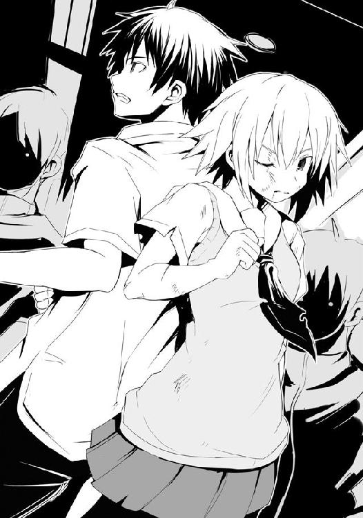
「わかった。ダンドーは私が倒す、だから......背中は任せる」
「はい、やります。猟犬群をどうにかします。必ず、やってみせます！」
彼女はそう言ってフンと鼻で笑う。そして、今一度その全身から覇気を放った。仕掛けようとしていた幻惑目的の猟犬群、何とか矛先が自分たちに向かう前に月桂冠を、と弁当を狙っていた狼たちでさえ、彼女のそれにビクリとする。
ダンドーが凄まじい勢いのまま乱戦に突入。後方まで下がっていた狼を吹き飛ばし、真っ直ぐに先輩を目指してくる。乱戦後方にいた猟犬がジャンプ。狼たちの頭上を飛び、先輩に仕掛ける。それに合わせるように弁当棚方向である、彼女の後方からもさらに一匹。しかし先輩は真っ直ぐにダンドーを見たまま犬には反応しない。そう、彼らの相手は、僕なのだ。
僕は近くにいた狼の背に飛び乗り、そこからさらに飛ぶ。空中の猟犬の横腹を蹴りつけ、その反動で先輩の後方に迫っていた猟犬に重力を味方につけた拳を打ち込んだ。着地。先輩と背を合わせ、感覚を研ぎ澄ます。自分の周りだけでなく先輩を覆うように警戒する。
「行くぞ、ダンドー。おまえの頭に氷結の魔女の名を叩き込んでやる」
ダンドーの気配が迫り、先輩の雄叫びが上がる。ドンドンと凄まじい音を立てての攻防が始まるが、僕は彼女らを見なかった。先輩は彼を倒すと言った、ならば、それを信じ、僕は自分の為すべきことをするだけだ。
上空から、左右から、後方から、迫り来る猟犬を僕は払っていく。普通にやっては手数は足りない、だが、先輩を狙う攻撃だけならなんとかなる。後は僕が耐え続ければいい。足を払われても、腹にねじ込まれても、顔面をぶっ叩かれても、僕を狙う攻撃は全て受け入れた。それを払うだけの余裕がない以上、先輩がダンドーとの戦いに集中する以上、僕に背中を任せてくれた以上......それしかなかった。それで、良かった。必ずと言ったのなら、必ずやる。本気で約束したのなら、本気で果たす。それぐらい僕にだって出来るはずだ。
喰らい続けるうちに視界が歪み、かすみ出す。それでも辺りを窺う感覚は研ぎ澄まされ、蓄積していくダメージにギシギシと関節が鳴り始めてもなお、僕の体は変わらずに動く。
後方から先輩とダンドーの攻防の気配が伝わり続ける限り、持ちこたえてやる、意地でも。
一撃離脱で少しずつ、しかし確実に削り取っていくような猟犬群の攻撃の中にあって、突如脇腹にドスンっと一撃が入る。思わず膝を折りそうになる。
「君は本当に愚かだ。魔女が我が主を抑えている間だけでも、弁当に向かえばわずかながらにでもチャンスはあったはずだ。何故それをしないんだ？ それとも本当に、この苦しみをまだ楽しいと言えるのか？ だとしたら、貴様は相当な変態だ」
山原は続けざまに攻撃を放ってくる。その間にも他の猟犬が先輩を狙うのでそちらを払い......全て喰らっていく。無感情な顔をした山原の一撃一撃は体の芯にまで届いてくる。
不思議なことに彼の攻撃には犬ではない何かの匂いを感じる。かすかな、プライドの匂い。
「苦しいのが好きな奴なんていないですよ。けれど、あの時も言ったように......今一度言います。うまい飯のためなら、受け入れる。与えられるだけの飯じゃなく、勝ち獲――ぐ！」
いきなり憤怒を浮かべた山原はそれ以上言わせまいとするように、僕の喉にその手を伸ばし、凄まじい力で絞め上げてくる。僕の頸骨がギシリと音を立てた。
「愚かだ、無様だ、見苦しい！ おまえも優君もクソ狼どももただ強がっているだけだ！ 本当は楽に勝ちたいんだろ、安定して飯を喰っていきたいんだろ!? それが普通――」
僕の喉から山原の手が離れる。山原は二発の蹴りを喰らって床を転がる。顎髭と坊主だった。彼らはチラリと僕を見、「ったくしょうがねぇ」「うるさい犬だ」と短い言葉を残し、再び弁当棚に向かって駆けていく。
僕は咳き込みながらも再び先輩を狙う猟犬を払っていく。かすかだが、今し方の山原の猟犬らしからぬ行動に動揺している彼らの気配を僕は感じ取った。今までまるで阿吽の呼吸で動いていた彼らが指示を求めるように時折ダンドーと山原に視線を向けている。
山原が立ち上がり、即座に僕を狙ってくる。先輩ではなく、あくまで僕を、だ。叩きつけるような視線を僕は受け止める。
「何故あなたはそこまで勝ちにこだわる!? 勝ったから何だ、犬に生きて何を得たい!?」
「飯だ！ 勝利だ！ そのために狼であることを捨ててまで犬になった、当たり前だろ!? おまえたちは違うのかっ!?」
山原は叫びつつ拳のラッシュを放ってくる。さすがにこればかりは喰らうわけにはいかなかった。受け止める。
「......違わない。だが、何のための勝利だ。他人のセーブデータを使ってゲームをクリアしたって何の意味がある、何が楽しい。愚かでも無様でも苦しくても、それが何だ！」
先輩に迫る猟犬を見、やむなく僕はそちらを払う。山原の拳が僕の顔面に叩き込まれる。
「おまえは、優君は、狼どもは変態だ、マゾヒストだ！ 異常だ！」
非難の言葉。だが、それはまるで怒られている子供が言い訳をするような声だった。
かつて金城優の相棒だった男。一方は最強の狼に、一方は首輪を得て猟犬となり、二人の間に隔たりが生まれた。彼が僕らを誘い、そして決別すると執拗に狙ってくるのはそのせいなのだろうか。僕たちを取り込むことで自分の在り方を正しいと認めてほしかったのかもしれない。僕たち、いや、金城優に。......本当に、二人は親友だったのだ、きっと。
「山原、やめろ。指揮から逸脱している、戻れ。組織が乱れる」
山原と僕の間に体を滑り込ませて言う、一匹の猟犬。しかし、山原はその男を裏拳で薙ぎ払う。完全な不意打ちだったため、その猟犬は瞬時に意識が混濁し、吹っ飛んだ。そして、続けて今一度山原は僕を狙ってくる。僕もまた応じる。
「犬にまでなって得た勝利は、本当の勝利なんかじゃない！ あなたの勝利なんかじゃない！ 一時でも狼として生きたことがあるならわかっているはずだ！ 思い出せ、本当の半額弁当の味を!!」
僕は山原の拳を弾き、続けざまに彼の顔面を殴りつけた。だが、それでもなお、彼は倒れず、引かず、僕を狙ってくる。やめろ山原！ と、他の猟犬が叫び声を上げた。
彼の今の行動は完全に猟犬群の行動ではないのだ。ボス犬、ダンドーに次ぐ指揮権を有している者が、暴走している。先輩を狙う猟犬二匹はもちろん、狼の翻弄を行っている猟犬でさえ彼を注視していた。
僕は猟犬群というもの、そして彼、山原という男を考える。そして、今日は彼にとって最後の戦いだということも。......ならば、もしかしたら......。
だが、その頭に浮かんだ考えを実行することはとんでもなく危険だ。まさに、一か八か。どちらにせよ先輩に凄まじい苦しみを与えてしまうだろう。
それでもやるのか、やれるのか。何より先輩は......。
僕は半歩下がり、一瞬だけ視線を後方に向ける。先輩の背にかすかに触れた瞬間、先輩もまた横目で僕を見ていた。言葉はない、その一瞬......それで、僕は覚悟を決めた。
先輩は、きっと、持ちこたえてくれる。僕を、信じてくれる。
前を見る。山原を、見る。
「山原！ もし本当に僕に勝ちたいというのなら――！」
●
ダンドーの膝蹴りが見事に魔女の腹部に入る。華奢な少女の内臓を抉る感覚をダンドーは膝から感じ取った。よろめく彼女にさらに追撃の拳のラッシュ、これも面白いように入った。
勝てる。確信を得たと同時にダンドーはようやく意識を周りに向ける余裕を持てた。どうやら彼女の背後を守っていた佐藤とかいう若造が消えたせいで、二匹の猟犬の攻撃が彼女の背中に打ち込まれていたようだ。それでさっきの攻撃がするりと、そしてモロに入ったのだろう。
こうなればただの袋叩きである。先ほどまでの身を削り合うような攻防から一転、一方的な展開となる。佐藤が消えた段階で即座にこの場を離脱すればまだチャンスはあっただろう。だが、もう無理だ。ダンドーは目の前で両膝をついている氷結の魔女を見つつ、思った。これでは逃げるどころか立ち上がることすらできないだろう。
ただそれでも猟犬二匹を嗾けて袋叩きしてもなお、闘志を漲らせているのは、もはや見事としか言いようがない。前髪の隙間から覗く鋭い獣の目。未だ飢えを腹に抱え、虎視眈々とこちらの喉元に喰らいつかんとしている。良い狼だ。見事な狼だ。この歳で、たった二年でここまで練り上げている。驚異的な成長度合いであり、もはや腰巾着などとは呼べる相手ではない。
夏服故に剥き出しの白い腕には幾多の傷ができ、しなやかな彼女の両足を包む黒いストッキングはすでに所々で伝線し、その柔肌を露出させていた。だが、それで可哀想などとはダンドーは微塵も思わない。相手は互いに命を遣り取りする強敵、山原の我が儘がなければ決して当たろうとはしなかった二つ名持ち。ただの名も無き狼であるのなら放っておいてさっさと弁当を獲りに行くが、相手が相手だ。歴代のＨＰ部の連中にはこの状態から形勢を逆転してきた例がないわけではない。最後まで油断できぬ相手......それがあの最強の枕詞を持つ魔導士を師とする魔女であるのならなおさらだった。
現にダンドーの体もまたすでに相当なダメージを受けており、あのままもうしばらくタイマン戦が続けば膝をついていたのはこちらだったことだろう。腕も足も腹も、そして初撃を喰らった顎も、しばらく痛みは取れそうにない。それほどの相手だった。だが、勝った。あとはもはや脆弱なる狼しか場にはいない。敵はない。
体勢を立て直したダンドーは手元の二匹の猟犬に指示を出し、再び魔女に嗾ける。ダンドーもまた間合いを詰めた。一気にトドメを刺し、今宵の月桂冠を手に入れるつもりだった。猟犬が膝をついたままの魔女を殴る、蹴る。彼女は膝立ちのままで何とか防ごうとするが半分以上の攻撃は彼女の体に叩き込まれる。ダンドーは拳に力を込めた。
だが、ふと、おかしなことに気がついた。猟犬が、二匹しかいないのは何故だ？
嫌な予感がした。ダンドーは魔女に集中していた意識を乱戦全体へと広げる。......いた。一匹は倒れ、そしてもう一匹の山原は......弁当棚前、最前線にいる？ 何故？ 狼の妨害は山原の担当ではない。ダンドーは己の目を疑った。あの男、月桂冠に手を伸ばそうとしている？
バカな、と思わず呟いた。いつの間にか姿を消していたＨＰ同好会の若造がその山原の手を弾いていたが、もしそうでなければあの男......自分を差し置いて今、月桂冠を獲っていたのではないか？ 妨害を任とした猟犬も彼のその行動に驚愕しつつ、敵対するべきか否か、視線でこちらに指示を仰いでいる有様だった。
「あの男......まさかっ！」
あの時、暴走しかかった山原を今一度猟犬としての在り方を厳命することなく、少しの間だけ押さえつけておけばいいと思っていた。どうせもう奴は猟犬ではなくなるのだ、と。
その隙につけ込まれた。もう猟犬でなくなるというのなら......もはや主を優先させるという猟犬の掟も守る必要もない。主たる自分が首輪を外す前に、山原は自ら綱を断ち切り、首輪からすり抜けた――裏切ったのだ。一足早く、彼の方から猟犬であることを捨てた。あの勝ちに拘る性格が、最後の最後でダンドーの首を絞めようとしている。
「山原あぁ!!」
もはや死にかけの魔女などを相手にしている場合ではなかった。裏切りなど、許しはしない。本来ダンドーと猟犬は絶対の信頼関係で結ばれている。そうであるからこそ阿吽の呼吸が可能なのだ。それが裏切りなど、仮にもう群れを去る一匹だったとしても、決して許してはならない行為だった。堅固なダムとて小さな傷が決壊の原因となるように、一度の裏切りを見過ごせばダンドーと猟犬群という地獄の狩猟団の存続にすら関わってくる。
ダンドーは魔女に嗾けていた二匹を山原に向かわせる。山原の実力は他の猟犬からすれば頭一つ抜き出ていて二匹ではまず勝てない。三匹でも実際怪しいところだが、時間は稼げるはずだ。何よりダンドー自身の手で血祭りに上げなければ気が済まない。ぶち殺す。
だが、ダンドーは信じられぬ光景を目撃する。山原は襲いかかってくる猟犬を躊躇う素振りもなくぶちのめし、やや遅れてきた猟犬は他の狼から攻撃を喰らい、よろめき、そこにあの佐藤が蹴りつけ、踏み台にした。瞬殺だった。
上空に飛翔した佐藤は天井に着地し、そこを蹴りつけ、豪速で乱戦の中、弁当コーナー前、最前線へと躍り込んでいく。乱戦の中にいた狼と猟犬がぶっ飛ばされる。そして着地した佐藤と山原が最前線で拳をぶつけ合い、その際には衝撃波が生まれていた。犬が......裏切りという行為でもって、今一度狼としての野性の血を取り戻したというのか。
数が減り、自分と山原の指示系統が崩れた猟犬群は完全な崩壊を見せていた。妨害目的の彼らは次々に狼たちに喉元を喰い千切られていく。
猶予はない。もう、ヘタをすれば山原だけでなく他の狼が月桂冠に手を伸ばしてしまう。そんなこと、許しはない。山原の裏切りも、決して。
ダンドーは怒りに震える。雄叫びを上げつつ乱戦を一人駆け抜ける。迫り来る顎髭を生やした男と坊主頭の攻撃をいなし、かわし、カウンターを叩き込み、最前線で弁当の前で争う山原と佐藤に接近する。一撃で二人を屠ってやる。
狼たちを次々に薙ぎ払い、歩を進めるダンドー。ついに山原たちまであとわずかとなった時、ふいに背中に何か温かなものを感じた。
「互いに利用し合うだけの関係とは空しいものだな。ダンドー」
凜とした声が聞こえた時、自分が花の香りに包まれていることに気がついた。その声のように、甘ったるくはない、爽やかな花の香り。
自分は今、魔女の術中、彼女の領域の中にいると直感する。背筋が、震えた。
「......バカ、な。何故......」
彼女の声はまるでダンドー自身の体から発せられているかのように聞こえた。それぐらいに今、氷結の魔女はダンドーに体を密着させているのだ。
「佐藤は猟犬をどうにかすると言った。私は信じ、ただ耐えた。それだけだ」
では、あの袋叩きすら計算のうちだったと？ 徹底的にいたぶられれば驕傲ったオレが隙を見せるはずだと？ 何の確証もない中、瀕死になる覚悟をし、ただあの若造の言葉を信じて、この瞬間のために全てを懸けたというのか。凄腕にして名うての氷結の魔女が、そんな曖昧なものに命を懸けたというのか。
「危うい賭けだ。だが、私は彼を、彼は私を信じた。それ故に、おまえは負ける」
氷結の魔女、その全てをかけた渾身の一撃が今、放たれる。
◯
山原にはやはり狼の血が流れていた。そうでもないような男を、いくら昔とはいえ、あの魔導士が相棒になんてしないはずなのだ。
本当にうまい弁当を食べたいのなら、本当の意味で勝ちたいのなら......ついてこい。僕から弁当を奪ってみせろ、おまえの手で。そう言った時、彼の目には野性の獣の輝きがあった。
きっとこれこそが山原という男なのだ。ただ勝ちに拘り過ぎ、負けを受け入れられなかった。だから、勝率を上げるために猟犬になった。しかしその根底に流れる血は変えられない。
僕と彼は弁当コーナー前最前線で互いの手を弾き合っていた。山原とともに動いたためか、妨害目的の猟犬は手を出してこなかった。代わりに先輩を狙っていた猟犬たちが僕らを狙ったが、これは彼と僕でぶちのめす。しかしそれで僕と山原を敵だと判断した猟犬が牙を剥く。
僕と山原は弁当に伸ばしていた互いの手を弾き合い、その犬に顔を向けた。山原が受け、僕が叩く。その隙に抜け目のない狼が僕らの間から手を差し込み、弁当を狙ってくる。先ほどまで散々猟犬の攻撃を喰らい続けていた僕の体では対処しきれない。まずい。
「飛べ、佐藤！」
先輩の声がし、弁当陳列棚前、最前線に豪速で何かが飛来する。反射的に僕と山原は飛び退く。意識のないダンドー。先輩を見ると彼女は、どうだ、という自慢げな目をし、全ての力を使い果たしたかのように、膝をつく。
彼女は、そんな状態になってまで戦い抜いた、己がやると言ったことをやり遂げたのだ。
ダンドーはもはやただの人形であるかのように慣性のままに、弁当を狙ってきていた狼と接触。二人して弁当棚の下に凄い勢いでぶつかる。衝突の反動で二人の体が空中に飛ぶ。僕は彼らに飛び乗り、さらに上空へ飛んだ。
弁当コーナー前は短くも長い戦いの末に死屍累々の有様に至っていた。倒れ伏した狼、猟犬そしてダンドー。しかしそれでもなお戦い続ける者たちもいる。最前線から飛び退きつつある山原、やや離れたところで膝をついている細身の猟犬一匹、力を使い果たして倒れ行く先輩、必死に立ち上がろうとしている顎髭と坊主。場は確実に終着を迎えつつある。
次の瞬間に弁当に手を伸ばせるのは山原と僕だけ。まさに雌雄を決する最後の瞬間。だが、その山原は最前線から少し離れた所に着地し、倒れ伏すダンドーに目を奪われていた。長い間主人であった男の敗北を前に、彼は何を想うのか。だが、何にせよ、そんなものは今はどうでもいいはずだ。僕を見ろ、弁当を想え。それが狼としてあるべき姿のはずだ。山原、血の味を思い出せ。この勝負、猟犬でも狼でもなく野犬として終えようというのか。僕と先輩に戦いを申し込んでおきながら曖昧なまま何者でもなく終えようというのか。
――ふざけるな、戦え、最後まで、おまえのあるべき姿で戦い抜いて見せろ！
僕は身を捻り、天井に足の裏をつける。その音に反応して山原が顔を上げた。交錯する視線。彼の目から困惑の色が消え、その手が拳に固められる。
僕は全ての力を足に込める。痛みが全身から吹き出そうになるも僕はそれを抑え込む。痛みがなんだ。苦しいからなんだ。想え、弁当を。北海道産炭火焼き秋鮭弁当を頬張るその未来を意識しろ。空腹を力に変え、立ち塞がる者を倒し、今こそ弁当に手を伸ばせ！
「行くぞ山原ぁ!!」
僕のありったけを込め、天井を蹴る。狙うは山原。彼もまた弁当に手を伸ばせないと判断したのか、それとも彼の性情がそうさせるのか、膝を曲げ、僕を迎え討たんとする。
手を拳に固め、山原に迫る。山原もまた地を蹴り、飛翔。拳を放ち合う。狙うは相手の顔面、互いに一撃で決める気だった。
その時、横合いから黒い影が飛びかかる。細身の猟犬、あの、ボルゾイが必死の形相で山原の首を掴んできたのだ。山原の体がぶれ、拳が空を切る。それは犬であり続けたことの、そして裏切りの代償か。山原が驚きの顔をし、しかしそれでもなお、僕を見続けた。彼のその目はあの全てを拒絶するような、恨みがましい暗く重い目ではない。受け入れる、いや、立ち塞がるものに向かっていこうとする......そんな狼の目に見えた。彼は、覚悟を決めていた。
ならば、すべきことは一つしかない。僕はその拳を――猟犬に叩きつける！
拳が細身の男の顔面を捉える。そのまま全てを込めて、押し込んだ。彼は身を捻りつつぶっ飛ぶ。彼の指先から、いや、掴まれていた山原の首の皮膚が破け、鮮血が飛び散る。
何故。そんな声が山原から聞こえた気がした。答えてやりたかったが、ボルゾイを殴り飛ばした僕の体は上昇していた山原と接触し、絡み合いながら弁当棚前の床に叩きつけられた。二人して呻き、床に手をつく。
「行けぇ、佐藤!!」
先輩が倒れたまま、顔だけを上げて叫んだ。そんな彼女を跳び越えてくる二つの影、ボロボロの顎髭と坊主だ。ダンドーに薙ぎ払われたはずだが、まだ余力があるのか。
二人は最後の力を使って僕ら、いや、弁当を目指してくる。
僕は這い蹲ったまま弁当に視線を向ける。そしてその横では山原もまた、僕ではなく、弁当を見た。本当の勝利を、その目に捉える。これが本当の意味でのラストバトルだった。
僕と山原は床を蹴り上げる。まるで地を駆ける四本足の獣がごとくに、床すれすれを飛ぶ。横一線。北海道産炭火焼き秋鮭弁当へと二匹の狼が手を伸ばす。己の誇り、無数の想い、数えきれぬ激突、持てる全てを懸けた技の応酬、信頼と裏切り......その全てを乗り越えた先の二匹の争奪戦。決して犬では達し得ない領域での闘い。
僕たちに向けられたいくつもの視線。その中には広部さんのものがあるのを僕は感じ取る。
広部さん、これが僕だ。これが狼として生きる、僕なんだ。器用に生きるより全力で生きたい、戦いたい。だから今、僕は弁当のために......命を懸ける。勝利の一味が入った、本当にうまい弁当のために、全てを懸ける！
「届けぇえええぇえ―――――――――――――――――――!!」
僕の叫びに呼応するように山原もまた雄叫びを上げた。威嚇する犬の声などではない、腹の底から溢れ出る腹の音を口から放っているのだ。
弁当の表面を二人の指先が撫でる。迫り来る陳列棚。速度は緩めない。指先が弁当容器の下に差し込まれる。目前に迫る、棚。山原がもう一方の手で頭を防御した。僕は......ただ、手を伸ばし続けた。この弁当を獲るためならばこの棚に衝突して死んでもいい。本気で、そう思った。戦ってきたライバルたち、ボロボロになってまで戦い抜いた先輩、そして今一度僕を倒すために狼となってくれた山原......これほどの勝負に命を懸けずしていつ懸ける。
僕は瞼を閉じない。迫り来る棚、そしてその上にある弁当を見続ける。その時、弁当の蓋の方を押さえていた山原の親指の先がかすかに浮いた。衝突の恐怖に体が反応し、指が硬直したのだ。僕はその瞬間に横合いに引っ張る。弁当が彼の手を滑り――そして、獲った。
目前に迫った棚。もう防御は間に合わない。......僕は覚悟を決めた。
だが、視界がブレる。横に、そして重力に引かれるように下方へ全てがズレていく。
――衝突。ドダダン!! と僕と山原は陳列棚の下部分に激しくぶつかった。しかし、それは僕が覚悟していたより幾分弱い。......生きている。意識すら、飛んでいない。
何故？ 僕は手にした弁当を両手で持ちつつ、考える。しかし、それはすぐにわかった。
「広部......さん？ どうして......」
彼女が僕の腰に腕を回し、痛いほどに締めつけていたのだ。衝突のまさに直前、彼女が横合いから飛び込んできて......それで衝撃が弱まったのだろう。僕の腹部に顔を埋める彼女が何故こんなことをしたのかは、わからなかった。
横で、山原が呻きを上げて仰向けになり、力なく呆然と照明を見る。
「......何故、あの時、おまえは俺の方を殴らなかった」
走り込んできた坊主と顎髭が残されていた弁当を奪取するのを眺めつつ、僕は応じる。
「それが僕の為すべき事だったから。......あなたは犬なのか？ 僕にはそうは見えなかった」 彼は顔に手を当てて笑う。力なく、しかし爽やかに。彼の喉元にはあの猟犬が引っ掻いた傷跡。それはまるで長年喰い込んでいた小さな首輪を取り外した跡のように、僕には見えた。
部室に戻ってきた僕らは、いつものように月夜の中、温めた弁当を広げていた。広部さんがついてきたのはちょっと驚いた。「二度と姿を見せるなこの変態！」とか内本君的にフィーバーなことを言われて背中を向けられるかと思ったのだけれど、ボロボロの僕と先輩を支えつつ、俯いて無言のまま、ついてきてくれたのだ。
僕の左右に女性陣が座る。二人の容貌が容貌だけにまさに両手に花という状態だ。嬉しいやら辛いやら、苦笑していた僕はふと気がつく。弁当が一つしかないのだ。月桂冠を獲ったことで浮かれてしまい、総菜も、カップ麺も買ってこなかった。
「ん？ あぁ、その辺は抜かりない。この前おまえたちが食べなかったどん兵衛がある。......しまった、電気ポットのお湯が沸いてないな。......仕方ない。先に弁当だ」
颯爽と抜かってるじゃないですか、と僕が言うと先輩が少し頬を赤らめて笑うものの、広部さんは相変わらず俯いたまま。
僕たちはいつものように「いただきます」と言って、先輩は広部さんに箸を渡した。
「食べてみろ、広部。おまえにはその権利がある。いいな佐藤？ ......あの場の空気を感じ、あの戦いを見、そして最後に佐藤を救った。ならば、わかるはずだ。ただ買ったわけじゃない、ただ与えられたものじゃない、本当の弁当のその味を」
広部さんはまるでイタズラが見つかった子供が親の顔を見るように、横目で僕の顔を窺いながら、その箸を手にして弁当の蓋を開けた。
フワッと広がる鮭の香りが僕らの喉をゴクリと鳴らす。月光を受けて宝石のように艶々と輝く純白の新米。少量の黒ごまがアクセントとなり、より新米特有の美しさを際立たせている。少し厚めの卵焼きと紅白カマボコのゴールデンコンビに、紙製の受け皿に盛られているタケノコと椎茸そして油揚げの煮物、ほうれん草の白和え。そして、メインであるその名の通り炭火で焼かれたであろう肉厚な鮭と、フライ。多分鮭フライだろう。
僕は温める前に取り置きしておいた醤油の小袋を破り、おかずにさっとかけた。
広部さんがゆっくりと箸を動かし、食べ始める。先輩と僕はその様子を固唾を呑んで見守った。彼女がどんな感想を述べるのか......。
「......よく、わかんないや」
そっか、と僕は頷くしかない。広部さんは箸を置くと、席を立ち、部室の扉を開ける。
僕は彼女の名を呼び、立ち上がった。
「ごめん。でも......本当に、ありがとう。短い間だったけど、夢のようだったよ」
僕らに背を向けたまま広部さんは立ち止まった。数秒の後、そう、と短い言葉を最後に彼女は部室をあとにした。
すみません、と僕は俯いて再び席に着く。自然と目に涙が浮かびそうになる。
彼女にフラれるのは覚悟の上だった。でも、先輩とともにあの強敵たちを退けて奪取した、この月桂冠をおいしいと言ってもらえなかったことが、辛かった。
泣くな、男だろ。僕は自分に言い聞かせつつ、落ち着けようと大きく息を吸う。爽やかな花の香り。僕と弁当に影がかかる。先輩が僕の脇に立っていた。何です？ そう言おうとした直後、彼女の腕が伸びてきて、そのまま胸元に抱き寄せられる。
「え!? あの、先輩!?」
「......泣いてもいいぞ。おまえの涙が涸れるまで、こうしていてやる」
違うんです、そうじゃないんです。そう言おうとするものの服越しに感じる彼女の温もりと柔らかさ、そしてあの彼女の香りに包まれてしまうと何も言えなくなった。頭を抱かれているだけなのにまるで全身を抱きしめられているように、彼女をいっぱいに感じる。彼女の意外に大きな胸を顔に感じている以上、普段なら興奮もするはずだが......今は全然そんな気にはならなかった。いきなりの彼女の行動に驚き、しかしそれ以上に不思議なほど穏やかな気分になっていく。......ひょっとしたら、彼女は本当に魔女なのかもしれない。花の香りとともに、不思議な魔法をかけられている、そんな気がした。
自分の中にあった泣くまいとする意思が優しく解かれていく。それに加え、頭を抱かれ、泣いていい、だなんて言われてしまえば、涙は自然と湧き出てきてしまう。僕は彼女の腰と背に腕を回し、少しだけ泣い――いや、待て。そうはいくか、泣いてなんてしまったら!!
「先輩ダメです！ 泣いたら鼻が詰まって味が、せっかくの弁当の味がわからなくなる！」
僕は彼女の腕を解き、見上げる。先輩はきょとんとし......そして、笑った。
「そうだな、それもそうだ。確かに、それではせっかくの月桂冠が台無しだ。しかも冷めてしまうじゃないか。私としたことがバカなことを言ってしまったな」
先輩はどん兵衛の準備をしつつ僕を見守るように、微笑んでいた。先輩の胸に未練がないわけではなかったが、今は弁当の方が重要だ。僕はまず最初にその炭火焼きを意識せざるを得ない鮭に箸を向けた。ガス火で焼いたそれとは違い、色合いは均一というわけではない。炭火による手作業で焼いたのだろう、疎らな焦げ具合、場所によってはやたらに黒くなっていたりする部分もあるが、それは決してマイナスのイメージにならない。その濃淡は普段よりも、うまそう、と思わせる技なのだ。
さて、酷い焼き鮭はパッサパサの生木みたいな場合もあるが果たして......おぉ、柔らかい。箸を差し入れた瞬間、厚めの身から脂が滲み出、ふっくらとした身がほろりほろりと解れていく。その身を箸ですくうようにして口に運べば......表面が何と香ばしいことか！ 炭から発生する遠赤外線の奇跡の申し子〝焦げ〟がうまい。産卵のために脂をため込んだ鮭がその焦げをまとったさまは黒色のドレスを纏った美女のよう。その黒色が、纏うものの魅力をさらに引き出しているのだ。うまぃ、と思わず僕は心のままに、笑うように言葉を漏らす。
口内で少量だけかけた醤油の風味と塩気が鮭の身と混ざり合い、白米を要求してくる。雪原というより、宝石を敷き詰めたように美しいご飯を食べる。ほっかほかで、もっちりとしたご飯だ。鮭と白米、この鉄板の組み合わせに炭火焼きの風味......日本人に生まれれば決して否定しようのない味わいである。......そう、そのはずなんだけど......。
「......広部さんには、伝わらなかったんだな......この味」
先輩は、どうかな、と笑う。その視線の先は弁当に向けられていた。
あ、ヤバイ、僕一人でちょっと食べ過ぎたかな？ でも、アレ？ 僕、まだ二口しか......？
その時、先輩は二つめのどん兵衛の蓋を開け始めていた。
●
味がわからないわけがなかった。広部はまだ口の中に残る鮭の風味を思い出す。美しいご飯は新米の甘味や風味を感じられたし、焼き鮭は語るまでもなく、鮭のフライでさえ彼女が大っ嫌いなカレー風味の白身魚のフライとは比べるのさえおこがましいレベルの料理だった。下味は最小限、でも冷凍臭さもなければ生臭さもない。それでいてほっくりと柔らかい身には鮭の味がこれでもかと言わんばかりに込められていた。そこにかかるは醤油。これがタルタルソースだったら全てを台無しにしていたが、醤油のシンプルな味わいが鮭フライをワンランク上の味に引き立てていた。そんな鮭の身を食した時、意識するより先に箸がご飯を目指していた。気がつけば一人でバクバクとかなりの量を食べてしまい、ハッとした時には半分近くを口にしている始末だ。洋はじっと広部だけを見ていて、気がついていないようだったが......。
何にせよ、凄い、と広部は思った。あの味に、そしてあの強さに。あの弁当にはどこにも誤魔化しがなかった。食材の味を引き出し、それだけで勝負しているのだ。加えたのは炭火焼きという手間と、そして調理の腕。それはまるで裸で人前で立つぐらいの勇気、そして自信がなければできないことだ。
泣きそうになった。それはまるで、著莪あやめや佐藤洋や......今日あのスーパーで見た激戦を繰り広げた狼と呼ばれる者たちの姿のようだった。本気と本気、持てる全てを懸けて、あの極上の味を求めた戦い。まさにそのままだった。
最後、洋と競り合った男の気持ちが自分には痛いほどよくわかる。勝てる自分であるために、そのために猟犬というものに彼はなったのだ。自分が、著莪あやめに勝つためにアイドルになったように。それはただの手段、しかし、気がつけばにそれに振り回されるようになっていた。そしてそれは雪山を転がり落ちる雪玉のように、転がれば転がるほど大きく、激しく、どこまでも転がり落ちていった。勝てる自分であろとしたのに、ただ勝つことだけが目的になっていった。心のどこかで、それは違うとわかっていた。だから女優になりたいなどと今の自分を否定し続け、しかし同時にそうなってしまった自分を正当化してもいた。
ずっとわからなかったこと......本当になりたかったものが、今ならはっきりとわかる。
――あぁ、そっか。本当は......私は、私になりたかったんだ。
広部蘭として人に認められたかった。でも、そんなのは無理だと無意識に思っていたのだ。
思えば、洋を本当に意識したのは鬼灯ランの姿から一発で自分を見抜いたことに気がついた時だった。あの時、無性に嬉しかった。まるで、それこそ一〇〇万人の中から自分、広部蘭を見つけ出してくれたような......そんな嬉しさがあった。だからなのだ。彼と一緒にいた時に感じたあの家に帰ってきたような気分は、タイトな服を脱ぎ去り化粧を落とした時の気分なのだ。彼は、いつも本当の自分を見てくれている。だから気が楽になる、素顔になれた、素直でいられた。そう、ずっとそうだった。いつも彼が告白してくる時は決まって、頑張っている君の姿を見ていて......とか子供特有の曖昧なくせに格好だけはつけたような、そんな台詞ばかり。でも、それは建前の台詞だろうと信じず、ろくにお互いを知りもしないくせに適当に言い寄ってくる他の男子と同じだと思っていた。どうせ、くだらないその他大勢......。そう思っていた。でも、今ならわかる。彼は、本気だったのだ。本気で自分のことを――。
誰かを信じるというのは、勇気だ。臆病な自分は誰の言葉も信じてこなかった。
だから彼を引き留めようとして、鬼灯ランとしてデートしてしまった。そんな自分が情けない。負けたくない、だから喜ばせよう、こっちの方が好きなはずだ、そう安易にそう思ってしまった。でも......違ったのだ。
彼は散々告白してきて、その全てが無為だったと悟ってしまった。だから、彼は......。
もしあの時、彼の言葉を信じ、ありのままの自分で彼に「行かないで」と言っていたら......どうなっていただろう。......いや、きっと無理だ。彼は行った。それが、佐藤洋だ。人を、自分を騙し、偽り、誤魔化してなんていけないバカ。でも、だからこそ他の人とは違う目線、己の目線でものを見ている。損得以上のものを見ることができるのだ。
広部は部室棟を出ると、月下、振り返って五階を見上げた。ＨＰ同好会部室。あそこに今すぐ走って戻って、彼に飛びつきたい。あのスーパーの時のように。
あの時、彼が本当に獣と化してどこかへ走り去ろうとしているように見えた。それはきっと生死の境界線の向こう側......そこにだけは、絶対に行かせたくなかった。
彼から離れたくない。側にいてほしい。彼に見ていてほしい。広部蘭を、見つめていてほしい。......でも無理だ。行けない。行ってもきっと今の自分は彼の目を直視できない。たとえ誤解があったのだとしても、彼を傷つけたくせに今更手の平を返すなど狡いにもほどがある。
いつか、素顔のままでいられるようになったら......全てをさらけ出せる勇気を持ったら......その時、彼に会いに来よう。今までのことを謝って、そして今度は自分から本当の気持ちを伝えよう。素顔で、素直に、ありのままに......カレー風味のフライじゃなく、あの鮭のフライのようになれた時には、必ず。
目尻から涙がこぼれる。広部はそれを指で拭い、そのまま左の目元をこする。化粧が崩れ、泣きぼくろが姿を現す。そしてツインテールのリボンを解き、彼女は踵を返すと部室棟に背を向けた。ゆっくりと、しかし確かな足取りで、彼女は一人、薄暗い夜道を歩み始める。
７
――この度はクランクアップ、おめでとうございます。早速ですが、何故この時期に改名を？
『それは今回の映画を機会にもっと違う私を見てほしいと、そう思ったからです。形から入っちゃうんですよ、私』
――えぇーっと。気のせいかもしれませんが、鬼灯......あ、失礼。広部蘭さんの左目のところにほくろがあるように見えるですが？
『はい。今まで事務所の方に言われて隠していたんですけど、でもこれもこの機会に、と思いまして。まだちょっと恥ずかしいんですけど、でも、私を好きでいてくれる人に嘘をつくようなことはしたくないって、ちょっと我が儘言っちゃいました』
――グッと大人の女性っぽくなった印象ですね。......ひょっとして撮影中に新たな恋とか？
『どうでしょう。もしかしたら映画の中でそれがわかるかもしれませんよ？』
――お上手ですね。
ありがとうございます、とＴＶの中の広部さんは笑顔で肩をすくめてみせる。いつもならかわいく揺れるツインテールの髪は、今は普通のロングヘアとなって彼女の背へと流れていた。
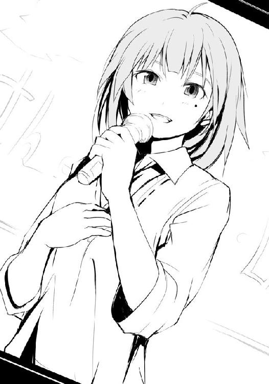
「お、あの電車かな......って、おい、佐藤。なんだよ〜、まだ未練あんの？」
そんなふうに言われ、著莪にヘッドロックされてもなお、僕は駅前の電器屋さんのウィンドウ越しに見えるテレビから目を離せなかった。
「諦めろって。......ちょっと、もーやめろって、何泣きそうな目してんだよー。しょうがないなぁ、んじゃアイツらほったらかしてまたツーリングでも行っちゃう？」
大丈夫だよ、と、僕は著莪のヘッドロックを乱暴に外し、青く透き通った空を見上げた。
数日前、どうも槍水先輩から僕がフラれたことを聞きつけたらしい著莪は、夜中の寮にやってきて僕の顔を見るなり爆笑し......そのまま僕を拉致り、ツーリングに強制参加させたのだ。夜なのでツーリングとは名ばかりで、田舎の道を延々と走り続け、とんでもない山奥の蕎麦屋で、天然水だけを使って作られたという天ぷら蕎麦を食べて帰ってきただけだ。
今考えれば、あれは彼女なりの慰め方だったのかもしれない。今まで広部さんにフラれた時は、大抵意識が保てなくなるまでゲームの相手をさせられたのだけれど......。
その時、セーガー！ と著莪の携帯が鳴った。
「あ、仙？ 着いた？ 駅前の電器屋さんの前に、うん、佐藤と一緒に......うん大丈夫、まだあの二人は着いてないから。あ、いたいた！ こっちこっち！」
駅前のバスロータリーの方からやってくる私服の槍水先輩と......相変わらず休日だというのに学校の制服をチョイスしている白粉が小走りにやってくる。
「すまん、ちょっと迷った。いつもは駅まで来ないからな。......ん？ これは、広部か」
先輩はちらりと僕を窺ってくるが、大丈夫です、と言うように笑って肩をすかしてみせる。
「そうそう、佐藤の奴さぁ、今回はヤケに立ち直りが早いんだよね？ いつもだったら一カ月ぐらい死体みたいになってて面白いはずなんだけど」
「人は成長するんだよ、っつぅか人が落ち込んでるのを面白いとはどういう......あ、来た」
僕は駅の入り口からそれぞれ大きなバッグを手に出てくる二人の少女を見つけ、手を振る。
彼女らは、丸富高校文化祭兼学校見学会のためにやってきた――禊萩真希乃と淡雪えりかだ。彼女らは手を振り返してくれるものの、真希乃が入り口の自動ドアにカバンが引っかかり、ドテッと転倒してしまう。そんな彼女に遠目にも淡雪が怒鳴り散らすのが見え、著莪たちは苦笑しながら二人のもとへと歩いていく。
僕は振り返る。広部さんは真っ直ぐにカメラを見ていた。それはまるで僕を見つめているかのようで......はっ!? もしかしたら惚れられて......ないよなぁ。わかってる、わかってるさ。
「どうした佐藤、おいていくぞ」
先輩の声に前を向く。秋空の下、僕は彼女らのもとへ走り出す。愛しき人に背を向けて。 ......さようなら広部さん。僕の初恋の人。
――では最後にファンの方々にコメントをお願いします。
『はい。......私は、まだまだです。中には花開いたなんて言ってくれる人もいますけど、そんなことはなく、今、ようやく本当の一歩を踏み出したところです。だから、まだまだなんです。......けれど見ていてください。いつかきっと、本当の――』
《了》
著者紹介
アサウラ
１９８４年生まれ。北海道出身。東京在住。
大学在学中に第５回スーパーダッシュ小説新人賞に応募した「黄色い花の紅」で大賞を受賞、デビュー。
「ベン・トー」シリーズが「このライトノベルがすごい！ ２０１１」（宝島社）で第５位にランクインし、大ブレイク。
柴乃櫂人（しばの・かいと）
１９８１年生まれ。大阪出身。東京在住。
ゲーム会社に所属しニンテンドーＤＳの大ヒットＲＰＧ「ルミナスアーク」などのキャラクターデザインを手がけたのち、フリーに。
「ベン・トー」シリーズのコミカライズで漫画家デビューも果たす。
集英社ｅスーパーダッシュ文庫
ベン・トー ５
北海道産炭火焼き秋鮭弁当２８５円
著者 アサウラ
(C) ASAURA 2012
２０１２年２月２日発行
この電子書籍は、集英社スーパーダッシュ文庫「ベン・トー ５ 北海道産炭火焼き秋鮭弁当２８５円」
２０１１年７月27日発行の第10刷を底本としています。
発行者 鈴木晴彦
発行所 株式会社 集英社
東京都千代田区一ツ橋２丁目５番10号
〒１０１−８０５０
［電話］
０３−３２３９−５２６３（編集部）
０３−３２３０−６３９３（販売部）
０３−３２３０−６０８０（読者係）
制作所 株式会社デジタルディレクターズ
本作品の全部また一部を無断で複製、転載、改竄、インターネット上に掲載すること、および有償無償に関わらず、本データを第三者に譲渡することを禁じます。なお個人利用の目的であっても、コピーガードを解除しての複製は、法律で禁じられています。